新帖启动！
万物起源伦敦篇，已分析的内容已经十分丰富，虽然大部分都是隐喻角度分析的，不过也有少量分析是基于剧情，例如分析“小兰的崩溃是因为看见柯哀互动”，而“折叠时空”系列将分析重点放在案件与案件的时间关系上，也许小兰的崩溃不单是因为柯哀，还因为她的“迁就”没有得到回报，而这一“迁就”，通过日常案件【酉之市】表现得淋漓尽致。
本次分析从第197天白鸟归林开始，至223天晚上拉面店结束，小时间内占据一个月时间，具体一些时间节点如下：
198天酉之市1，210天酉之市2（小兰参加了两次，间隔12天，酉之市前后存在不少鬼怪类案件，例如河童案，甚至可能有魔犬案，小兰怕鬼的属性大大加强，不知道是不是受酉之市的影响）
211天白色情人节，小兰大哭。不难发现，不论酉之市还是白色情人节，小兰似乎都认为自己是妥协的一方，她不断地“迁就”恋爱签上的要求，拿到喉糖也只好含泪接受。
216天伦敦篇开启，新兰上演伦敦马拉松，这一个月小兰的“迁就感”，尤其是伦敦的所谓“准备充分”却换来新一的“无情对待”，终于让矛盾总爆发。
柯哀方面剧情数量远高于新兰，除了全程参与白鸟归林，柯南还在201天幻想小哀穿哥特式洛丽塔，在207天四神侦探团看到了白色，在210天蒸汽密室遭到小哀辣椒粉攻击，其余案件还包括千苗，服部等场景，柯南对小兰的“迁就”是没什么概念的，也不能很好注意到小兰的悲伤，当小兰因为酉之市的签而心绪不宁时，柯南正在和小哀一起带娃闯别墅。可以认为，伦敦篇的总爆发同样是日常案件沉淀下的必然结果，是典型的量变产生质变过程。
本帖将持续更新伦敦篇前后各案，为大家还原伦敦篇前已经难以为继的迁就式新兰关系，顺便大量磕柯哀，白鸟归林镇楼！
万物起源伦敦篇，已分析的内容已经十分丰富，虽然大部分都是隐喻角度分析的，不过也有少量分析是基于剧情，例如分析“小兰的崩溃是因为看见柯哀互动”，而“折叠时空”系列将分析重点放在案件与案件的时间关系上，也许小兰的崩溃不单是因为柯哀，还因为她的“迁就”没有得到回报，而这一“迁就”，通过日常案件【酉之市】表现得淋漓尽致。
本次分析从第197天白鸟归林开始，至223天晚上拉面店结束，小时间内占据一个月时间，具体一些时间节点如下：
198天酉之市1，210天酉之市2（小兰参加了两次，间隔12天，酉之市前后存在不少鬼怪类案件，例如河童案，甚至可能有魔犬案，小兰怕鬼的属性大大加强，不知道是不是受酉之市的影响）
211天白色情人节，小兰大哭。不难发现，不论酉之市还是白色情人节，小兰似乎都认为自己是妥协的一方，她不断地“迁就”恋爱签上的要求，拿到喉糖也只好含泪接受。
216天伦敦篇开启，新兰上演伦敦马拉松，这一个月小兰的“迁就感”，尤其是伦敦的所谓“准备充分”却换来新一的“无情对待”，终于让矛盾总爆发。
柯哀方面剧情数量远高于新兰，除了全程参与白鸟归林，柯南还在201天幻想小哀穿哥特式洛丽塔，在207天四神侦探团看到了白色，在210天蒸汽密室遭到小哀辣椒粉攻击，其余案件还包括千苗，服部等场景，柯南对小兰的“迁就”是没什么概念的，也不能很好注意到小兰的悲伤，当小兰因为酉之市的签而心绪不宁时，柯南正在和小哀一起带娃闯别墅。可以认为，伦敦篇的总爆发同样是日常案件沉淀下的必然结果，是典型的量变产生质变过程。
本帖将持续更新伦敦篇前后各案，为大家还原伦敦篇前已经难以为继的迁就式新兰关系，顺便大量磕柯哀，白鸟归林镇楼！
一、白鸟归林：另一种模型的柯哀初遇
好些人认为白鸟属于败犬配平，一直认为白林是随便配的，在我看来这种观点有些吹毛求疵，诚然白林确实不如高佐有详细塑造，也少了一些独立性，但这还真不是随便配平的，小林被孩子们说“像佐藤”是很早的事情，完全不是空降配平，一点也不突兀。
白鸟归林的客观原因是高佐又是亲了又是要一起去泡澡，再晾着白鸟就残忍了，且高佐故事大致完结后，也需要一对新的警视厅CP来延续柯哀映射，白林于是箭在弦上。
我们注意白鸟本次想看的电影：《白壁》，要知道上一案可是【赤壁】，根据我上个帖子的分析，赤壁对应白色国际象棋先行，白壁对应黑色国际象棋后行，如果先看赤壁再看白壁，会因为错觉以为是绿壁。
而白鸟是白壁，因为佐藤并未真正喜欢白鸟，白鸟对佐藤也只能称为执念而非喜欢，柯南看到的恐怕是绿壁，即新兰似乎是双箭头的。
当白鸟的电影票【白壁】被替换成哥美拉，他真正的恋爱故事也就到达了，新兰柯哀有没有类似的元素呢？
【红修篇，新一抛下小兰去看“鲜红的天花板”，这也是一种“赤壁”】
好些人认为白鸟属于败犬配平，一直认为白林是随便配的，在我看来这种观点有些吹毛求疵，诚然白林确实不如高佐有详细塑造，也少了一些独立性，但这还真不是随便配平的，小林被孩子们说“像佐藤”是很早的事情，完全不是空降配平，一点也不突兀。
白鸟归林的客观原因是高佐又是亲了又是要一起去泡澡，再晾着白鸟就残忍了，且高佐故事大致完结后，也需要一对新的警视厅CP来延续柯哀映射，白林于是箭在弦上。
我们注意白鸟本次想看的电影：《白壁》，要知道上一案可是【赤壁】，根据我上个帖子的分析，赤壁对应白色国际象棋先行，白壁对应黑色国际象棋后行，如果先看赤壁再看白壁，会因为错觉以为是绿壁。
而白鸟是白壁，因为佐藤并未真正喜欢白鸟，白鸟对佐藤也只能称为执念而非喜欢，柯南看到的恐怕是绿壁，即新兰似乎是双箭头的。
当白鸟的电影票【白壁】被替换成哥美拉，他真正的恋爱故事也就到达了，新兰柯哀有没有类似的元素呢？
【红修篇，新一抛下小兰去看“鲜红的天花板”，这也是一种“赤壁”】
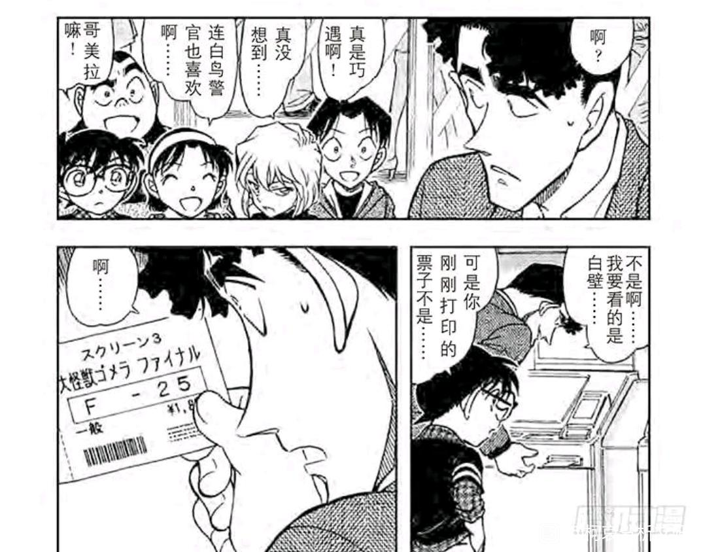
2024-06-16 23:01 | 贴吧用户_7bZ4Ey4:明明叫白壁却是黑色象棋这一点挺别扭的2024-06-17 01:02 | 🌐之徙:回复 贴吧用户_7bZ4Ey4 :这是上一案的刻画啦，赤壁案是这么对应的2025-07-16 21:07 | aaahjhh活宝:回复 贴吧用户_7bZ4Ey4 :赤壁案中，白壁的对着的是黑椅，案件中运用的就是白棋先行规则，先坐在白色椅子上看赤壁，再坐在黑色椅子上看白壁。 所以白鸟想看的是白壁，那根据上一案对应的就可能暗示是后行
三小只无法清楚认知白鸟和佐藤的关系，但柯哀是清楚的，于是白鸟得到了不少来自柯哀的恋爱经验。
1、高佐已接吻，还是放弃吧。（高佐这个动作和M26极为相似）
2、你的初恋真的是佐藤吗？那个比男人还强的佐藤会做出那么女孩气的事情吗？（对应樱花班，一直不让新一叫爱哭鬼的小兰真的会有那个笑容吗？）
3、说不定会实现大逆转！（这里大逆转不能理解为高木的失败，而应该理解为白鸟自己找到了真爱，这也是一种大逆转，同理，新兰和柯哀自然也是有条件实现大逆转的）
话说柯哀二人一次正经恋爱都没谈过吧，怎么好意思指导白鸟的 而且看起来经验丰富的样子，真就实质小情侣啊。
而且看起来经验丰富的样子，真就实质小情侣啊。
1、高佐已接吻，还是放弃吧。（高佐这个动作和M26极为相似）
2、你的初恋真的是佐藤吗？那个比男人还强的佐藤会做出那么女孩气的事情吗？（对应樱花班，一直不让新一叫爱哭鬼的小兰真的会有那个笑容吗？）
3、说不定会实现大逆转！（这里大逆转不能理解为高木的失败，而应该理解为白鸟自己找到了真爱，这也是一种大逆转，同理，新兰和柯哀自然也是有条件实现大逆转的）
话说柯哀二人一次正经恋爱都没谈过吧，怎么好意思指导白鸟的
而且看起来经验丰富的样子，真就实质小情侣啊。
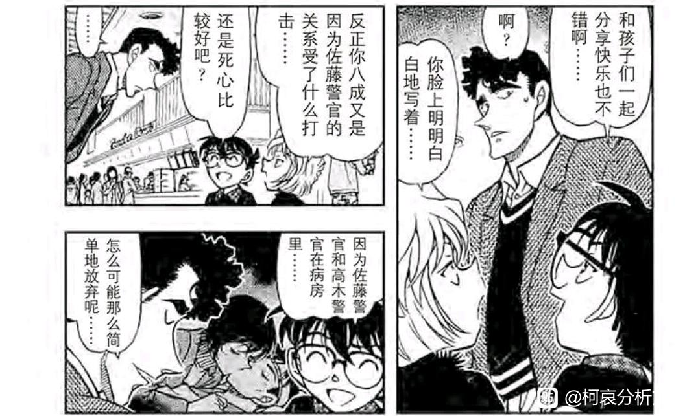
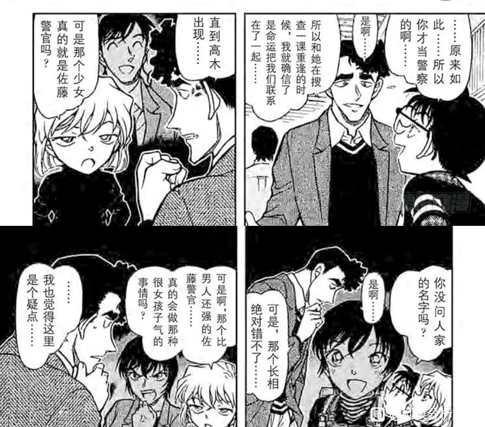
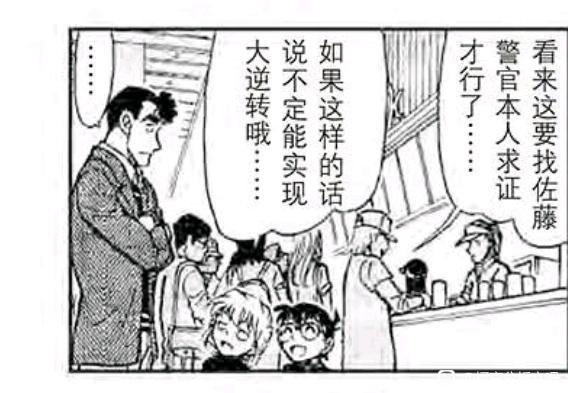
2024-06-16 13:27 | 上総守信長ºº:最好磕的点难道不是柯哀这段夫唱妇随一人一句的默契吗2024-06-16 15:13 | waighty:好可爱的两位2024-06-23 11:24 | 贴吧用户_GQNZA3U:什么实质小情侣2024-06-24 19:09 | 久作天地客:，不是老夫老妻？
回复 上総守信長ºº :没错没错！最喜欢这种互相能接上话的桥段了2024-08-20 14:19 | long126zhen:这里提出关键疑点的全都是小哀，说不定是经验之谈哦2026-05-24 07:59 | 贴吧用户_GaX1DXN:3
众人又去看了电影，博士买的票，经典步-柯-哀座位编号，只能说博士也干了。有一说一这两真的不是在约会吗，一边陪孩子们看电影一边聊自己感兴趣的事情，还锐评哥美拉拖太久了（暗指名柯太久了，准备剧情加速）
然后就有了经典复刻，小哀和步美抓住了柯南的左右手我觉得这里小哀是故意的，后文虽然说有地震，但是那是步美抓住柯南的理由，可不是小哀的理由，我们可以发现小哀抓柯南时地震还没发生，只有哥美拉CG比较可怕，而且紧急事态252也是地震，当时小哀抓柯南的样子就是故意的，可见小哀根本不怕地震，这就和之前电影院装睡是一样的，是小哀偷偷表露自己心意的一种方式。
很难想象红黑篇小哀能做出这种事，但是死罗神后小哀就做得出来，她对小兰的滤镜确实下降了不少，伦敦之后就抱得更紧了。
然后就有了经典复刻，小哀和步美抓住了柯南的左右手
我觉得这里小哀是故意的，后文虽然说有地震，但是那是步美抓住柯南的理由，可不是小哀的理由，我们可以发现小哀抓柯南时地震还没发生，只有哥美拉CG比较可怕，而且紧急事态252也是地震，当时小哀抓柯南的样子就是故意的，可见小哀根本不怕地震，这就和之前电影院装睡是一样的，是小哀偷偷表露自己心意的一种方式。很难想象红黑篇小哀能做出这种事，但是死罗神后小哀就做得出来，她对小兰的滤镜确实下降了不少，伦敦之后就抱得更紧了
。
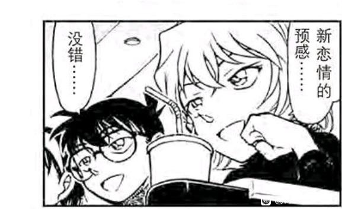
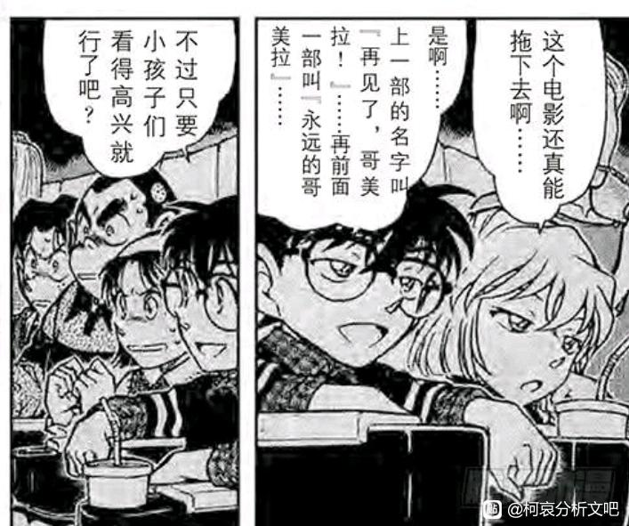
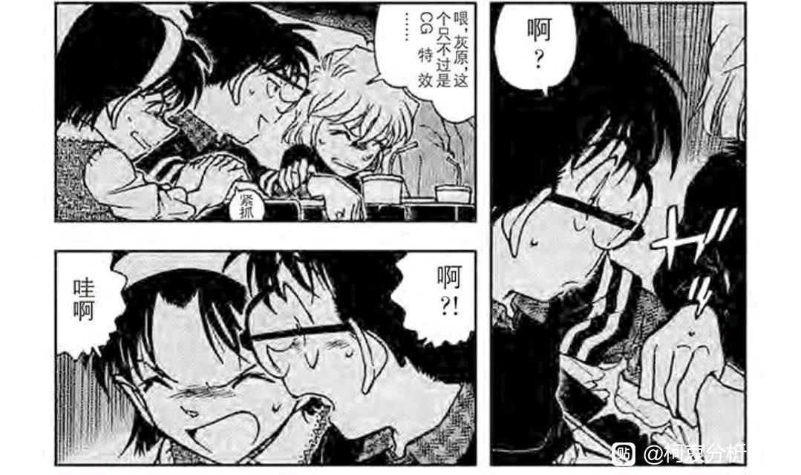
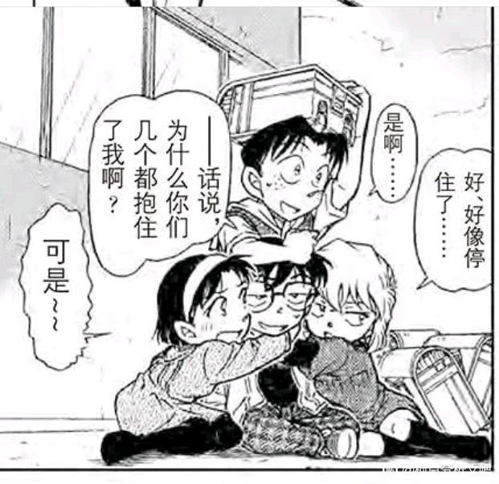
2024-06-16 17:52 | 頔丣萌訣:这个在漫画和动漫的第几集呀！2024-06-17 16:25 | 叮当小丸子🎃:回复 頔丣萌訣 :后面抱着的这幅 动画组删了2024-06-23 10:10 | 君子苓月:紧急252是博士被绑架猫哥来救的那集嘛2024-09-08 12:46 | 胖太21:步美是真怕，哀酱不怕，但是想抱哈哈哈哈哈
电影院【事后】，柯哀出门时直接半月眼互瞪，非常好玩，以下是我的一些脑洞：
小哀这个半月眼明显是有不满意的，本来想的是假装被哥美拉吓到，看看柯南的反应，结果可恶的地震弄得小哀好像真的只是怕地震才抓住柯南的。
柯南呢？小哀说是地震才抓住自己，可是明明地震前就抓了，小哀是什么意思呢？是不小心抓住自己其实是不想抓的吗？想不透呀。
有种东都显像馆问脸上有没有脏东西后的小尴尬，一种奇妙的氛围把柯哀和身边其他人分开了。车也不坐一起，真的很像做了某些事情的【事后】，太怪了。
当然这种氛围没持续多久，柯哀就又贴在一起破案了，沟通效率极高，小哀作弊一样的直接读柯南眼神知道了嫌疑人，还知道了柯南做出判断一定有可靠原因，简单问了两句就完全知晓案情了，这个技能也太夸张啦，如果不是天天偷看柯南恐怕根本不能有如此判断
小哀这个半月眼明显是有不满意的，本来想的是假装被哥美拉吓到，看看柯南的反应，结果可恶的地震弄得小哀好像真的只是怕地震才抓住柯南的。
柯南呢？小哀说是地震才抓住自己，可是明明地震前就抓了，小哀是什么意思呢？是不小心抓住自己其实是不想抓的吗？想不透呀。
有种东都显像馆问脸上有没有脏东西后的小尴尬，一种奇妙的氛围把柯哀和身边其他人分开了。车也不坐一起，真的很像做了某些事情的【事后】，太怪了。
当然这种氛围没持续多久，柯哀就又贴在一起破案了，沟通效率极高，小哀作弊一样的直接读柯南眼神知道了嫌疑人，还知道了柯南做出判断一定有可靠原因，简单问了两句就完全知晓案情了，这个技能也太夸张啦，如果不是天天偷看柯南恐怕根本不能有如此判断
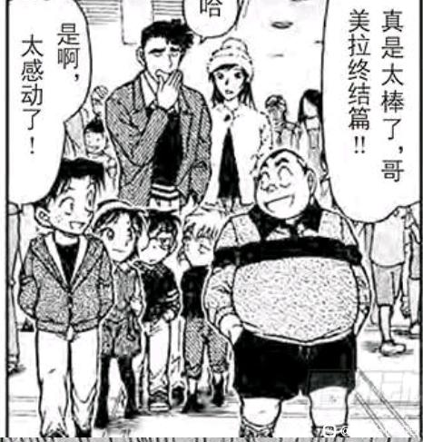
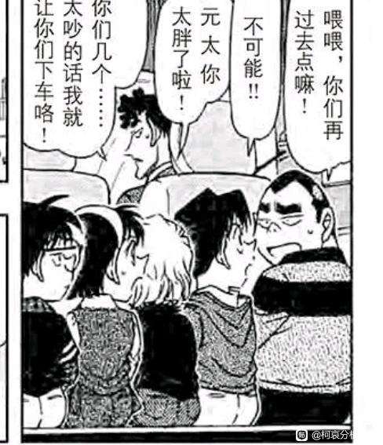
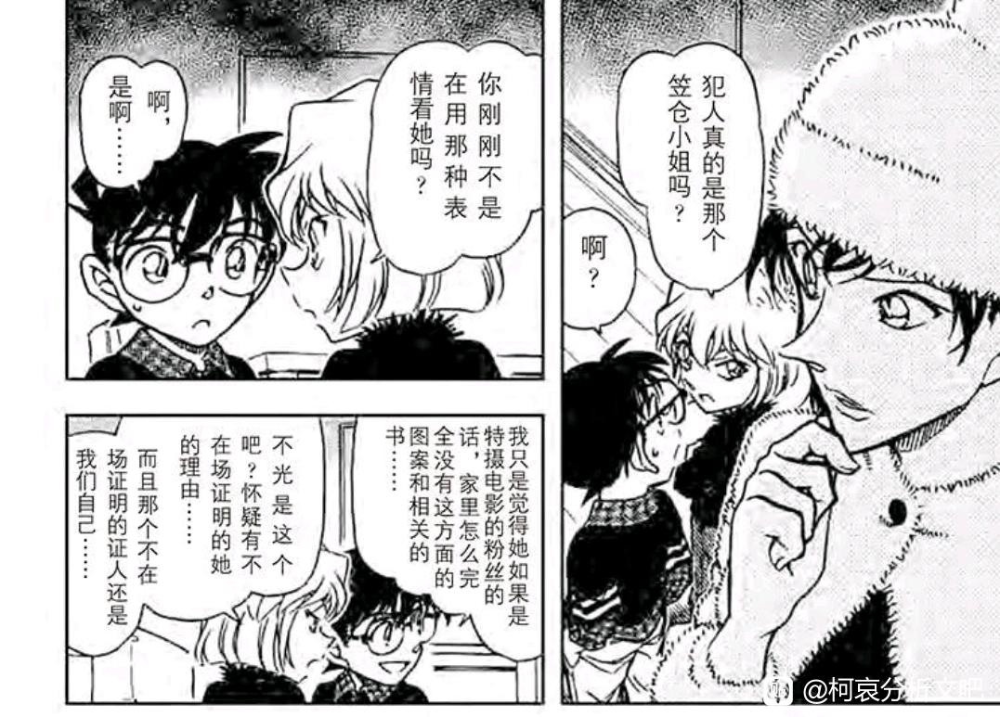
2024-06-16 13:31 | 上総守信長ºº:也许是青山有意模糊，但这哀里看起来更像是对着打呵欠的白鸟半月眼2024-06-17 13:54 | 藏白白▫:回复 上総守信長ºº :我也觉得，灰原头抬太高了，不像是在看江户川。2024-06-17 14:12 | 🌐之徙:回复 藏白白▫ :但问题是白鸟并没有什么可看的2024-06-17 16:20 | 藏白白▫:白鸟打个哈欠也很正常嘛，怎么就半月眼了，我还是觉得在看柯南（青山肯定模糊了一下）
回复 🌐之徙 :我也不知道她为啥半月眼的，只是觉得这个头抬太高，右眼眼位看着都比江户川眼睛高了，总不能灰原眼神给到了江户川头上的苹果把（bushi）2024-06-17 17:22 | 🌐之徙:回复 藏白白▫ :这可能是小哀侧脸的画法本身就看起来眼神偏高，有不少别的场合也是这样2024-06-17 17:31 | 藏白白▫:回复 🌐之徙 :别的眼位画高了导致视线对不上的场景，有指路嘛，我想不起来……2024-06-17 21:02 | 🌐之徙:回复 藏白白▫ :我印象比较深的是红黑篇之后柯南向小哀汇报情况，言语中有轻视琴酒之意，当时小哀就是这个眼神。其他的地方应该也有2024-06-18 00:07 | 藏白白▫:回复 🌐之徙 :……我明天上班摸鱼的时候去翻2024-07-03 17:01 | 米西比姑娘-:小哀这里很明显是抬头半月眼看白鸟，因为小孩子们很兴奋地讨论哥美拉剧情但是白鸟却在打哈欠一副扫兴的样子，所以小哀的表情是无语和揶揄。而且小哀和柯南明显错了一个身位，柯南在前小哀在后，再怎么样小哀和柯南的对视也不太不可能以这种画法表现出来2024-07-03 17:04 | 米西比姑娘-:从画面引导来说这个构图意义也很明显，就是为了让读者把目光从孩子们讨论然后看到柯哀表情，再顺着柯哀表情往上引导到白鸟哈欠上面。之所以要引导到此处，是因为白鸟哈欠是犯人（即旁边此女）犯案手法的重要一环，所以在此要不着痕迹地突出一下2024-07-03 17:06 | 米西比姑娘-:回复 米西比姑娘- :虽然楼主这种缠绵悱恻的解读很有意思，但是这一格的目的应该是侧重于铺垫后面案件的伏笔而不是柯哀互动2024-07-03 18:58 | 🌐之徙:回复 米西比姑娘- :但是白鸟后来很快就说了自己困，并不是小哀说出来的，且眼神为半月眼也实在不太对，白鸟正常约会小哀是比较满意的。2024-07-03 18:59 | 🌐之徙:回复 米西比姑娘- :倒是柯南也一脸扫兴，且柯哀是平行身位（看脚），我仍然认为这里是小哀看柯南比较通2024-07-04 23:20 | 米西比姑娘-:回复 米西比姑娘- :看肩膀柯南明显在小哀前面。另外，就像我前面提到的画面布局和眼神引导，此处柯南的眼睛明显看着的是元太，如果看的是小哀，眼珠该画在右边，至少柯哀二人该形成对视的格局。2024-07-04 23:21 | 米西比姑娘-:元太发言→光步柯三人给反应→小哀注意力在白鸟身上→白鸟在打哈欠。这就是这一幕的含义，也就是引导的效果。白鸟此处非正常约会只是刚好和少侦以及犯人碰到了而已。2024-07-04 23:21 | 米西比姑娘-:半月眼如果实在不能理解可以代入跟朋友家人去看电影，虽然自己不是特别感兴趣，但是看电影途中也津津有味分析起来甚至被特效吓到，结果看完时有个家伙在打哈欠，很明显半途睡着了，给这个人一个撇嘴或者白眼都很正常吧，就像是朋友间的“喂喂，你这家伙”。2024-07-04 23:21 | 米西比姑娘-:再者虽然后面白鸟自己提到了睡着了，这里铺垫一下过渡也显得很自然。另外，我觉得不是所有有柯有哀的画面都必然指向柯哀或者有柯哀的分析。2024-07-04 23:35 | 🌐之徙:回复 米西比姑娘- :都行，说得通就行。不过说柯南在看元太未免夸张了。我是不相信，在小哀猛抓一下柯南之后这两人会转移注意力，这不符合此处的情绪流。2024-07-04 23:37 | 🌐之徙:回复 米西比姑娘- :至于肩膀这个，即使并排走也会有先后关系的，不能用肩膀有先后就判断位置也是先后。2024-07-08 09:59 | zhangruinian12:这个时期的灰原哀明显比柯南更好看，眼线描到有些刻意了
cy
他来了他来了
接着柯哀又给白鸟送来了破案建议，做的事情和大阪3K事件是一样的，白鸟试图骗自己，这时候就需要服部这种人在旁边提醒一下，小哀还更进一步，发现了柜子里的纸花。
似乎“樱雪论”就出自此处，小林老师的花多为樱花而犯人是雪花，但是我总感觉不是很严谨，因为步美也折过雪花，犯人家里的纸花又是樱花，只是和白鸟接触的花确实符合樱雪论，形成了一定错位关系，M27虽然有五角星六角星之说，但好像又不是很重要，还涉及北海道初遇的问题，总之樱雪相比其他一些假说要弱一些，但应该还是比我瞎想到棒网论强一点
似乎“樱雪论”就出自此处，小林老师的花多为樱花而犯人是雪花，但是我总感觉不是很严谨，因为步美也折过雪花，犯人家里的纸花又是樱花，只是和白鸟接触的花确实符合樱雪论，形成了一定错位关系，M27虽然有五角星六角星之说，但好像又不是很重要，还涉及北海道初遇的问题，总之樱雪相比其他一些假说要弱一些，但应该还是比我瞎想到棒网论强一点
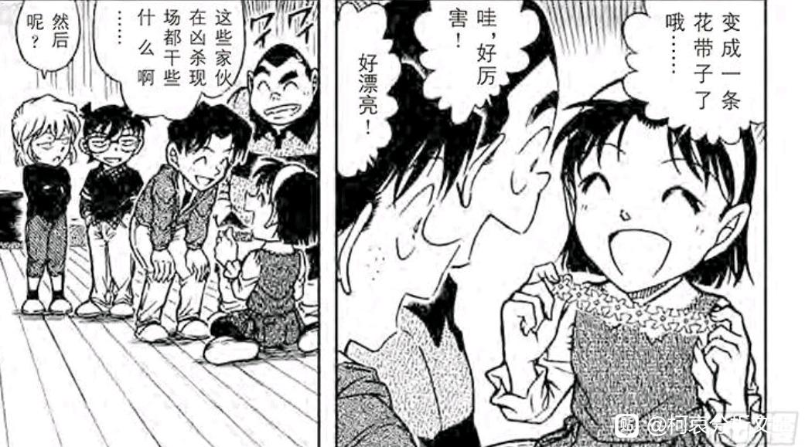
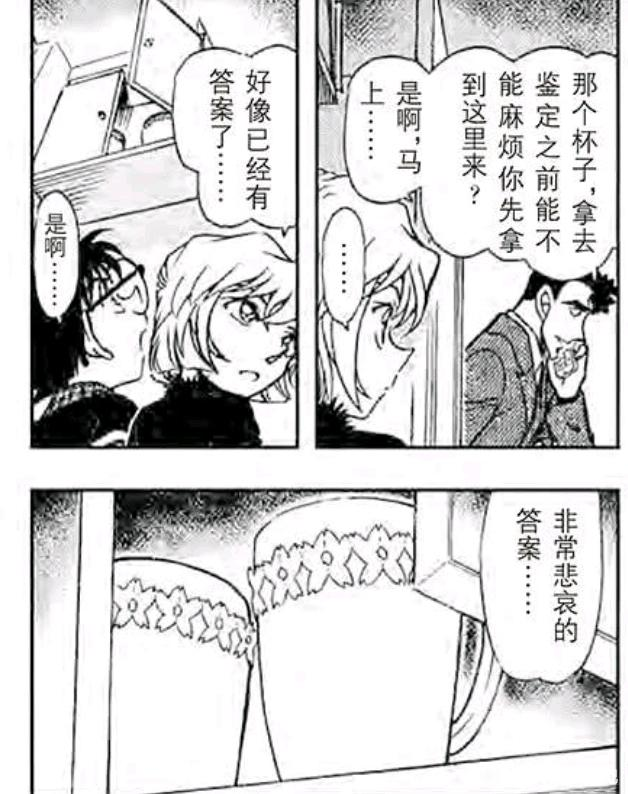
2024-06-16 12:08 | 一叶之秋🌿🍁🍁:小哀这个表情真让人多想
这一对对别人的恋爱还真是冷静聪明，对自己的恋情就挺笨拙。
最后就是犯人这个非常刻意的出局发言了，上来就【天使也有可能变成恶魔】，有人说原文这里不是angel，但是意思应该没错，这就很恶意了，666话刚刚安排【一角岩】出动，弄了个“天使手表”就已经是为Satan小兰论添砖加瓦了，本案又让这个犯人称天使会变成恶魔，认为不会变的人只是一厢情愿（而且没有被否定），最毒妇人心这话价值观是不对的，结果连个反驳的人都没有，仿佛预示着伦敦小兰可怕的人命绑架行为，正是天使变为恶魔的体现。
需要注意的是，白鸟的初恋三选一，“男人一样的佐藤警官”其实就是世良的位置，号称天使变为恶魔的犯人是小兰的位置，小林老师的位置则与小哀对应（小林也将经历一段时间的拒绝时光，这和小哀是一样的），白鸟的三选一和柯南三选一具有极高的对称性，可谓十分巧妙。（此时世良的人设肯定已经设计好了）
需要注意的是，白鸟的初恋三选一，“男人一样的佐藤警官”其实就是世良的位置，号称天使变为恶魔的犯人是小兰的位置，小林老师的位置则与小哀对应（小林也将经历一段时间的拒绝时光，这和小哀是一样的），白鸟的三选一和柯南三选一具有极高的对称性，可谓十分巧妙。（此时世良的人设肯定已经设计好了）
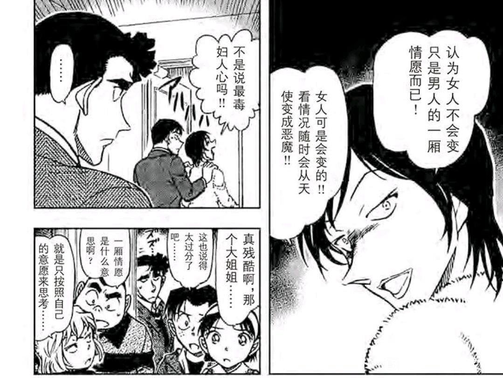
2024-06-16 13:04 | 墨韵丹青丹韵墨:真的唉！左下角那格青山特意安排乌丸元太输出，专门问小哀，由小哀回答，点出兰的行为动机2024-06-16 23:11 | 黑暗刺猬-夏特:回复 成冰的雨点 :甚至凭空捏造……2024-08-03 23:23 | 没字也行:就是只按照自己的意愿来思考（perfect）。小兰多少都有点自欺欺人了，怀疑了又不敢指认
最后柯哀又C位坐一起，此前犯人在车上，后排十分拥挤，而小林在车上就抱着步美（步美看起来就是白林的孩子一样），后排也宽裕了。
这里的构图，白鸟与柯南对应，小林与小哀对应（这和高佐有些不同，高佐一般是佐藤对应柯南，高木对应小哀），盛开的樱花既指代白林，也指代柯哀的发展即将越过猫哥这道导致蓝色火花吵架的坎并迅速发展。
另外，本案案件明显对柯哀进展有帮助，和新兰场案件总是成为阻碍也是完全相反的。
（下一案又是柯哀，这一阶段柯哀的密度比新兰还高，也算是名柯中少见的奇景了。）
这里的构图，白鸟与柯南对应，小林与小哀对应（这和高佐有些不同，高佐一般是佐藤对应柯南，高木对应小哀），盛开的樱花既指代白林，也指代柯哀的发展即将越过猫哥这道导致蓝色火花吵架的坎并迅速发展。
另外，本案案件明显对柯哀进展有帮助，和新兰场案件总是成为阻碍也是完全相反的。
（下一案又是柯哀，这一阶段柯哀的密度比新兰还高，也算是名柯中少见的奇景了。）
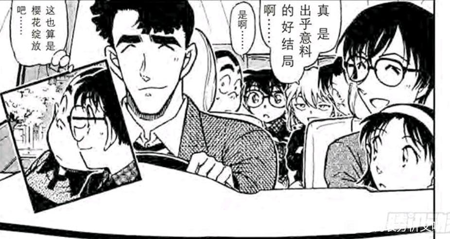
2024-08-04 00:14 | 没字也行:小柯的表情也是，出乎意料的。2024-09-01 23:58 | 牡丹不愿探险5:名柯老超载，警察的车也超
高效率的楼主，我来报道了
赶上直播了 搞快点
来了来了
黄牌老东西gkd，急死了
急急急，快马加鞭
楼主有大毅力呀，一天不落更了半年多
放个屁股 继续蹲直播
书无店砸，懂
点赞+催更
急急急
催更
gkd
因为柯南身边已经有一个让自己感觉自在的灰原就对小兰的“旁敲侧击”感到迟钝了，就是听过这样一个故事男方问女方如今有两个人一个对你冷淡一个对你热情，这两个人你都挺中意的非要让你选一个你会选谁，女方说当然是选热情的我又不痴傻干嘛选一个冷淡的惹自己不痛快，我觉得柯南现在就有这种感觉，小兰就算再无辜她也挺累赘的，新一又不是傻子干嘛要一个累赘
2024-06-17 00:03 | 顽皮鬼才:热情的累赘和老夫老妻，自己选

我来了，蹲蹲蹲蹲
cy
二、妖怪仓库：服部少侦特殊关系
话说自从白鸟归林，米花附近的治安环境似乎直线下降 虽然在米花谈治安听起来很地狱，但是治安真的下降了，表现出来就是小偷小摸，当街抢劫之流明显增加，不知道是不是白鸟擅离职守导致的
虽然在米花谈治安听起来很地狱，但是治安真的下降了，表现出来就是小偷小摸，当街抢劫之流明显增加，不知道是不是白鸟擅离职守导致的
总之白鸟天天来帝丹小学，受到了孩子们的吐槽，但我看柯南有事没事去博士家，这也和白鸟是一类人嘛。
接下来小哀又锐评白林关系，有意思的地方就在这里，小哀这里的台词竟然可以有两种以上完全说的通的解释，比方说可以认为小哀在吐槽新兰，然而死罗神新一其实是有半变相的安慰，也不能说是把女方耍的团团转吧？现在更多人认为小哀是在说自己，明明确实喜欢柯南却决不能说，把柯南耍的团团转。
其实还有一种解释，小哀说的是柯南本人，觉得是自己被柯南耍的团团转，又不知道柯南是不是真的喜欢她，这一解释比前述解释要更积极主动一些，而且也是说的通的（毕竟整个猫哥事件，小哀都一直被“欺负”），并且后文也是意味深长，什么“小林老师喜欢很江户川乱步”，这怕不是在说自己喜欢江户川柯南，还有“白鸟可以把故事讲给他听”，言外之意是让柯南别瞒猫哥信息了赶紧说。
柯南完全没读懂，令人生气还“竟然转移话题”，我猜本来柯南想和小哀继续这个暧昧的话题，至少也能继续东都显像馆之事，结果大失败，真被小哀耍的团团转啦。
话说自从白鸟归林，米花附近的治安环境似乎直线下降
虽然在米花谈治安听起来很地狱，但是治安真的下降了，表现出来就是小偷小摸，当街抢劫之流明显增加，不知道是不是白鸟擅离职守导致的总之白鸟天天来帝丹小学，受到了孩子们的吐槽，但我看柯南有事没事去博士家，这也和白鸟是一类人嘛。
接下来小哀又锐评白林关系，有意思的地方就在这里，小哀这里的台词竟然可以有两种以上完全说的通的解释，比方说可以认为小哀在吐槽新兰，然而死罗神新一其实是有半变相的安慰，也不能说是把女方耍的团团转吧？现在更多人认为小哀是在说自己，明明确实喜欢柯南却决不能说，把柯南耍的团团转。
其实还有一种解释，小哀说的是柯南本人，觉得是自己被柯南耍的团团转，又不知道柯南是不是真的喜欢她，这一解释比前述解释要更积极主动一些，而且也是说的通的（毕竟整个猫哥事件，小哀都一直被“欺负”），并且后文也是意味深长，什么“小林老师喜欢很江户川乱步”，这怕不是在说自己喜欢江户川柯南，还有“白鸟可以把故事讲给他听”，言外之意是让柯南别瞒猫哥信息了赶紧说。
柯南完全没读懂，令人生气
还“竟然转移话题”，我猜本来柯南想和小哀继续这个暧昧的话题，至少也能继续东都显像馆之事，结果大失败，真被小哀耍的团团转啦。
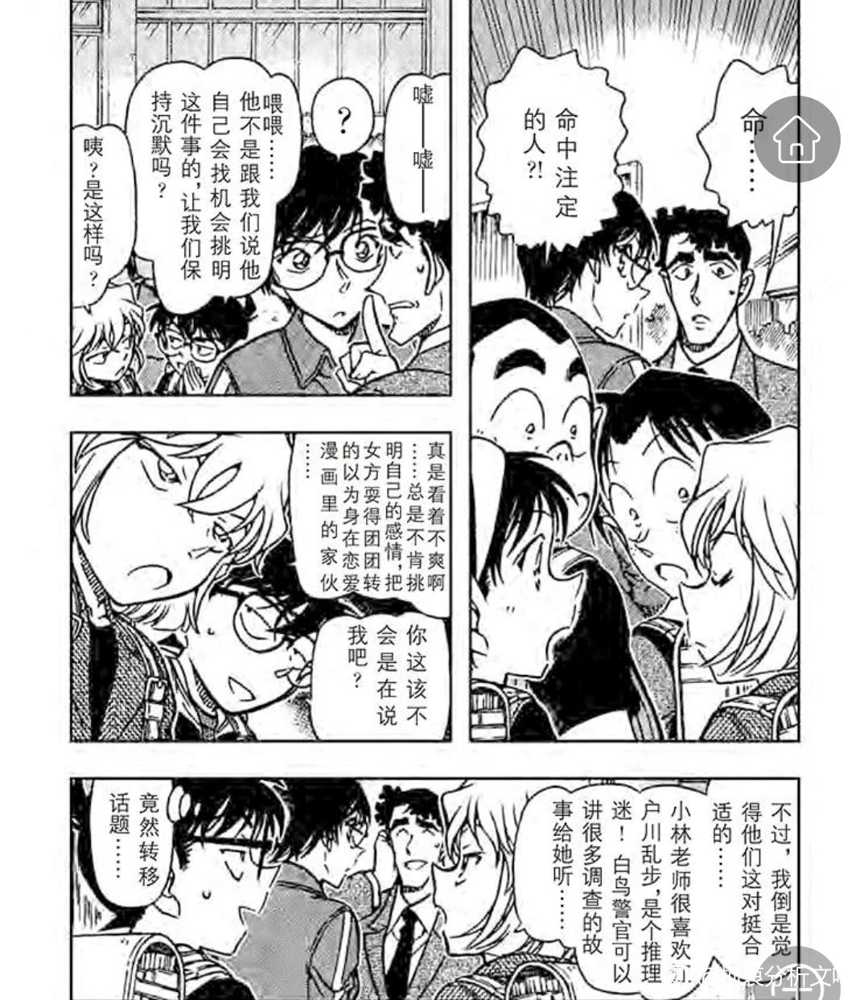
2024-06-17 10:15 | 上総守信長ºº:还真是，特意去看了原文，怪人二百面相那回柯南心里吐槽的是「乱歩マニア」，这也是最自然的说法，但这里吐槽的哀刻意点出全名，说的是「江戸川乱歩マニア」，这样其实在日语的习惯上来说是不自然的，很难说不是在用江户川这个姓氏暗示别的意思2024-06-17 14:08 | 藏白白▫:其实我觉得非要说这是老贼在借灰原之口吐槽自己还没挑明大侦探的感情，把灰原和毛利兰以及读者们耍得团团转，也不是不可以。（反正我很想吐槽他这一点，虽然知道柯哀感情线不可能不跟着主线走）2024-06-17 14:13 | 🌐之徙:回复 藏白白▫ :确实，客观上不能完结，主观上青山应该也准备追求一些文学价值。2024-06-17 16:21 | 藏白白▫:回复 🌐之徙 :他最好多多追求文学价值，那么多坑等着他填呢
由于事件发生在米花町五丁目，少侦来到事务所放书包，我的第一反应是小哀对事务所特别熟悉，门怎么开厕所在哪完全知道，可能有人会说危命时小哀已经住进去了，但那也只是一个晚上，小哀应该还有别的时候去事务所，例如赤壁案前就去了一次。
这里小哀心情不是很好一直半月眼，感觉小哀如果被迫要去事务所的话就会有些烦躁，从危命到大后期比护洋子案都是这样，尤其柯南居然要给“小兰姐姐”留字条，这种小情绪被作者以各种微表情展示了出来。
小哀这里提及希望三小只“战胜柯南”，注意这里不是像小兰那种甜甜圈玩法，而是真心希望三小只能够独立破案，【不能老是依靠别人】，与这种心态相似的不是小兰，而是有希子，有希子也多次希望柯南战胜优作，属于经典的妈妈风格，还真就柯爸哀妈了。
这里小哀心情不是很好
一直半月眼，感觉小哀如果被迫要去事务所的话就会有些烦躁，从危命到大后期比护洋子案都是这样，尤其柯南居然要给“小兰姐姐”留字条，这种小情绪被作者以各种微表情展示了出来。小哀这里提及希望三小只“战胜柯南”，注意这里不是像小兰那种甜甜圈玩法，而是真心希望三小只能够独立破案，【不能老是依靠别人】，与这种心态相似的不是小兰，而是有希子，有希子也多次希望柯南战胜优作，属于经典的妈妈风格，还真就柯爸哀妈了。
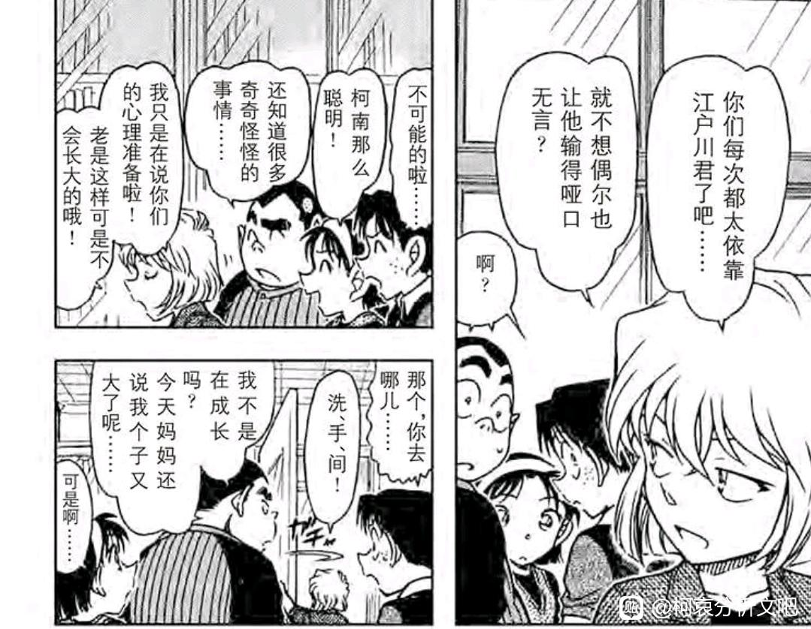
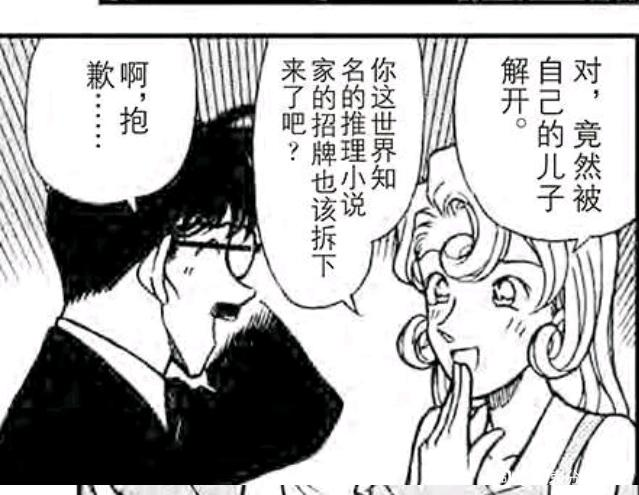
2024-09-08 12:54 | 胖太21:大小艾琳，真好磕
但是小哀又不是侦探，要怎么帮助三小只“战胜”柯南呢？于是代打服部上线，和三小只突然绕过毛利家建立了联系。（也算一种平为哀影了）
（服部偷着乐吧，少侦可是标准红娘队伍，想表白成功不靠少侦绝对不行）
柯南一进门，服部紧急躲在桌子下面，藏过了柯哀，话说这还是服部第一次看柯哀日常案件，之前几次危命死罗神都太严肃了，而这次轮到服部一线磕擦了。
柯南进来就开始左顾右盼找小哀，柯哀气氛初露端倪，观众的视角和服部是一样的，接下来我们不妨代入服部视角，看看本案的柯哀是如何非同寻常。
（服部偷着乐吧，少侦可是标准红娘队伍，想表白成功不靠少侦绝对不行
）柯南一进门，服部紧急躲在桌子下面，藏过了柯哀，话说这还是服部第一次看柯哀日常案件，之前几次危命死罗神都太严肃了，而这次轮到服部一线磕擦了。
柯南进来就开始左顾右盼找小哀，柯哀气氛初露端倪，观众的视角和服部是一样的，接下来我们不妨代入服部视角，看看本案的柯哀是如何非同寻常。
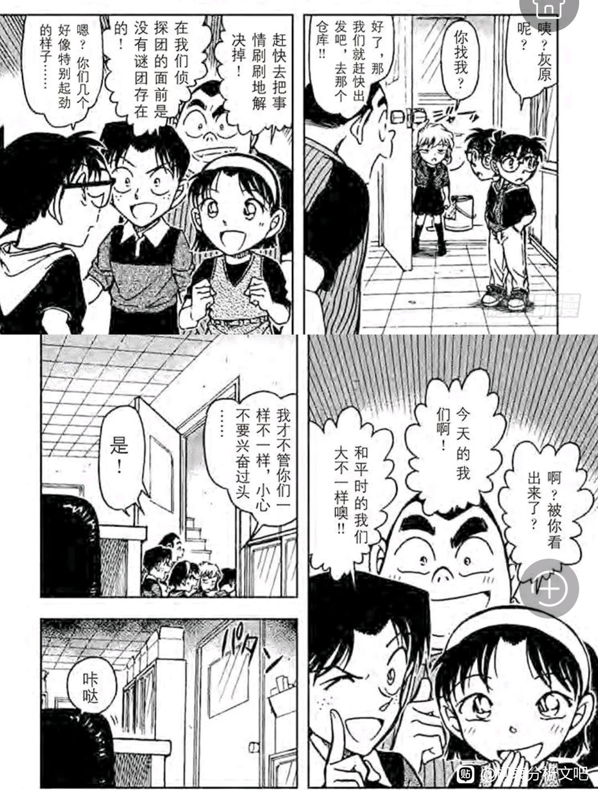
反正是带娃，又没有命案，柯哀这一案简直放飞自我，上来先摔一跤，之后又是爬树又是寻宝，柯哀不断提出各种假说并互相拆台，小哀各种夸少侦弄得柯南摸不着头脑。
我们继续代入服部视角：
我是高中生侦探服部平次，有一天和叶的护身符丢了，我只好来东京找，意外遇到了三个小孩子和博士家的小小姐，身为柯南师傅（大嘘）的我怎么能放过这个机会呢？于是我借助肤色的掩护跟踪了他们，并让雀斑小弟实时传达消息。
哇，工藤怎么被博士家的小小姐吃得这么死啊，原来工藤平时竟然如此吃瘪，哈哈哈（继续观察）不行，机会难得，我要给雀斑小弟支几招，让工藤更愁眉苦脸一点。
话说死罗神的时候工藤说【有好事要告诉我】，该不会指的是在厕所那里看到了小小姐吧？这两人不会真的有什么事情吧？可恶的工藤竟然让小小姐为他那么担心，真是不负责任啊～
（服部对小兰存在坏印象，什么鸟取蜘蛛死罗神小兰都很抽象，他转柯哀是毫无压力的）
我们继续代入服部视角：
我是高中生侦探服部平次，有一天和叶的护身符丢了，我只好来东京找，意外遇到了三个小孩子和博士家的小小姐，身为柯南师傅（大嘘）的我怎么能放过这个机会呢？于是我借助肤色的掩护跟踪了他们，并让雀斑小弟实时传达消息。
哇，工藤怎么被博士家的小小姐吃得这么死啊，原来工藤平时竟然如此吃瘪，哈哈哈（继续观察）不行，机会难得，我要给雀斑小弟支几招，让工藤更愁眉苦脸一点。
话说死罗神的时候工藤说【有好事要告诉我】，该不会指的是在厕所那里看到了小小姐吧？这两人不会真的有什么事情吧？可恶的工藤竟然让小小姐为他那么担心，真是不负责任啊～
（服部对小兰存在坏印象，什么鸟取蜘蛛死罗神小兰都很抽象，他转柯哀是毫无压力的）
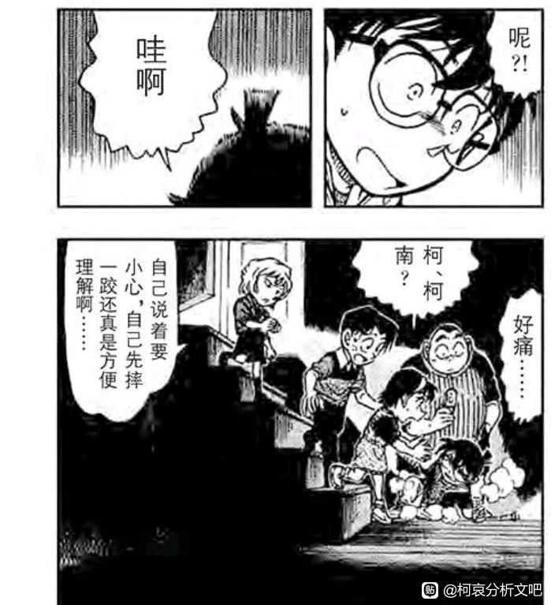
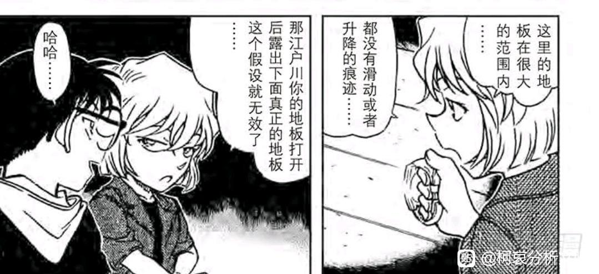
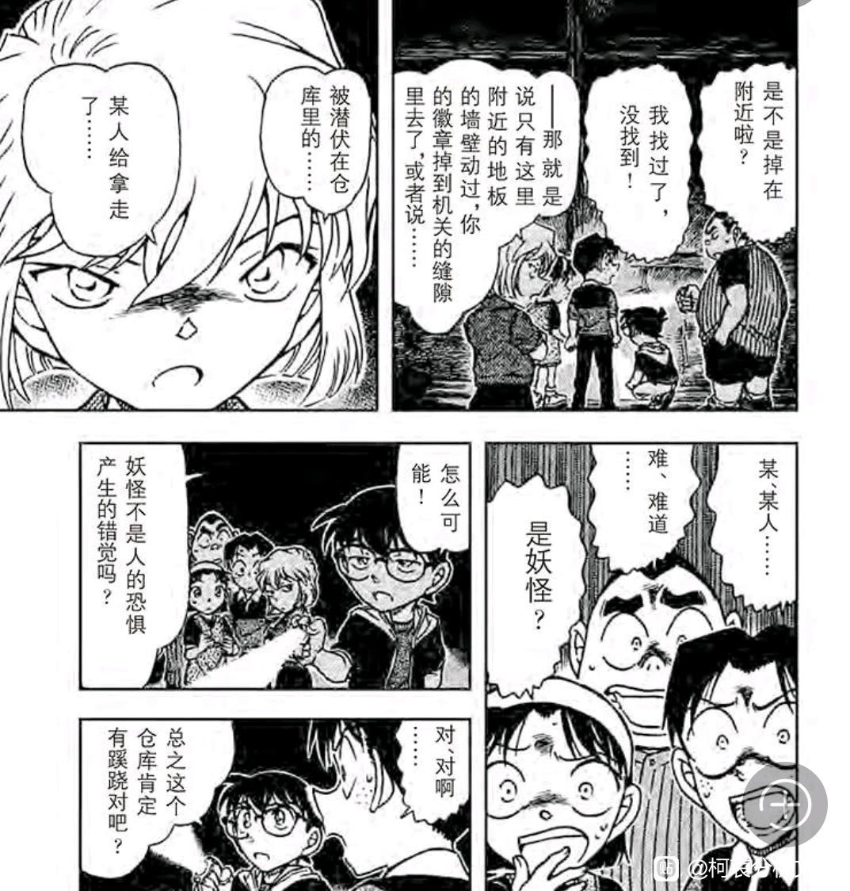
2024-06-17 10:18 | 上総守信長ºº:「ちっさい姉ちゃん」好像台译是‘小大姐’2024-06-17 10:42 | 🌐之徙:回复 上総守信長ºº :感觉小小姐形神具备，我比较喜欢这个翻译（我记得还有大小小姐的奇怪翻译）2024-06-17 11:36 | 上総守信長ºº:回复 🌐之徙 :大小小姐是什么鬼啊2024-06-18 16:08 | 贴吧用户_G7QD9XD:神tm借助肤色，我这构思的笑点2024-06-19 00:49 | 贴吧用户_aG836Ky:服部转柯哀是毫无压力，但服部不是新唯吗？2024-06-19 09:27 | 季节更替spring:我喜欢服部说“小姐姐”意思是变小的姐姐，而基德说“小小姐”意思是变小的小姐。2025-11-11 12:15 | susu我只爱自己:回复 贴吧用户_aG836Ky :巧了吗那不是，哀也是新唯啊大家不一样的嘛2026-01-16 00:10 | 阿瑟姆奶茶🌸:回复 贴吧用户_aG836Ky :平为哀影哀和服部就是新唯，但是目前剧情里实际是柯唯，柯南一定程度对变大没有原来的执念了

cy
柯南推理打不过少侦，嘴皮子磨不过小哀，直接红温了准备把少侦的场外ban掉，上来先怀疑小林，次则博士，第三个怀疑秀一，最后想到了服部。
这里柯南怀疑不同人的表情也特别有意思：
怀疑小林：
怀疑博士：
怀疑秀一；
怀疑服部：
其中怀疑秀一这个最夸张，秀一当时被博士叫去做饭，博士做饭水平有限，秀一虽然也不怎么样但好歹比博士好，反正小哀不在家，混个脸熟线，结果柯南防得跟什么似的，还要确认【秀一确实在煮洋葱没法接电话】
虽然服部视角知道小哀和孩子们并未通信息，但是柯南应该不这么想，觉得小哀就是和孩子们欺负他，要是秀一还在背后，太可怕了，柯南各种不接受。
欸服部就无所谓，柯南又觉得自己行了，我感觉柯南根本就没搞清楚自己应该对秀一呈现什么态度，就是随着本能防备秀哀见面而已。
这里柯南怀疑不同人的表情也特别有意思：
怀疑小林：
怀疑博士：
怀疑秀一；
怀疑服部：
其中怀疑秀一这个最夸张，秀一当时被博士叫去做饭，博士做饭水平有限，秀一虽然也不怎么样但好歹比博士好，反正小哀不在家，混个脸熟线，结果柯南防得跟什么似的，还要确认【秀一确实在煮洋葱没法接电话】
虽然服部视角知道小哀和孩子们并未通信息，但是柯南应该不这么想，觉得小哀就是和孩子们欺负他，要是秀一还在背后，太可怕了，柯南各种不接受。
欸服部就无所谓，柯南又觉得自己行了，我感觉柯南根本就没搞清楚自己应该对秀一呈现什么态度，就是随着本能防备秀哀见面而已。
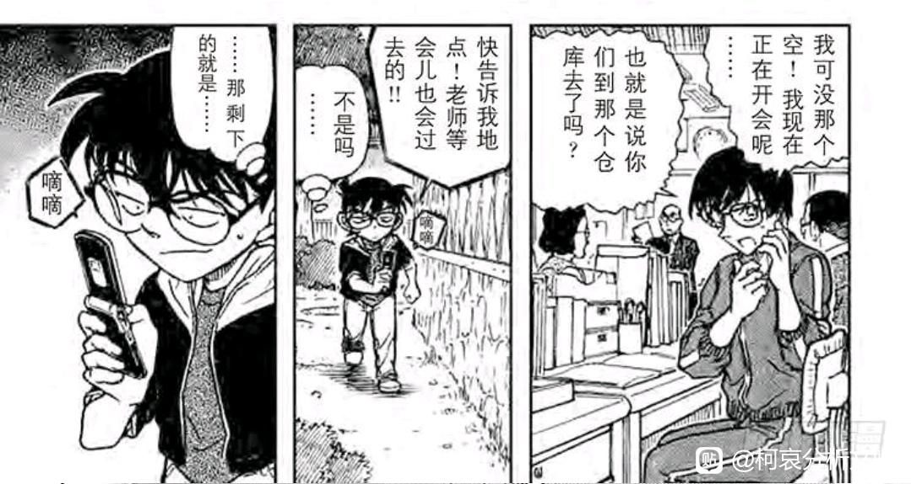
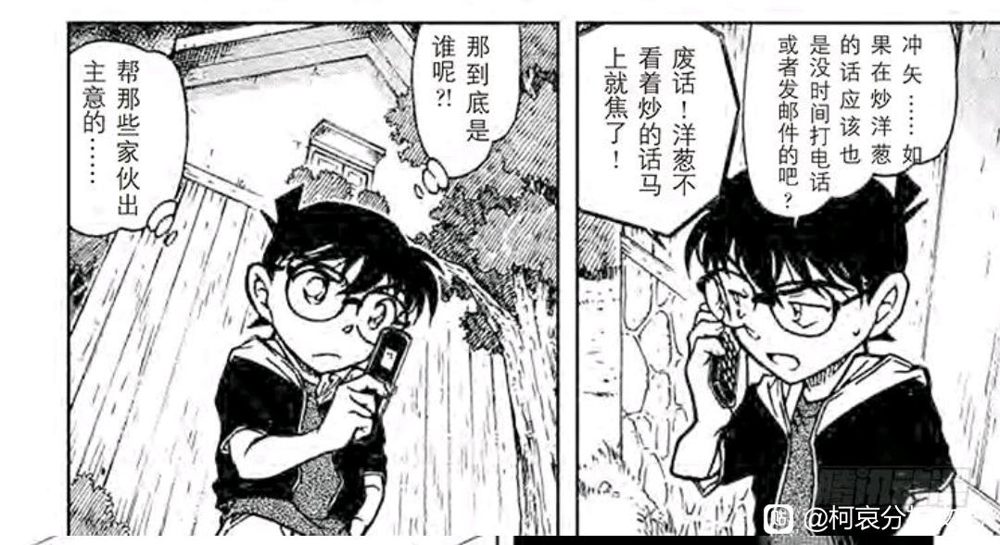
2024-06-17 10:23 | 上総守信長ºº:应该是听光彦不小心爆了关西腔才知道是服部的，这里只是单纯疑惑。知道以后的表情是淡淡一笑
最后真相大白，服部好幼稚啊这拍照手法是真的好玩。
总之这里小哀又继续强调，让三小只【不能老是依赖别人】，这句话在名柯多次出现，几乎算是主旨的一部分，而兰哀在这一问题上的解答完全相反。
三小只：可惜还是没看到柯南服输的样子…
小哀：（其实我看过哟！）
服部：（完了，我也没看过，必须找机会看了）
或许后面服部搞什么告白超越，就是来自本案，服部的动机和七岁小孩差不多不过水下华尔兹之后服部应该彻底没戏了。显然在对抗柯南的比赛中小哀取得完胜，远胜服部三小只等人。
这拍照手法是真的好玩。总之这里小哀又继续强调，让三小只【不能老是依赖别人】，这句话在名柯多次出现，几乎算是主旨的一部分，而兰哀在这一问题上的解答完全相反。
三小只：可惜还是没看到柯南服输的样子…
小哀：（其实我看过哟！）
服部：（完了，我也没看过，必须找机会看了）
或许后面服部搞什么告白超越，就是来自本案，服部的动机和七岁小孩差不多
不过水下华尔兹之后服部应该彻底没戏了。显然在对抗柯南的比赛中小哀取得完胜，远胜服部三小只等人。
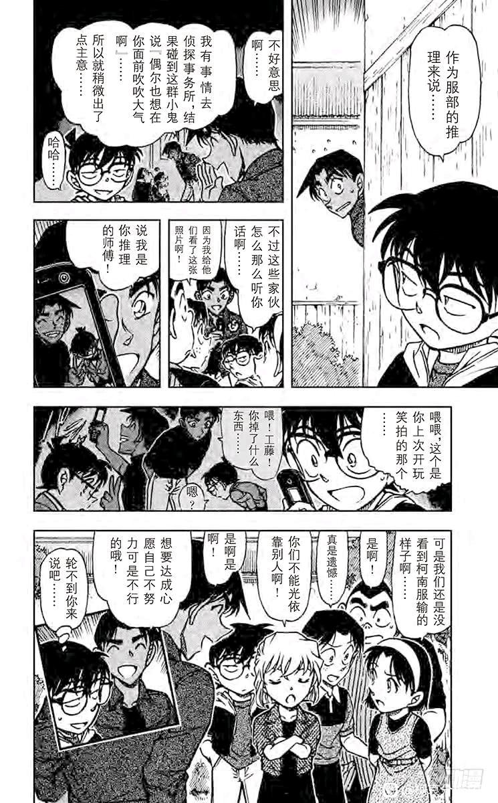
2024-06-21 08:46 | wsgda1:笑死我了2024-07-18 19:02 | wwsabe:严厉的爸妈和邻居家溺爱孩子的叔叔2026-03-28 23:48 | 贴吧用户_JQ3K9yU:这里之徙说的小哀看过柯南服输的样子是什么时候呀？是说神社鸟居的暗号吗？还是说m24时的“失超”知识点，一下子没get到
对35楼稍作补充
上面楼主已经说到怀疑小林老师、博士以及猫哥时的态度
这里再详细说下最后发现其实是服部时的表情和接下来的行为
第一反应：露出一个轻松的微笑。
要知道小柯这把被拥有外援的三小只和惯于拆台的哀妈全程压制，甚至自己叫来阿晶准备开始解谜的时候还在继续被三小只抢风头，这时确信三小只一定有外援的小柯选择了一脸假笑地一边鼓掌一边持续催问，就等光彦露马脚，几乎算是死撑着没破防的状态。
这种状态下的小柯，在发现外援原来是黑鸡之后，竟旋即露出一个如此轻松、释怀的微笑，与前文对待小林老师、博士以及猫哥时的态度形成了鲜明的对比。这个微笑里都有些什么呢？ 知道真相之后的满足感？ 对损友整蛊作怪的无奈和放任？ 马上要和好兄弟见面的开心？ 我觉得都可以从这个表情里读出来。如果再代入平为哀影的观点，更是意味深长。
类似的诸如下图满月后突然听到哀一句拜拜时的小柯等等，青山这种不加任何台词，单独一格给出一个表情的表现手法，读来实在令人回味无穷。
之后的行为：特意交代三小只和哀妈都退到安全的位置。实际上，让窗口的元太缩回头去防止被机关误伤还能理解，让另外几人也退出去“躲在阿晶后面”就大可不必了，由后文可知小柯知道犯人只有一个人，并无多大危险，因此我感觉这里更像是一种暗戳戳的报复——给你们压了我一整局，现在终于轮到我装逼了罢，统统给我出去，我新一今天就要独自美丽。
再然后：像在水格子一样不紧不慢地开始讲解算盘机关。表面上是讲给阿晶听的，实际上呢？ 由后文可知哀就站在门口观战，非但能看到还能听到，甚至还跟小柯隔空唱和了一下。
谁说我柯没有胜负欲？只不过没有黑鸡那么外露罢了。
上面楼主已经说到怀疑小林老师、博士以及猫哥时的态度
这里再详细说下最后发现其实是服部时的表情和接下来的行为
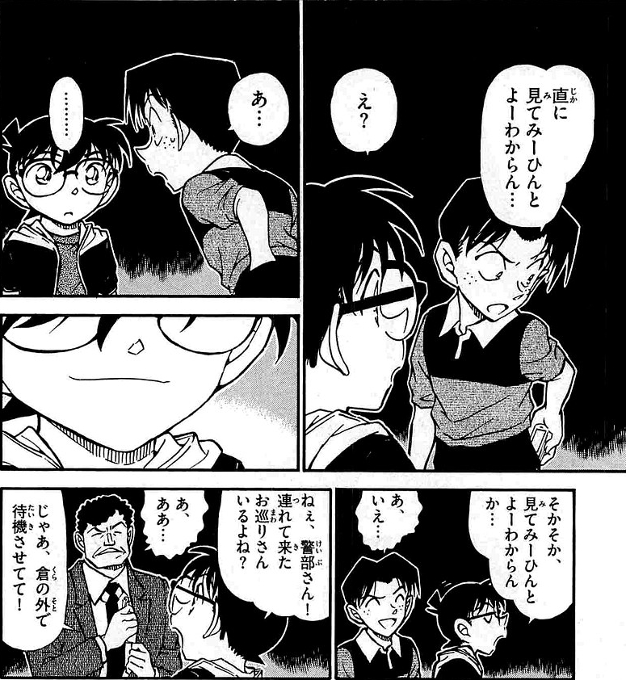
要知道小柯这把被拥有外援的三小只和惯于拆台的哀妈全程压制，甚至自己叫来阿晶准备开始解谜的时候还在继续被三小只抢风头，这时确信三小只一定有外援的小柯选择了一脸假笑地一边鼓掌一边持续催问，就等光彦露马脚，几乎算是死撑着没破防的状态。
这种状态下的小柯，在发现外援原来是黑鸡之后，竟旋即露出一个如此轻松、释怀的微笑，与前文对待小林老师、博士以及猫哥时的态度形成了鲜明的对比。这个微笑里都有些什么呢？ 知道真相之后的满足感？ 对损友整蛊作怪的无奈和放任？ 马上要和好兄弟见面的开心？ 我觉得都可以从这个表情里读出来。如果再代入平为哀影的观点，更是意味深长。
类似的诸如下图满月后突然听到哀一句拜拜时的小柯等等，青山这种不加任何台词，单独一格给出一个表情的表现手法，读来实在令人回味无穷。
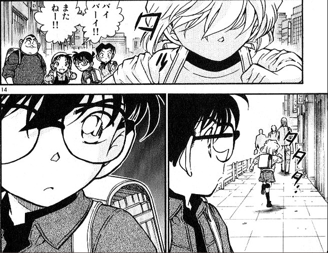
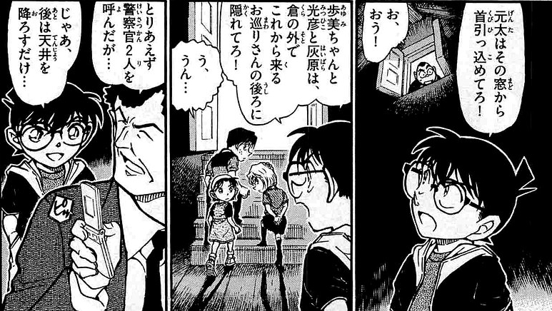
再然后：像在水格子一样不紧不慢地开始讲解算盘机关。表面上是讲给阿晶听的，实际上呢？ 由后文可知哀就站在门口观战，非但能看到还能听到，甚至还跟小柯隔空唱和了一下。
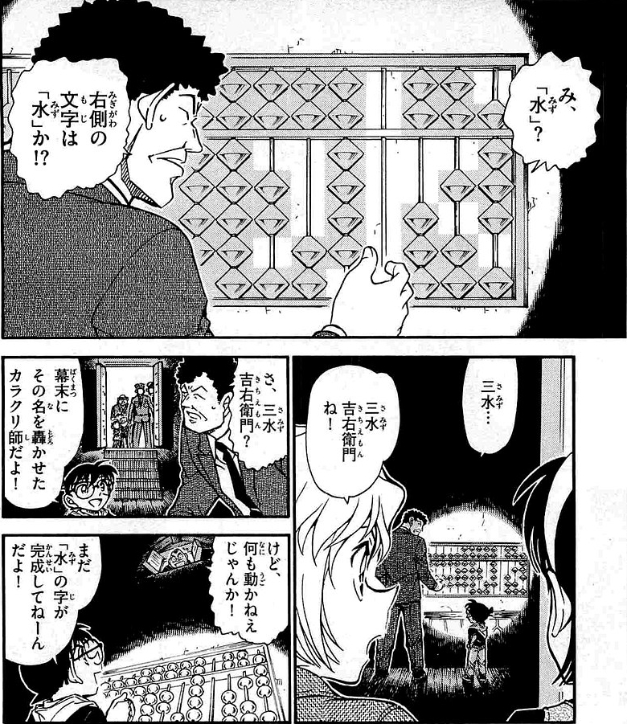
2024-06-17 13:11 | 🌐之徙:2024-06-18 09:54 | 上総守信長ºº:回复 🌐之徙 :催更！2025-03-11 14:57 | ♬卿色:笑死我了。“我新一今天就要独自美丽”2026-01-16 11:00 | 萌小喵来也:我感觉，这个笑是“果然”的意思，他知道背后有人，排除其他人后，能猜到的也就是黑鸡
码住
已收藏
催更
三：和叶护身符案：棒网论，恋爱脑，宣示主权与疑窦丛生
小时间线第200天的和叶护身符案，可能是平和恋爱喜剧中最重要的一章，本案信息量极大，涉及大量新兰平和的对比细节，将二者的不同展示得淋漓尽致，而我愿意将二者的不同体现为小标题的四个关键词；
【棒网论】棒球与网球的外形相似和本质不同。
【恋爱脑】和叶偶尔的恋爱脑与小兰长期恋爱脑的不同。
【宣示主权】服部宣誓主权的行为对柯南之启示。
【疑窦丛生】小兰将自己的怀疑扼杀在摇篮之中。
在正文开始前，我们先来看本案的重要人物【国末照明】，是大学二年级（高麻美一届，高新一三届），老家与和叶是邻居，应该说国末与和叶也算是青梅竹马，喜欢和叶。
这个人明显是给服部上强度的，起的作用大概和新出于新兰，秀一于柯哀差不多，典型的引出服部的占有欲，而M27之后此人又有了新的含义，这明显就是福城圣的原型，长的也很像，人设更是抄袭，但是呢，【青山并未安排和叶进行任何代餐剧情】，甚至有些洁癖地让和叶和国末毫无互动。
这下就看出新兰平和塑造的巨大差异了，和叶不吃代餐，但服部占有欲拉满，小兰吃代餐，而柯南波动甚少，整个案件的基调大抵如此。
小时间线第200天的和叶护身符案，可能是平和恋爱喜剧中最重要的一章，本案信息量极大，涉及大量新兰平和的对比细节，将二者的不同展示得淋漓尽致，而我愿意将二者的不同体现为小标题的四个关键词；
【棒网论】棒球与网球的外形相似和本质不同。
【恋爱脑】和叶偶尔的恋爱脑与小兰长期恋爱脑的不同。
【宣示主权】服部宣誓主权的行为对柯南之启示。
【疑窦丛生】小兰将自己的怀疑扼杀在摇篮之中。
在正文开始前，我们先来看本案的重要人物【国末照明】，是大学二年级（高麻美一届，高新一三届），老家与和叶是邻居，应该说国末与和叶也算是青梅竹马，喜欢和叶。
这个人明显是给服部上强度的，起的作用大概和新出于新兰，秀一于柯哀差不多，典型的引出服部的占有欲，而M27之后此人又有了新的含义，这明显就是福城圣的原型，长的也很像，人设更是抄袭，但是呢，【青山并未安排和叶进行任何代餐剧情】，甚至有些洁癖地让和叶和国末毫无互动。
这下就看出新兰平和塑造的巨大差异了，和叶不吃代餐，但服部占有欲拉满，小兰吃代餐，而柯南波动甚少，整个案件的基调大抵如此。
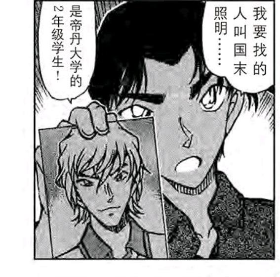
2024-06-18 16:56 | 上総守信長ºº:M27和叶开场就对着阿圣哥脸红，后来还在道场被阿圣哥搭讪，以至于旁边冲田看不下去前来打岔……但再往后会发现和叶根本达不到兰神的境界，从正式开始搜查往后这俩人就再无任何交流，阿圣被逮捕和叶也仅仅是表现出相信他清白。2024-06-18 17:01 | 上総守信長ºº:最后和叶为阿圣翻案的关键线索是听出来刀入鞘的声音不同（疑似回收了M21和叶‘练习歌牌后耳朵变得超好’的设定），然而这条线索却是在阿圣已不在场的情况下透露给黑鸡和柯南二人的，明明在道场的时候和叶就已经听出不同，却似乎是故意一直拖到阿圣被捕才让她出来提供情报。2024-06-18 17:11 | 上総守信長ºº:整体看M27的和叶其实更接近3K案小柯对雷卡提斯的感觉，一开始仰慕，出事后不相信对方犯案而尝试为其翻案。当然，兰神也曾经为前田聪翻案，但和叶可没有跟阿圣两人独处甚至聊骚2024-06-19 00:23 | 贴吧用户_74P11b5:我一直在等这一话，因为这一话兰神又有了怀疑柯南的2个条件2024-07-02 01:31 | 发疯的法师:回复 上総守信長ºº :真TM羡慕能看新剧场版的 大陆还要等

接下来我又要讲棒网论了，这个算是暴论，不过我感觉是存在的，涉及视觉叙诡。
在之前手机篇（折叠时空六）中我提出一个观点，网球🎾指代小兰，棒球⚾️指代小哀，而在手机篇案件【沉默的航线】中，英理想要棒球选手的签名，小兰却拿了网球去签（最后失败了），且在名柯中小兰打过网球而没打过棒球（疑惑的辣味咖喱），小哀打过棒球而没打过网球（颠倒的结局），涉及两种球类【运动】的案件中，棒球为【高佐乐园案】，网球为【辣味咖喱】，棒球恰好在网球前一话（暗示初遇论），而如果无视运动的限制，则小兰曾于【新弗尼号】以网球砸柯南，后来又和安室打网球；与小哀具有同位性质而小五郎与服部均擅长棒球；伦敦篇Miss Glass面临环境极为不利但最终胜利，可以视为小哀在非自己领域的网球与小兰对抗但最终胜利。
而本案，这位喜欢和叶的国末，所擅长的正是网球，而本案国末意外捡到了全垒打的棒球，对应其意外获得了平和护身符，也就是在和叶世界观下，国末为网球，服部为棒球，棒网论以棒球为真爱网球为烟雾弹，二者极为相似很难分辨，但最终还是能分辨出来。
我个人比较自信地认为棒网论能与樱雪论相提并论，樱雪论和棒网论的叙诡形式是一样的（樱雪叙诡还更难，五角和六角的转化目前并未和谐地对应），仅供参考。
在之前手机篇（折叠时空六）中我提出一个观点，网球🎾指代小兰，棒球⚾️指代小哀，而在手机篇案件【沉默的航线】中，英理想要棒球选手的签名，小兰却拿了网球去签（最后失败了），且在名柯中小兰打过网球而没打过棒球（疑惑的辣味咖喱），小哀打过棒球而没打过网球（颠倒的结局），涉及两种球类【运动】的案件中，棒球为【高佐乐园案】，网球为【辣味咖喱】，棒球恰好在网球前一话（暗示初遇论），而如果无视运动的限制，则小兰曾于【新弗尼号】以网球砸柯南，后来又和安室打网球；与小哀具有同位性质而小五郎与服部均擅长棒球；伦敦篇Miss Glass面临环境极为不利但最终胜利，可以视为小哀在非自己领域的网球与小兰对抗但最终胜利。
而本案，这位喜欢和叶的国末，所擅长的正是网球，而本案国末意外捡到了全垒打的棒球，对应其意外获得了平和护身符，也就是在和叶世界观下，国末为网球，服部为棒球，棒网论以棒球为真爱网球为烟雾弹，二者极为相似很难分辨，但最终还是能分辨出来。
我个人比较自信地认为棒网论能与樱雪论相提并论，樱雪论和棒网论的叙诡形式是一样的（樱雪叙诡还更难，五角和六角的转化目前并未和谐地对应），仅供参考。
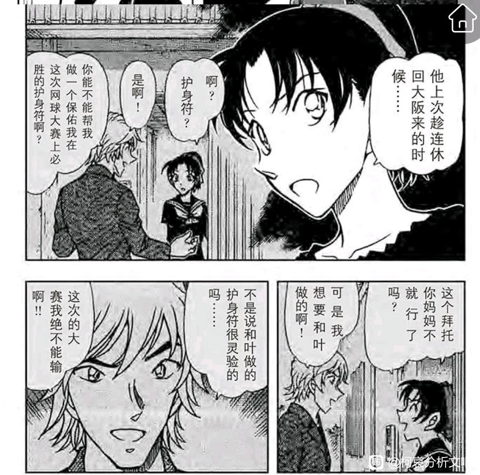
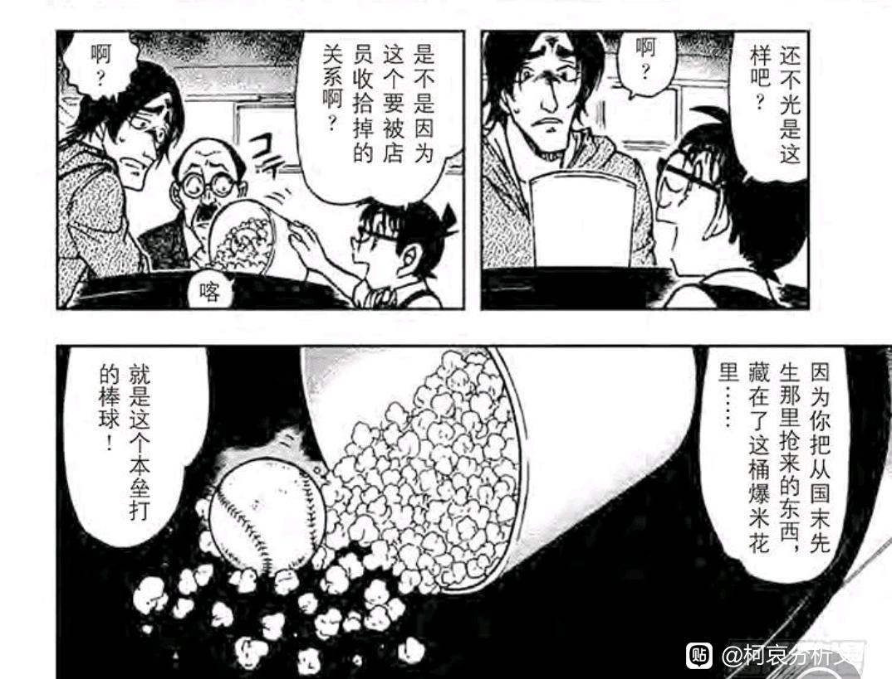
2024-06-18 17:15 | 上総守信長ºº:很喜欢棒网论的提法。青山那种一个三话系列要涂涂改改弄一个月才交稿的神经质漫画家，他故事里类似棒球网球这种经常出现的意象肯定不会随随便便毫无含义
好耶 赶上直播
总之国末拿到了不属于自己的棒球，结果被人打了住院，由于国末手上有平和护身符，平和不得不去把他找到。
这里和叶一开始肯定想着先把护身符追回来，结果小兰就在旁边瞎拱火，这段是真的怪，小兰的台词是这样的：
【真遗憾啊，那么快就找到了（护身符）……】
【你是想和服部在一起，才和服部一起来的……】
这一段就属于非常乱来的揣测，完全没有说中和叶，但小兰说这些话实在太合理了，她自己就惯用这类方法，我们假设新兰有护身符，然后小兰不小心把护身符给别的男生了，她肯定要吊着新一很久才拿回护身符，当面代餐也是常规操作，小兰以己度人，觉得和叶也是这样想的，开始胡言乱语什么“真遗憾”，这就是恋爱脑上头的显著表现。
（和叶真正的目的是自己把护身符拿回来，里面有服部的照片，不想给服部看到，这是非常可爱的理由，不像小兰这么多心眼）
这里和叶一开始肯定想着先把护身符追回来，结果小兰就在旁边瞎拱火，这段是真的怪，小兰的台词是这样的：
【真遗憾啊，那么快就找到了（护身符）……】
【你是想和服部在一起，才和服部一起来的……】
这一段就属于非常乱来的揣测，完全没有说中和叶，但小兰说这些话实在太合理了，她自己就惯用这类方法，我们假设新兰有护身符，然后小兰不小心把护身符给别的男生了，她肯定要吊着新一很久才拿回护身符，当面代餐也是常规操作，小兰以己度人，觉得和叶也是这样想的
，开始胡言乱语什么“真遗憾”，这就是恋爱脑上头的显著表现。（和叶真正的目的是自己把护身符拿回来，里面有服部的照片，不想给服部看到，这是非常可爱的理由，不像小兰这么多心眼）
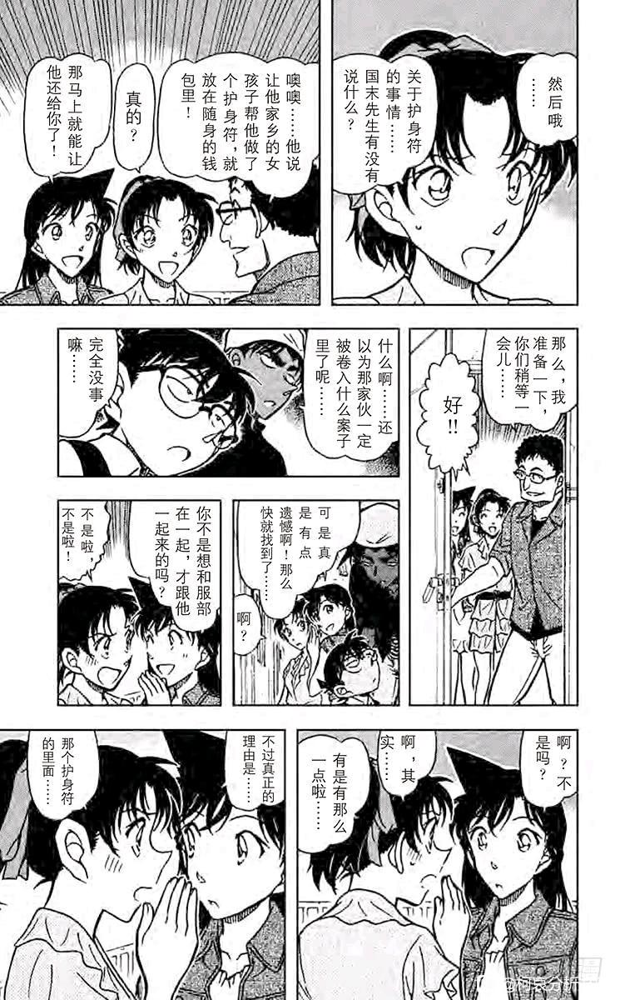
2024-06-18 17:20 | 上総守信長ºº:兰神以己度人不是一两天了。很明显人家平和是真的每天都在一起，上学，放学，约吃饭约逛街，根本犯不着专门“找借口跟服部在一起”。必须另找借口才能跟对方在一起的明明是新兰，新一还没吃药的时候兰约新一逛水族馆就非得扯什么父母团圆大作战，这俩平时相处有多别扭可见一斑。平和比他俩自然得多。2024-08-03 20:26 | -请修改昵称-:同意楼主分析，这里的小兰真的下头。她第一时间想的居然是太遗憾了，这么快就能拿回护身符了，这样就不能多栓平次一会了。2024-08-31 13:05 | 雪者风形:“啊？”2024-09-02 09:12 | 肥宅快乐水乾杯:兰神太夸张了2024-09-08 13:02 | 胖太21:角姐的脑回路一直有一种，和名柯不在一个次元的出戏感2024-09-11 16:47 | Angela忧忧:想起了水族馆里 兰神是为了和新一一起去水族馆，拿爸妈复合当借口。牛逼 人设从未崩塌
那和叶没办法，不得不告诉小兰实情，小兰当场展现她的大嘴巴属性。
在和叶挑明了不希望服部知道的情况下，小兰仍然故意地试图泄密，她自己后来反正也把冲田护身符拆了，对小兰来讲恋爱大于一切，而恋爱过程本身的拉扯竟然毫不重要，如果和叶没有强硬反对，估计小兰真的会乱说。
我十分怀疑小兰对和叶产生了一个暂时的恋爱脑debuff，接下来进入案件，和叶一直希望破案前先把护身符拿回来，被服部认为是胡闹（和叶也承认错误了），因为和叶不是真正的恋爱脑，她在案发现场还是顾全大局的，而且有人批评她，观感非常好。
再看小兰的剧情，上来【那个护身符是和叶的，能不能还她啊】，比和叶本人还积极（和叶只是说不能调查），看似小兰为和叶出头，其实是在高木面前让和叶背这个锅，而且经典没人批评（服部有可能是旁敲侧击地批评了一下，但小兰肯定没听懂），小兰的剧情总是一如既往，不知道刚刚经历少侦场的服部会不会怀念一下少侦场的快乐时光，兰场难度也太高了。
在和叶挑明了不希望服部知道的情况下，小兰仍然故意地试图泄密，她自己后来反正也把冲田护身符拆了，对小兰来讲恋爱大于一切，而恋爱过程本身的拉扯竟然毫不重要，如果和叶没有强硬反对，估计小兰真的会乱说。
我十分怀疑小兰对和叶产生了一个暂时的恋爱脑debuff，接下来进入案件，和叶一直希望破案前先把护身符拿回来，被服部认为是胡闹（和叶也承认错误了），因为和叶不是真正的恋爱脑，她在案发现场还是顾全大局的，而且有人批评她，观感非常好。
再看小兰的剧情，上来【那个护身符是和叶的，能不能还她啊】，比和叶本人还积极（和叶只是说不能调查），看似小兰为和叶出头，其实是在高木面前让和叶背这个锅，而且经典没人批评（服部有可能是旁敲侧击地批评了一下，但小兰肯定没听懂），小兰的剧情总是一如既往，不知道刚刚经历少侦场的服部会不会怀念一下少侦场的快乐时光，兰场难度也太高了。
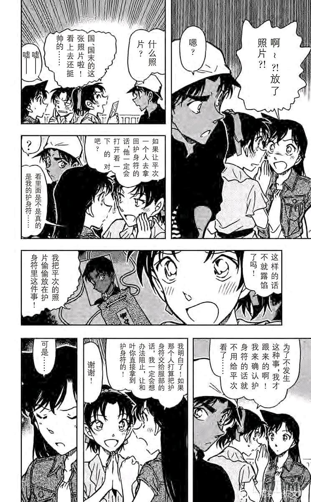
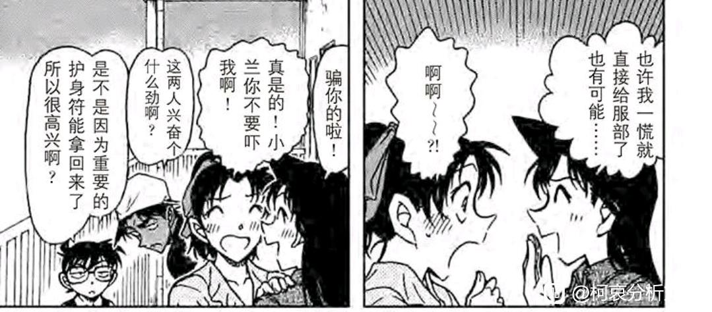
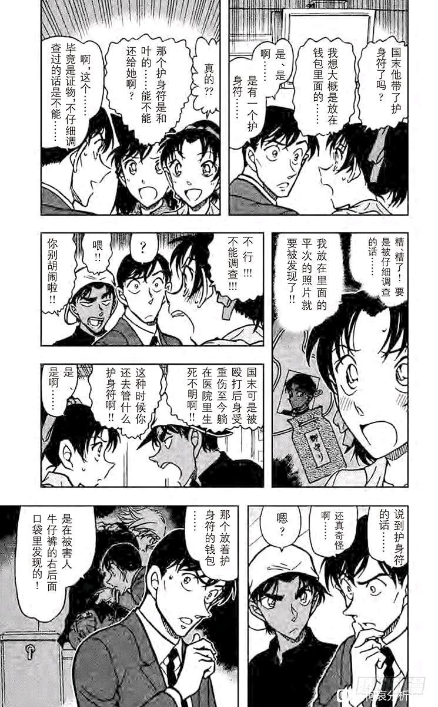
2024-06-18 17:33 | 贴吧用户_7bZ4Ey4:少侦在黑鸡帮忙的时候一句都没有提到过黑鸡，柯南还是从光彦口误里知道的是黑鸡的锅，小兰……呵2024-09-08 13:05 | 胖太21:角姐是不是觉得自己很幽默2025-02-08 09:23 | 贴吧用户_QS1t8V9:少侦快乐场是真的很快乐~ 欺负柯南大赛啊哈哈哈哈
和叶之后就不怎么恋爱脑了，各种帮服部找线索，找到了关键的棒球信息帮了大忙，小兰的剧情就比较怪异了。
我们先把和叶小兰的部分放一边，来看另一部分，本案的重要元素【宣示主权】。
如图，服部这真是安排得明明白白，上来对着情敌先展示自己对和叶的生活了如指掌，接着一个暴击【和叶的妈妈托我给她带水】，丈母娘已经搞定了，再一个连击【上次和叶还脱水了】言外之意是“当和叶危险时我才是保护和叶的那个人”，最后一个【我知道和叶放东西的位置】，国末真的惨，当场就破防了。
柯南：学习中ing，你看柯南虽然也曾劝退光彦，但十分温柔，不像服部攻击性十足，但是接下来柯南对秀一那就很有攻击性了，什么“赤井先生专注于潜水艇就好”，我估计都是从服部那里学来的。
话说柯南给眼镜护身符也是学服部的，说服部是柯南恋爱上的师傅还真没说错，破案了，原来上一案服部对三小只说自己是柯南师傅居然确有其事。
我们先把和叶小兰的部分放一边，来看另一部分，本案的重要元素【宣示主权】。
如图，服部这真是安排得明明白白，上来对着情敌先展示自己对和叶的生活了如指掌，接着一个暴击【和叶的妈妈托我给她带水】，丈母娘已经搞定了，再一个连击【上次和叶还脱水了】言外之意是“当和叶危险时我才是保护和叶的那个人”，最后一个【我知道和叶放东西的位置】，国末真的惨，当场就破防了。
柯南：学习中ing，你看柯南虽然也曾劝退光彦，但十分温柔，不像服部攻击性十足，但是接下来柯南对秀一那就很有攻击性了，什么“赤井先生专注于潜水艇就好”，我估计都是从服部那里学来的。
话说柯南给眼镜护身符也是学服部的，说服部是柯南恋爱上的师傅还真没说错，破案了，原来上一案服部对三小只说自己是柯南师傅居然确有其事。
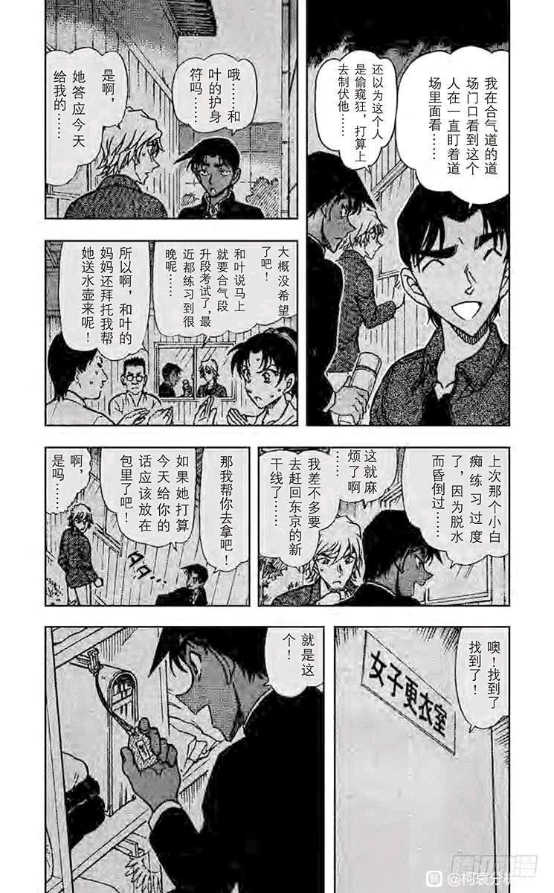
2024-06-18 17:12 | 贴吧用户_GyGQUDN:活在台词里的和叶妈妈，不知道她还有机会出场吗2024-06-18 17:29 | 🌐之徙:回复 贴吧用户_GyGQUDN :和步美妈妈并称名柯两大神秘女人2024-06-29 11:18 | 沉♬雾漂:服部这套组合拳绝杀2024-08-21 18:51 | 贴吧用户_a43ZSXM:到死都是好朋友，只是好朋友吗？2024-08-21 18:52 | 贴吧用户_a43ZSXM:还有说好的保护，其实正真保护她的永远是别人。你保护不了。2024-08-31 13:09 | 雪者风形:回复 贴吧用户_GyGQUDN :近几天听说她的形象又填充了些，（之前的）身份确认是铳对策的特警了好像是2024-09-08 13:01 | 大水魚誒:柯子那是遇强则强，光彦是小孩子不足为惧，而阿卡伊撒必须警觉2024-09-08 13:01 | 大水魚誒:回复 贴吧用户_GyGQUDN :出来啦，骗走角姐，成功助攻平和2024-11-14 10:31 | IC1101小王子:回复 贴吧用户_GyGQUDN :和叶妈妈已经登场了，而且扮演和叶带个口罩，咱们兰神就是全程没有认出来，我只能说兰神眼睛有问题不是一天两天了，小兰一不参与平和之间的告白平和就成功了，恶意满满
国末只能败犬退场，离场之前吃醋生气，对着服部的照片就开始画……
然后这一招也被柯南偷学了
不得不说柯南在恋爱方面真的水平差劲，毫无创新之处，他把比护挂件点歪，和本案国末做的事情简直一模一样，真就集百家之长，
我甚至有点怀疑，是不是遇见小哀后柯南就格外关注其他情侣的套路，然后各种用在小哀身上月台追妻美则美矣，结果是抄袭父母，护身符抄服部，比护抄国末，自己做的东都显像馆那就十分笨拙，你看服部给他打了一个样本，之前柯南表现占有欲时小哀总是有些生气（蓝色火花），之后那就可以各种犯剑享受被小哀凶恶瞪眼，不愧是作者认定的恋爱白痴。
然后这一招也被柯南偷学了
不得不说柯南在恋爱方面真的水平差劲，毫无创新之处，他把比护挂件点歪，和本案国末做的事情简直一模一样，真就集百家之长，
我甚至有点怀疑，是不是遇见小哀后柯南就格外关注其他情侣的套路，然后各种用在小哀身上
月台追妻美则美矣，结果是抄袭父母，护身符抄服部，比护抄国末，自己做的东都显像馆那就十分笨拙，你看服部给他打了一个样本，之前柯南表现占有欲时小哀总是有些生气（蓝色火花），之后那就可以各种犯剑享受被小哀凶恶瞪眼，不愧是作者认定的恋爱白痴。
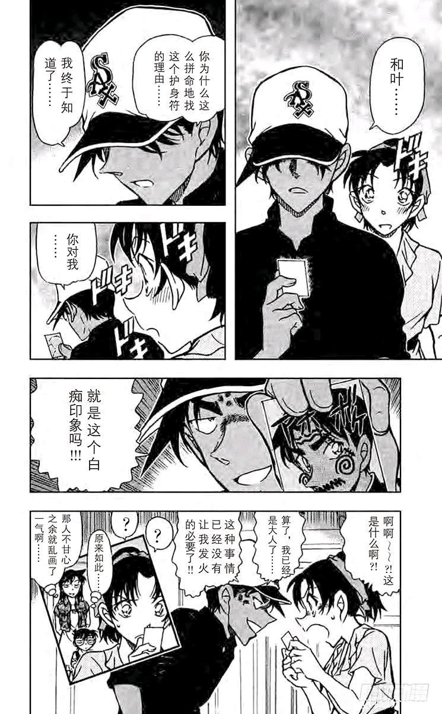
2024-06-26 13:59 | 頔丣萌訣:月台追妻居然是学的父母吗在哪看呀！2024-07-02 01:35 | 发疯的法师:回复 頔丣萌訣 :北斗星案吧 毕竟父母出场也就那么几个2024-09-08 13:04 | 大水魚誒:笑死，这张结尾真的很恋爱喜剧。2024-09-08 13:08 | 胖太21:我怀疑，让柯南在场就是一个让小柯学习感情的成长线。不然平和告白那一p小柯还探头，真的有点突兀了2025-11-25 16:36 | susu我只爱自己:
最后我们来看小兰的【疑窦丛生】，当和叶积极帮助服部破案时，小兰正在竭力欺骗自己。
当时死罗神事情更多，小兰来不及多想，但现在护身符的问题明晃晃出现，新一和柯南指纹一致的事情已然有了强证据，但小兰选择当场相信和叶并不靠谱的推测，没有过多深究。
然而事情没那么简单，在破案时，小兰再次对柯南极高的推理能力产生疑问，这一次，小兰没有暗中观察柯南，没有突然叫柯南“真不愧是新一呢！”，甚至没有妨碍柯南办案或者故意不看这一幕，她的选择是欺骗自己。
注意小兰这一段【智慧的眼神】，尤其这里【可这是为什么呢？】的内心独白，加之柯南“连小孩子都觉得奇怪”的刺激，是啊，连小孩都知道柯南和新一的指纹值得怀疑了，能够查指纹的高木就在旁边，小兰竟然就这样呆住了。
这次柯南没有任何掩饰，小兰只要一查柯南必然掉马，甚至可以认为这是真正的铁证，比危命之类的时机要好得多，但那又有什么用呢？小兰已经选择自我欺瞒了。
当时死罗神事情更多，小兰来不及多想，但现在护身符的问题明晃晃出现，新一和柯南指纹一致的事情已然有了强证据，但小兰选择当场相信和叶并不靠谱的推测，没有过多深究。
然而事情没那么简单，在破案时，小兰再次对柯南极高的推理能力产生疑问，这一次，小兰没有暗中观察柯南，没有突然叫柯南“真不愧是新一呢！”，甚至没有妨碍柯南办案或者故意不看这一幕，她的选择是欺骗自己。
注意小兰这一段【智慧的眼神】，尤其这里【可这是为什么呢？】的内心独白，加之柯南“连小孩子都觉得奇怪”的刺激，是啊，连小孩都知道柯南和新一的指纹值得怀疑了，能够查指纹的高木就在旁边，小兰竟然就这样呆住了。
这次柯南没有任何掩饰，小兰只要一查柯南必然掉马，甚至可以认为这是真正的铁证，比危命之类的时机要好得多，但那又有什么用呢？小兰已经选择自我欺瞒了。
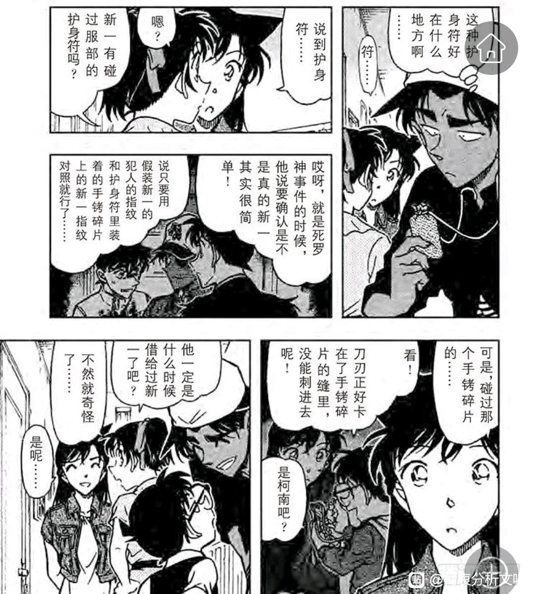
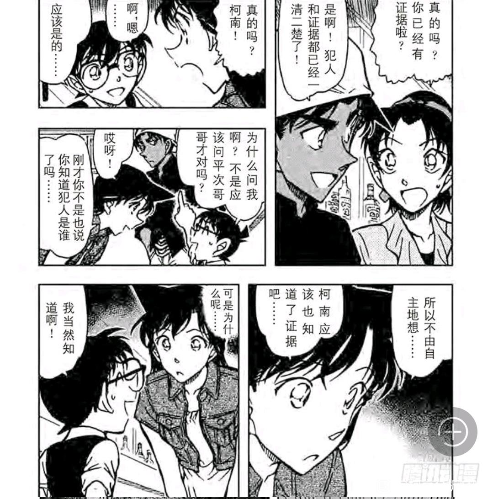
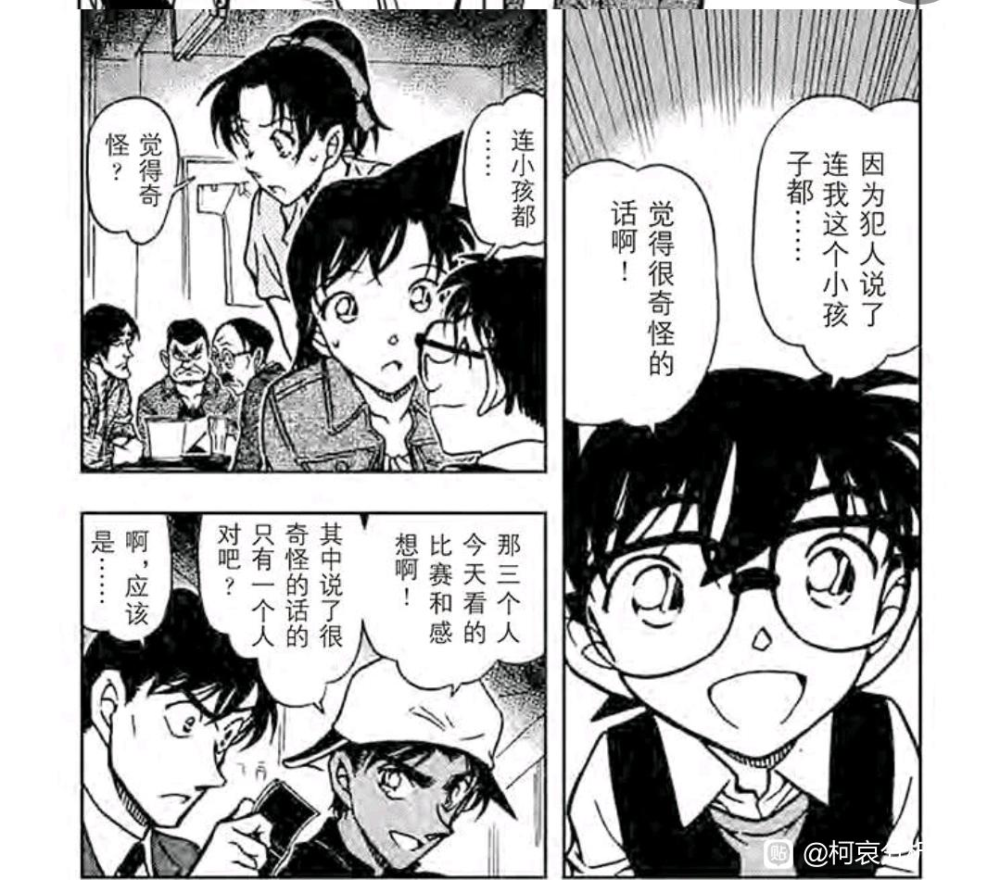
2024-09-08 11:42 | 黑暗刺猬-夏特:【我这个小孩子】……
甚至我们还可以再开一下脑洞，如果小兰这时开始怀疑柯南新一身份问题，会发生什么？
答，等不到小兰更多行动，组织的兵马就将立刻结束游戏。
为什么这么危险？我们注意到，破案后众人前往了争议地点【杯户中央医院】（国末在此住院）
在我的帖子【红黑对决】中，详细论证了该医院院长有黑方嫌疑，如果小兰本案开始怀疑因而胡乱行动，那就是全员BE，是非常可怕的后果。
当然，小兰的怀疑并没有发生，但【杯户中央医院】这块大招牌却极力显示危险的存在，柯南的世界里不止有恋爱，还有大量的危险，柯南隐瞒小兰，甚至发展到小兰自己隐瞒自己，虽然看似无情，却是绝对正确的决定。
毕竟小兰连和叶的秘密都守不住，又怎么指望她能在红黑大战中表现可靠呢？
答，等不到小兰更多行动，组织的兵马就将立刻结束游戏。
为什么这么危险？我们注意到，破案后众人前往了争议地点【杯户中央医院】（国末在此住院）
在我的帖子【红黑对决】中，详细论证了该医院院长有黑方嫌疑，如果小兰本案开始怀疑因而胡乱行动，那就是全员BE，是非常可怕的后果。
当然，小兰的怀疑并没有发生，但【杯户中央医院】这块大招牌却极力显示危险的存在，柯南的世界里不止有恋爱，还有大量的危险，柯南隐瞒小兰，甚至发展到小兰自己隐瞒自己，虽然看似无情，却是绝对正确的决定。
毕竟小兰连和叶的秘密都守不住，又怎么指望她能在红黑大战中表现可靠呢？
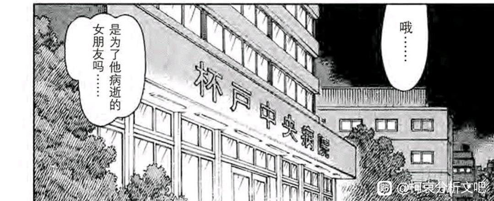
这两天回顾红黑篇，感觉詹黑还是有可能的
2024-06-18 22:47 | 贴吧用户_GDKeMK9:不至于一个负责人这么呆吧2024-06-18 22:48 | 贴吧用户_GDKeMK9:回复 贴吧用户_GDKeMK9 :感觉詹姆斯在红黑的表现，怎么说呢，太稳重了？
四、哥特式萝莉：脆弱的感情与小兰的自卑
本案在柯哀群体有一定知名度，毕竟柯南幻想小哀穿哥特式萝莉确实很出名，不过抛开这一点，本案其实是久违的兰园场，详细展现了兰园友谊的深刻--以此反衬新兰关系的脆弱。
本案的死者是个病娇，凶手是她唯一的朋友，于是这个死者把凶手工作弄没，男朋友抢走，再自己提供工作，以此让凶手做她“到死都是的好朋友”，然后凶手就把死者杀了。
需要注意，这里再次出现了【到死都是】这类表述，该表述大量出现在新兰场（危命，冲矢昴纸飞机），而本案正式实锤，乱说死是真的会死。（可以对比平和，服部的誓言是“绝对不能让她死掉”），这应该算是新一假死论的伏笔，还是比较可靠的。

本案在柯哀群体有一定知名度，毕竟柯南幻想小哀穿哥特式萝莉确实很出名，不过抛开这一点，本案其实是久违的兰园场，详细展现了兰园友谊的深刻--以此反衬新兰关系的脆弱。
本案的死者是个病娇，凶手是她唯一的朋友，于是这个死者把凶手工作弄没，男朋友抢走，再自己提供工作，以此让凶手做她“到死都是的好朋友”，然后凶手就把死者杀了。
需要注意，这里再次出现了【到死都是】这类表述，该表述大量出现在新兰场（危命，冲矢昴纸飞机），而本案正式实锤，乱说死是真的会死。（可以对比平和，服部的誓言是“绝对不能让她死掉”），这应该算是新一假死论的伏笔，还是比较可靠的。
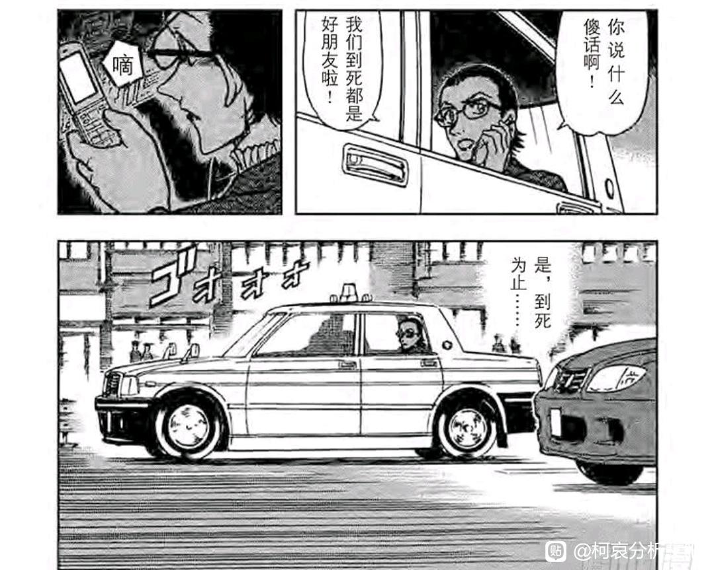
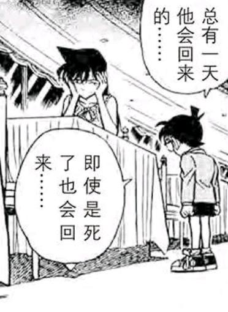
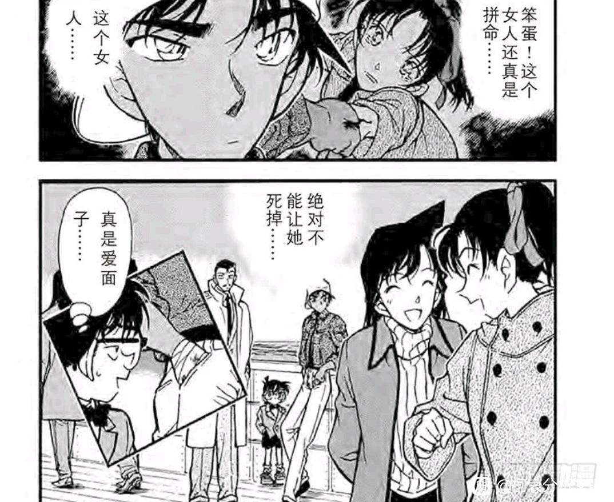
2024-06-19 15:12 | 贴吧用户_7bZ4Ey4:哥特萝莉事件我最吃惊的是一开始我以为这是动画组原创的剧集，因为那个时候也没想到柯南会主动联想到哀穿洛丽塔的画面竟然是青山自己画的这倒是给我一个惊喜，毕竟在以前舆论洗脑我都以为青山是青梅竹马控2024-06-20 14:06 | 上総守信長ºº:好！非常好的切入点！我怎么想不到2024-09-08 13:12 | 胖太21:早期sr塑造的真够悲壮喵2024-12-21 16:47 | 滦炐祐😁😁:回复 胖太21 :古内：怎么样？很有意思吧？
然后就是名场面：柯南幻想小哀穿哥特式萝莉。
这里像麦子的视频都是一笔带过的，但其实可以深挖一下，如图小兰马上号称自己要买洛丽塔（后面确实买了），结果柯南就各种腹诽，当年高佐假婚礼，在小兰的各种cue下柯南还能幻想一下小兰穿婚纱，这里倒是完全没有兴趣。
还没完，我们注意柯南形容哥特式萝莉的这些形容词，首先这些词和侦探毫无关系，也不是什么日常科普，说是“从电视上看的”，鬼知道是从哪看的，我们不妨猜得极端一点，柯南在某本杂志（说不定还是小哀看过的）看到关于哥特式萝莉的介绍，然后他就【记住了】，【记住了】之后呢？就开始幻想小哀穿这个，现在这里确实有个人穿着，幻想起来更容易了。
这就战友情完全变质了，还【蛮适合灰原的风格】，怕不是柯南的【幻想储备】里不止一套哥特式萝莉，说不定还有别的呢
这里像麦子的视频都是一笔带过的，但其实可以深挖一下，如图小兰马上号称自己要买洛丽塔（后面确实买了），结果柯南就各种腹诽，当年高佐假婚礼，在小兰的各种cue下柯南还能幻想一下小兰穿婚纱，这里倒是完全没有兴趣。
还没完，我们注意柯南形容哥特式萝莉的这些形容词，首先这些词和侦探毫无关系，也不是什么日常科普，说是“从电视上看的”，鬼知道是从哪看的，我们不妨猜得极端一点，柯南在某本杂志（说不定还是小哀看过的）看到关于哥特式萝莉的介绍，然后他就【记住了】，【记住了】之后呢？就开始幻想小哀穿这个，现在这里确实有个人穿着，幻想起来更容易了。
这就战友情完全变质了，还【蛮适合灰原的风格】，怕不是柯南的【幻想储备】里不止一套哥特式萝莉，说不定还有别的呢
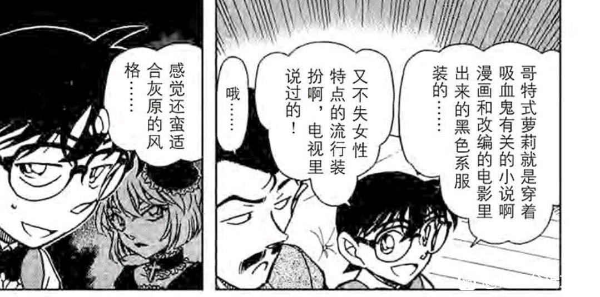
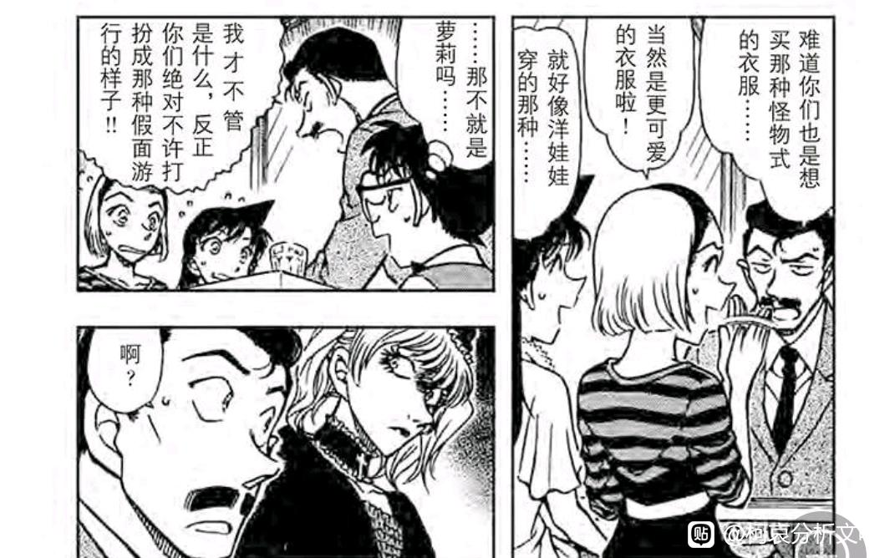
2024-06-19 15:21 | 贴吧用户_7bZ4Ey4:众所周知新兰是明面上的真情侣，小兰喋喋不休的在柯南旁边不停的念叨“婚纱好看”“好期待自己的婚礼”这样的话，如果柯南（新一）这个名正言顺的男友再不表示的想一下那这个恋爱真的不谈也罢，不过这集不一样既没有人提哀也没有关于哀的画面他就下意识的去想她穿洛丽塔的样子，其心思都快昭然若揭了2024-06-20 02:06 | 贴吧用户_aG836Ky:cy2024-06-20 14:08 | 上総守信長ºº:这张哀是真的好看！2024-08-21 18:58 | 贴吧用户_a43ZSXM:你果然还是最爱甜美可爱风呢。2026-04-23 18:23 | 呵纸吗:完全不同风格的服装...再次实锤“兰哀非同类”的设定，跟“鲨鱼海豚”的设定一样。
由于冰淇淋强盗出现，兰园需要去换衣服（前文提到，这段时间小偷小摸特别多，推测是白鸟谈了恋爱工作不认真了），结果厕所里有个人一直不出来，怀疑是心脏病发作，园子直接翻上去看。
这个剧情实在太显眼了，我们知道柯南本人就存在大量这种剧情，园子和柯南的反应几乎一样，这就很难不引起联想了。
我们知道，本案死者为了成为凶手的好朋友，直接把凶手男朋友抢了（也可以解释为设法让他们分手了，原文没有讲得很清楚），而园子为了和小兰当一辈子的好朋友，她的选择却比较苦涩：远离新一。
新园相性远远高于新兰，然而最终产生感情线的是新兰而非新园，园子的态度起到了重要作用，可惜小兰应该不太理解（或者压根不知道）园子的感情线，绷带怪人事件小兰和大田胜雨中漫步时并未真正考虑园子。
兰园友谊确实是真的，只是其中园子付出的确实比小兰多一些。
这个剧情实在太显眼了，我们知道柯南本人就存在大量这种剧情，园子和柯南的反应几乎一样，这就很难不引起联想了。
我们知道，本案死者为了成为凶手的好朋友，直接把凶手男朋友抢了（也可以解释为设法让他们分手了，原文没有讲得很清楚），而园子为了和小兰当一辈子的好朋友，她的选择却比较苦涩：远离新一。
新园相性远远高于新兰，然而最终产生感情线的是新兰而非新园，园子的态度起到了重要作用，可惜小兰应该不太理解（或者压根不知道）园子的感情线，绷带怪人事件小兰和大田胜雨中漫步时并未真正考虑园子。
兰园友谊确实是真的，只是其中园子付出的确实比小兰多一些。
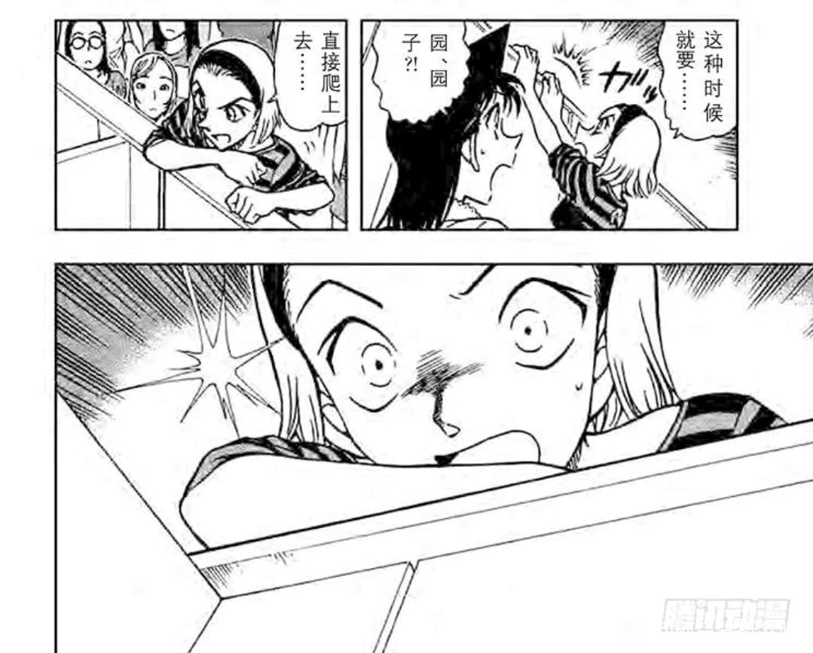
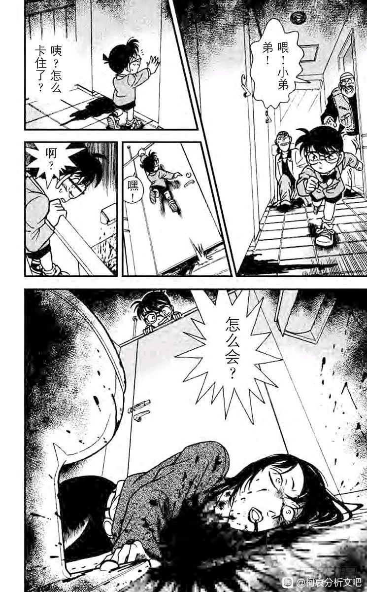
2024-06-24 19:25 | 久作天地客:园子面对案件多数时候行动力很强、高光很多，面对新兰时却有一种一昧催婚的不适感2024-07-06 09:35 | 櫻花樹下de约定:回复 久作天地客 :或许园子也带着一点“你们快点在一起吧，这样我就可以彻底放下新一了”这样的想法？2024-07-06 09:36 | 櫻花樹下de约定:园子和阿真在一起后，对新兰的心态就变成了，“我都遇到真爱了，怎么你们还在拉扯啊”2024-09-01 20:50 | 贴吧用户_aaaJSQG:回复 櫻花樹下de约定 :我也觉得，园子想我放弃吧，给你们机会，你们要好好把握这个我自愿退出的机会哦， 后来京极真出现，园子表现的就是我跟阿真已经这么甜蜜了，我两个好朋友怎么还这样?2025-01-10 22:41 | hchfxdfu:可是小偷小摸是搜查二科的事情啊，白鸟他们是搜查一科的
园子对案件也是非常感兴趣的，本案属于园子高光，她的推理非常关键，对比之下新园线就更加遗憾了。
而小兰则选择在破案时换衣服……有一说一衣服是好看的，但青山这里明显没有好好画小兰，还是拿纸飞机做对比，纸飞机这张小兰比本案好看很多，表情也差不多，但是：
【纸飞机遮住角，本案角极为显眼而且方向特别怪】
【一般小脸红会很可爱，大脸红表示害羞，但是本案小兰这个中等范围的脸红就很不好看】
【发量减少】
【台词特别尴尬，我感觉台词也会影响人物观感】
【旁边园子很好看】
就这个位置，本来应该展示小兰对柯南的魅力，结果只展示了衣服的魅力，人的魅力是一点都展示不出来，危命时小兰遮住角穿公主服，那是真的好看，有能力画危命却在这里不好好画，我估计就是故意的。
而小兰则选择在破案时换衣服……有一说一衣服是好看的，但青山这里明显没有好好画小兰，还是拿纸飞机做对比，纸飞机这张小兰比本案好看很多，表情也差不多，但是：
【纸飞机遮住角，本案角极为显眼而且方向特别怪】
【一般小脸红会很可爱，大脸红表示害羞，但是本案小兰这个中等范围的脸红就很不好看】
【发量减少】
【台词特别尴尬，我感觉台词也会影响人物观感】
【旁边园子很好看】
就这个位置，本来应该展示小兰对柯南的魅力，结果只展示了衣服的魅力，人的魅力是一点都展示不出来，危命时小兰遮住角穿公主服，那是真的好看，有能力画危命却在这里不好好画，我估计就是故意的。
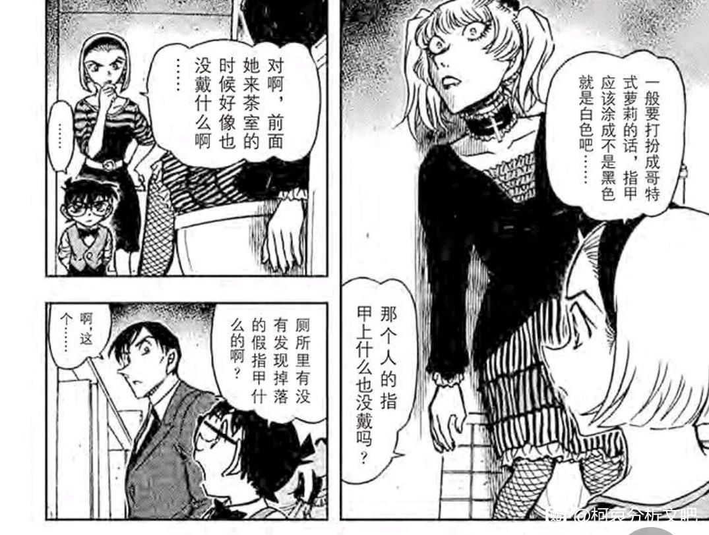
2024-06-19 09:09 | dldfj114514:兰神颜值高光关键在于把∠遮住2024-06-19 15:25 | 贴吧用户_7bZ4Ey4:第一次看的时候我也觉得这衣服完全不适合小兰啊2024-06-20 01:11 | 一叶之秋🌿🍁🍁:新园线其实很好磕，给人无限遐想和遗憾2024-06-20 11:43 | 我有嘉賓00:“你如果这样子（花心），我就要诱惑新一了”2024-09-01 20:52 | 贴吧用户_aaaJSQG:回复 贴吧用户_7bZ4Ey4 :我也觉得，洛丽塔是属于甜美可爱型的，如果是小小兰说不定可以，但是这个……好怪啊2024-09-08 13:16 | 贴吧用户_aaaJSQG:回复 贴吧用户_QU2KPRP :啊这个，“勾引”，这个词是不是不太好啊2024-09-08 13:33 | 大水魚誒:回复 dldfj114514 :刚子：你是懂角的2024-09-08 13:35 | 大水魚誒:回复 贴吧用户_QU2KPRP :是的，新园是真的能和柯哀一较高下的！而且园子很讨喜啊，灰原肯定会喜欢园子两个人成为好朋友的，那这样就很步哀了······2024-09-08 13:55 | 贴吧用户_aaaJSQG:回复 贴吧用户_QU2KPRP :哦原来这样2025-11-04 16:46 | 贴吧用户_JU23GyZ:回复 贴吧用户_aaaJSQG :兰的身材不适合穿甜lo(虽然脸确实算是可爱系的)哥特气质又撑不起来，ClA系应该更衬她2026-04-23 18:35 | 呵纸吗:...具象化展示了...男主个人对“可爱”一词的理解。

本案还有一处转变，不知是不是最近麻醉小五郎次数变少了，柯南已经不太习惯麻醉小五郎，以前是【为了破案，麻醉小五郎】，现在是【小五郎乱说话，麻醉之】
上次麻醉是伤痕系列，小五郎解决了普通委托，连命案都没有，再上一次居然要追溯到红黑篇的【律师妃英理证言】，包括柯南指挥高木查东西也是直接说，你看这正面狙击小五郎，一句“真麻烦”道出柯南的心声：
【如果小五郎能在提示下破案，柯南根本就不愿意用麻醉针了】
这也是新一转变为柯南的典型特征，反正柯南的威望已经起来了，连小兰都知道柯南是侦探，确实不再有必要装来装去。
上次麻醉是伤痕系列，小五郎解决了普通委托，连命案都没有，再上一次居然要追溯到红黑篇的【律师妃英理证言】，包括柯南指挥高木查东西也是直接说，你看这正面狙击小五郎，一句“真麻烦”道出柯南的心声：
【如果小五郎能在提示下破案，柯南根本就不愿意用麻醉针了】
这也是新一转变为柯南的典型特征，反正柯南的威望已经起来了，连小兰都知道柯南是侦探，确实不再有必要装来装去。
2024-06-19 11:07 | 红茶中的白兰地:伤痕和妃英理证言之间还有一个咖啡香案是被麻醉的2024-06-19 11:30 | 🌐之徙:回复 红茶中的白兰地 :还真是，算漏了💔总之死罗神前后被麻醉的次数特别少2024-10-11 11:14 | 九重透流173:也有一部分原因是大量新的角色加入进来以后，像以往一家三口单元剧的形式，量就比原来少好多了。
根据我的统计，600话到700话这一百话之间，小五郎总共只被麻醉了四次
五、伤疤赤井2：接纳主线的少侦，隔绝主线的毛利
读者一般认为，两个伤疤赤井案过于拖沓，可以说是造成波本篇极端冗长的重要原因，加之波本登场后还改过设定，弄得这两案波本的动机非常无聊（假秀一到处逛，然而并没有逛出什么信息，最后还不是靠易容套话大法）
但我们可以从另一个角度解析这两个伤疤赤井案，那就是这两案形成了名柯的【后期结构】，也就是大家常说的【出场人物阵营化】
在新的模式中，【少侦】得到了靠近主线的权利，三小只全员认识秀一+猫哥，又见过伤疤赤井，信息十分充分，此后朱蒂，秀一，安室，若狭等等最重要的主线人物全部都与少侦认识，我甚至认为三小只知道的信息过多，早晚也要进主线的（不需要知道柯哀是变小，但可以知道有黑衣组织这种坏蛋存在）
与此同时，毛利家在主线中的作用大大降低，我们不妨回想一下满月篇，朱蒂新出秀一全部都与毛利家（尤其是小兰）有联系，少侦则多为日常，小兰的案件动不动就跑一个秀一出来，但伤疤赤井2竟然是朱蒂与小兰的最后一次见面，伴随着朱蒂的防备，毛利家深入主线的权利被完全撤销。
现在毛利家还有什么作用呢？【新主线人物接纳器】，例如世良登场拉窗帘，安室登场拜师之类的，但世良和安室之后就头也不回地又参加了少侦场，为了保证毛利家出场率，朗姆也不得不拜师小五郎，小兰的登场则靠着女高中生场次强行提高，但传统的事务所三人组已经不存在了，主线则更是遥远。
所有这些改变，都是在冗长的波本篇，尤其是两个伤疤赤井案完成，下面我们来看看具体是怎么回事。
读者一般认为，两个伤疤赤井案过于拖沓，可以说是造成波本篇极端冗长的重要原因，加之波本登场后还改过设定，弄得这两案波本的动机非常无聊（假秀一到处逛，然而并没有逛出什么信息，最后还不是靠易容套话大法）
但我们可以从另一个角度解析这两个伤疤赤井案，那就是这两案形成了名柯的【后期结构】，也就是大家常说的【出场人物阵营化】
在新的模式中，【少侦】得到了靠近主线的权利，三小只全员认识秀一+猫哥，又见过伤疤赤井，信息十分充分，此后朱蒂，秀一，安室，若狭等等最重要的主线人物全部都与少侦认识，我甚至认为三小只知道的信息过多，早晚也要进主线的（不需要知道柯哀是变小，但可以知道有黑衣组织这种坏蛋存在）
与此同时，毛利家在主线中的作用大大降低，我们不妨回想一下满月篇，朱蒂新出秀一全部都与毛利家（尤其是小兰）有联系，少侦则多为日常，小兰的案件动不动就跑一个秀一出来，但伤疤赤井2竟然是朱蒂与小兰的最后一次见面，伴随着朱蒂的防备，毛利家深入主线的权利被完全撤销。
现在毛利家还有什么作用呢？【新主线人物接纳器】，例如世良登场拉窗帘，安室登场拜师之类的，但世良和安室之后就头也不回地又参加了少侦场，为了保证毛利家出场率，朗姆也不得不拜师小五郎，小兰的登场则靠着女高中生场次强行提高，但传统的事务所三人组已经不存在了，主线则更是遥远。
所有这些改变，都是在冗长的波本篇，尤其是两个伤疤赤井案完成，下面我们来看看具体是怎么回事。
2024-06-21 09:24 | 一叶之秋🌿🍁🍁:时间胶囊案之后，三小只甚至知道了宫野姐妹2024-08-03 21:01 | -请修改昵称-:还真别说，少侦三人的人脉圈真的跟主线高度重叠。FBI，日本公安，柯哀二人，世良，若侠，黑田，现在连宫野姐妹也知道了2024-08-05 22:21 | 放假最快乐:这里提出一点看法，后期事务所线的确和主线剧情拉开了距离，但只局限于小兰，小五郎接连被安室透波本琴酒以及老二朗姆胁田怀疑，并且后续小五郎依然有进主线参与黑组酒厂剧情的可能性，在这点小五郎和小兰不一样。2024-09-08 13:16 | 胖太21:别说了，我会真的觉得 三小只 要进主线2024-09-08 13:43 | 大水魚誒:回复 一叶之秋🌿🍁🍁 :甚至被灰原上大号拿斧头救过。2025-02-08 09:55 | 贴吧用户_QS1t8V9:m20的观感比m13好太多了，要让毛利参加黑组线就得找个日常案件作掩护，而且为了不抢走毛利的高光（打斗/枪法），基本整个警视厅都得路人化，而三小只主题的冒险是真的能和其他人有接触有线索的
伤疤赤井2有一个前置的劝阻自杀事件，少侦此前就有过类似的活动【因缘与友情的试映会】，因此也是轻车熟路，简单解决。
本案是给小哀卖萌用的，小哀这个就特别真实，因为她是先粉比护再粉足球嘛，可能确实在足球规则上有盲区，只记得连入三球叫帽子戏法，根本不知道黄牌停赛。
这里我们可以看到柯南已经开始对比护有些微小的“醋意”了，不妨回想当时柯南是怎么说的，什么“比护和你很像”，还说“我和比护以前认识”云云，现在可开始回旋镖了，“那个比护”都说出来了，全程也是半月眼，我估计柯南这时候还处于服部“看见和叶和别人互动就不爽”的状态，而且根本搞不清楚原因，也不能咨询别人，一个人在那烦恼。
本案是给小哀卖萌用的，小哀这个就特别真实，因为她是先粉比护再粉足球嘛，可能确实在足球规则上有盲区，只记得连入三球叫帽子戏法，根本不知道黄牌停赛。
这里我们可以看到柯南已经开始对比护有些微小的“醋意”了，不妨回想当时柯南是怎么说的，什么“比护和你很像”，还说“我和比护以前认识”云云，现在可开始回旋镖了，“那个比护”都说出来了，全程也是半月眼，我估计柯南这时候还处于服部“看见和叶和别人互动就不爽”的状态，而且根本搞不清楚原因，也不能咨询别人，一个人在那烦恼。
2024-06-20 14:48 | 上総守信長ºº:有一说一‘那个比护’有点翻译偏差。承接对方正在说的内容的时候，用「その」来代指是一个很常见的表达习惯，并不是体现了什么醋意。不过半月眼吐槽倒是很有柯哀独有的日常拌嘴的味道2024-06-20 17:48 | 🌐之徙:回复 上総守信長ºº :嗯嗯，学习了我是感觉柯南大概从此处就对【小哀是比护粉丝】产生了明确的定义（随后慢慢化为醋意2024-06-20 17:57 | 上総守信長ºº:回复 🌐之徙 :醋意肯定是逐渐产生的，发展到最后就是挂件点睛
前置案之后就进入伤疤赤井2正片了，不过在此之前我们先来看小兰的无语操作：
【上来先吃掉委托费】
这个操作令人窒息，就小五郎家总是处于缺钱状态不是没有原因的，毛利父女的金钱管理习惯都非常逆天。
回顾【相似的公主】，当时小五郎也是接委托，上来就把委托费吃喝了，结果解决不了委托，为了回本竟然赌马。此前伤痕系列，小五郎更是直言【赌马挽救了事务所经济情况】，小兰和她父亲相比，虽然花钱的地方少一点，知道和新一园子相处时自己省钱（6），但是一旦父亲有点收入，那也是转头花个精光，怪不得朗姆一张万马券就能接近毛利家，原来是小兰周期性点寿司被朗姆察觉到事务所经济状况了。
而且我们要注意，好多人说毛利楼下是波洛，有租金，这话本身没有问题，但需要注意毛利家由于经常在波洛赊账吃喝，反而倒欠波洛很多钱，这应该还是常态（可能安室来之后会好一点）
普通打工者，穷可能是因为社会原因，但像毛利家这种半只脚进入上流社会的人，穷就是因为糟糕的消费习惯。
有希子：跑！快跑！
【上来先吃掉委托费】
这个操作令人窒息，就小五郎家总是处于缺钱状态不是没有原因的，毛利父女的金钱管理习惯都非常逆天。
回顾【相似的公主】，当时小五郎也是接委托，上来就把委托费吃喝了，结果解决不了委托，为了回本竟然赌马。此前伤痕系列，小五郎更是直言【赌马挽救了事务所经济情况】，小兰和她父亲相比，虽然花钱的地方少一点，知道和新一园子相处时自己省钱（6），但是一旦父亲有点收入，那也是转头花个精光，怪不得朗姆一张万马券就能接近毛利家，原来是小兰周期性点寿司被朗姆察觉到事务所经济状况了。
而且我们要注意，好多人说毛利楼下是波洛，有租金，这话本身没有问题，但需要注意毛利家由于经常在波洛赊账吃喝，反而倒欠波洛很多钱，这应该还是常态（可能安室来之后会好一点）
普通打工者，穷可能是因为社会原因，但像毛利家这种半只脚进入上流社会的人，穷就是因为糟糕的消费习惯。
有希子：跑！快跑！
2024-06-20 09:49 | 红茶中的白兰地:可能小兰觉得留下钱也会被爸爸花在赌马和啤酒上，还不如大家一起吃掉。实在没钱了还可以去找妈妈。至于以后，当上了工滕太太就不愁没钱花了2024-06-21 00:37 | 贴吧用户_aG836Ky:cy2024-06-23 11:33 | 君子苓月:回复 红茶中的白兰地 :但是从这一话得知毛利家是毛利兰掌管钱的（波罗赊账，买菜的钱，小五郎的零花钱），而且这笔钱来路不明不问一下父母钱的来路直接花掉是否有点问题，并且有希子的一千万日元给小五郎很怀疑毛利父女的消费观2024-06-30 00:49 | 卷福花生酱酱酱:啊，毛利家是波洛的房东吗？没看到也2024-07-02 01:45 | 发疯的法师:虽然毛利兰问都不问毛利一声就用掉确实难蚌 不过比毛利还算是好那么一点 不过万马券有说是朗姆的？2024-07-02 06:44 | 🌐之徙:回复 发疯的法师 :没明说不过肯定是2024-08-05 22:27 | 放假最快乐:回复 发疯的法师 :说过的2024-08-05 22:28 | 放假最快乐:回复 🌐之徙 :作者青山在某个场外访谈中承认，小五郎那个万马劵就是老二朗姆胁田策划的，引诱小五郎上钩的诱饵2025-08-26 11:31 | 贴吧用户_QQQC1ZG:小五郎这么能赚钱啊× 柯南这么能赚钱啊√
那毛利家就不得不接这个委托，之后意外遇到了朱蒂。
我们知道，朱蒂是小兰的英语老师，甚至说过几句真心话（例如“老是依靠别人是不行的哦”），但是本案朱蒂和小兰的关系，却实在看不出她们是熟人。
这与其说是小兰和朱蒂的重逢，不如说是最后一次见面，准备切割了，你看卡迈尔还想着下次见面多多关照，朱蒂恨不得直接跑路。
朱蒂磕柯哀，这是众所周知的事情，但是磕柯哀也不至于切割小兰吧，因此朱蒂切割小兰的原因就出自满月篇，她本想满月篇给小兰一个机会进主线，结果十分失败，自己还被小兰当狼打，这换谁不郁闷，之后朱蒂宁可和少侦合作也不和小兰合作，少侦天天担任危险任务，什么公交车抱炸弹，对抗银行劫匪之类的，朱蒂都看在眼里。小兰呢？满月跳车过于抽象，我猜朱蒂和柯南交流案情时，要么直接跳过了小兰的部分，要么就顺便讲了一下，于是柯南也对小兰的满月行为无感。
我们知道，朱蒂是小兰的英语老师，甚至说过几句真心话（例如“老是依靠别人是不行的哦”），但是本案朱蒂和小兰的关系，却实在看不出她们是熟人。
这与其说是小兰和朱蒂的重逢，不如说是最后一次见面，准备切割了，你看卡迈尔还想着下次见面多多关照，朱蒂恨不得直接跑路。
朱蒂磕柯哀，这是众所周知的事情，但是磕柯哀也不至于切割小兰吧，因此朱蒂切割小兰的原因就出自满月篇，她本想满月篇给小兰一个机会进主线，结果十分失败，自己还被小兰当狼打，这换谁不郁闷，之后朱蒂宁可和少侦合作也不和小兰合作，少侦天天担任危险任务，什么公交车抱炸弹，对抗银行劫匪之类的，朱蒂都看在眼里。小兰呢？满月跳车过于抽象，我猜朱蒂和柯南交流案情时，要么直接跳过了小兰的部分，要么就顺便讲了一下，于是柯南也对小兰的满月行为无感。
2025-08-11 13:18 | 洛菲斯♬:朱蒂看起来像是害怕毛利家会掺合FBI的调查，干扰己方行动。
伤疤赤井2这个事件比较粗糙，柯南当众变声器躲都不躲，而且是在小兰面前，这个我猜是为了引发争论（包括小五郎突然醒来也是引发争论，肯定要有人讨论小五郎是不是大智若愚，小兰是不是已经发现变声器之类的）
但是这些粗糙的刻画为了引发争议，牺牲了故事的严谨性，我只能认为小兰已经强迫自己不看柯南只关注沉睡的父亲，但是还是太怪了，或者另一种解释，也许青山根本就不重视毛利家的刻画，这类站位关系也不像柯哀是精心设计的，随便应付就是了。
但是这些粗糙的刻画为了引发争议，牺牲了故事的严谨性，我只能认为小兰已经强迫自己不看柯南只关注沉睡的父亲，但是还是太怪了，或者另一种解释，也许青山根本就不重视毛利家的刻画，这类站位关系也不像柯哀是精心设计的，随便应付就是了。
2024-09-08 13:57 | 大水魚誒:这个的话，我倒是觉得是叠加画法啦，就是类似背后灵，其实角姐应该是对着毛利发问，同时把毛利推理背后的操控者柯子也画在了同一个画面里罢了，就是一个分镜突破了单一场景刻画啦，这种表达还是蛮常见的。
最后来看一下秀朱，秀朱的羁绊足以作为可靠的同事和朋友，但离爱情我认为还是差一点的（感觉不如秀卡，卡迈尔甚至看穿了秀一是假的，是组织的陷阱，强）
这里秀一就在朱蒂眼前但朱蒂并不知道，要到绯色篇才想起来，这就太晚了，这种刻画和新兰有相似之处，新兰也是在黑衣骑士就是新一情况下小兰仍然不认识。
（有人认为小兰可以看出猫哥＝秀一，进而推出秀兰可能性，我还是不能接受，太古怪了，而且小兰也不是认出猫哥是秀一，她只是觉得猫哥比较危险而已）
此外，秀朱这里的互动则与【一角岩】的秀哀互动有相似之处，也是女方快要摔倒被秀一扶起来，同理我也不认为秀哀有任何意义的爱情，秀一扶女生应该是出于绅士，之前有若干秀哀来帖内发评论，我看了感觉都没什么道理。
（题外话，小哀18岁，秀一32岁，差了14岁，如果秀兰则差16岁，年龄差实在太大，有秀哀用十绿进行反驳，说十绿年龄差也大，但目暮刚当上警察时也就24-25岁，小绿高中17-18岁，最多也就差7岁8岁，秀哀或者秀兰的年龄差可是十绿的两倍啊，是真的不太靠谱）
这里秀一就在朱蒂眼前但朱蒂并不知道，要到绯色篇才想起来，这就太晚了，这种刻画和新兰有相似之处，新兰也是在黑衣骑士就是新一情况下小兰仍然不认识。
（有人认为小兰可以看出猫哥＝秀一，进而推出秀兰可能性，我还是不能接受，太古怪了，而且小兰也不是认出猫哥是秀一，她只是觉得猫哥比较危险而已）
此外，秀朱这里的互动则与【一角岩】的秀哀互动有相似之处，也是女方快要摔倒被秀一扶起来，同理我也不认为秀哀有任何意义的爱情，秀一扶女生应该是出于绅士，之前有若干秀哀来帖内发评论，我看了感觉都没什么道理。
（题外话，小哀18岁，秀一32岁，差了14岁，如果秀兰则差16岁，年龄差实在太大，有秀哀用十绿进行反驳，说十绿年龄差也大，但目暮刚当上警察时也就24-25岁，小绿高中17-18岁，最多也就差7岁8岁，秀哀或者秀兰的年龄差可是十绿的两倍啊，是真的不太靠谱）
2024-06-20 15:09 | 上総守信長ºº:不如秀卡……我一口老水喷在屏幕上2024-06-20 21:01 | 贴吧用户_7bZ4Ey4:其实我一直觉得卡朱才是最合适的两个不是很靠谱的人组在一起却意外的靠谱了这不是很好磕吗2024-06-29 15:56 | 沉♬雾漂:这里没认出来确实，其实成年人的在一起并不需要太深的爱情，秀一也30多了，如果有很多个前女友也不是离谱的设定。秀哀之前实在好磕，不过我也是算了年纪后觉得原著里不太可能了，但不影响我在同人文里继续磕2024-07-01 12:36 | Auniola:没人想过明美吗。。。。。哀肯定见过诛星大，不管怎么说哀都不可能会喜欢秀啊。。。2024-07-15 18:08 | 学习机425:伊织和红叶也相差十三岁啊，配平倾向那么明显……当然我不认为秀兰可以，但我觉得老贼之前确实有考虑过秀哀线2024-07-15 18:17 | 🌐之徙:回复 学习机425 ::十三岁已经是比较大的年龄差，秀哀是十四岁还更大，且伊红里是红叶（年龄小的一方）主动，秀哀（如果有）却是秀一主动，这就不太对劲了。2024-07-16 14:11 | 学习机425:回复 🌐之徙 :伊红里明显是伊织主动啊，隐忍的守候，而且你要是觉得十三岁和十四岁有多大区别那我只能顺从2024-07-16 14:14 | 学习机425:回复 🌐之徙 :准确来说，伊红里初遇里红叶的主动是不涉及感情线的，而先动心的是伊织（除非认为红叶现在追平次是为了刺激伊织，但很明显伊织没被刺激到）所以伊织才会主动的守护，伊织才是主动方2024-07-16 15:25 | 🌐之徙:回复 学习机425 ::这个就没道理了，如果说红叶对伊织不涉及感情线，伊织对红叶的心动也不太能直接叫爱情吧。而且十三岁已几乎成为伊红最大的阻碍了，如果二人是九岁以内的年龄差早就光速配平了。2024-07-16 16:40 | 学习机425:回复 🌐之徙 :首先你说的两点都没有逻辑 第一，初遇里红叶（十四岁）对伊织的感情就是我想你保护我，所以贴创口贴，这点是无关感情的。但成年人伊织对红叶产生了保护欲或者说放心不下，这是喜欢。2024-07-16 16:41 | 学习机425:回复 🌐之徙 :第二，老贼能画这种自带管家的大小姐，出场就已经是配平倾向了，你要说他觉得年龄差距大不可能？他用伊红告诉你，他不在乎年龄差。2024-07-16 16:43 | 学习机425:回复 🌐之徙 :伊红就算没有年龄差，为了推剧情（不知道阻碍平和和进主线那个更重要）也不会光速配平，说白了，年龄差从来就不是伊红的阻碍，日本管家大小姐是自带配平感的，老贼画这对就是为了炫技—你看我画大叔萝莉都能画的这么好2024-07-16 16:44 | 学习机425:回复 🌐之徙 :你要问我他之后会不会走秀哀，看完m26我觉得不会，但你说他想没想过秀哀，那确实有，伊红就是最好的例子，给秀哀画的剧情之后用不了了，那就画一对相似的情侣，相似的年龄差，相似的初遇保护剧情，用来炫技和画出之前就设计过的剧情2024-07-16 17:00 | 🌐之徙:回复 学习机425 ::我说一下我的看法： 伊红是一定要有的，但是在接下来的剧情中，伊红的最大阻碍一定是年龄，伊红如果想要实质性推进，必须有其他推动力，足以克服年龄差问题才行，也就是年龄这个问题绝对是减分项，是为了拖剧情而设定的限速器。2024-07-16 17:02 | 🌐之徙:回复 学习机425 ::而秀哀不但无法克服年龄差问题，还加了秀一无法保护明美的雷，后面又有表兄妹问题，三颗雷下去形成绝不可能。你说秀哀早期有推，但年龄雷和无法保护明美雷也还在，无其他剧情推翻年龄雷这就是无推，根本不存在青山推过秀哀的说法。2024-07-16 17:04 | 🌐之徙:回复 学习机425 ::青山不是不在乎年龄差，他是在挑战年龄差，也就是要试图画伊红，画一对能克服年龄差的。2024-07-16 17:05 | 学习机425:回复 🌐之徙 :但伊红的初遇剧情真的神似秀哀，连初遇年龄都相同，如果只是挑战，为了避免被人联想，老贼是不用画这种类似的初遇的2024-07-16 17:08 | 学习机425:回复 🌐之徙 :事实上，在表兄妹之前，秀哀完全可以，姐姐深爱的前男友和姐姐深爱的妹妹在一起了，对姐姐也是一种慰藉这种剧情在古早言情也太常见了，老贼最早的新兰也一股女频味，加上他自比哀，把南姐当做柯南，他身上的女性思维也确实很有趣2024-07-16 17:08 | 🌐之徙:回复 学习机425 ::初遇年龄不相同啊2024-07-16 17:09 | 学习机425:回复 🌐之徙 :秀一无法保护明美，所以他可以去保护明美挚爱的妹妹啊？我实在不能理解，把一切秀/昴哀接触的剧情解读为秀一在磕柯哀就完事了对吧？哪怕秀一的视角根本看不见柯南，也是在对空气磕柯哀2024-07-16 17:09 | 学习机425:回复 🌐之徙 :请问14岁和13岁的区别是？2024-07-16 17:10 | 学习机425:我也不能理解你，一定要嘴硬吗？
回复 🌐之徙 :如果你认为13岁未成年，14岁也未成年，都是初中生的年纪，在我国也是法律上的未成年人2024-07-16 17:11 | 🌐之徙:回复 学习机425 ::没道理，小哀上来就很讨厌诸星大，还“对姐姐的一种慰籍”？至于早期新兰也毫无女频可言，小兰被欺骗得太惨了。 我看除了松本小百合比较狗血，青山的大部分剧情还是正常的，并不像所谓“古早言情”。2024-07-16 17:12 | 🌐之徙:回复 学习机425 ::区别就是一些国家14岁女生已经可以结婚，而几乎没有13岁合法的国家，这就是严重的区别。2024-07-16 17:15 | 🌐之徙:回复 学习机425 ::所以秀一没有保护明美的事情，就这么算了？ 秀一既然保护不了明美，向组织复仇也没完成，猫哀接触时小哀已经相当不想理他，就这还要说秀一追求志保吗？2024-07-16 17:15 | 学习机425:回复 🌐之徙 :。。。那我顺从你，你喜欢就行2024-07-16 17:17 | 学习机425:回复 🌐之徙 :谁跟你说秀一在追求志保了？你xp也太古怪了，一边觉得14岁的孩子就可以有感情线，还是对成年人主动的那一方，一边觉得13岁严抓死打，我说的一直是秀一因为对明美的愧疚而保护志保，如果想写，保护的过程中发展感情是正常的，就是放心不下＝喜欢2024-07-16 17:19 | 学习机425:回复 🌐之徙 :并且早期新兰还不够女频吗？受人喜欢闪闪发光的男生和青梅竹马，没有那么优秀的暴力青梅，哪怕竹马很多人喜欢，但他喜欢的是青梅，还为此拒绝了优秀的学姐…你如果不先入为主认定老贼一切都是在给新兰埋雷，那前期到哀出场这段时间的剧情就是很女频啊2024-07-16 17:20 | 🌐之徙:回复 学习机425 ::我其实一直是不懂【秀→哀】漫画到底哪里有展现，漫画都明确说了秀一忘不了明美，对志保的保护也是以生命安全为主，但是已经不只一个人跟我说“青山画过秀哀”还举出了少数不可靠的理由，我是一点都没看出来。2024-07-16 17:23 | 🌐之徙:回复 学习机425 ::早期新兰，小兰天天被骗？赤木量子从头骗到尾？麻美学姐更是100%为哀服务因为下一案小哀就立刻登场，这怎么敢叫做女频的。2024-07-16 17:23 | 学习机425:回复 🌐之徙 :就你先排除掉你认为秀一对哀只有保护的这个想法 也排除掉后面的剧情，画每个章节就单纯看现在的剧情 那秀一想深入了解哀，想保护哀这个剧情本身就至少提现了他对哀的在意啊（甚至是你前面分析的） 但你分析完总能拐到秀一在磕柯哀，我也不理解2024-07-16 17:25 | 🌐之徙:回复 学习机425 ::保护的过程中产生喜欢？那我们来看看秀一是怎么保护小哀的。比如小哀被关在冷藏车里，秀一送来了一部手机？可疑车辆在博士家徘徊，秀一发现了也不管？那些所谓“有意思”的猫哀互动，什么车里面说“情话”之类的，又都不是保护小哀的剧情。2024-07-16 17:26 | 学习机425:回复 🌐之徙 :你有没有看过女频？女频里男主打着为女主好欺骗女主的文，不管是古早还是现在，还少吗？这个能证明给新兰埋雷？还有学姐，是啊我认为这是给哀铺路，但这也不影响学姐剧情这种高富帅不爱对她一往情深的优秀白富美爱平平无奇的女主这种剧情很女频啊？不冲突啊2024-07-16 17:27 | 🌐之徙:回复 学习机425 ::秀一对小哀的大部分剧情，就是一个保底保护，连日常保护都不算，全靠一手窃听，至于秀一想了解哀，这好像不太对，秀一已经很了解哀了，至多对未知的柯哀产生一点兴趣而已。2024-07-16 17:28 | 🌐之徙:回复 学习机425 ::那这种女频总不能允许柯南和赤木量子共享秘密吧？欺骗是欺骗，哪有“爱情大骗子”这种欺骗啊，这真是女频吗？ 至少得动画组兰才有女频资格。2024-07-16 17:30 | 🌐之徙:回复 学习机425 ::学姐所谓的高人设只是相对而言，她本身的成绩好之类的都是虚的，观众根本看不出来学姐具体的优秀情况。真女频肯定要把学姐塑造丰富一些的。2024-07-16 17:31 | 学习机425:回复 🌐之徙 :不是哥们，你是不是完全没意识到我的意思，我的意思是，你说的柯哀伏笔，现在老贼有引申并且继续画，所以能说是伏笔，但如果老贼不画呢？那就是柯哀yy吗？肯定不是啊 所以我对秀哀也是如此啊，你用后续剧情（骨科等）去反驳之前的，我无法理解2024-07-16 17:31 | 🌐之徙:回复 学习机425 ::总之你先确认一下，如果秀一对志保的喜欢来自于日常保护，为何保护过程如此缺乏描写，反而非保护情节有少量剧情？如果秀一对志保的喜欢不来源于保护的日久生情，那么又来自哪里？2024-07-16 17:32 | 🌐之徙:回复 学习机425 ::秀一登场就是明美愧疚状态，年龄差也是登场就有，这两颗雷就是无秀哀的证据，骨科只是巩固了这一观点而已。2024-07-16 17:33 | 学习机425:回复 🌐之徙 :这就够了啊！女频的优秀女二本身也不会特意去描写啊，我说的不是女频漫画，是jj这种言情网站上的古早女频，赤木量子到底是路人甲，至于冬瓜组那个，简直是大女主了，女频中的女频2024-07-16 17:33 | 学习机425:回复 🌐之徙 :对明美的愧疚本身就可以成为之后的秀哀源头，至于年龄差伊红就证明了根本不是问题，老贼也不在乎这个，over2024-07-16 17:34 | 🌐之徙:回复 学习机425 ::我是认为秀一从来不存在所谓冲矢昴人格的，他一直都是那副苦大仇深的样子，猫哥的所有剧情都必须视为秀一在小哀面前的伪装，甚至是秀一本人也在避免和小哀正面接触，有意识地让猫哥和自己显得不同。2024-07-16 17:35 | 🌐之徙:回复 学习机425 ::对明美的愧疚只能成为保护的源头，保护变喜欢，至少要把愧疚做个了断才行，就像佐藤必须断松田才能和高木在一起。2024-07-16 17:36 | 🌐之徙:回复 学习机425 ::你是没看我的回复吗2024-07-16 17:39 | 🌐之徙:伊红年龄差恰恰说明青山认为年龄差是大问题，所以才拿年龄差限速伊红，根本不是不在乎年龄差。
回复 学习机425 ::为何要给名柯扣一个女频帽子？你是拿麻美当兰女频的证据，可是麻美显然引出小哀，然后没证据了。（何况麻美也不那么女频） 接着你拿【名柯是女频】这个不靠谱结论，认为【秀哀存在】，逻辑链可靠性未免太低了吧。2024-07-16 17:39 | 学习机425:回复 🌐之徙 :所以你是不看我的评论吗？我一直是这个态度啊？不能理解，你和我沟通完全不看我的话是吗？2024-07-16 17:40 | 学习机425:回复 🌐之徙 :随便你吧，你只要坚持那你把一个看着是红烧排骨，吃起来是红烧排骨的东西认为是清蒸鸡翅那我也赞同，别回我了，你又不用说服我，你该说服你自己2024-07-16 17:41 | 🌐之徙:回复 学习机425 ::你前面告诉我秀一就是喜欢小哀，我告诉你不可能。 然后我说麻美不是女频，你说是。 我说青山在乎年龄，你说不在乎。 现在你告诉我，你一开始就是这个观点，我没看你评论，你有点幽默了。2024-07-16 17:42 | 🌐之徙:回复 学习机425 ::你单独开一个贴，把你的观点表达清楚不就得了。2024-07-16 17:44 | 学习机425:回复 🌐之徙 :我从来没有说过秀一就是喜欢小爱，我说的是这段感情如果想写是完全可以的，你说的那些雷点有些不存在，有些可以消解，是你在哪里像传教一样说个不停2024-07-16 17:45 | 🌐之徙:回复 学习机425 ::你前面自己原话，青山推过秀哀。2024-07-16 17:46 | 学习机425:回复 🌐之徙 :哥们，不是，我就回了一句你一直追着我问，难道不是讨论吗？你难道是来考考我的吗？？？我的观点很简单，伊红就是秀哀的影子，老贼写这对是炫技也是代表他根本不在乎年龄差，伊织对红叶有感情线，而秀哀唯一的雷（前期）是可以被化解的，但我同样认为秀哀已经砍了2024-07-16 17:47 | 🌐之徙:回复 学习机425 ::推过秀哀是什么意思？至少要有能让人想象的互动吧，哀→秀根本没有，那就只能秀→哀，然后你说秀一可以因为保护和愧疚而喜欢小哀，证据是女频文都这么写…2024-07-16 17:47 | 学习机425:回复 🌐之徙 :对啊，青山推过秀哀＝他们互相喜欢吗？难道不是＝他想画的画他们能有结果？那老贼还卖赤安呢，＝赤安决定搞基？卖琴赤＝赤井是骗婚gay？2024-07-16 17:48 | 🌐之徙:回复 学习机425 ::我的观点是伊红根本不是秀哀的影子，代表他重视年龄差，秀哀雷不可化解，你我观点本就不同，你说的我觉得没道理。2024-07-16 17:49 | 🌐之徙:回复 学习机425 ::而且我认为青山没有推过秀哀，和你观点又不同。2024-07-16 17:49 | 学习机425:回复 🌐之徙 :还是那句话，你觉得没有秀哀，OK，那你就继续，你不用试图说服我，我没逼着你改观点，你也不用管的这么宽。以及我说的也是秀哀想写完全有可能，是可能，你要真觉得我说女频里秀哀这种关系可以等于老贼这么写那你喜欢就好2024-07-16 17:50 | 🌐之徙:回复 学习机425 ::你单独开一个帖子，论证“青山推过秀哀”，请。就你现在这条逻辑链，想说服别人难度也太高了。2024-07-16 17:50 | 学习机425:回复 🌐之徙 :是你一直试图说服我，我没有被说服，我几次举我的例子也就是想和您探讨，探讨的结果是您和我对彼此的观点完全不认同，就该结束了吧？不用一直解释了可以吗？2024-07-16 17:50 | 🌐之徙:回复 学习机425 ::你说得没道理我当然要在我自己帖子里说清楚了，这是我帖子，是你先质疑的啊。2024-07-16 17:51 | 🌐之徙:回复 学习机425 ::你不想说就别回复嘛，主动权不是在你手上吗？2024-07-16 17:52 | 学习机425:回复 之徙 :那你删评行了吧？大哥我就是说了一句但我觉得老贼之前有考虑过秀哀就被你指责这么多，你要是觉得我在对您说教你就删评吧，**也太中科2024-07-16 17:53 | 🌐之徙:回复 学习机425 ::不是，你不想说就别回，回了又叫我删评是什么道理2024-09-12 10:19 | 妤诺丶º:回复 学习机425 ::在别人帖子叭叭，还让人家删？你自己不会删？2024-09-30 06:35 | 天津摩羯:回复 学习机425 ::蠢猪2025-12-20 09:31 | 贴吧用户_JJJeGeW:回复 学习机425 :不可能的，如果真有秀哀，秀一人格大失败
蹲蹲蹲

番外：关于伤疤赤井2的时间考证
伤疤赤井2发布于2009年年底，其中提到了一件【13年前】的案件，看到这个年份读者就当立刻警惕起来，且【13年前12月29日】是周日，恰好是符合现实世界的十三年前1996年的情况，1996年底还发生了什么呢？正是漫画更新到【落叶缤纷的质问】，开启危命的复活，第二年则是1997年，青山忍不住安排了小哀登场。
【当你看到山顶的景色就会改过自新】，这话很有意思，故事里是犯人贪污，获得了不属于自己的东西，还甩锅给别人，同样是故事里，小兰在危命知道了柯哀的情况，陷入自卑的情绪，而故事外呢？谁获得了不属于自己的东西？（提示：下一个案件犯人姓儿玉），那么，山顶的景色应该指代青山塑造的柯哀了，看过柯哀谁还磕新兰啊。
而不知为何，柯南不把这个案件叫做13年前的案件，而是叫做“十年前（+）的世界”，这里不清楚是翻译的问题还是柯南就是这么说，但柯南似乎有意逃避【十三年前】【圣诞节前后】等几个关键词，这大概也是初遇论的一种提示。
伤疤赤井2发布于2009年年底，其中提到了一件【13年前】的案件，看到这个年份读者就当立刻警惕起来，且【13年前12月29日】是周日，恰好是符合现实世界的十三年前1996年的情况，1996年底还发生了什么呢？正是漫画更新到【落叶缤纷的质问】，开启危命的复活，第二年则是1997年，青山忍不住安排了小哀登场。
【当你看到山顶的景色就会改过自新】，这话很有意思，故事里是犯人贪污，获得了不属于自己的东西，还甩锅给别人，同样是故事里，小兰在危命知道了柯哀的情况，陷入自卑的情绪，而故事外呢？谁获得了不属于自己的东西？（提示：下一个案件犯人姓儿玉），那么，山顶的景色应该指代青山塑造的柯哀了，看过柯哀谁还磕新兰啊。
而不知为何，柯南不把这个案件叫做13年前的案件，而是叫做“十年前（+）的世界”，这里不清楚是翻译的问题还是柯南就是这么说，但柯南似乎有意逃避【十三年前】【圣诞节前后】等几个关键词，这大概也是初遇论的一种提示。
2024-06-21 10:47 | 上総守信長ºº:好惊人的细节2024-06-21 13:30 | 秦芮不是秦睿º:下一案犯人姓儿玉wwwww73心眼多真的多2024-06-21 14:21 | 乐以轩🌟:儿玉这个名字在《名柯》的世界里就好像《明星大侦探》里的甄姓2024-08-21 18:52 | 热心网友王BS:可以问一下这个儿玉是什么含义吗2024-08-23 20:41 | Wf_yjqd:没记错的话这一案还和跳舞的小人有关2024-09-02 09:51 | 肥宅快乐水乾杯:回复 热心网友王BS :动画的导演2024-09-02 18:51 | 热心网友王BS:回复 肥宅快乐水乾杯 :感谢2024-09-08 13:59 | 大水魚誒:老天，竟然是09年发布的了，一眨眼过去了好多好多年啊唉2024-10-23 12:31 | 独孤求败💯💯💯:回复 热心网友王BS :儿玉兼嗣，剧场版m1-m7导演，动画组魔改王，能力是肯定的，道德是没有的，库库给角姐刷分
六、白鸟归林2：替身代餐不可取
本案又贡献了柯哀名场面【放心不下是喜欢】，有吧友还认为本案体现了“小哀已经回忆了初遇”等等，当然抛开柯哀互动，本案还将另一个重要的恋爱观摆在台面上：人不能也不应该成为替代品。考虑到本案凶手姓儿玉，这一案似乎具有更多的现实意义。
儿玉的M2，M3，M4，M5都出现了不同程度的替身代餐剧情（以M4最为严重），且儿玉将这些剧情中新兰的恋爱戏提升到了莫名其妙的高度，或许是因为儿玉此时已经远离名柯工作，或许是青山早就想把儿玉塑造的工业爱情批判一番，又或许，只是“白鸟和小林的角色脱离作者开始自由行动了”，总之青山画出了本案。
【不知道是不是为了不让剧情太露骨，本案所有称呼犯人的地方都称全程“儿玉柳介”先生，而不像通常案件称“儿玉先生”】
本案又贡献了柯哀名场面【放心不下是喜欢】，有吧友还认为本案体现了“小哀已经回忆了初遇”等等，当然抛开柯哀互动，本案还将另一个重要的恋爱观摆在台面上：人不能也不应该成为替代品。考虑到本案凶手姓儿玉，这一案似乎具有更多的现实意义。
儿玉的M2，M3，M4，M5都出现了不同程度的替身代餐剧情（以M4最为严重），且儿玉将这些剧情中新兰的恋爱戏提升到了莫名其妙的高度，或许是因为儿玉此时已经远离名柯工作，或许是青山早就想把儿玉塑造的工业爱情批判一番，又或许，只是“白鸟和小林的角色脱离作者开始自由行动了”，总之青山画出了本案。
【不知道是不是为了不让剧情太露骨，本案所有称呼犯人的地方都称全程“儿玉柳介”先生，而不像通常案件称“儿玉先生”】
2024-08-31 13:36 | 雪者风形:欲盖弥彰
本案上来就又是小哀锐评白林关系，也许是白鸟本身有毒舌属性，所以要让小哀锐评才有效果吧。
我们可以发现小哀和柯南的思路略有不同，小哀显得比较激进，一直在挑明“白鸟应该表白”，而柯南就觉得得让当事人自己做决定。
（注意这里柯南看小哀的眼神，天天互相偷看是吧，不过半月眼也确实表达出柯南当前“表白理论”与小哀不同，当然，此处的半月眼还有另一层含义，这里按下不表）
小哀的这一行为模式有可能是受到林原的影响（林原多次认为名柯里每一对都太迟钝啦），不过也许是因为小哀的爱意客观上无法表达，所以反而更希望其他有情人能更加幸福。
柯南的行为模式也是符合人设的，毕竟不亲口说出来就不浪漫了，因此我们可以发现，【柯南大部分时候对警视厅情侣都是一开始不怎么在乎，但最后顺水推舟】，例如早期柯南经常打扰高佐约会，后期也是各种对千苗捣乱，捣乱程度堪比由美，但是当柯南真的发现这一对是真爱时那就会反过来维护（例如伤痕案高佐接吻），几乎从不半场开香槟（平和由于过于老夫老妻，柯南对服部表白的态度已经和小兰半斤八两）。
所以对于新一自己，新兰的表白就太仓促了，仓促到不符合柯南本人的表白观，那么要么表白是假表白，要么新兰爱情是假爱情，如果新一确实对小兰还留有爱意，我想他应该用其他方法安慰小兰，而将表白保留下来，如此轻率的使用表白，反而说明表白本身就非常廉价。
我们可以发现小哀和柯南的思路略有不同，小哀显得比较激进，一直在挑明“白鸟应该表白”，而柯南就觉得得让当事人自己做决定。
（注意这里柯南看小哀的眼神，天天互相偷看是吧，不过半月眼也确实表达出柯南当前“表白理论”与小哀不同，当然，此处的半月眼还有另一层含义，这里按下不表）
小哀的这一行为模式有可能是受到林原的影响（林原多次认为名柯里每一对都太迟钝啦），不过也许是因为小哀的爱意客观上无法表达，所以反而更希望其他有情人能更加幸福。
柯南的行为模式也是符合人设的，毕竟不亲口说出来就不浪漫了，因此我们可以发现，【柯南大部分时候对警视厅情侣都是一开始不怎么在乎，但最后顺水推舟】，例如早期柯南经常打扰高佐约会，后期也是各种对千苗捣乱，捣乱程度堪比由美，但是当柯南真的发现这一对是真爱时那就会反过来维护（例如伤痕案高佐接吻），几乎从不半场开香槟（平和由于过于老夫老妻，柯南对服部表白的态度已经和小兰半斤八两）。
所以对于新一自己，新兰的表白就太仓促了，仓促到不符合柯南本人的表白观，那么要么表白是假表白，要么新兰爱情是假爱情，如果新一确实对小兰还留有爱意，我想他应该用其他方法安慰小兰，而将表白保留下来，如此轻率的使用表白，反而说明表白本身就非常廉价。
2024-06-21 21:20 | 贴吧用户_7bZ4Ey4:重点现在不是新一等不急是小兰等不急，她完全不考虑现状，换一种方式说她只考虑了自己的现，毕竟现在的新一总是见不着，关系也不清不楚，人和关系总要先保住一个她是这么想的
这一整段柯南基本都是半月眼，除了这一处：
【柯南说毛利父女不会和少侦一起看烟花，这时候柯南是笑着的】
通常而言少侦出门，尤其是这种自由出门总是要有监护人，前期博士中期秀一后期若狭，而没有监护人的时候那就相当于是柯哀在带娃，和约会其实没什么区别，看足球一起看，看电影也一起，今天又要看烟花了，且【没有毛利父女】意味着柯南不用做任何伪装，可以自由自在地在小哀面前各种作因此柯南非常开心。
果然，正经看烟花的时候确实是这样，三小只自己玩去了，柯哀慢慢跟在后面一边看烟花看孩子们闹腾，【柯南在潜意识里越来越期望和小哀待一起】，这在伦敦篇前后表现的极为明显，以至于最后发展成滑雪时粘着小哀不让她一个人走。
【柯南说毛利父女不会和少侦一起看烟花，这时候柯南是笑着的】
通常而言少侦出门，尤其是这种自由出门总是要有监护人，前期博士中期秀一后期若狭，而没有监护人的时候那就相当于是柯哀在带娃，和约会其实没什么区别，看足球一起看，看电影也一起，今天又要看烟花了，且【没有毛利父女】意味着柯南不用做任何伪装，可以自由自在地在小哀面前各种作
因此柯南非常开心。果然，正经看烟花的时候确实是这样，三小只自己玩去了，柯哀慢慢跟在后面一边看烟花看孩子们闹腾，【柯南在潜意识里越来越期望和小哀待一起】，这在伦敦篇前后表现的极为明显，以至于最后发展成滑雪时粘着小哀不让她一个人走。
2024-06-22 14:55 | 上総守信長ºº:仔细看小柯说大叔小兰都不在的时候脸上流着汗呢2024-09-01 21:02 | 贴吧用户_aaaJSQG:回复 🌐之徙 :这里还可以挖，就是柯南非常不想让毛利父女过来，噼里啪啦说了一堆，这特别像我朋友叫我跟我一个很讨厌的舍友过来一起玩，我不想让她过来就会说她有事什么复习之类的，从小柯跟小哀在身后来看，应该是不想让人来打扰他们
这样我们就能更好理解此处柯南的眼神了。
放心不下＝喜欢，步美的话和东都显像馆有希子的话起的作用十分类似，有希子认为小哀喜欢柯南，柯南不敢相信，步美的语言逻辑里柯南是喜欢小哀的，柯南也要自我怀疑一下，当然如果单看此处，认为【柯南意识到自己喜欢小哀】和【认为柯南没有意识到，或者否定了自己喜欢小哀】都是说的通的，但是上下文仍然是判断此时柯南心态的重要指标，我们知道东都显像馆之后柯哀亲密程度明显上涨，柯南照顾小哀一个寒假，这可以解释为【柯南对疑似喜欢他的小哀的特别关注】，而白鸟归林之后，我们可以发现柯南的进攻性明显增强，接下来就是四神侦探团“白色”和蒸汽密室辣椒粉了，那么这里的眼神也可以用相似的方法解读。
【柯南正在尝试将小哀作为自己可能喜欢的人看待】
可能会比较绕，换个词也许更清楚，【自我攻略】，这导致他越陷越深。
放心不下＝喜欢，步美的话和东都显像馆有希子的话起的作用十分类似，有希子认为小哀喜欢柯南，柯南不敢相信，步美的语言逻辑里柯南是喜欢小哀的，柯南也要自我怀疑一下，当然如果单看此处，认为【柯南意识到自己喜欢小哀】和【认为柯南没有意识到，或者否定了自己喜欢小哀】都是说的通的，但是上下文仍然是判断此时柯南心态的重要指标，我们知道东都显像馆之后柯哀亲密程度明显上涨，柯南照顾小哀一个寒假，这可以解释为【柯南对疑似喜欢他的小哀的特别关注】，而白鸟归林之后，我们可以发现柯南的进攻性明显增强，接下来就是四神侦探团“白色”和蒸汽密室辣椒粉了，那么这里的眼神也可以用相似的方法解读。
【柯南正在尝试将小哀作为自己可能喜欢的人看待】
可能会比较绕，换个词也许更清楚，【自我攻略】，这导致他越陷越深。
2024-06-21 21:37 | 贴吧用户_7bZ4Ey4:其实如果单看这一幕确实会有过度解读的嫌疑，但如果结合上下文哀在之前不停的进攻型的阐述自己的恋爱观，柯南也适时的反驳哀这一举动再结合这一幕看的话就说的通了2024-06-21 21:39 | 贴吧用户_7bZ4Ey4:回复 贴吧用户_7bZ4Ey4 :总结下来就是柯南因为听到了哀的恋爱观再结合步美的“放心不下就是喜欢”的触动，开始思考自己和哀的关系，所以才会扭头看向哀2024-06-21 21:42 | 贴吧用户_7bZ4Ey4:回复 贴吧用户_7bZ4Ey4 :柯南确实是被哀的发言震惊了“原来她是喜欢大胆告白的类型啊”可柯南本身对恋爱含蓄的情感让他还是做不出直接表白这样的行为（不管是对哀还是对兰）他总想等事情都解决了等一个最好的时机，可哀的观点就是赶紧的别磨叽，柯南有点迷茫了2024-06-21 21:45 | 贴吧用户_7bZ4Ey4:回复 贴吧用户_7bZ4Ey4 :柯南理解了小哀的不赶快告白就会错过的观点，但他又不能跟哀告白所以他为了既不用告白还不会错过就在哀面前作了好多死，就是为了守住这个阵营确保他在告白之前她不会变心，说实话他这样的行为跟小兰挺像的2024-06-21 21:53 | 贴吧用户_7bZ4Ey4:回复 贴吧用户_7bZ4Ey4 :关于小兰和柯南相似之处就是他们的恋爱观里不管是人还是名分总得先保住一样，而小兰选择的是名分，柯南选择的是人，当然这没什么可说的小兰总见不着新一想保住人也不可能，柯南天天都能见到哀还怕她跑了现如今没有办法告白人一定要看紧了2024-06-21 23:09 | 乐以轩🌟:名柯告白的铁定律就是一切告白都得等到告白之后才行，高佐，白林，千苗都是案件结束以后才告白的，如果柯南真的要告白的话那也等到案件结束，也就是酒厂的主线剧情结束之后他才可以向小哀告白。2024-06-22 16:39 | snowfly1024:回复 乐以轩🌟 :要打败铁诸羽的哥哥才可以向她告白！——我莫名想到了这一幕。2024-07-16 14:10 | Airnaka:回复 snowfly1024 :那冲田算是完犊子了，铁剑可是tm救世主级别的战斗力。2024-09-26 19:16 | 贴吧用户_0CCSe2P:我以为柯子这一幕，实际上是说明他爱而不自知，他听到步美的放心不下＝喜欢，下意识的看向了哀，至于这里是否有思考，尚未可知。但他看向哀，哀正在微笑，说明哀是认可步美的观点的
在白林正片前必须要插播高佐，高佐自成型之后，基本就是被青山当作模范情侣垫给其他各路CP的，所以这个图…
好像M24还有秀由的此图，之前鸟取蜘蛛也有服部捏和叶脸，看来这也算青山的情侣创作习惯了。
注意这里，佐藤对某些比来比去的行为非常不满，少侦，千叶和由美也都纷纷意识到白林这一对所面临的最大问题：【不论白林过去经历什么，现在的小林太像佐藤的替代品了】
也就是说，青山笔下的【全部角色】，都向读者传递一个信号，那就是替身绝对是雷，是非常危险的相处模式，千叶由美直接笑不出来，白鸟本人也极力否定佐藤和小林的相似性。
而名柯里谁吃替身最多？不言自明，从服部到基德再到冲田，小兰的代餐多种多样，甚至还应该包括柯南本人，青山一边让白鸟归林，另一边让小兰直到今天还在代餐，和基德玩替身这一套。
小林老师本案的情绪是极差的，那么柯南呢？答：他已经不怎么在乎小兰的代餐行为了。
好像M24还有秀由的此图，之前鸟取蜘蛛也有服部捏和叶脸，看来这也算青山的情侣创作习惯了。
注意这里，佐藤对某些比来比去的行为非常不满，少侦，千叶和由美也都纷纷意识到白林这一对所面临的最大问题：【不论白林过去经历什么，现在的小林太像佐藤的替代品了】
也就是说，青山笔下的【全部角色】，都向读者传递一个信号，那就是替身绝对是雷，是非常危险的相处模式，千叶由美直接笑不出来，白鸟本人也极力否定佐藤和小林的相似性。
而名柯里谁吃替身最多？不言自明，从服部到基德再到冲田，小兰的代餐多种多样，甚至还应该包括柯南本人，青山一边让白鸟归林，另一边让小兰直到今天还在代餐，和基德玩替身这一套。
小林老师本案的情绪是极差的，那么柯南呢？答：他已经不怎么在乎小兰的代餐行为了。
2024-06-24 02:02 | dantecao:柯导不只是不在乎，还亲自安排兰的代餐戏
小林的情绪是有两阶段的，第一阶段是她刚听到警视厅众人的评论，真的以为自己变成白鸟找的替代品。而第二阶段则是在白鸟初步解释之后，两段情绪是有不同的。
其中原因也不复杂，第一段是对替身的单纯厌恶，而第二段白鸟解释之后，小林老师不可能还不记得白鸟就是自己儿时见过的人，但她【回避】了这个话题，这里与其说小林还在生白鸟的气，不如说她更在乎白鸟本人对这段感情的看法，如果白鸟所追求的不是小林，而只是自己脑补的包含佐藤形象的一个幻影，那么小林仍然会拒绝他。可以说，第二段的情绪低落是出于自爱和对对方的负责。
【因为小林老师已经在乎白鸟，所以才会对替身问题如此敏感，同理，也因为柯南不在乎新兰关系，所以他才能堂而皇之联络基德欺骗小兰】
有趣的是，似乎小兰所追寻的“新一”正是一个类似的幻影，而新一所追求的“小兰的笑容”也饱受质疑。
其中原因也不复杂，第一段是对替身的单纯厌恶，而第二段白鸟解释之后，小林老师不可能还不记得白鸟就是自己儿时见过的人，但她【回避】了这个话题，这里与其说小林还在生白鸟的气，不如说她更在乎白鸟本人对这段感情的看法，如果白鸟所追求的不是小林，而只是自己脑补的包含佐藤形象的一个幻影，那么小林仍然会拒绝他。可以说，第二段的情绪低落是出于自爱和对对方的负责。
【因为小林老师已经在乎白鸟，所以才会对替身问题如此敏感，同理，也因为柯南不在乎新兰关系，所以他才能堂而皇之联络基德欺骗小兰】
有趣的是，似乎小兰所追寻的“新一”正是一个类似的幻影，而新一所追求的“小兰的笑容”也饱受质疑。
2024-06-22 14:59 | 上総守信長ºº:单从描写上看小林还真就是到最后才想起来……青山还专门给了回忆镜头2024-06-22 17:54 | 🌐之徙:回复 上総守信長ºº :我个人觉得不一定，小林可能只是回想到更多的细节了，之前可能回忆到但没有回忆细节2024-08-21 18:57 | 热心网友王BS:这一段分析太有道理了
少侦为白鸟出了各种主意，尤其以光彦最有代表性。
【光彦：你不觉得故事变味了吗？】
【白鸟警官当警察并不是因为救下小林，而是因为小林送的樱花纸环】
这里和樱花班对应过于强烈，因为樱花班也是一个变味的故事，【柯南预想的心动时刻是推理正确时，但实际上却是小兰送樱花名牌时，且送名牌也并不是因为柯南推理正确】
【故事变味了】，这是白鸟口中的故事和樱花班故事的共同相似处，两位男主角白鸟和柯南都将自己产生心动的位置进行了偏差认知，因而也不可能以此打动女主角。
但白鸟是幸运的，因为小林的樱花真的是为了奖励白鸟的勇敢而产生，因此白鸟的恋情幽而复明，但小兰的樱花名牌从来不是奖励新一的推理，则其结局黯淡无光。
【光彦：你不觉得故事变味了吗？】
【白鸟警官当警察并不是因为救下小林，而是因为小林送的樱花纸环】
这里和樱花班对应过于强烈，因为樱花班也是一个变味的故事，【柯南预想的心动时刻是推理正确时，但实际上却是小兰送樱花名牌时，且送名牌也并不是因为柯南推理正确】
【故事变味了】，这是白鸟口中的故事和樱花班故事的共同相似处，两位男主角白鸟和柯南都将自己产生心动的位置进行了偏差认知，因而也不可能以此打动女主角。
但白鸟是幸运的，因为小林的樱花真的是为了奖励白鸟的勇敢而产生，因此白鸟的恋情幽而复明，但小兰的樱花名牌从来不是奖励新一的推理，则其结局黯淡无光。
此处还有一段小哀的台词，【也有一直对喜欢的人隐瞒的大骗子啊】
这里有人说是小哀知道新志初遇，拿这个暗暗提醒柯南，我觉得不太靠谱啊，因为这里理解为【小哀说自己是骗子】是更合适的，小哀就是那个面对自己喜欢的人却迟迟不能说出爱意的骗子（说这话的时候小哀根本不敢看柯南）
这么多细腻的小心思，柯南肯定是读不懂的，说不定三小只懂得都比柯南多，本案三小只所提供的爱情建议全都是正确的建议，光彦前文提到的【故事变味】，步美的【放心不下是喜欢】【不是当事人就不浪漫】，还有元太的【这样下去也许就永远不知道了啊】都超出了他们的年龄，体现出作者相当成熟的恋爱观（又因为是孩子们，避免了说教感，谁说教感高也是不言自明的），不愧是少侦红娘团。
（和三小只待一起的柯哀受到buff最高，因此HE应为必然，而服部buff甚少，老是表白不成功）
这里有人说是小哀知道新志初遇，拿这个暗暗提醒柯南，我觉得不太靠谱啊，因为这里理解为【小哀说自己是骗子】是更合适的，小哀就是那个面对自己喜欢的人却迟迟不能说出爱意的骗子（说这话的时候小哀根本不敢看柯南）
这么多细腻的小心思，柯南肯定是读不懂的，说不定三小只懂得都比柯南多，本案三小只所提供的爱情建议全都是正确的建议，光彦前文提到的【故事变味】，步美的【放心不下是喜欢】【不是当事人就不浪漫】，还有元太的【这样下去也许就永远不知道了啊】都超出了他们的年龄，体现出作者相当成熟的恋爱观（又因为是孩子们，避免了说教感，谁说教感高也是不言自明的），不愧是少侦红娘团。
（和三小只待一起的柯哀受到buff最高，因此HE应为必然，而服部buff甚少，老是表白不成功）
2024-06-21 23:00 | 世界上没有真理:這邊欺騙性也蠻強的，蠻多人以為哀講的是新蘭關係其實是在講她自己2024-06-21 23:19 | 乐以轩🌟:结合m23，小哀的和歌牌，小哀不就是到死都不可以说出自己的心声吗，这里说自己是恋爱的大骗子的确很合理2024-06-22 20:15 | EdwardClow:小哀知道新志初遇，她这里说自己是骗子，自己喜欢柯南却隐瞒了初遇，我想表达的是【小哀不仅隐瞒自己喜欢柯南，还隐瞒了自己知道新志初遇】2024-06-22 20:25 | 🌐之徙:回复 EdwardClow :都说的通，双隐瞒也行2024-08-23 20:58 | Wf_yjqd:【这样下去也许就永远不知道了啊】恐怕指的就是揭开初遇2025-08-23 00:18 | 我若是游子º:小哀的话语可以有很多重理解，但看柯南的眼神估计是以为哀在调侃他了？
柯南对恋爱的解法也是颇具个人特色，把案件解决了＝恋爱成功，这逻辑巨奇怪，凭什么啊，不会真的是新志初遇时新一推理大失败导致小哀被抓走，所以推理成功＝恋爱？总之每次推理成功，进展的是柯哀，新兰推理成功并无作用，反而多了几声“推理狂”，感觉柯南还是代入了柯哀相处的情况，蓝色火花吵架了？还真是破案后和好了。
另一方面，由于犯人是儿玉，这句话也可以理解为儿玉离开后才有真正的【敞开心扉】，再做一个特殊变量替换，也就是南姐口中的“老师”一般指青山本人，那就是：
儿玉离开后，大家才知道青山所画的柯哀才是真实的。
本案关于儿玉的部分还有非常多，不过我没怎么找到儿玉离开后的一些历史，估计不太好完全对应，但还是有相当多显著影射的。
另一方面，由于犯人是儿玉，这句话也可以理解为儿玉离开后才有真正的【敞开心扉】，再做一个特殊变量替换，也就是南姐口中的“老师”一般指青山本人，那就是：
儿玉离开后，大家才知道青山所画的柯哀才是真实的。
本案关于儿玉的部分还有非常多，不过我没怎么找到儿玉离开后的一些历史，估计不太好完全对应，但还是有相当多显著影射的。
2024-06-28 23:14 | asdasdfsdftime:感觉像初遇论的伏笔2025-03-22 00:51 | 了赡训:伦敦篇就是「告白」在推理还没成功的时候被迫发生，不符合小柯的价值观
大反派儿玉被打到后，白林终于迎来了自己的幸福，柯南反而酸了，【早在还子们出生之前】这话确实没说错，小林是26岁，小学时算7岁那就是19年前，小哀确实还没出生，我感觉柯哀第一反应都是算了一下，然后。
小哀：欸白鸟居然没说错，看来这话还挺浪漫的（笑）
柯南：可恶怎么白鸟说的是对的。
其实如果13年前柯哀初遇成立，那么柯哀在三小只面前也可以这么说嘛，在三小只出生（7年前）这两人就有关系了。
旁边佐藤还各种提示柯南，什么长得像之类的，我看柯南靠自己是回想不起来了，他回想十年前都费劲，更不用说十三年前了。
小哀：欸白鸟居然没说错，看来这话还挺浪漫的（笑）
柯南：可恶怎么白鸟说的是对的。
其实如果13年前柯哀初遇成立，那么柯哀在三小只面前也可以这么说嘛，在三小只出生（7年前）这两人就有关系了。
旁边佐藤还各种提示柯南，什么长得像之类的，我看柯南靠自己是回想不起来了，他回想十年前都费劲，更不用说十三年前了。
2024-06-24 04:04 | fla失格🐑:hhh佐藤好可爱2026-04-23 18:58 | 呵纸吗:小林和佐藤是有共性的两位女性，她们身上存在着相同或相像的地方。。。。。看来白鸟的审美取向或心动类型根本就没变过啊
感觉这段时间的柯南都好开心啊都是一脸阳光开朗的表情，甚至因为看他太开心都有点冒傻气的感觉，这到底是为什么呢
最后我们来看看这位儿玉犯人的一些性质
自恋，不知为何觉得死者喜欢他，还认为死者是他的球迷。（但其实死者根本不care他）
【儿玉通常在剧场版给小兰安排顶配待遇，认为柯南会不顾一切把小兰放在第一位，而事实上青山漫画里柯南已经越来越不关系小兰】
以前是“甲子园的英雄”，但现在“肩膀受伤”因此处于半退休状态。
【儿玉此时也是半退休】
杀人之后还一直号称自己是正当防卫，被白鸟骂“根本没有资格谈梦想”。
【青山骂了个痛快】
作为对M4佐藤遭遇的复仇，漫画里儿玉被佐藤打了个头破血流。
【很难不是故意的，M4儿玉拿佐藤垫小兰的意图很明显，可以看到青山非常记仇】
可能还有一些对应，不再一一列举，像诹访也是在名柯客串一个唯利是图的制片人并且被杀，这些人得罪了漫画家真是在劫难逃，不知道鹦鹉会不会有幸登入漫画。
自恋，不知为何觉得死者喜欢他，还认为死者是他的球迷。（但其实死者根本不care他）
【儿玉通常在剧场版给小兰安排顶配待遇，认为柯南会不顾一切把小兰放在第一位，而事实上青山漫画里柯南已经越来越不关系小兰】
以前是“甲子园的英雄”，但现在“肩膀受伤”因此处于半退休状态。
【儿玉此时也是半退休】
杀人之后还一直号称自己是正当防卫，被白鸟骂“根本没有资格谈梦想”。
【青山骂了个痛快】
作为对M4佐藤遭遇的复仇，漫画里儿玉被佐藤打了个头破血流。
【很难不是故意的，M4儿玉拿佐藤垫小兰的意图很明显，可以看到青山非常记仇】
可能还有一些对应，不再一一列举，像诹访也是在名柯客串一个唯利是图的制片人并且被杀，这些人得罪了漫画家真是在劫难逃，不知道鹦鹉会不会有幸登入漫画。
2024-06-21 23:07 | 贴吧用户_7bZ4Ey4:感觉老贼都不care鹦鹉，他的想法太低级了，而且他笔下的小兰很招黑省了青山好多事，感觉青山不会特意为鹦鹉创作一个角色，因为他没什么价值2024-09-08 14:15 | 大水魚誒:回复 贴吧用户_7bZ4Ey4 :笑死，但是鹦鹉的角姐确实真的很乐
好看爱看 继续催更
七、英理生日案：先抑后扬
如果我们观察名柯的出场人物，会发现妃英理的出场极为不稳定，以毛妃为主的案件有时非常频繁，有时又长期没有。
小哀登场前英理总共仅有两案，其中一案还没有小五郎；危命时期一案，满月时期一案（还是和有希子一起的），大后期只有妃英理SOS一案，酒店案则和世良一起（甚至有人认为酒店英理是贝姐假扮的），这些时间英理的出场非常少，远远不如有希子。
那么什么时候英理出场多呢？自然是红黑-死罗神时期，即使不计算五郎案，英理在死罗神前后也短时间内经历了四个案件，远远高于任何一个时期，而这一时期恰好就是青山离婚前后的时期，青南成为翻版毛妃，恐怕妃英理这一角色也被青山用于某些代入了（青山自比小五郎，英理可能指代南姐），最严重的一案【律师妃英理的证词】，英理最后打了小五郎两巴掌，双方关系剑拔弩张，仿佛回到了柯南还没进入毛利家的时候。
到了2010年的【妃英理生日】案，不知道是否是南姐态度松动了，毛妃被安排了一个相当温馨的结局，并且【本案之后，毛妃剧情就封印了】，直到2017年的妃英理SOS案才解封，封印年数和新兰是一样的7年，也就是10年封印毛妃，17年解封毛妃同时封印新兰一直到24年，【甚至和红修一样，是一个亲侧脸】。
毛妃剧情的解封是让英理陷入危险被小五郎救，可以认为如果今年还没有正常一点的新兰戏（哪怕样板戏小兰遇险新一救），仍然还像去年那样搞代餐的话，那么可以认为新兰封印年份比毛妃还长，毛妃都在分居，新兰下场就直通分手了。
如果我们观察名柯的出场人物，会发现妃英理的出场极为不稳定，以毛妃为主的案件有时非常频繁，有时又长期没有。
小哀登场前英理总共仅有两案，其中一案还没有小五郎；危命时期一案，满月时期一案（还是和有希子一起的），大后期只有妃英理SOS一案，酒店案则和世良一起（甚至有人认为酒店英理是贝姐假扮的），这些时间英理的出场非常少，远远不如有希子。
那么什么时候英理出场多呢？自然是红黑-死罗神时期，即使不计算五郎案，英理在死罗神前后也短时间内经历了四个案件，远远高于任何一个时期，而这一时期恰好就是青山离婚前后的时期，青南成为翻版毛妃，恐怕妃英理这一角色也被青山用于某些代入了（青山自比小五郎，英理可能指代南姐），最严重的一案【律师妃英理的证词】，英理最后打了小五郎两巴掌，双方关系剑拔弩张，仿佛回到了柯南还没进入毛利家的时候。
到了2010年的【妃英理生日】案，不知道是否是南姐态度松动了，毛妃被安排了一个相当温馨的结局，并且【本案之后，毛妃剧情就封印了】，直到2017年的妃英理SOS案才解封，封印年数和新兰是一样的7年，也就是10年封印毛妃，17年解封毛妃同时封印新兰一直到24年，【甚至和红修一样，是一个亲侧脸】。
毛妃剧情的解封是让英理陷入危险被小五郎救，可以认为如果今年还没有正常一点的新兰戏（哪怕样板戏小兰遇险新一救），仍然还像去年那样搞代餐的话，那么可以认为新兰封印年份比毛妃还长，毛妃都在分居，新兰下场就直通分手了。
由于小兰提前透露了父亲礼物的内容，场面立刻就非常尴尬，英理也是把小五郎的礼物视为“战胜的标志”而非传递情感的道具，动作比较变形，我看小五郎也许一开始不打算弄什么欲抑先扬，但是小兰把信息全透露了，弄得小五郎必须精心设计浪漫一点，徒增工作量。
此处有一个时间信息，小兰表示上次一起吃饭还是过生日的时候，且英理开始脸红，则这里的过生日应该指十年前毛妃尚未分居的10月10日，也就是毛妃分居需要在10月10日之后，有可能是这一年年底，这时候按理新一也没什么事情，但小兰似乎并未得到来自新一的安慰，按照M2的逻辑当时小兰都开始爆哭了，但新一却向来对毛妃分居这件事不感兴趣。
结果青山又让瑛佑十年前住在杯户（之后瑛佑母亲病逝，瑛佑去了大阪），水无离开瑛佑是在十年前，可能是夏季，当时瑛佑似乎也经历了亲人离开的痛苦，完全具备共情小兰的条件，佑兰初遇在时间上可能，在剧情上也有必要性，如果青山还对小兰抱有一点同情的话，佑兰初遇就是最后一根救命稻草了。
另外，一直有人怀疑英理做菜究竟好不好吃（该设定通常只有M2和犯泽比较强调），其实漫画里也有的，做饭不好吃确实是毛妃分居的表面原因，小兰后来精进厨艺可能也有PTSD在里面。
此处有一个时间信息，小兰表示上次一起吃饭还是过生日的时候，且英理开始脸红，则这里的过生日应该指十年前毛妃尚未分居的10月10日，也就是毛妃分居需要在10月10日之后，有可能是这一年年底，这时候按理新一也没什么事情，但小兰似乎并未得到来自新一的安慰，按照M2的逻辑当时小兰都开始爆哭了，但新一却向来对毛妃分居这件事不感兴趣。
结果青山又让瑛佑十年前住在杯户（之后瑛佑母亲病逝，瑛佑去了大阪），水无离开瑛佑是在十年前，可能是夏季，当时瑛佑似乎也经历了亲人离开的痛苦，完全具备共情小兰的条件，佑兰初遇在时间上可能，在剧情上也有必要性，如果青山还对小兰抱有一点同情的话，佑兰初遇就是最后一根救命稻草了。
另外，一直有人怀疑英理做菜究竟好不好吃（该设定通常只有M2和犯泽比较强调），其实漫画里也有的，做饭不好吃确实是毛妃分居的表面原因，小兰后来精进厨艺可能也有PTSD在里面。
2024-06-22 21:29 | 贴吧用户_7bZ4Ey4:其实我觉得吧妃英理从来没有想回去的意思，她比谁都喜欢现在的生活，而要求小五郎为她做这个做那个，只是为了满足自己的虚荣心，那个狂妄自大的丈夫正低声下气的哄我回去，就算是小五郎每次都能满足她她还是不会回去的2024-06-23 08:22 | 我有嘉賓00:妃英理和犯泽真人做菜毒杀红方.JPG
回到案件本身，本案的两个关键词，一个是欲抑先扬，而一个是身体独占性质。
先来看后者，姑且不论【英理的身体只有小五郎能看】本身价值观对不对（有些人严厉地反对青山各种卖肉行为，这个可以有不同理解），但是青山应该觉得这是对的，在小五郎检查英理时，我们可以发现小五郎并未有脸红，毕竟已经老夫老妻了。
无独有偶，在不久之后【蒸汽密室】案，看见小哀身体的柯南也几乎是自然而然地在外人面前转移了话题重心，横沟哥哥这个位置其实就是光彦和元太的位置，几乎没有什么区别。
这里还比较微妙，小五郎和柯南一方面并不会真的隐瞒自己“看到了”，但是他们描述的重点都在“对啊看到了怎么了嘛”，而不是具体看到了什么，显示出某种独占性。
其核心逻辑是，小五郎是在和英理交互，而非和英理的身体交互，同理柯南也不是看到了别的，而是看到了小哀本人，重点在人，但小兰在柯南心中，其身材和人格是分离的，看到小兰的身材时柯南完全不能反应过来这是小兰本人，还能和中道乱聊天，这就没有独占性，而在作者笔下，独占性有可能是相当重要的真爱指标。
先来看后者，姑且不论【英理的身体只有小五郎能看】本身价值观对不对（有些人严厉地反对青山各种卖肉行为，这个可以有不同理解），但是青山应该觉得这是对的，在小五郎检查英理时，我们可以发现小五郎并未有脸红，毕竟已经老夫老妻了。
无独有偶，在不久之后【蒸汽密室】案，看见小哀身体的柯南也几乎是自然而然地在外人面前转移了话题重心，横沟哥哥这个位置其实就是光彦和元太的位置，几乎没有什么区别。
这里还比较微妙，小五郎和柯南一方面并不会真的隐瞒自己“看到了”，但是他们描述的重点都在“对啊看到了怎么了嘛”，而不是具体看到了什么，显示出某种独占性。
其核心逻辑是，小五郎是在和英理交互，而非和英理的身体交互，同理柯南也不是看到了别的，而是看到了小哀本人，重点在人，但小兰在柯南心中，其身材和人格是分离的，看到小兰的身材时柯南完全不能反应过来这是小兰本人，还能和中道乱聊天，这就没有独占性，而在作者笔下，独占性有可能是相当重要的真爱指标。
2024-06-23 13:21 | 上総守信長ºº:我的观点是，创作物是创作者本身的体现，因此如果是真心喜欢一个作品而不是跟风狗，应该是能够窥见作者自身的一些观念和想法的，而如果严厉反对，那就应该连作者带作品一起弃掉，否则既要又要不合道理。如果非有人喜欢角色但不喜欢作者，请移步同人圈并少来沾边原作2025-07-15 18:08 | 空凝冷雨:（黄伟文：麻烦帮我拉黑这位粉丝
回复 🌐之徙 :这里确实可能有对应，因为蒸汽案是横沟弟弟来到现场，横沟兄弟这个设定暗示意味太浓了，共性元素确实值得分析
再看这个“欲扬先抑”，我感觉青山让小五郎讲“欲扬先抑效果才好”，已经是为名柯的感情线定下基调了，新兰一开始调子很高，但柯哀一开始可是水火不容，现在明显抑不住了，故称“欲扬先抑”，明写毛妃，实写柯哀。
（柯南还“受到了提醒”，明面上是受到了案件提醒，有没有感情线的提醒呢？下一案是柯哀四神侦探团，说不定还真有，柯南也“欲扬先抑”假装晕倒，然后抑不住了喊了一声“白色”）
此外本篇还有不少看似毛妃实则柯哀的线索，例如小五郎以为英理生日是体育日，理由是“小时候把生日和体育日进行了错误联想”，于是长大了也搞错了，那么柯南有没有小时候的联想错误呢？
【圣诞树星星和樱花名牌】
小时候联想错误，从而长大弄错，还真能对上。
至于犯人的对应那就比较恐怖了，凶手男是汽车爱好者，死者女假装也喜欢汽车，其实并不喜欢，只是图凶手的财而已，这种不支持对方理想，同时贪图对方财物，怎么越看越像……
兰场情杀案++
（柯南还“受到了提醒”，明面上是受到了案件提醒，有没有感情线的提醒呢？下一案是柯哀四神侦探团，说不定还真有，柯南也“欲扬先抑”假装晕倒，然后抑不住了喊了一声“白色”）
此外本篇还有不少看似毛妃实则柯哀的线索，例如小五郎以为英理生日是体育日，理由是“小时候把生日和体育日进行了错误联想”，于是长大了也搞错了，那么柯南有没有小时候的联想错误呢？
【圣诞树星星和樱花名牌】
小时候联想错误，从而长大弄错，还真能对上。
至于犯人的对应那就比较恐怖了，凶手男是汽车爱好者，死者女假装也喜欢汽车，其实并不喜欢，只是图凶手的财而已，这种不支持对方理想，同时贪图对方财物，怎么越看越像……
兰场情杀案++
2024-06-22 22:28 | 乐以轩🌟:其实兰场情杀案还可以对应开篇的《云霄飞车杀人事件》和《危命复活》最后新兰饭店约会，两者都出现了新一讲福尔摩斯故事给小兰听，结果前者小兰怒吼新一不准再给自己讲福尔摩斯，后者就是嗯嗯啊啊的回应，根本不参与新一的谈论。小兰但凡真的有去了解一点福尔摩斯也不会这样。2024-06-23 06:52 | 红茶中的白兰地:回复 乐以轩🌟 :伦敦篇里兰还记住了一句福式名言，已经很不错了
突然有个想法就是名柯里并不是只有平和是还没有结果的cp，毛妃也算还没有结果，而只有经过少侦的情侣才能he的定律，青山是想把最后的结果留给侦探五人组去解开，而柯哀一定要等所有的情侣都有了结果之后才可以一起跟着有结果，既柯南是通过其他情侣成功的细节来拼凑出自己的恋爱谜题，而那些细节所指向的人就是小哀，之前说过毛妃之间也有跟柯哀的相似点，那么平和cp之中肯定也有柯哀相似的点
八、四神侦探团：不能细想的柯哀游戏
一般而言，我们以剧场版M13作为进入正史的标志（我其实认为M12也应该进，具体可以见我的另一个帖子【假设性原则】），M13漫画中对应松本活跃的伤痕系列，同时剧场版松本被酒厂绑架，这两件事之后松本就退休了；而M14所对应的就是四神侦探团，在M14里活跃的虽然是小兰，但真正处在对抗犯罪分子前线的却是少侦，小哀还被犯人打了，三小只也是忙着拆炸弹传递消息，小兰只是在快兰互动非常活跃而已。
作为对应，漫画里基德偷走了麒麟【角】，而且归还的时候不是通常情况下塞到柯南手里而是放地上，柯南也长期没有注意到【角】在帽子里，就像水族馆篇小兰没有注意手机在帽子里一样。
那么，本案基德的动机就非常怪了，他点名要少侦和自己对抗，铃木次郎吉也同意，然后上来把柯南电了，自己假扮中森进行观察，是在观察什么呢？有且只有小哀一个观察对象！换而言之：
【基德在M14明确知晓小兰代餐行为（代餐是基德自己）之后，迫不及待地验证他早就感兴趣（奇异屋宇大冒险）的柯哀关系，准备看看小哀的实力】
有种有希子看见毛利家喜欢赌博，转头开始考察小哀的既视感，毕竟是家人嘛，这么考虑实属正常。
一般而言，我们以剧场版M13作为进入正史的标志（我其实认为M12也应该进，具体可以见我的另一个帖子【假设性原则】），M13漫画中对应松本活跃的伤痕系列，同时剧场版松本被酒厂绑架，这两件事之后松本就退休了；而M14所对应的就是四神侦探团，在M14里活跃的虽然是小兰，但真正处在对抗犯罪分子前线的却是少侦，小哀还被犯人打了，三小只也是忙着拆炸弹传递消息，小兰只是在快兰互动非常活跃而已。
作为对应，漫画里基德偷走了麒麟【角】，而且归还的时候不是通常情况下塞到柯南手里而是放地上，柯南也长期没有注意到【角】在帽子里，就像水族馆篇小兰没有注意手机在帽子里一样。
那么，本案基德的动机就非常怪了，他点名要少侦和自己对抗，铃木次郎吉也同意，然后上来把柯南电了，自己假扮中森进行观察，是在观察什么呢？有且只有小哀一个观察对象！换而言之：
【基德在M14明确知晓小兰代餐行为（代餐是基德自己）之后，迫不及待地验证他早就感兴趣（奇异屋宇大冒险）的柯哀关系，准备看看小哀的实力】
有种有希子看见毛利家喜欢赌博，转头开始考察小哀的既视感，毕竟是家人嘛，这么考虑实属正常。
2024-06-23 13:29 | 我有嘉賓00:基德：既然在恋爱推理漫画登场，就要推理出来我的堂嫂会是哪一个2024-06-23 14:21 | 上総守信長ºº:这个分析角度太棒了2024-09-08 14:24 | 大水魚誒:回复 我有嘉賓00 :要被笑死啦，这真是亲亲好兄弟2024-10-07 00:34 | 绝对的少年数值:哈哈哈基德又惨（被代餐）又可爱（替堂哥看看堂嫂）的
于是剧情就朝着对小兰比较地狱的方向发展了，基德这次还请了电视台，小兰被拒绝参案只能在家看电视，电视上的柯哀那可是异常亲密，表情都同步了，不知道小兰会怎么想。（大概是磕到了？）
（名柯设定，小哀带上小红帽的情况下是不会被人看成志保的，就像柯南用变声器推理时再明显也很难被发现，这些是比较强行的设定，读者不能较真）
小兰是在电视上看的柯哀尚且如此，基德可是在现场，当场就听到小哀要自己打败基德让柯南丢丢面子。（快斗：6）这次基德可是全程跟柯哀关在这个屋子里，以基德的观察水平，我估计柯哀的什么“白色”对话都被基德听到了，这样或许还可以解释M23基德对新兰交往毫不知情的状况，因为本案之后基德的关注重心已经不在新兰而在柯哀了，新兰交往了基德十分惊讶，泳池贴贴更是难绷。
（名柯设定，小哀带上小红帽的情况下是不会被人看成志保的，就像柯南用变声器推理时再明显也很难被发现，这些是比较强行的设定，读者不能较真）
小兰是在电视上看的柯哀尚且如此，基德可是在现场，当场就听到小哀要自己打败基德让柯南丢丢面子。（快斗：6）这次基德可是全程跟柯哀关在这个屋子里，以基德的观察水平，我估计柯哀的什么“白色”对话都被基德听到了，这样或许还可以解释M23基德对新兰交往毫不知情的状况，因为本案之后基德的关注重心已经不在新兰而在柯哀了，新兰交往了基德十分惊讶，泳池贴贴更是难绷。
2025-01-20 22:45 | 贴吧用户_7bZ4Ey4:确实，现在想来73在柯基对决这种重要篇章明目张胆的让柯哀搞暧昧不像他的风格，有且只有一种可能就是这一篇明面写基德主旨就是柯哀
本案的大部分时间是小哀当主角。
之前看到一个理论，名柯中能让作者不惜让柯南下线来担任主角的角色只有小哀，诸如服部等人都只能和柯南平起平坐，但蓝色古堡，四神侦探团，和歌纸牌和寻找玛利亚等案件，青山都是直接让柯南下线的，这是属于小哀的主角帝位。
小哀推理水平虽然不如柯南，但也绝对不弱，基德准备带柯南跑被小哀组织，想栽赃次郎吉又被小哀阻拦，直接汗流浃背了，此前基德大概没怎么见证过小哀的水平，今天大开眼界，这不比某代餐玩家强多了。
（基德向来尊重能和他在智商上battle的侦探，一开始是白马后来是柯南，现在小哀也算是和基德正面对决过啦）
之前看到一个理论，名柯中能让作者不惜让柯南下线来担任主角的角色只有小哀，诸如服部等人都只能和柯南平起平坐，但蓝色古堡，四神侦探团，和歌纸牌和寻找玛利亚等案件，青山都是直接让柯南下线的，这是属于小哀的主角帝位。
小哀推理水平虽然不如柯南，但也绝对不弱，基德准备带柯南跑被小哀组织，想栽赃次郎吉又被小哀阻拦，直接汗流浃背了，此前基德大概没怎么见证过小哀的水平，今天大开眼界，这不比某代餐玩家强多了。
（基德向来尊重能和他在智商上battle的侦探，一开始是白马后来是柯南，现在小哀也算是和基德正面对决过啦）
2024-08-04 01:17 | 春日野悠80:细的很2024-09-08 14:28 | 大水魚誒:毕竟灰原是白棋女王啊，和白马在魔快里相似的生态位

接下来我们换一个视角，进入一直守在柯南身边的步美视角看看情况。
如图，步美虽然在照顾柯南，但她的眼神一直是跟着小哀的，小哀往哪走步美就往哪看，而为什么要安排步美的视线一直跟着小哀呢？
【因为要引出小哀对柯南温柔的评价】
【叽叽喳喳的麻雀】配上一个宠溺的笑容，步美肯定是看到了的，步美的反应是脸红，青山用步美的脸红向读者传达柯哀之间的暧昧，而且又遮住步美的半边脸，这样断章取义者可能还以为步美是对着柯南脸红，但是再结合上下文就明白了。
【步美是对小哀脸红，准确说是对小哀看向柯南这个温柔的眼神脸红】
步美会不会想起蓝色古堡呢？好像也不太重要了，毕竟步美好像更喜欢小哀？
（这个叽叽喳喳麻雀的评价，我印象里华生也是内心这样评价福尔摩斯的，但是具体出处我忘记了，这句话应该不是青山的原创，包括后面的“白色”似乎也是来自棒球英豪）
如图，步美虽然在照顾柯南，但她的眼神一直是跟着小哀的，小哀往哪走步美就往哪看，而为什么要安排步美的视线一直跟着小哀呢？
【因为要引出小哀对柯南温柔的评价】
【叽叽喳喳的麻雀】配上一个宠溺的笑容，步美肯定是看到了的，步美的反应是脸红，青山用步美的脸红向读者传达柯哀之间的暧昧，而且又遮住步美的半边脸，这样断章取义者可能还以为步美是对着柯南脸红，但是再结合上下文就明白了。
【步美是对小哀脸红，准确说是对小哀看向柯南这个温柔的眼神脸红】
步美会不会想起蓝色古堡呢？好像也不太重要了，毕竟步美好像更喜欢小哀？
（这个叽叽喳喳麻雀的评价，我印象里华生也是内心这样评价福尔摩斯的，但是具体出处我忘记了，这句话应该不是青山的原创，包括后面的“白色”似乎也是来自棒球英豪）
2024-06-23 12:30 | 一叶之秋🌿🍁🍁:步美磕到了2024-07-13 00:44 | 却不若是:对呀，当时我还奇怪，说步美一直看着灰原，怎么无缘无故对柯南脸红2024-09-08 13:40 | 胖太21:步哀好嗑2024-09-08 14:31 | 大水魚誒:回复 一叶之秋🌿🍁🍁 :步美VIP嗑位
小哀推理着推理着就会想着来柯南身边看看结果发生了“白色名场面。
这里属于完美符合青山式恋爱喜剧的刻画，柯南的提醒还真就是提醒，是出于对小哀的尊重，但是又确实不小心看到了，于是脸红害羞。这种害羞其实是建立在确实害怕对方会生气的基础上，而为什么害怕对方生气呢？那柯南就要扪心自问自己对小哀是什么感情了，他现在处于自我攻略的状态。
小哀也非常脸红，然后柯哀就自成结界开始进行“大人的对话”。
（三小只：？）
（基德：哇呜。）
后来有一处对比，为了判断小兰是否为基德假扮，柯南开始看小兰的大腿（小哀也在旁边），柯南对小兰的身体向来不怎么尊重，于是基本符合“男凝”的定义在那里乱看，又被小哀骂色狼。这就是柯南知道小兰对自己身体不怎么重视，看了也不会怎么样，新兰关系完全不平等，红修的中道剧情也在展现这一点。
（以前的柯南：笨蛋，真是色狼的话怎么会提醒你……）
（现在的柯南：对啊对啊我就是色狼！）
有一说一，柯哀十七八岁的人，说这些话真也太暧昧了，而且我感觉这和小孩子的模样没什么关系，变大了也是各种喊色狼，倒不如说小孩子的样子让柯哀暧昧起来……更心安理得了？
结果发生了“白色名场面。这里属于完美符合青山式恋爱喜剧的刻画，柯南的提醒还真就是提醒，是出于对小哀的尊重，但是又确实不小心看到了，于是脸红害羞。这种害羞其实是建立在确实害怕对方会生气的基础上，而为什么害怕对方生气呢？那柯南就要扪心自问自己对小哀是什么感情了，他现在处于自我攻略的状态。
小哀也非常脸红，然后柯哀就自成结界开始进行“大人的对话”。
（三小只：？）
（基德：哇呜。）
后来有一处对比，为了判断小兰是否为基德假扮，柯南开始看小兰的大腿（小哀也在旁边），柯南对小兰的身体向来不怎么尊重，于是基本符合“男凝”的定义在那里乱看，又被小哀骂色狼。这就是柯南知道小兰对自己身体不怎么重视，看了也不会怎么样，新兰关系完全不平等，红修的中道剧情也在展现这一点。
（以前的柯南：笨蛋，真是色狼的话怎么会提醒你……）
（现在的柯南：对啊对啊我就是色狼！）
有一说一，柯哀十七八岁的人，说这些话真也太暧昧了，而且我感觉这和小孩子的模样没什么关系，变大了也是各种喊色狼，倒不如说小孩子的样子让柯哀暧昧起来……更心安理得了？
2024-06-23 10:21 | 贴吧用户_7bZ4Ey4:是啊柯南那次看快要小兰走光都一声不吭，而且我觉得就算提醒了小兰也是会恼羞成怒的埋怨柯南，从来不找自己的原因，与其这样还不如不说呢2024-06-23 12:34 | 一叶之秋🌿🍁🍁:柯哀真就是仗着小孩子的外表搞暧昧2024-09-11 17:59 | Angela忧忧:回复 贴吧用户_7bZ4Ey4 :可能会公共场合吼叫怒骂，参考水族馆和飞机案 超丢人2025-01-20 22:49 | 贴吧用户_7bZ4Ey4:而且两次都让基德看了乐子2025-07-14 09:43 | 第7个伯言:这段就是致敬棒球英豪，是相当前面的集数。在达也和小南他们的学习室里，达也躺在桌子底下睡觉（别问我为啥，我也不知道），小南新买了衣服，拿到学习室里打算换上，结果开门声把达也吵醒了。达也从桌子底下看到小南脱衣服就咳嗽了一声，等小南把衣服抱好才从桌子底下爬出来。小南说达也是色狼，达也就反驳说要真是色狼就不会出声了，然后夹着枕头走了。小南想了一下觉得达也说得有道理。
最后可恶的柯南还藏了一手推理，蚊音的部分没告诉小哀，喜欢看小哀手足无措的样子是吧。
我关注的重点倒不在于柯南又犯剑了，而在于小哀是真的科学家思维，今天发现蚊音是个传递信息的好东西，结果M18（计入正史）就用上了用于对付犯人，这科研思维确实很强。
此外还有一点，柯哀二人是以七岁的身份听到蚊音还是以十七八岁的身份听到呢？这两种年龄都是可以听到了，涉及的问题是A药究竟是真的年龄倒退还是只是身体缩小，从柯哀都听得很清楚而快斗总是慢半拍来看，柯哀应该是7岁听，这就意味着A药是真正意义上的年龄回退，小哀这药也太强了。
我关注的重点倒不在于柯南又犯剑了，而在于小哀是真的科学家思维，今天发现蚊音是个传递信息的好东西，结果M18（计入正史）就用上了用于对付犯人，这科研思维确实很强。
此外还有一点，柯哀二人是以七岁的身份听到蚊音还是以十七八岁的身份听到呢？这两种年龄都是可以听到了，涉及的问题是A药究竟是真的年龄倒退还是只是身体缩小，从柯哀都听得很清楚而快斗总是慢半拍来看，柯哀应该是7岁听，这就意味着A药是真正意义上的年龄回退，小哀这药也太强了。
2024-06-23 10:37 | 贴吧用户_7bZ4Ey4:基德：糖吃了个饱啊
我觉得柯南确实是出于提醒才说出白色的但我还是认为柯南也有乐在其中的想法，想看看哀的反应，我觉得柯南对于这种你一言我一语的大人对话比真的看到胖次还让他开心，因为跟小兰这样的事完全不会发生，新一每次认真说话小兰都会理解错误然后跟他对着干，总给人一种他在跟低龄儿说话的感觉，这种真正的小情侣直接的事情小兰没法跟他做他就找到了别的更适合的人跟他做
2024-07-10 23:20 | 贴吧用户_G7QD9XD:提醒了个寂寞，谁闲的没事趴地上看小孩胖次啊（恼）
好看爱看
好看爱看 继续催更
九、酉之市：初露端倪的伦敦篇
接下来的一段时间（小时间线不到一周），新兰案件【略有增加】，酉之市展示小兰的【盲目妥协】，河童案展示小兰的【无助与依赖】，白色情人节展示新一的【迫不得已的迁就】最后则是魔犬案，【工藤新一的死亡】，正如死罗神前的三个案件都是对死罗神的预演，伦敦前这四个案件正好构成伦敦篇本身。
【伦敦篇的结构，恰好是小兰盲目妥协新一准备旅游攻略买纪念品+害怕失去新一+新一最后迁就小兰+新一角色性死亡，和这四案是完全对的上的。】
---------
本案一开始，柯南难得为小兰准备了关于酉之市的科普知识，我们知道柯南和小五郎他们出门通常是不准备这种知识的，一般都是少侦场科普比较多，因为小五郎场科普的话会被乱问“又是电视？”
但是这次柯南事先研究了，这也是他对小兰最后的一些善意，结果柯南的科普并不得要领，他以为小兰去祈福是祈求自己武运昌隆，但没想到小兰只是求恋爱签，柯南的科普小兰完全没get到。
这件事也很像是伦敦篇的预演，小兰这种完全的恋爱脑已经不是柯南能理解的了，而且他也不愿意去理解。
接下来的一段时间（小时间线不到一周），新兰案件【略有增加】，酉之市展示小兰的【盲目妥协】，河童案展示小兰的【无助与依赖】，白色情人节展示新一的【迫不得已的迁就】最后则是魔犬案，【工藤新一的死亡】，正如死罗神前的三个案件都是对死罗神的预演，伦敦前这四个案件正好构成伦敦篇本身。
【伦敦篇的结构，恰好是小兰盲目妥协新一准备旅游攻略买纪念品+害怕失去新一+新一最后迁就小兰+新一角色性死亡，和这四案是完全对的上的。】
---------
本案一开始，柯南难得为小兰准备了关于酉之市的科普知识，我们知道柯南和小五郎他们出门通常是不准备这种知识的，一般都是少侦场科普比较多，因为小五郎场科普的话会被乱问“又是电视？”
但是这次柯南事先研究了，这也是他对小兰最后的一些善意，结果柯南的科普并不得要领，他以为小兰去祈福是祈求自己武运昌隆，但没想到小兰只是求恋爱签，柯南的科普小兰完全没get到。
这件事也很像是伦敦篇的预演，小兰这种完全的恋爱脑已经不是柯南能理解的了，而且他也不愿意去理解。
然后逆天的剧情就来了：园子为了捉弄小兰，把自己的签当场小兰的签说了出来。
我们首先看小兰和园子对该签的解读，其实园子对神经质的解读是正确的，【侦探】就是会有一些细致的表现，说是【神经质】完全没问题，这说明园子对新一是有自己的一套认知的，而且会优先考虑新一的侦探属性。
小兰嘛……她认为新一很土💔我们看漫画就知道新一不可能土，相反他是非常高端的那种，日常看不起流行音乐，而且也不追那些乱七八糟的流量明星，衣品也很好，还跟着博士玩最新发明，（衣品这个有可能是小哀登场后才慢慢变好的，小哀登场前只有很少几套衣服），但是小兰对这些一无所知，直接认定新一很土，而自己由于追流量明星（达也之类的）就自认为比新一高端，这表现真是远不如园子。
（如果是我来解释，那么【传统】一词应该解释为“什么年代了还以福尔摩斯这种传统侦探为目标”）
总之小兰对这个恋爱签是深信不疑，之后园子惨遭抢劫，让小兰武力拦下，结果小兰开始恋爱脑发作，竟然把犯人放跑了……
这段剧情已经是明着黑了，小兰因为恋爱脑而纵容犯罪分子，完全就是伦敦篇前奏。作者甚至还要反过来让园子“安慰”小兰包里没有什么贵重东西，其实就是拿小兰垫园子：【园子在被抢劫之后还会照顾小兰情绪，但小兰却由于这种破原因而能放过抢园子的人】，这种对比将出现在整个酉之市里，不知道作者是不是还记仇于早期动画园子被垫给小兰。
我们首先看小兰和园子对该签的解读，其实园子对神经质的解读是正确的，【侦探】就是会有一些细致的表现，说是【神经质】完全没问题，这说明园子对新一是有自己的一套认知的，而且会优先考虑新一的侦探属性。
小兰嘛……她认为新一很土💔我们看漫画就知道新一不可能土，相反他是非常高端的那种，日常看不起流行音乐，而且也不追那些乱七八糟的流量明星，衣品也很好，还跟着博士玩最新发明，（衣品这个有可能是小哀登场后才慢慢变好的，小哀登场前只有很少几套衣服），但是小兰对这些一无所知，直接认定新一很土，而自己由于追流量明星（达也之类的）就自认为比新一高端，这表现真是远不如园子。
（如果是我来解释，那么【传统】一词应该解释为“什么年代了还以福尔摩斯这种传统侦探为目标”）
总之小兰对这个恋爱签是深信不疑，之后园子惨遭抢劫，让小兰武力拦下，结果小兰开始恋爱脑发作，竟然把犯人放跑了……
这段剧情已经是明着黑了，小兰因为恋爱脑而纵容犯罪分子，完全就是伦敦篇前奏。作者甚至还要反过来让园子“安慰”小兰包里没有什么贵重东西，其实就是拿小兰垫园子：【园子在被抢劫之后还会照顾小兰情绪，但小兰却由于这种破原因而能放过抢园子的人】，这种对比将出现在整个酉之市里，不知道作者是不是还记仇于早期动画园子被垫给小兰。
2024-06-24 13:57 | 上総守信長ºº:虽然但是园子手里那个签说的是京极真……2024-06-26 09:05 | snowfly1024:回复 上総守信長ºº :但园子解读时说的是新一呀，可见这些星座解析签文解析真是谁都能往里套呀2024-06-26 09:40 | 上総守信長ºº:回复 snowfly1024 :没错，挺真实的，这就是日常搞抽签算命心理测试啥的实际能读到的东西，青山搞这种东西还是很还原现实的2024-09-02 11:24 | 肥宅快乐水乾杯:都什么年代还在抽传统芙蓉2024-09-08 13:49 | 胖太21:最后一格我是觉得真挺好笑的，鹦鹉能不能别给角姐加月光下的独角兽这种戏份了，挺尬的角姐漫画里和动画里的武力值完全不一样啊
通过漫画我们知道，园子被抢发生在酉之市2旗，他们3期又去了一次，两期之间间隔12天（都是酉日），在这十二天里，【小兰甚至没有重新打开恋爱签确认一下】，她对园子的假签深信不疑，关键还是园子让小兰自己慢慢看的，所以小兰究竟是和新一谈恋爱还是和园子谈啊，12天不看这个签？
（其实这是有原因的，这个签虽然怪，但是里面的建议都很具体，类似于做个淑女，打扮成熟一点，这些都是小兰能够轻易做到的，如果这样就能让新一表白，小兰又何必再去看签呢？她选择了欺骗自己，正如她骗自己柯南不是新一一样）
（此外这个签可能影射了动画组一些想把小兰塑造成贤妻良母的人，这些人大概是以为新一喜欢贤妻良母的，于是青山用这个签进行澄清，但效果估计不怎么样，鹦鹉这种云还是能说小兰是家庭主妇）
此处又有对比，注意看园子的反应，园子只是换了衣服，但对于签内其他“淑女”行为毫不在乎，甚至扬言再抽一次，这说明园子并不恋爱脑，她对这些签完全是功利主义，就像和叶对御守也是功利的，不好用就不用，本来就是图个乐而已。（当然换换衣服风格这个无所谓了），只有小兰会真的相信这种人工迷信，十分难绷。
（其实这是有原因的，这个签虽然怪，但是里面的建议都很具体，类似于做个淑女，打扮成熟一点，这些都是小兰能够轻易做到的，如果这样就能让新一表白，小兰又何必再去看签呢？她选择了欺骗自己，正如她骗自己柯南不是新一一样）
（此外这个签可能影射了动画组一些想把小兰塑造成贤妻良母的人，这些人大概是以为新一喜欢贤妻良母的，于是青山用这个签进行澄清，但效果估计不怎么样，鹦鹉这种云还是能说小兰是家庭主妇）
此处又有对比，注意看园子的反应，园子只是换了衣服，但对于签内其他“淑女”行为毫不在乎，甚至扬言再抽一次，这说明园子并不恋爱脑，她对这些签完全是功利主义，就像和叶对御守也是功利的，不好用就不用，本来就是图个乐而已。（当然换换衣服风格这个无所谓了），只有小兰会真的相信这种人工迷信，十分难绷。
之后在犯人三选一时，园子也是大呼小叫，更是表达了对动物占卜的不屑，但是小兰还是将注意力放在占卜上。
这里千叶不小心把园子的签说了出来，其实这时候小兰就应该怀疑一下自己的签有问题了，要我肯定立刻检查一下签（小兰签带在身上），结果小兰还是不检查，我都不好说这是智商太低还是故意逃避了。
柯南在这个过程里只是抽象地知道有个恋爱签，但不知道具体是什么情况，总之柯南的反应有如扉页所示：对恋爱脑小兰表示半月眼+流汗，其实不仅是对恋爱签，本案柯南对小兰的不重视也超乎我的想象，说好“死也要保护”的，结果小兰还是遇险了。
这里千叶不小心把园子的签说了出来，其实这时候小兰就应该怀疑一下自己的签有问题了，要我肯定立刻检查一下签（小兰签带在身上），结果小兰还是不检查，我都不好说这是智商太低还是故意逃避了。
柯南在这个过程里只是抽象地知道有个恋爱签，但不知道具体是什么情况，总之柯南的反应有如扉页所示：对恋爱脑小兰表示半月眼+流汗，其实不仅是对恋爱签，本案柯南对小兰的不重视也超乎我的想象，说好“死也要保护”的，结果小兰还是遇险了。
2024-06-24 16:03 | 贴吧用户_7bZ4Ey4:我觉得小兰不再看签的另一原因是因为之前的签里面的内容自己还能接受，而现在手里这个签的内容是未知的万一里面写了什么自己做不到或者不想做的事那不就麻烦了，就比如“适当给另一半自由空间”或者“支持对方的爱好”什么的都是她不想要的，所以干脆就不看就是不存在，这样欺骗自己2024-09-01 21:22 | 贴吧用户_aaaJSQG:回复 贴吧用户_7bZ4Ey4 :我也觉得，万一签是什么对方喜欢的是貌美的混血大美女，高智商高颜值高情商，陪对方出生入死，尊重爱好，学历高之类的，那就完了2024-09-08 17:38 | 大水魚誒:回复 贴吧用户_aaaJSQG :笑死2025-08-08 15:07 | 逐暗的崇光:回复 贴吧用户_aaaJSQG :指名道姓是吧？
我们注意看这里，柯南已经破案微笑“原来如此”了，这时候柯南应该立刻反应过来，小兰身上的纽扣是唯一证据，那就等于犯人可以攻击小兰以消灭证据。
如果换以前魔术爱好者杀人事件，柯南早就“兰”大喊大叫了，然而酉之市的柯南在干什么呢？
【他在帮助小五郎和园子进行推理】
……而且特别起劲，玩的可开心了，小五郎和园子的推理能力也不弱，有不少他们独创的部分，柯南直接各种夸，与此同时小兰却在和各种犯罪分子接触并一度陷入危险，如果犯人的电击枪厉害一点小兰当场就要完蛋。
最后小兰联系不上了柯南知道慌了，早干嘛去了？有种神社鸟居把小兰交给警察保护的美，高木是觉得小兰空手道高手打犯人毫无压力，但小兰空手道具体用出来的概率柯南又不是不清楚，竟然如此心大，我看纸飞机时“死也要保护”的承诺也生锈了。
如果换以前魔术爱好者杀人事件，柯南早就“兰”大喊大叫了，然而酉之市的柯南在干什么呢？
【他在帮助小五郎和园子进行推理】
……而且特别起劲，玩的可开心了，小五郎和园子的推理能力也不弱，有不少他们独创的部分，柯南直接各种夸，与此同时小兰却在和各种犯罪分子接触并一度陷入危险，如果犯人的电击枪厉害一点小兰当场就要完蛋。
最后小兰联系不上了柯南知道慌了，早干嘛去了？有种神社鸟居把小兰交给警察保护的美，高木是觉得小兰空手道高手打犯人毫无压力，但小兰空手道具体用出来的概率柯南又不是不清楚，竟然如此心大，我看纸飞机时“死也要保护”的承诺也生锈了。
2024-06-24 14:16 | 上総守信長ºº:从整个创作来说，新一对兰的关注确实是与日俱减的，水族馆时代姑且还有心思把兰当成观察推理的素材，到卡拉OK案就已经开始重视查案而无视兰。遇到三小只和哀后，关注点更是越来越多地放在了他们的身上，神社鸟居案如此，酉市又是如此。伦敦案仅仅是一次大爆发，把前面这些铺垫的东西一口气回收了而已。2025-08-23 01:05 | 我若是游子º:这几张图放在一起太好笑了“兰！
接下来这一段，是我认为整个酉之市最恶意的部分。
园子被抢，可以视为园子自己乱开玩笑导致的，小兰被犯人电晕，但毕竟最后打倒了犯人，这些是恋爱脑但都是小事，真正可怕的是这一幕：
【为了具体实践“淑女”，小兰面对这几个小混混，选择了“怀柔政策”】
这类小混混，秀一有自己一套解决方法，那就是打一顿就老实了，小兰也知道这些人都是人渣，四下又没有别人，就应该打了，然后呢？小兰为了践行这个假恋爱签，竟然可以无视朴素正义，如果旁边这两个路人没有经过，混混们真让小兰陪他们玩，小兰又该如何应对？
放跑抢园子的犯人可以洗是反应不过来，这里就很明显了，【小兰的恋爱脑是可以突破她自己其他的正义价值观的】，这时候小兰不扯“如果是新一”要怎么办了，（新一估计会把这些混混足球打倒再绳之以法），直接发挥她“犯罪者的天使”老本行，贝姐表示欣慰啊，angle还是angel。
至此，白鸟归林以来庞大的街边犯罪率终于有了明确的创作目的，两个酉之市间隔12天，中间发生了大量日常案件，也存在大量冰淇淋小偷之类的犯人，12天内，这些犯人全部都会被小兰放过，小兰的“天使行为”拯救的犯罪分子多了一大堆，不愧是黑方天使。
园子被抢，可以视为园子自己乱开玩笑导致的，小兰被犯人电晕，但毕竟最后打倒了犯人，这些是恋爱脑但都是小事，真正可怕的是这一幕：
【为了具体实践“淑女”，小兰面对这几个小混混，选择了“怀柔政策”】
这类小混混，秀一有自己一套解决方法，那就是打一顿就老实了，小兰也知道这些人都是人渣，四下又没有别人，就应该打了，然后呢？小兰为了践行这个假恋爱签，竟然可以无视朴素正义，如果旁边这两个路人没有经过，混混们真让小兰陪他们玩，小兰又该如何应对？
放跑抢园子的犯人可以洗是反应不过来，这里就很明显了，【小兰的恋爱脑是可以突破她自己其他的正义价值观的】，这时候小兰不扯“如果是新一”要怎么办了，（新一估计会把这些混混足球打倒再绳之以法），直接发挥她“犯罪者的天使”老本行，贝姐表示欣慰啊，angle还是angel。
至此，白鸟归林以来庞大的街边犯罪率终于有了明确的创作目的，两个酉之市间隔12天，中间发生了大量日常案件，也存在大量冰淇淋小偷之类的犯人，12天内，这些犯人全部都会被小兰放过，小兰的“天使行为”拯救的犯罪分子多了一大堆，不愧是黑方天使。
2024-09-08 13:53 | 胖太21:天哪，角姐和温柔压根没关系吧2024-09-08 17:40 | 大水魚誒:回复 胖太21 :可以说是毫不相干
最后这个犯人电击枪是内鬼，又作死念小兰的签，于是被小兰暴力打倒。
我们先看看小兰这个真签的内容，首先需要注意这家店的签不怎么准，京极真并不神经质相反比较粗糙，园子也并未相信这个签。
这个签的关键词在于【天真浪漫】，【装可爱马上会被看穿】，可能十年前的小兰有天真浪漫的一部分，但现在已经是伦敦篇前后，以小兰如此复杂的内心思考，看见假恋爱签就走不动，实在很难称为“天真浪漫”，至于装可爱，这好像是小哀的戏份（包括装可爱马上会被看穿，刚刚过去的M14就有小哀装可爱马上被看穿的戏份），小兰在新一面前我是没想起来什么时候装可爱过，天天聊bra钢圈之类的也不可爱啊，倒是瑛佑曾经提过小兰很可爱。
总之不论怎么解读，小兰这十二天的表现已经完全不满足恋爱签了，自然也无法获得恋爱上的祝福。
我们先看看小兰这个真签的内容，首先需要注意这家店的签不怎么准，京极真并不神经质相反比较粗糙，园子也并未相信这个签。
这个签的关键词在于【天真浪漫】，【装可爱马上会被看穿】，可能十年前的小兰有天真浪漫的一部分，但现在已经是伦敦篇前后，以小兰如此复杂的内心思考，看见假恋爱签就走不动，实在很难称为“天真浪漫”，至于装可爱，这好像是小哀的戏份（包括装可爱马上会被看穿，刚刚过去的M14就有小哀装可爱马上被看穿的戏份），小兰在新一面前我是没想起来什么时候装可爱过，天天聊bra钢圈之类的也不可爱啊，倒是瑛佑曾经提过小兰很可爱。
总之不论怎么解读，小兰这十二天的表现已经完全不满足恋爱签了，自然也无法获得恋爱上的祝福。
2024-06-24 14:07 | 上総守信長ºº:也许海的那边对神经质的定义不太一样？ 我倒觉得京极真挺神经质的……因为园子一句基德萨玛就直冲次郎吉的住宅，因为园子一句在什么春天红叶下等你就比赛都不管了跑去深山扎帐篷，因为园子说在给心爱的人做巧克力就一个人跑去山庄蹲点2024-06-24 17:28 | 🌐之徙:回复 上総守信長ºº :名柯里的“神经质”应该就是重视细节的意思，有一些其他案件也是这么刻画的，京极真这个肯定不算，应该叫做老实2024-08-03 22:26 | -请修改昵称-:回复 上総守信長ºº :京极真那种性格应该叫莽。神经质的定义普天之下应该都是一样的，那就是对细枝末节的小事，小细节斤斤计较，过份重视。2024-08-03 22:36 | 上総守信長ºº:回复 -请修改昵称- :比如每次都对园子的穿着指指点点？2024-10-21 08:51 | 贴吧用户_5NQR378:回复 上総守信長ºº :这一点柯南和小兰似乎都吐槽过？2026-03-30 19:13 | 呵纸吗:我个人认为，这个签文很重要。
小兰的连招是数美学姐教的，确实比较强力，但这也说明小兰的空手道冠军确实是捡漏，数美为了上大学在努力学习，只好先不练空手道，否则小兰根本没有冠军。（小兰似乎对上大学没什么概念）
这里我们注意柯南的表情，柯南只在小兰谈到恋爱话题时有脸红，但是对于空手道过于无感，甚至还有流汗表情，作为小兰最有含金量的一个技能，空手道并没有获得柯南的任何欣赏，但问题是伦敦篇后世良就要登场了，截拳道一直是被柯南欣赏的（甚至有不少世良秀完武力之后抱住柯南然后柯南脸红的刻画）
我推测可能是柯南认识京极真太晚了，他对空手道的印象基本来自小兰，给人的感觉就是不靠谱，强的时候太强，几乎把犯人打死了（M18犯人：深有同感），用不出来的时候非常坑；但是柯南在认识世良之前却认识秀一，秀一又强又帅给了柯南不错的基本印象。
总之小兰对新一的推理无感并且厌恶，柯南也对小兰空手道无感（不至于厌恶），这两人真就没什么共同话题，可是之前白鸟归林的时候专门强调了共同话题很重要（小哀；小林是乱步粉丝！白鸟可以和他讲很多破案故事），这就又为新兰加了一层debuff，就等着伦敦篇炸了。
这里我们注意柯南的表情，柯南只在小兰谈到恋爱话题时有脸红，但是对于空手道过于无感，甚至还有流汗表情，作为小兰最有含金量的一个技能，空手道并没有获得柯南的任何欣赏，但问题是伦敦篇后世良就要登场了，截拳道一直是被柯南欣赏的（甚至有不少世良秀完武力之后抱住柯南然后柯南脸红的刻画）
我推测可能是柯南认识京极真太晚了，他对空手道的印象基本来自小兰，给人的感觉就是不靠谱，强的时候太强，几乎把犯人打死了（M18犯人：深有同感），用不出来的时候非常坑；但是柯南在认识世良之前却认识秀一，秀一又强又帅给了柯南不错的基本印象。
总之小兰对新一的推理无感并且厌恶，柯南也对小兰空手道无感（不至于厌恶），这两人真就没什么共同话题，可是之前白鸟归林的时候专门强调了共同话题很重要（小哀；小林是乱步粉丝！白鸟可以和他讲很多破案故事），这就又为新兰加了一层debuff，就等着伦敦篇炸了。
2024-06-24 22:23 | 贴吧用户_7bZ4Ey4:我觉得吧小兰能赢一是数美学姐招数都太狠，这种小型比赛不值得她使出全力再打伤小兰就伤和气了，二是看小兰较真那个样子如果她再输了估计更生气了，以上两点导致学姐下意识给小兰放水了，结果就给小兰一种自己空手道很厉害的错觉2024-07-02 03:00 | 发疯的法师:回复 贴吧用户_7bZ4Ey4 :？不是说学姐都没参加比赛的吗2024-09-02 11:50 | 肥宅快乐水乾杯:回复 贴吧用户_7bZ4Ey4 :之前漫画新一不是提过学姐没参加小兰才能拿到冠军的
大佬辛苦！继续催更！
顶顶！
小时候看这篇就觉得搞笑，唉。
突然想建议lz开一个帖子统计一下新兰/世新和柯哀遇到的案件的烈度，柯哀里有好几个篇章更像是专门画来搞柯哀恋爱的……
2024-06-25 06:41 | 🌐之徙:我还真想做一个，顺便把是否情杀给统计了
兰最核心的角色特征其实就是自我为中心，为自身的情感或者利益需求可以不顾他人心情、不顾命案、不顾清理、不顾任何东西。
这些东西对新一展现出来就是恋爱脑；对其他人展现出来就是偏执和自私；对兰自身展现出来就是自虐自毁……
这些东西对新一展现出来就是恋爱脑；对其他人展现出来就是偏执和自私；对兰自身展现出来就是自虐自毁……
顶顶
十、河童案：新兰的恐惧与漠视
在上一案【酉之市】，我们看到了一位“自以为在迎合新一喜好”的小兰，和一位“对小兰的精神世界毫不关心”的柯南，如果说上一案小兰遇险，尚且给新兰提供了半层“保护者与被保护者”的缓冲，那么河童案就将这层缓冲完全删除，我们将看到面对鬼怪惊慌失措的小兰和不但不安慰反而嘲讽小兰的柯南，青山正在一点点铺垫伦敦篇，抽走那些本应属于新兰关系中“柯南提供的情绪价值”，进入让新一在伦敦面对小兰的哭脸仍无动于衷。
本案的扉页是小兰将盘子扣在柯南头上，有观点认为这是日本人驱散河童的一种方式，将使得河童“魂飞魄散”，柯南则穿上了应景的死神衣服。这里就引出了本案的第一个问题：在明知小兰怕鬼的情况下，柯南并不会改变自己的衣着，或者说柯南根本就不把小兰怕鬼当成一件需要处理的事情，处于一种比较漠不关心的状态。
但在满月前，【幽灵屋的真相】一案，柯南其实是尝试过帮助小兰客服恐惧，短期内还是有一点点效果，红黑篇小兰也并未展示多少怕鬼特质（当然红黑篇有瑛佑，小兰通常表现都很好），小兰对鬼怪的恐惧从哪里开始重启呢？应该是【雾中惨叫的魔女】，这一案恰好是死罗神之后小兰的第一个案件，小兰的怕鬼属性本来还不算很夸张，但魔女案开始就经常抽象化，具体可见折叠时空8。
【小兰的怕鬼与死罗神强相关】
似乎对于小兰而言，新一的“回归”并不是新一本人的行动，而是【死罗神】回应了小兰的请求，因此死罗神之后小兰对于各种鬼神之说更加深信不疑，雾中魔女的小兰抽象地认为魔女的手有两米长，到了河童案则更加抽象，操哥都比不上她。
不知道是不是目睹了死罗神小兰的表现从而对小兰的智商彻底定了性，柯南的态度也改变了，他不再尝试教小兰唯物主义，彻底摆烂，小兰害怕就害怕吧。
在上一案【酉之市】，我们看到了一位“自以为在迎合新一喜好”的小兰，和一位“对小兰的精神世界毫不关心”的柯南，如果说上一案小兰遇险，尚且给新兰提供了半层“保护者与被保护者”的缓冲，那么河童案就将这层缓冲完全删除，我们将看到面对鬼怪惊慌失措的小兰和不但不安慰反而嘲讽小兰的柯南，青山正在一点点铺垫伦敦篇，抽走那些本应属于新兰关系中“柯南提供的情绪价值”，进入让新一在伦敦面对小兰的哭脸仍无动于衷。
本案的扉页是小兰将盘子扣在柯南头上，有观点认为这是日本人驱散河童的一种方式，将使得河童“魂飞魄散”，柯南则穿上了应景的死神衣服。这里就引出了本案的第一个问题：在明知小兰怕鬼的情况下，柯南并不会改变自己的衣着，或者说柯南根本就不把小兰怕鬼当成一件需要处理的事情，处于一种比较漠不关心的状态。
但在满月前，【幽灵屋的真相】一案，柯南其实是尝试过帮助小兰客服恐惧，短期内还是有一点点效果，红黑篇小兰也并未展示多少怕鬼特质（当然红黑篇有瑛佑，小兰通常表现都很好），小兰对鬼怪的恐惧从哪里开始重启呢？应该是【雾中惨叫的魔女】，这一案恰好是死罗神之后小兰的第一个案件，小兰的怕鬼属性本来还不算很夸张，但魔女案开始就经常抽象化，具体可见折叠时空8。
【小兰的怕鬼与死罗神强相关】
似乎对于小兰而言，新一的“回归”并不是新一本人的行动，而是【死罗神】回应了小兰的请求，因此死罗神之后小兰对于各种鬼神之说更加深信不疑，雾中魔女的小兰抽象地认为魔女的手有两米长，到了河童案则更加抽象，操哥都比不上她。
不知道是不是目睹了死罗神小兰的表现从而对小兰的智商彻底定了性，柯南的态度也改变了，他不再尝试教小兰唯物主义，彻底摆烂，小兰害怕就害怕吧。
2024-09-03 03:35 | 雪者风形:如何证明兰眼中的新一不是死罗神.jpg
本案最抽象的一处就是青山在拿操哥和小兰做对比。
我们知道操哥也是很怕鬼的一个人，不过青山宁可加强操哥也不加强小兰，操哥本案确认了M13的升警部，同时带来了面对鬼怪传说的勇气，虽然操哥有时还是会害怕，但是更多时候他已经成为了不错的警察，在侦探们的帮助下完全足以处理各类疑案。
在本案，操哥和小兰直接对线，更衬托出小兰怕鬼的离谱性质，与这种强化怕鬼同时形成的，是小兰相当抽象地画风，这些画法已经隐隐约约有红莲骷髅的影子了。
如果说早期的“怕鬼”还可以视为所谓女孩子的可爱之处（虽然其实不怎么可爱），那么死罗神后的怕鬼已经和可爱二字毫无关系，向着抽象的道路一路狂奔，青山还要时不时让和叶，园子，小五郎，甚至操哥或元太来树立唯物主义以对比小兰的恐慌，最终形成了小兰身上这个绝对贬义的怕鬼标签。
我们知道操哥也是很怕鬼的一个人，不过青山宁可加强操哥也不加强小兰，操哥本案确认了M13的升警部，同时带来了面对鬼怪传说的勇气，虽然操哥有时还是会害怕，但是更多时候他已经成为了不错的警察，在侦探们的帮助下完全足以处理各类疑案。
在本案，操哥和小兰直接对线，更衬托出小兰怕鬼的离谱性质，与这种强化怕鬼同时形成的，是小兰相当抽象地画风，这些画法已经隐隐约约有红莲骷髅的影子了。
如果说早期的“怕鬼”还可以视为所谓女孩子的可爱之处（虽然其实不怎么可爱），那么死罗神后的怕鬼已经和可爱二字毫无关系，向着抽象的道路一路狂奔，青山还要时不时让和叶，园子，小五郎，甚至操哥或元太来树立唯物主义以对比小兰的恐慌，最终形成了小兰身上这个绝对贬义的怕鬼标签。
2024-06-30 02:01 | 卷福花生酱酱酱:爸爸一定是被鬼吃掉了啦！2024-07-16 17:41 | 寻落微:有没有一种可能，小兰看完签文，以为怕鬼设定就是“天真烂漫””，因此她在怕鬼的道路上一路狂奔，且以为自己很“天真烂漫”……
dd
本案小兰的恐惧开始于对于【河童】的联想并且十分害怕，不巧小兰的手机（新一送她的）还丢了，小兰准备明天再去河边拿。
结果柯南为了自己早点探索河童真相，强求小兰当晚摸黑一起出来找手机，柯南的不体谅令人称奇，相当于这里柯南在牺牲小兰的情绪去帮助破案，这和他平时对小哀做的事基本是反过来的。
如图，小兰已经如此害怕，甚至亲眼看见了【河童】，但柯南自己侦查了个爽，也没找小兰的手机，然后一句“啊手机找到了啊，那我们回去吧”结束了今晚的活动，至于安慰小兰，那是不存在的。
柯南甚至都对小兰说的“看到河童”毫不关心，倒是小五郎还关心了一下拿手电筒照一照。
总之本案柯南是对小兰全方位的漠视，我甚至怀疑这是不是反向死罗神，也就是说当柯南意识到自己无需为小兰的情绪价值负责时，他就会像本案一样轻松地无视小兰的各种行动，如同死罗神小兰无视新一一样。
结果柯南为了自己早点探索河童真相，强求小兰当晚摸黑一起出来找手机，柯南的不体谅令人称奇，相当于这里柯南在牺牲小兰的情绪去帮助破案，这和他平时对小哀做的事基本是反过来的。
如图，小兰已经如此害怕，甚至亲眼看见了【河童】，但柯南自己侦查了个爽，也没找小兰的手机，然后一句“啊手机找到了啊，那我们回去吧”结束了今晚的活动，至于安慰小兰，那是不存在的。
柯南甚至都对小兰说的“看到河童”毫不关心，倒是小五郎还关心了一下拿手电筒照一照。
总之本案柯南是对小兰全方位的漠视，我甚至怀疑这是不是反向死罗神，也就是说当柯南意识到自己无需为小兰的情绪价值负责时，他就会像本案一样轻松地无视小兰的各种行动，如同死罗神小兰无视新一一样。
120楼是不是被吞了
2024-06-25 20:01 | 司马长风李:说错了，119楼
第二天，小兰每次提河童，镜头里柯南都在做别的事情，确实对小兰口中的河童毫不关心，而操哥也不断表达了不耐烦。
其实柯南这时候按常理应该去验证一下小兰看到的河童是否存在，比如去找脚印之类的，但柯南依然毫不关心。
之后画家根据小兰的说法把河童画了出来，操哥被吓到了开始胡言乱语说这是外星人（有一说一，操哥说外星人其实蛮可爱的，因为他是调查了一圈之后才认为是外星人，犯人的手法也确实复杂，不像小兰空口说是河童），小兰也跟着操哥各种害怕，然后柯南就像在看闹剧一样看小兰胡言乱语，露出了破案的笑容。
之后觉得操哥太烦把操哥麻醉了，这就好玩了，操哥被柯南认为是笨蛋，不如麻醉了好，那么比操哥怕鬼更严重的小兰呢？小兰在柯南眼里估计已经直接定性成脑筋有问题了，又不好麻醉，于是就冷漠不理，不要妨碍破案就行。
这里作者用操哥被麻醉，暗中告诉了读者，柯南是有一点【厌蠢症】在身上的，他对小兰的视野是很居高临下的，早已经放弃了拉小兰进入推理世界，开始了愉快的摆烂之旅。如果作者不想这么表达，完全可以麻醉小五郎破案，但问题是作者就是想表现柯南对小兰的态度，于是操哥悲惨地被麻醉，其实是替小兰扛了一针。
其实柯南这时候按常理应该去验证一下小兰看到的河童是否存在，比如去找脚印之类的，但柯南依然毫不关心。
之后画家根据小兰的说法把河童画了出来，操哥被吓到了开始胡言乱语说这是外星人（有一说一，操哥说外星人其实蛮可爱的，因为他是调查了一圈之后才认为是外星人，犯人的手法也确实复杂，不像小兰空口说是河童），小兰也跟着操哥各种害怕，然后柯南就像在看闹剧一样看小兰胡言乱语，露出了破案的笑容。
之后觉得操哥太烦把操哥麻醉了，这就好玩了，操哥被柯南认为是笨蛋，不如麻醉了好，那么比操哥怕鬼更严重的小兰呢？小兰在柯南眼里估计已经直接定性成脑筋有问题了，又不好麻醉，于是就冷漠不理，不要妨碍破案就行。
这里作者用操哥被麻醉，暗中告诉了读者，柯南是有一点【厌蠢症】在身上的，他对小兰的视野是很居高临下的，早已经放弃了拉小兰进入推理世界，开始了愉快的摆烂之旅。如果作者不想这么表达，完全可以麻醉小五郎破案，但问题是作者就是想表现柯南对小兰的态度，于是操哥悲惨地被麻醉，其实是替小兰扛了一针。
2024-07-08 14:31 | zhangruinian12:回复 🌐之徙 :糟糕的台词2024-09-03 03:39 | 雪者风形:我本想问问汉化是否准确，但当我看到这个表情，只能说毫无必要了2024-09-08 20:50 | 大水魚誒:地狱笑话：原来柯子和我一样都有点厌蠢症啊，那他是否和我对角姐观感相似——这女的好吵好烦还影响破案谁快把她拉走······2025-03-20 09:17 | ▫Hermit:这台词真的不是车吗2025-05-18 11:29 | 藏獒煜枫:不过操哥这外星人还是属于唯物主义范畴吧，跟小兰的鬼神理念有区别的
这一案要是兰唯可能真的会生气。
案件结束了，小兰看到的河童还是没有着落，这时候操哥小五郎都认为一定是小兰看错，我们注意柯南的态度，还是一点维护都没有，说得比操哥小五郎还要伤人，他们俩只是认为小兰太钻牛角尖而已，柯南却是说【你一定是太害怕了，觉得自己看到了这种东西】，直接否定了小兰的视觉，这话说出来我就觉得柯南应该对小兰没什么正常的视角了，充满了各种负面偏见。
说好的【侦探不能放过眼前的谜题】呢？这个河童就是谜题，如果换成步美或者小林老师这种绝不说谎又有侦探素养的人，柯南一定会想办法去补全目击信息（之前白鸟归林2柯南就是这么做的），就因为谜题是小兰提出的，就因为小兰在柯南眼里不靠谱，所以柯南就直接对谜题进行否定。
作者这里还让小兰点出柯南的语气，不是什么正常交流语气，而很可能是哄小孩的语气，就是在应付小兰，这种思维习惯将会在伦敦新一身上复现，只是那时的小兰可能无法忍受了。
当然最后这个河童属于路人，和案件没什么关系，小五郎替女儿出了头，揍了这个装神弄鬼的家伙，柯南还是幸灾乐祸的样子。
有一说一，虽然小兰确实很怕鬼，但本案柯南也太不近人情了，我看完这案可能同情小兰的成分还多一点，但又想到死罗神时小兰对新一也是这么无情，那姑且算是扯平吧。
案件结束了，小兰看到的河童还是没有着落，这时候操哥小五郎都认为一定是小兰看错，我们注意柯南的态度，还是一点维护都没有，说得比操哥小五郎还要伤人，他们俩只是认为小兰太钻牛角尖而已，柯南却是说【你一定是太害怕了，觉得自己看到了这种东西】，直接否定了小兰的视觉，这话说出来我就觉得柯南应该对小兰没什么正常的视角了，充满了各种负面偏见。
说好的【侦探不能放过眼前的谜题】呢？这个河童就是谜题，如果换成步美或者小林老师这种绝不说谎又有侦探素养的人，柯南一定会想办法去补全目击信息（之前白鸟归林2柯南就是这么做的），就因为谜题是小兰提出的，就因为小兰在柯南眼里不靠谱，所以柯南就直接对谜题进行否定。
作者这里还让小兰点出柯南的语气，不是什么正常交流语气，而很可能是哄小孩的语气，就是在应付小兰，这种思维习惯将会在伦敦新一身上复现，只是那时的小兰可能无法忍受了。
当然最后这个河童属于路人，和案件没什么关系，小五郎替女儿出了头，揍了这个装神弄鬼的家伙，柯南还是幸灾乐祸的样子。
有一说一，虽然小兰确实很怕鬼，但本案柯南也太不近人情了，我看完这案可能同情小兰的成分还多一点，但又想到死罗神时小兰对新一也是这么无情，那姑且算是扯平吧。
2024-09-03 03:42 | 雪者风形:“与案件无关的细节正是作者发挥主观能动性补全之处”，这么大一个要素加进来，73的心思实在是表露无遗2024-09-08 20:52 | 大水魚誒:角姐，一个误入推理漫的怕鬼女生
河童案第一段被脱掉了
2024-06-25 23:19 | 🌐之徙:回复 红茶中的白兰地 :奇怪，我这并没有显示被删2024-06-26 08:44 | 红茶中的白兰地:回复 🌐之徙 :现在能看到了，昨天可能在审核
十一、蒸汽密室：小哀的害羞和“反击”
自红白黄案以来，柯哀关系中小哀就一直处于“被欺负”的状态，从猫哥事件的故意招惹到赤壁案的“操控”，柯南肆无忌惮地“入侵”小哀的领域，估计作者也觉得不能这样下去了，势均力敌的CP怎么能只让一方吃亏呢？于是从本案开始小哀【以眼还眼】，也“入侵”了柯南的领域。
此时柯哀的塑造已经完完全全属于恋爱喜剧，态度似乎未知的男生屡屡故意招惹女生，喜欢这个男生的女生则一边害羞一边反击。
（本案小哀基本从头到尾都在脸红，当然动画组把大部分脸红都删了，弄得好像小哀真的生气了一样，事实上本案小哀的害羞情绪说不定比步美还强一点）
自红白黄案以来，柯哀关系中小哀就一直处于“被欺负”的状态，从猫哥事件的故意招惹到赤壁案的“操控”，柯南肆无忌惮地“入侵”小哀的领域，估计作者也觉得不能这样下去了，势均力敌的CP怎么能只让一方吃亏呢？于是从本案开始小哀【以眼还眼】，也“入侵”了柯南的领域。
此时柯哀的塑造已经完完全全属于恋爱喜剧，态度似乎未知的男生屡屡故意招惹女生，喜欢这个男生的女生则一边害羞一边反击。
（本案小哀基本从头到尾都在脸红，当然动画组把大部分脸红都删了，弄得好像小哀真的生气了一样，事实上本案小哀的害羞情绪说不定比步美还强一点）
2024-06-26 09:13 | 柑橘香水💞:可能因为步美是真的小孩子，被看见身体还不会那么害羞2024-09-11 18:18 | Angela忧忧:这里作画好像小哀黑化了，对应风筝篇柯南黑化
在案发前，本案刻画了大量柯哀相处的剧情，这些剧情在案件方面毫无作用，但是都非常有趣，我们可以具体看看。
首先是关于“温泉谜题”的拌嘴，好像小哀是唯一一个能在这种谐音梗谜题里呛柯南几句的人，这个小细节也暗示了在之后的柯哀相处中柯南要吃瘪一段时间啦。
之后众人参观了博士的温泉机器人发明，柯哀表情+动作同步率100% ，还一起讲地狱笑话，这段剧情更是纯日常而且好玩，话说这个机器人可以检测水里的硫磺，可能也有小哀的技术支持在里面。
，还一起讲地狱笑话，这段剧情更是纯日常而且好玩，话说这个机器人可以检测水里的硫磺，可能也有小哀的技术支持在里面。
第三段日常剧情则是柯南【猜拳失败】，于是被迫帮众人买饮料，大家提的要求还各不一样（别人就算了，小哀提的要求不一样可能是想故意惹一下柯南）。这段剧情之前小兰和瑛佑也是有过的，算是比较常规的暧昧双方中男方吃瘪剧情。
这三段剧情既然与案件关系不大，那么就一定是为了本案柯哀的大量暧昧活动服务的，本身一起去温泉就很暧昧了，这不发生点什么都不符合现在柯哀“干柴烈火”的关系，于是果然发生了专属的恋爱喜剧事件。
首先是关于“温泉谜题”的拌嘴，好像小哀是唯一一个能在这种谐音梗谜题里呛柯南几句的人，这个小细节也暗示了在之后的柯哀相处中柯南要吃瘪一段时间啦。
之后众人参观了博士的温泉机器人发明，柯哀表情+动作同步率100%
，还一起讲地狱笑话，这段剧情更是纯日常而且好玩，话说这个机器人可以检测水里的硫磺，可能也有小哀的技术支持在里面。第三段日常剧情则是柯南【猜拳失败】，于是被迫帮众人买饮料，大家提的要求还各不一样（别人就算了，小哀提的要求不一样可能是想故意惹一下柯南）。这段剧情之前小兰和瑛佑也是有过的，算是比较常规的暧昧双方中男方吃瘪剧情。
这三段剧情既然与案件关系不大，那么就一定是为了本案柯哀的大量暧昧活动服务的，本身一起去温泉就很暧昧了，这不发生点什么都不符合现在柯哀“干柴烈火”的关系，于是果然发生了专属的恋爱喜剧事件。
2024-09-11 18:20 | Angela忧忧:柯南是团欺哈哈哈哈
发现尸体的步美直接大叫，柯南于是冲向了女浴室，小哀的第一处脸红出现了。
这里有人说柯南是学小兰不开门，但这样理解柯南就很差劲了，此处和小兰各种乱开门是不能比较的，柯南在开门前就已经有了尸体的预期，因此必须第一时间到现场初步检查尸体，如果有救还得急救，尤其检查尸体方面柯南必须自己来（从而柯南发现了一些非常细节的肚脐眼积水细节）
这里可以看到柯南是直奔尸体而去的，他确实看到了小哀和步美，但根本不重要，柯南也绝非小兰那种乱开门占人便宜的人。小哀也是一开始脸红，随后迅速配合柯南封锁现场+报警，对柯哀二人而言，是做不到无视眼前的案件的，也因此柯哀的恋爱是恋爱喜剧而非恋爱笑话。
这里有人说柯南是学小兰不开门，但这样理解柯南就很差劲了，此处和小兰各种乱开门是不能比较的，柯南在开门前就已经有了尸体的预期，因此必须第一时间到现场初步检查尸体，如果有救还得急救，尤其检查尸体方面柯南必须自己来（从而柯南发现了一些非常细节的肚脐眼积水细节）
这里可以看到柯南是直奔尸体而去的，他确实看到了小哀和步美，但根本不重要，柯南也绝非小兰那种乱开门占人便宜的人。小哀也是一开始脸红，随后迅速配合柯南封锁现场+报警，对柯哀二人而言，是做不到无视眼前的案件的，也因此柯哀的恋爱是恋爱喜剧而非恋爱笑话。
2024-07-02 03:11 | 发疯的法师:并没有尸体的预期吧 单纯听到小孩的尖叫 以柯哀的父母属性单纯就是担心孩子遇到了什么问题 尤其是对方那边理应没人还有个“大人”在 发现了尸体后迅速进入状态了解案场（女人只会影响我破案的速度.jpg2024-07-02 06:45 | 🌐之徙:回复 发疯的法师 :其实小哀还是有一点点害羞的，只是先让位于破案，谁叫柯南后面骚话一大堆的2024-08-03 22:50 | -请修改昵称-:这里你把小哀换成小兰，后面的的剧情是个人都推演得出来，小兰当着博士等人面和新一吵看没看见的话题。死罗神聊天模式。2024-09-11 18:21 | Angela忧忧:拎得清重点的类型2024-10-21 10:01 | 贴吧用户_5NQR378:这里小柯听到尖叫以后，跑过去的时候脸上神情是很凝重的，不像兰神开门前脸是红的（纸飞机案，强闯洗手间）2025-03-20 09:33 | ▫Hermit:步哀一起行动遇事的时候小哀一般会控制住步美不叫，所以现在步美尖叫也有小哀出事的可能
然后是这一段，有人认为柯南是故意惹小哀，所以说了很多让人误会的话，最后再装傻说看到的是老爷爷尸体。
这个也是不对的，可以发现之前柯南一直在和横沟弟弟交流案情，突然被踢出，大脑肯定还停留在和横沟交流的时候，而交流案情是最多的内容就是这个尸体的情况，因此出来之后面对元太和光彦模棱两可的询问，柯南只会想到说的是老爷爷而不是小哀步美。
这就造成了绝妙的恋爱喜剧冲突，小哀和步美都非常害羞，这里小哀虽然黑脸+愤怒，但仔细一看还是有脸红，也是非常害羞的，而柯南这时候终于明白了光彦和元太说的是什么。
【他直接又转移了话题，话题又变成老爷爷了】
这段剧情所体现的是柯南对步哀二人的尊重，可能还夹着一部分对小哀的占有欲，他是不会愿意继续在光彦元太面前聊这个话题的。
这个也是不对的，可以发现之前柯南一直在和横沟弟弟交流案情，突然被踢出，大脑肯定还停留在和横沟交流的时候，而交流案情是最多的内容就是这个尸体的情况，因此出来之后面对元太和光彦模棱两可的询问，柯南只会想到说的是老爷爷而不是小哀步美。
这就造成了绝妙的恋爱喜剧冲突，小哀和步美都非常害羞，这里小哀虽然黑脸+愤怒，但仔细一看还是有脸红，也是非常害羞的，而柯南这时候终于明白了光彦和元太说的是什么。
【他直接又转移了话题，话题又变成老爷爷了】
这段剧情所体现的是柯南对步哀二人的尊重，可能还夹着一部分对小哀的占有欲，他是不会愿意继续在光彦元太面前聊这个话题的。
2024-09-11 18:24 | Angela忧忧:右下角其他女客人也害羞了！虽然是被小孩看到 但是还是会害羞
还有人认为，是因为小哀是小孩身体，所以柯南不感兴趣，或者没有把小哀当成同龄女性，我认为这些推理都有些一厢情愿。
此处柯南用博士声音推理，小哀替他打掩护（这里有一个小哀的读新术，柯南又是经典wink+咧嘴笑），然后柯南不小心用博士声音说了劲爆内容。
注意看这里柯南的表情，也是脸红的，而且如果没有变声器，那么这话就是对着小哀的私聊，光彦元太是听不到的，这恐怕才是柯南的心理话，有意识地占小哀的便宜看她害羞的样子。
我们还可以引申一下，为什么柯南忘记关变声器？之前小哀掩护柯南表示感谢时，他非常注意不能说话，只是用表情手势向小哀传达信息而已。而这里柯南却忘记关麦，那就只有一种可能：
【心不在焉的柯南回想了一下当时看到的小哀，哎呀只看到了屁股，回想的时候脸红了并且也忘记关麦了】
这也能否定掉柯南对小孩子身体的小哀不感兴趣的论调，事实上柯南有可能很有兴趣，甚至尝试进行回忆，倒不如说因为是小孩子，所以柯南反而更加大胆了，反正小孩子不懂事
小哀：
此处柯南用博士声音推理，小哀替他打掩护（这里有一个小哀的读新术，柯南又是经典wink+咧嘴笑），然后柯南不小心用博士声音说了劲爆内容。
注意看这里柯南的表情，也是脸红的，而且如果没有变声器，那么这话就是对着小哀的私聊，光彦元太是听不到的，这恐怕才是柯南的心理话，有意识地占小哀的便宜看她害羞的样子。
我们还可以引申一下，为什么柯南忘记关变声器？之前小哀掩护柯南表示感谢时，他非常注意不能说话，只是用表情手势向小哀传达信息而已。而这里柯南却忘记关麦，那就只有一种可能：
【心不在焉的柯南回想了一下当时看到的小哀，哎呀只看到了屁股，回想的时候脸红了并且也忘记关麦了】
这也能否定掉柯南对小孩子身体的小哀不感兴趣的论调，事实上柯南有可能很有兴趣，甚至尝试进行回忆，倒不如说因为是小孩子，所以柯南反而更加大胆了，反正小孩子不懂事
小哀：
2024-06-26 13:54 | 贴吧用户_7bZ4Ey4:毕竟这章跟“白色”是在太近了，当时都有脸红怎么可能是没有兴趣，更何况哀虽然是小孩子身体但不是真正的小孩子，柯子联想也有可能借着联想到志保的裸体（更不妙了）2024-09-11 18:28 | Angela忧忧:这里只用手势，甚至说是脑子里的想法，没有用嘴说“灰原不好意思啊” 灰原居然全部get了。
之后推理的时候柯南又阴阳怪气，说一些只有小哀听得懂的话，还笑，笑什么笑，欺负小哀就这么开心吗？
结果博士也变成柯哀play的工具了，柯南宁可推理发言变形也要欺负一下小哀，这和河童案小兰被漠视形成了鲜明对比。
小哀直接黑化，生气，感觉柯南真的看到她了，但是小哀会像小兰那样变成“一拳打过去”的恋爱笑话吗？那是不可能的，于是小哀的选择是：
【既然你看到了我，那我也有看你！】
辣椒粉启动，再带着步美看（这个很重要，步美也被欺负了啊，小哀帮步美出头），随后掩饰不住胜利的快乐也脸红了。
上次四神侦探团看“白色”，这次又互相看屁股，有一说一，柯哀再这么“互相侵犯”几次，感觉就要坦诚相见了。辣椒粉也算是传统的“道具”之一，不知道后面会不会有更刺激的，柯南危。
结果博士也变成柯哀play的工具了，柯南宁可推理发言变形也要欺负一下小哀，这和河童案小兰被漠视形成了鲜明对比。
小哀直接黑化，生气，感觉柯南真的看到她了，但是小哀会像小兰那样变成“一拳打过去”的恋爱笑话吗？那是不可能的，于是小哀的选择是：
【既然你看到了我，那我也有看你！】
辣椒粉启动，再带着步美看（这个很重要，步美也被欺负了啊，小哀帮步美出头），随后掩饰不住胜利的快乐也脸红了。
上次四神侦探团看“白色”，这次又互相看屁股，有一说一，柯哀再这么“互相侵犯”几次，感觉就要坦诚相见了。辣椒粉也算是传统的“道具”之一，不知道后面会不会有更刺激的，柯南危。
2024-06-26 10:41 | 史桩之玄枵:坦诚相见是挺美好，可惜时代不允许了，2010年起日本加大了色情整顿力度，2016年日本强化了对儿童色情的整治力度……2024-06-26 11:06 | 🌐之徙:回复 史桩之玄枵 :明示肯定是不行的，名柯的擦边也并不多，不过M23小哀看柯南换衣服，表现过于淡定，可不好说。2024-06-26 14:05 | 贴吧用户_Q7WMyR4950:嘶，这跟M27那个好像2024-07-18 20:50 | wwsabe:小哀我觉得是因为觉得柯南看轻了她的身体才生气的（实际上柯南只是皮一下），我觉得小哀也知道是小孩子的身体，但是她觉得只有柯南不允许看轻2024-11-11 18:18 | 贴吧用户_a2PA18t:漫画这里作者好像还自己批注了一句这是小哀的胜利(爱心)，属实是自己都画着画着都嗨了
最后讲一下本案的几个路人和案件本身，青南论认为本案暗示青山曾经让南姐辞职不当声优，因为本案内编剧也是5年前让演员辞职，5年前是青南结婚的时间。
我是认为不太可能，青山非常喜欢南姐的声音，几乎不可能让南姐辞去声优工作，但本案仍然会有一些别的映射，有可能映射神谷明，神谷明完美符合“演得太好”和“辞职”两大特性，并且在漫画这个时候刚辞职不久。
此外，这位曾经担任过【假面超人女朋友】的女主角说的话也特别有意思，她说自己“以前还演过这种乱七八糟的角色啊”，又表示自己会一直代入角色，现在代入的是一个冷血的杀人犯。而这位女主角也被编剧号称“随时会被换掉”。
那么就很显然了，这个女主角是【曾经的假面超人女友】，对应的一定是【假面超人】柯南的前女主角小兰，在接下来的塑造里，小兰将在伦敦篇彻底Satan化，对应着女主角接下来要演反派了，女主角不再认可自己为假面超人女友，从一直带着笑容变为哭泣，这都和小兰的剧情一模一样。
幸运的是，这位女主角表示反派自己很难演出来，那么小兰还不至于真的黑化（加入酒厂之类的），但很显然男主已经不是她喜欢的这个男人了，这个前男演员和女主角的关系终究只是师徒而非情侣。从这些隐射上看，伦敦篇的结构已经慢慢浮现了。
我是认为不太可能，青山非常喜欢南姐的声音，几乎不可能让南姐辞去声优工作，但本案仍然会有一些别的映射，有可能映射神谷明，神谷明完美符合“演得太好”和“辞职”两大特性，并且在漫画这个时候刚辞职不久。
此外，这位曾经担任过【假面超人女朋友】的女主角说的话也特别有意思，她说自己“以前还演过这种乱七八糟的角色啊”，又表示自己会一直代入角色，现在代入的是一个冷血的杀人犯。而这位女主角也被编剧号称“随时会被换掉”。
那么就很显然了，这个女主角是【曾经的假面超人女友】，对应的一定是【假面超人】柯南的前女主角小兰，在接下来的塑造里，小兰将在伦敦篇彻底Satan化，对应着女主角接下来要演反派了，女主角不再认可自己为假面超人女友，从一直带着笑容变为哭泣，这都和小兰的剧情一模一样。
幸运的是，这位女主角表示反派自己很难演出来，那么小兰还不至于真的黑化（加入酒厂之类的），但很显然男主已经不是她喜欢的这个男人了，这个前男演员和女主角的关系终究只是师徒而非情侣。从这些隐射上看，伦敦篇的结构已经慢慢浮现了。
2024-06-26 11:09 | 史桩之玄枵:对业界有了解就不会说出青山让南姐辞职这种话了，日本那角色和配音强绑定，没意外情况一般是不会换人，以当年柯南动画的发展势头，怎么可能提换南姐2024-06-26 14:00 | 贴吧用户_7bZ4Ey4:不可能吧南姐的声音可是是名柯的核心，73对自己作品完整度异常执着，而且很多角色都是奔着声优的形象创造的，因为制作组改剧本就能气30年，南姐如果辞职很容易影响整部作品的质量，73应该不太可能会做出这种事2024-06-26 14:18 | 上総守信長ºº:看评论里提到声优绑定就又想起彻叔的事……对青山来说，亲儿子150亿票房和赤安高达梗从荧幕上被ban掉两件事同时发生，今年也算是很精彩的一年了罢2024-06-27 09:24 | 红茶中的白兰地:南姐除了柯南还有其他的工作吧，可能青山希望南姐只保留柯南，其他时间更多照顾家庭2024-06-27 21:00 | 贴吧用户_7bZ4Ey4:回复 红茶中的白兰地 :事实上南姐除了柯南其他工作很少的基本上都是些配角，还有综艺，柯南占了80%
继续催更！
顶顶
催更
十二、白色情人节：警铃大作的新兰关系
本案是伦敦篇前最后一个新兰主场案件，貌似浪漫的白色情人节氛围下，是即将走向崩溃的新兰关系，本案用的不是通常情况下的暗示，而是明示，将柯南对小兰的【敷衍】和【冷漠】完全摆在台面上，本案结束之后，伦敦篇新兰的归宿也已经呼之欲出。
柯南对小兰的关心程度，在死罗神之后有一个极为明显的衰退过程，死罗神前的纸飞机是【死也要保护】，到了酉之市就变成了【后知后觉的保护】，到了河童案则不保护了，改成冷眼旁观，而白色情人节，柯南不但退出小兰的安全保护，还几乎完全退出小兰的情绪保护，并且学会了更加高效地应付小兰。仿佛真印证了情人节时柯南说的“让她忘了我也没关系”，柯南正在从小兰的生活中全面退出。
本案的契机是【小兰希望自己送给新一的巧克力能收到回礼】，我们都知道当时小兰送出的是一个心型无字巧克力，应该是被柯南吃掉了，但是本案的扉页却不是如此，柯南吃的巧克力是特殊的【加纳巧克力】，这个巧克力既不是案件中巧克力企业的巧克力，也不是目暮夫妇，毛利夫妇的巧克力，更不是高佐的巧克力，至于真园则没有巧克力，所以柯南扉页吃的这个巧克力来自哪里呢？难道被小哀从柜子里救出来之后逛街时买的？不好说啊。
除了扉页不和谐，本案的地点也是不和谐的，竟然选在杯户城市饭店（眼睛超人）而不是米花豪华饭店（危命复活），案件也是经典情杀，所有这些【不和谐】都暗中为新兰敲响了警铃。
而这些还只是前菜，白色情人节的正片对新兰解构得更加无情和彻底。
本案是伦敦篇前最后一个新兰主场案件，貌似浪漫的白色情人节氛围下，是即将走向崩溃的新兰关系，本案用的不是通常情况下的暗示，而是明示，将柯南对小兰的【敷衍】和【冷漠】完全摆在台面上，本案结束之后，伦敦篇新兰的归宿也已经呼之欲出。
柯南对小兰的关心程度，在死罗神之后有一个极为明显的衰退过程，死罗神前的纸飞机是【死也要保护】，到了酉之市就变成了【后知后觉的保护】，到了河童案则不保护了，改成冷眼旁观，而白色情人节，柯南不但退出小兰的安全保护，还几乎完全退出小兰的情绪保护，并且学会了更加高效地应付小兰。仿佛真印证了情人节时柯南说的“让她忘了我也没关系”，柯南正在从小兰的生活中全面退出。
本案的契机是【小兰希望自己送给新一的巧克力能收到回礼】，我们都知道当时小兰送出的是一个心型无字巧克力，应该是被柯南吃掉了，但是本案的扉页却不是如此，柯南吃的巧克力是特殊的【加纳巧克力】，这个巧克力既不是案件中巧克力企业的巧克力，也不是目暮夫妇，毛利夫妇的巧克力，更不是高佐的巧克力，至于真园则没有巧克力，所以柯南扉页吃的这个巧克力来自哪里呢？难道被小哀从柜子里救出来之后逛街时买的？不好说啊。
除了扉页不和谐，本案的地点也是不和谐的，竟然选在杯户城市饭店（眼睛超人）而不是米花豪华饭店（危命复活），案件也是经典情杀，所有这些【不和谐】都暗中为新兰敲响了警铃。
而这些还只是前菜，白色情人节的正片对新兰解构得更加无情和彻底。
2024-09-03 03:50 | 雪者风形:那这种板型巧克力说不定也有作为暗示的潜能……可惜不太可能找到就是了2024-09-11 18:41 | Angela忧忧:上户彩代言过这个巧克力，动画组给她做过动画原创，零的执行人里她还去给小五郎的辩护律师配音了。但应该没啥关系。
本案一开始，小兰和园子就在讨论关于白色情人节回礼的事情，我们可以发现大家对回礼虽然有所期待却也没有非常在意（包括小兰本人，此时【暂时】还是不在意的），通常这种时候，并不是女方主动去要求男方回礼，而是有心意的男方早就准备了礼物。
然而柯南此时并未准备任何巧克力回礼，他直接认同了小兰【男生应该都不太在乎吧】的判断，且并未付出任何行动，此处有一个对比，高木是已经准备好了，所以非常自信地和佐藤开各种玩笑，佐藤则是一个【情人节巧克力就是商家宣传出来的】认同者（柯哀也持这一观点），因此佐藤也对巧克力没那么重视，主要是在玩高木。但新兰的表现和高佐恰好是完全反过来的，是柯南毫无准备而小兰真的希望能有回应，因此本案的高佐越甜，相反方向的新兰就会越苦涩。
然而柯南此时并未准备任何巧克力回礼，他直接认同了小兰【男生应该都不太在乎吧】的判断，且并未付出任何行动，此处有一个对比，高木是已经准备好了，所以非常自信地和佐藤开各种玩笑，佐藤则是一个【情人节巧克力就是商家宣传出来的】认同者（柯哀也持这一观点），因此佐藤也对巧克力没那么重视，主要是在玩高木。但新兰的表现和高佐恰好是完全反过来的，是柯南毫无准备而小兰真的希望能有回应，因此本案的高佐越甜，相反方向的新兰就会越苦涩。
2024-07-16 10:53 | 贴吧用户_06Da73W:一方不太在乎但是另一方有心是挺好磕的，反过来嘛🐶
随着对照组越来越多（尤其是白鸟拉着一车巧克力经过），小兰对巧克力回礼的渴望也越来越显眼，此时柯南也感觉不对，于是抽空回去准备了一下应付小兰的喉糖。
这里我们需要注意一下走位，柯南当天回家是和小兰一起回的，中途不存在出去买东西的情况，那么相当于这个喉糖一直在事务所里，只是今天柯南把它拿出来充当应付小兰的道具，这就有一个问题：
【喉糖是提前几天特别准备的吗？还是柯南只是拿自己的储备去应付的？】
下面我们分情况讨论：
假设1：喉糖本来是柯南自己的，他自己也经常感冒，可能是上次感冒没吃的喉糖，包装一下紧急送给小兰，因为实在没有别的东西来得及准备了。
假设2：喉糖是柯南在几天前，也就是小兰感冒的时候专门去买的，准备白色情人节送，这就说明柯南是故意不送巧克力而送喉糖，哪怕小兰其实已经病愈，柯南仍然故意送。
两种假设均有成立可能，假设1对新兰更友好一些，因为可以用“柯南确实不知道白色情人节”糊弄过去，但似乎漫画更支持假设2，首先柯南知道白色情人节，只是不认同而已，但他又知道小兰很认同白色情人节，于是不得不做准备，因为是违背本心的准备所以送喉糖而非巧克力，甚至如果当天小兰没有提巧克力的事情，那喉糖也不必送了。
这一复杂的逻辑造就了柯南“回礼”的独特之处，它的准备是在几天前，送礼却是临时送的，和高木那种几天前就准备好巧克力的性质完全不同，这种诡异的送礼方式也标志着柯南【敷衍策略】的逐渐成熟。
这里我们需要注意一下走位，柯南当天回家是和小兰一起回的，中途不存在出去买东西的情况，那么相当于这个喉糖一直在事务所里，只是今天柯南把它拿出来充当应付小兰的道具，这就有一个问题：
【喉糖是提前几天特别准备的吗？还是柯南只是拿自己的储备去应付的？】
下面我们分情况讨论：
假设1：喉糖本来是柯南自己的，他自己也经常感冒，可能是上次感冒没吃的喉糖，包装一下紧急送给小兰，因为实在没有别的东西来得及准备了。
假设2：喉糖是柯南在几天前，也就是小兰感冒的时候专门去买的，准备白色情人节送，这就说明柯南是故意不送巧克力而送喉糖，哪怕小兰其实已经病愈，柯南仍然故意送。
两种假设均有成立可能，假设1对新兰更友好一些，因为可以用“柯南确实不知道白色情人节”糊弄过去，但似乎漫画更支持假设2，首先柯南知道白色情人节，只是不认同而已，但他又知道小兰很认同白色情人节，于是不得不做准备，因为是违背本心的准备所以送喉糖而非巧克力，甚至如果当天小兰没有提巧克力的事情，那喉糖也不必送了。
这一复杂的逻辑造就了柯南“回礼”的独特之处，它的准备是在几天前，送礼却是临时送的，和高木那种几天前就准备好巧克力的性质完全不同，这种诡异的送礼方式也标志着柯南【敷衍策略】的逐渐成熟。
2024-06-27 21:42 | 贴吧用户_7bZ4Ey4:其实日本白情送礼很讲究的，男生送女生回礼有糖果（本命）饼干（义理）棉花糖（讨厌）这几种选择，但我看73并没有围绕着这个设定来，男生回礼基本上也都是巧克力，甚至还有白鸟这种糖果饼干棉花糖都买的离谱操作，侧面反应73是想把喉糖的意义降到最低的，毕竟喉糖也是糖2024-06-27 21:47 | 贴吧用户_7bZ4Ey4:而且我不认为73是完全不懂这些的含义瞎画的，不然不会让白鸟那么刻意的把那三种东西全买了一堆，还大张旗鼓的全都介绍一遍，而我觉得就算是新一真的知道小兰生病了白情这样的日子就送喉糖也实在说不过去，这种东西想送随时都可以，更何况喉糖不是真正的药，而且还是在小兰病已经好了的情况下2024-06-27 21:49 | 贴吧用户_7bZ4Ey4:如果是提前准备好等白色情人节当礼物送给小兰那我反倒觉得这比才意识到小兰在意回礼随便找的喉糖当礼物还地狱，2024-06-27 21:58 | 贴吧用户_7bZ4Ey4:所以我觉得喉糖的问题并不在于是否是柯南（新一）专门为小兰准备的情人节的回礼，而在于这是青山既想画新一在白色情人节送小兰“糖”但那个糖却不代表我喜欢你2024-06-28 09:21 | 上総守信長ºº:回复 贴吧用户_7bZ4Ey4 :应市场和资方要求必须画新兰，但自己其实不想画，画出来就是这个样子了。铃木塔的我是我哥我觉得也是跟这同样的东西2024-06-28 09:30 | 上総守信長ºº:感觉就像是，虽然经常说柯南是代入的南姐而哀才是青山自己，但这里更像是把自己不情不愿画新兰的情绪直接投射在柯南的身上了。从一开始不想画（不想送礼），到因为环境压力不得不画（临时准备），画出来了读者或资方还觉得画的不够（兰非要在柯南啊嘞嘞之后才看到糖）2024-09-08 21:08 | 大水魚誒:回复 上総守信長ºº :刚子：这个逼班是非上不可吗2024-11-14 12:30 | IC1101小王子:回复 🌐之徙 :我记得日本送糖好像是代表我喜欢你2024-11-14 12:32 | IC1101小王子:但是这里又不按正常设定来，感觉就像青山自己对待新兰的恶意
由于小五郎接了个不错的广告，小兰得以参加杯户饭店的这个宴会，宴会上小兰测了一次手相，相比名柯其他各处对新兰拐弯抹角的暗示，这里显得过于直白。
首先我们要知道，这个女人是本案凶手，看手相是为了掩护她的作案过程，为了完成这一点，她必须要真的去为小兰“看手相”并且让小兰相信她，所以不可避免地需要使用心理学对小兰进行引导。
小兰的心理并不难猜，两句话就能知道她对自己的恋爱极度缺乏自信，会相信任何一个算命者的结论，同时小兰自认为运气不错，那么运气不错+对感情不自信，那就很容易得到【小兰的感情有运气不能解释的问题】，加之此前凶手发现小五郎说话时小兰一直在旁边拆台，对小兰的形象有了更加立体的认知，因此凶手的手相测算其实是心理学的结果，是有相当高的参考价值的，比酉之市的纯随机要可靠得多。
凶手算得结果如下：
【会遇到各种各样的状况，无法相爱，陷入绝望】
【但是也有戏剧化结合的可能】
【尽量不要和男朋友吵架】
换而言之，新兰已经很难成了，如果真的想要新兰结局，小兰至少要做到不要和新一吵架，然而我们知道新兰吵架非常多，而不久后的伦敦篇更是吵到了新高度，还是小兰主动挑起的，伦敦篇+手相结果＝新兰会无法相爱，写得明明白白。
这或许能解释小兰为什么沉迷于遵守酉之市假签，因为这种真签小兰根本无法接受，也做不到去改变什么，还不如假签骗骗自己呢。
首先我们要知道，这个女人是本案凶手，看手相是为了掩护她的作案过程，为了完成这一点，她必须要真的去为小兰“看手相”并且让小兰相信她，所以不可避免地需要使用心理学对小兰进行引导。
小兰的心理并不难猜，两句话就能知道她对自己的恋爱极度缺乏自信，会相信任何一个算命者的结论，同时小兰自认为运气不错，那么运气不错+对感情不自信，那就很容易得到【小兰的感情有运气不能解释的问题】，加之此前凶手发现小五郎说话时小兰一直在旁边拆台，对小兰的形象有了更加立体的认知，因此凶手的手相测算其实是心理学的结果，是有相当高的参考价值的，比酉之市的纯随机要可靠得多。
凶手算得结果如下：
【会遇到各种各样的状况，无法相爱，陷入绝望】
【但是也有戏剧化结合的可能】
【尽量不要和男朋友吵架】
换而言之，新兰已经很难成了，如果真的想要新兰结局，小兰至少要做到不要和新一吵架，然而我们知道新兰吵架非常多，而不久后的伦敦篇更是吵到了新高度，还是小兰主动挑起的，伦敦篇+手相结果＝新兰会无法相爱，写得明明白白。
这或许能解释小兰为什么沉迷于遵守酉之市假签，因为这种真签小兰根本无法接受，也做不到去改变什么，还不如假签骗骗自己呢。
2024-06-28 17:45 | 我有嘉賓00:动画隔了太多集没看出来，漫画距离伦敦篇很近啊2024-09-11 18:47 | Angela忧忧:最尴尬的是 这里根本就不是男女朋友…
手相这里是第一个明示新兰BE的地方，然而竟然还有第二处。
此处是由美对佐藤的一些恋爱建议，同样是对新兰下了死手，【送巧克力后，如果没有收到回礼，分手的脚步就离你们不远了】，这里有一些关键词需要设置，例如巧克力要【若无其事】的送，新兰是符合的因为并非直球送（直球送的模型属于白鸟），然后要【回礼】，这里回礼是不限制具体是什么的，巧克力，软糖，甚至京极真那种奇奇怪怪的都行，但关键是这份礼物是作为双方都知晓的【回礼】而送出的，柯南的软糖是敷衍地送去，还很可能是故意不送巧克力而送喉糖，至于小兰则是在已经病愈的情况下吃喉糖，颇有阿Q色彩。
我们知道，由美是真恋爱战术大师（段位显著高于园子，而园子显著高于小兰），高佐能成由美功不可没，大概功劳仅次于少侦，她提的这些观点其实也是有正经逻辑支撑，即使京极真这种直男也会想到白色情人节一定要表示一下，而柯南却故意使用根本不能算回礼的喉糖（回信也并未说是回礼），其目的正是为了避免自己表白，都情人节了，女方巧克力也吃了还不表示，那还真就是由美所说的“离分手不远了”。
此处是由美对佐藤的一些恋爱建议，同样是对新兰下了死手，【送巧克力后，如果没有收到回礼，分手的脚步就离你们不远了】，这里有一些关键词需要设置，例如巧克力要【若无其事】的送，新兰是符合的因为并非直球送（直球送的模型属于白鸟），然后要【回礼】，这里回礼是不限制具体是什么的，巧克力，软糖，甚至京极真那种奇奇怪怪的都行，但关键是这份礼物是作为双方都知晓的【回礼】而送出的，柯南的软糖是敷衍地送去，还很可能是故意不送巧克力而送喉糖，至于小兰则是在已经病愈的情况下吃喉糖，颇有阿Q色彩。
我们知道，由美是真恋爱战术大师（段位显著高于园子，而园子显著高于小兰），高佐能成由美功不可没，大概功劳仅次于少侦，她提的这些观点其实也是有正经逻辑支撑，即使京极真这种直男也会想到白色情人节一定要表示一下，而柯南却故意使用根本不能算回礼的喉糖（回信也并未说是回礼），其目的正是为了避免自己表白，都情人节了，女方巧克力也吃了还不表示，那还真就是由美所说的“离分手不远了”。
这里一直提到京极真的情况，因为真的很适合对比，事实上本案出现的各种CP都是新兰的反向对照组，白鸟的直球，高木的事先准备，小五郎的刀子嘴豆腐心，目暮偶尔的恶作剧，当然还有京极真的憨，这些性格各异的男性都以自己的方法明确传达了爱意，但没有一个像新兰这么别扭的。
等到连京极真都有回应时，小兰终于绷不住了，开始“还好我很坚强”起来，这里我们尤其需要注意柯南的走位，如此靠后的位置，即使知道小兰心情很差也没有进一步行动，直到小兰已经哭了出来。
【这可能是柯南最后一次因为小兰的哭泣而改变自己的行动】
柯南说过这么一句话，【不想再看她为我流泪了】，然而今天小兰的流泪，不就是柯南一手造成的吗？即使出于种种原因，不能够用回礼巧克力的方法以免表白，那也不至于弄到天黑吧？一条短信发给小兰，极为简单的事情（就像京极真做的那样），就可以避免小兰的眼泪，如果小兰真的“还好我很坚强”走下去，柯南是不是也就这样不冷不热下去，小兰没发现喉糖就不管了？
等到连京极真都有回应时，小兰终于绷不住了，开始“还好我很坚强”起来，这里我们尤其需要注意柯南的走位，如此靠后的位置，即使知道小兰心情很差也没有进一步行动，直到小兰已经哭了出来。
【这可能是柯南最后一次因为小兰的哭泣而改变自己的行动】
柯南说过这么一句话，【不想再看她为我流泪了】，然而今天小兰的流泪，不就是柯南一手造成的吗？即使出于种种原因，不能够用回礼巧克力的方法以免表白，那也不至于弄到天黑吧？一条短信发给小兰，极为简单的事情（就像京极真做的那样），就可以避免小兰的眼泪，如果小兰真的“还好我很坚强”走下去，柯南是不是也就这样不冷不热下去，小兰没发现喉糖就不管了？
2025-08-11 20:22 | 洛菲斯♬:仔细一看，此处柯南的表情不是心疼，而是惶恐……2025-08-23 02:02 | 我若是游子º:这逻辑不对吧……为啥园子有回礼就不能打电话了？兰的脑回路2025-08-25 16:01 | 一脸滑稽nice:回复 我若是游子º :打了电话肯定会被八卦吧，或者自己受不了哭了语气肯定也会有哭腔，打了电话不就是圆子安慰自己了么2025-08-26 03:32 | 我若是游子º:emmm我是想兰本来就是要安慰才打电话煲的，让园子安慰一下应该可以吧？不过兰都没有其他朋友可以倾诉，也是挺惨的
当小兰打开这个伪装成“税务局信封”的喉糖时，整个事件的敷衍和妥协感达到了顶峰。
我们注意这包喉糖，装在如此之薄的信封里，其厚度有如此时的新兰感情，而信封里则是伪装的过期文字内容，在小兰已经病愈且柯南知晓小兰病愈的情况下送的“治病用”喉糖，将可能表达出来的爱意降低到了最少。
小兰接下来的动作是马上吃掉一颗，把这自认为是回礼，然而只要稍微想想就知道，情人节新一可是真的吃掉了小兰的自制巧克力，回礼之敷衍已经是肉眼可见的了，小兰马上吃掉，与其说是感受浪漫，不如说是赶紧欺骗自己“新一还是记得回礼的”，妥协的意味极重。
这种妥协的累积，有可能也是伦敦篇小兰爆发的原因之一，加剧了小兰认为自己付出远多于新一（其实并没有）的不公平感。
我们注意这包喉糖，装在如此之薄的信封里，其厚度有如此时的新兰感情，而信封里则是伪装的过期文字内容，在小兰已经病愈且柯南知晓小兰病愈的情况下送的“治病用”喉糖，将可能表达出来的爱意降低到了最少。
小兰接下来的动作是马上吃掉一颗，把这自认为是回礼，然而只要稍微想想就知道，情人节新一可是真的吃掉了小兰的自制巧克力，回礼之敷衍已经是肉眼可见的了，小兰马上吃掉，与其说是感受浪漫，不如说是赶紧欺骗自己“新一还是记得回礼的”，妥协的意味极重。
这种妥协的累积，有可能也是伦敦篇小兰爆发的原因之一，加剧了小兰认为自己付出远多于新一（其实并没有）的不公平感。
2024-06-28 09:39 | 上総守信長ºº:非常认同这个自我妥协的观点！2024-09-08 14:23 | 胖太21:兰的角度，肯定觉得他好关心我啊，连鼻音变了都听出来了。可惜偏偏柯南是一直在角姐身边，是明确知道角姐痊愈了。柯南完全可以去准备一份用心的礼物。不得不说青山刚昌真的很会营造视角差，角姐的角度看就是好贴心，上帝视角就是这臭小子真会演啊2024-09-27 11:21 | 贴吧用户_0CCSe2P:其实这里上帝视角，或许可以看成是新对兰的回礼还带点关心。但是小柯视角真的很地狱，前面不在乎白情，现在送了一个明知道无用迟到的喉糖，说明新一开始并不关心兰的感冒，而现在当做白情回礼有多少心真的不好说，反正止住了兰的眼泪2024-11-11 18:58 | 贴吧用户_a2PA18t:回复 贴吧用户_0CCSe2P :我还有一个理解，小柯知道兰感冒好了，仍旧放喉糖，还用新一声音解释是前几天听电话知道小兰感冒所以放喉糖，故意表现出消息的滞后性(参考服部初登场对小兰说新一一直在观察小兰的推理)，就是伪装新一不在他身边，目的性极强，太地狱了2025-08-23 02:06 | 我若是游子º:如果青山想写观感更好点的话，不应该让兰此时感冒没好2026-01-16 06:56 | 阿瑟姆奶茶🌸:回复 我若是游子º :有啥奇怪的攻守之势异也，伦敦篇杀死比赛，之后直接不停钉死棺材
本案出现了一种特殊意象：【奇迹果】，作用是把酸的东西伪装成甜的，恰好与青山对新兰的处理完全一致，例如所谓新兰“柠檬派”就是典型的似甜实酸的意象，伦敦篇执行了所谓“大本钟下的告白”，可实质却是新兰矛盾的彻底爆发。
而在本案中，死者（男）接受了凶手（女）的方案，服用了奇迹果，殊不知女方已经下毒，将死者杀死，将酸味掩盖成甜味并不能改变酸味的本质，正如伦敦红修的新兰无论怎么塑造，总是逐渐崩解的过程。
需要注意的是，两个情人节案件中巧克力都不是用于男女情意的，二月情人节的巧克力作用是【救援遇难者】，白色情人节的巧克力是【已死去的爱人的象征】，巧克力更是长期被柯哀，佐藤称为“商家的陷阱”，可见柯南吃掉小兰的巧克力并未能够映射新兰结局，甚至都没有吃掉巧克力的镜头。而如今白色情人节终于也让二月情人节的巧克力失去了传递爱情的意义，在频繁的敷衍和妥协中，新兰关系将走向本案凶手所说的绝望终点。
而在本案中，死者（男）接受了凶手（女）的方案，服用了奇迹果，殊不知女方已经下毒，将死者杀死，将酸味掩盖成甜味并不能改变酸味的本质，正如伦敦红修的新兰无论怎么塑造，总是逐渐崩解的过程。
需要注意的是，两个情人节案件中巧克力都不是用于男女情意的，二月情人节的巧克力作用是【救援遇难者】，白色情人节的巧克力是【已死去的爱人的象征】，巧克力更是长期被柯哀，佐藤称为“商家的陷阱”，可见柯南吃掉小兰的巧克力并未能够映射新兰结局，甚至都没有吃掉巧克力的镜头。而如今白色情人节终于也让二月情人节的巧克力失去了传递爱情的意义，在频繁的敷衍和妥协中，新兰关系将走向本案凶手所说的绝望终点。
听说这张签绘和伦敦有关啊，等大佬分析一波
2024-06-28 00:40 | 🌐之徙:我是觉得30周年只能画新兰，毕竟三十年前小哀还没有登场。2024-06-28 01:24 | 贴吧用户_5K79MA3:回复 🌐之徙 :好有道理啊，我还想问一下，我记得伦敦也有草莓，这个签绘和伦敦的草莓会不会有什么关系？？2024-06-28 09:43 | 上総守信長ºº:回复 🌐之徙 :草莓这个意象似乎不止一次在新兰片场出现来着？2024-06-28 10:26 | EdwardClow:伦敦篇：草莓酸酸甜甜，兰却把草莓掉在了地上。 签绘：新一爱吃草莓吃到了草莓。 漫画提示：与其说注重外表，不如说名侦探更注重味道。 先给你这些提示，自己感悟一下哈哈2024-06-28 14:23 | 乐以轩🌟:回复 EdwardClow :这么来看“草莓”的登场频率还挺高的，伦敦和重新配对，其他还有吗2024-06-29 17:01 | 世界上没有真理:回复 EdwardClow :重新配對也有草莓，這簽繪也有草莓，好奇草莓的意象是啥？2024-06-29 17:21 | EdwardClow:回复 世界上没有真理 :我个人理解草莓意象代表恋爱。伦敦篇柯南和小兰眼前的草莓落地预示二人恋爱无法修成正果。1091这个系列封面柯南成功吃下草莓，而这次他身旁的人是小哀，预示二人恋爱最终走向成功。2024-06-29 17:23 | EdwardClow:回复 世界上没有真理 :1091这个系列的日文的准确翻译更应该是【跨“界”合作】。其实很多人把这个系列当成闹剧，但我认为这个系列是与风筝篇一个级别的篇章，它是与伦敦篇的又一次对比。2024-06-29 17:27 | EdwardClow:回复 世界上没有真理 :还记得伦敦篇草地女王打网球时候的分镜吗？有一格特写是【出界】，而这格特写紧挨着毛利兰的分镜。1091这个系列强调【跨“界”合作】，单独看本案是指警视厅三对cp虽然不在一个领域但各有所长，他们彼此之间跨界合作2024-06-29 17:31 | EdwardClow:回复 世界上没有真理 :但是青山的写作手法是用若干看似独立的案件推理来形成宏观的恋爱推理。所以本案的【跨“界”合作】指的是柯哀二人。至于为什么翻译不是【重新配对】呢？因为警视厅三对cp并没有重新配对，“出轨”只是误解，跨界合作才是真相。2024-06-29 17:34 | EdwardClow:回复 世界上没有真理 :现在来看看柯南吃草莓的封面上的话“比起外表，名侦探更注重味道”的暗示就是【名侦探谈恋爱更重视情侣的内在，而不是外在】，所以用外表来吸引柯南的小兰最终会出局。2024-06-29 17:46 | 世界上没有真理:回复 EdwardClow :原來如此~這暗喻真多2024-06-29 17:52 | EdwardClow:回复 世界上没有真理 :伦敦篇半决赛“草地女王失败，对手胜利”对应名柯半决赛“灰原失败，小兰胜利”，但是伦敦篇小兰分镜【出界】，1091话柯哀【跨界合作】。伦敦篇决赛草地女王Miss Glass胜利，此时分镜给到了灰原哀，对应名柯决赛灰原胜利2024-06-29 17:53 | EdwardClow:回复 世界上没有真理 :也就是说1091这个系列通过【草莓意象】和【跨界合作】再次和伦敦篇进行对照2024-06-29 18:10 | EdwardClow:回复 世界上没有真理 :现在想想1093话柯南cos福尔摩斯的姿势，或许就是让读者联想到伦敦篇，青山这伏笔埋的太深了……2024-07-20 23:14 | 迷的念想:感觉意思就是单纯的新一尝到了恋爱的甜头吧，最近柯南或者新一尝到恋爱甜头的就是m26，或者说今年可能有新兰的篇章也说不定2025-01-20 23:33 | 贴吧用户_7bZ4Ey4:其实我更倾向南英的论点，草莓代表着宗教信息，即真相，没有吃到草莓就等于没有触及真相
补充一下145楼“自我妥协”的观点
漫画的最后这一页，整体结构都在突出一个“妥协” 1、新兰间的妥协
新：我本来没想过要送，但已经被兰看到了积极参与白情回礼的其他cp，并且兰自身也表达了想要，我要是完全不理她又要发癫，还是敷衍一下罢。
兰：虽然你新一从内容到文字上都没有明说这是回礼，但既然你送的是“白色”喉糖，我就妥协一下当它是你的回礼好啦。
注意这里的os：青山在台词里埋了一个“好像”，‘就好像自己的感情传达到了对方’，讲真作为一个漫画家可以有上百种不同的说法来总结这一话各cp的感情线，但青山就是要用这个“好像”，而且是作为兰的内心os写在兰的特写镜头里，其用意不可谓不明显。
2、作者与读者（or市场or资方）间的妥协
作者：我其实没想在我的作品里草率用掉这种重要的节日的，但环境压力实在难以承受，算了，画吧画吧。新兰糖我也不想画，算了，把其他cp的回礼画进来放一起，只要氛围到了读者就会尝酸当甜了罢。
读者：虽然你青山从台词到剧情上都没有明说这是新对兰的回礼，但既然你把兰吃喉糖跟其他几个女方吃回礼放一起了，我就当它是甜甜的新兰糖罢。新兰永恒！
并且，同样很明显的，兰脸上的红晕比另外几位小很多，表情也完全不同：另外几位都是开心幸福的表情，而兰……
漫画的最后这一页，整体结构都在突出一个“妥协” 1、新兰间的妥协
新：我本来没想过要送，但已经被兰看到了积极参与白情回礼的其他cp，并且兰自身也表达了想要，我要是完全不理她又要发癫，还是敷衍一下罢。
兰：虽然你新一从内容到文字上都没有明说这是回礼，但既然你送的是“白色”喉糖，我就妥协一下当它是你的回礼好啦。
注意这里的os：青山在台词里埋了一个“好像”，‘就好像自己的感情传达到了对方’，讲真作为一个漫画家可以有上百种不同的说法来总结这一话各cp的感情线，但青山就是要用这个“好像”，而且是作为兰的内心os写在兰的特写镜头里，其用意不可谓不明显。
2、作者与读者（or市场or资方）间的妥协
作者：我其实没想在我的作品里草率用掉这种重要的节日的，但环境压力实在难以承受，算了，画吧画吧。新兰糖我也不想画，算了，把其他cp的回礼画进来放一起，只要氛围到了读者就会尝酸当甜了罢。
读者：虽然你青山从台词到剧情上都没有明说这是新对兰的回礼，但既然你把兰吃喉糖跟其他几个女方吃回礼放一起了，我就当它是甜甜的新兰糖罢。新兰永恒！
并且，同样很明显的，兰脸上的红晕比另外几位小很多，表情也完全不同：另外几位都是开心幸福的表情，而兰……
2024-09-27 11:26 | 贴吧用户_0CCSe2P:好像兰的表情确实是没有那么开心，可能这也是她的妥协吧，新的敷衍，她还是感受到了2024-09-27 11:41 | 上総守信長ºº:回复 贴吧用户_0CCSe2P :是啊2024-11-11 19:08 | 贴吧用户_a2PA18t:而且这一页画面里其他人都是已经吃到一半，小兰则定格在要吃下去那一刻……2025-01-20 23:47 | 贴吧用户_7bZ4Ey4:其实柯南真正应该回礼的应该是小哀吧，因为小兰做的巧克力柯南并不是在情人节当天吃到的，情人节头天他因为追琴酒被困储物柜里了，是哀在情人节当天救出他的，怎么重要的事情比什么亲手做巧克力有意义太多了2025-05-18 09:19 | 贴吧用户_7PX2yAy:天啊兰身后的外套我看成翅膀了2025-05-18 11:27 | 上総守信長ºº:回复 贴吧用户_7PX2yAy :你这一说还真…2025-08-03 06:11 | 贴吧用户_082AJMG:回复 贴吧用户_7bZ4Ey4 :还真是，2.13柯南在柜子里过了一晚上，2.14小哀开盲盒开了个柯子
十三、日记演奏的秘密：幼驯染生态位的鼎迁
上一案【白色情人节】，新兰经典情杀案，下一案【日记演奏的秘密】，则是和柯哀对称发色的幼驯染故事，这样明显而刻意的塑造，所表达的正是【幼驯染】生态位的鼎迁，柯哀已经形成事实上的幼驯染关系，新兰则对应白色情人节案的感情破裂。
本案在氛围塑造上十分一般，能很明显地看出青山有意把这次事件往蓝色古堡或者图书馆刻画，试图弄恐怖一点，为此做了不少氛围刻画，但是效果很差，最大的原因是【柯哀同时在场】，这两人同时在场会给读者极大的安全感，完全破坏掉本应产生的危险氛围。
（所以我们可以明显发现后来青山塑造这种少侦冒险案，大概率会让柯哀其中一方不能动，或者分别带队，不然恐怖氛围根本起不来）
而作者宁可牺牲案件氛围，也要格外刻画的对象，正是【已经默契十足的柯哀关系】，柯哀的塑造总是优先于案件内容。（在本案中具体表现为大量的音乐相关互动）
上一案【白色情人节】，新兰经典情杀案，下一案【日记演奏的秘密】，则是和柯哀对称发色的幼驯染故事，这样明显而刻意的塑造，所表达的正是【幼驯染】生态位的鼎迁，柯哀已经形成事实上的幼驯染关系，新兰则对应白色情人节案的感情破裂。
本案在氛围塑造上十分一般，能很明显地看出青山有意把这次事件往蓝色古堡或者图书馆刻画，试图弄恐怖一点，为此做了不少氛围刻画，但是效果很差，最大的原因是【柯哀同时在场】，这两人同时在场会给读者极大的安全感，完全破坏掉本应产生的危险氛围。
（所以我们可以明显发现后来青山塑造这种少侦冒险案，大概率会让柯哀其中一方不能动，或者分别带队，不然恐怖氛围根本起不来）
而作者宁可牺牲案件氛围，也要格外刻画的对象，正是【已经默契十足的柯哀关系】，柯哀的塑造总是优先于案件内容。（在本案中具体表现为大量的音乐相关互动）
2025-03-22 23:29 | 了赡训:回看这一话，哀已经用上了智能机，漫画出的时候iPhone4都没发布
欸，音乐互动？
需要知道的是，除了M12外，漫画里一直没有表现小哀擅长音乐，小哀甚至在即将去卡拉OK前跑路了。相反，音乐一直是小兰的专长，小兰会弹钢琴，唱歌水平也不错，并且时不时还能帮柯南破解音乐相关的暗号。
从本案开始，局势反了过来，小兰的音乐知识再也没有成体系地出现过，而协助柯南破解音乐类事件的人变成了小哀，并且小哀能够额外提供大量的音乐历史相关的知识（这一设定可能是初登场时“毕加索”事件的延伸），在小哀面前的柯南并不需要陷入他难以应付的音乐知识，也不必表现得无所不能，因为小哀并不会据此嘲笑他。
如果我们回忆相关的新兰章节，会发现不论新一还是柯南，在小兰面前都是不承认自己唱歌不好的，在M12小兰嘲讽新一“永远不能成为福尔摩斯”，理由正是新一唱歌不行（其实没道理，新一小提琴显然不错，与福尔摩斯强相关的是小提琴而非唱歌），在小兰面前，【唱歌不行】是会被小兰讽刺并攻击，最终攻击到新一【成为福尔摩斯】的目标，但在小哀面前是不会有这个顾虑的。
需要知道的是，除了M12外，漫画里一直没有表现小哀擅长音乐，小哀甚至在即将去卡拉OK前跑路了。相反，音乐一直是小兰的专长，小兰会弹钢琴，唱歌水平也不错，并且时不时还能帮柯南破解音乐相关的暗号。
从本案开始，局势反了过来，小兰的音乐知识再也没有成体系地出现过，而协助柯南破解音乐类事件的人变成了小哀，并且小哀能够额外提供大量的音乐历史相关的知识（这一设定可能是初登场时“毕加索”事件的延伸），在小哀面前的柯南并不需要陷入他难以应付的音乐知识，也不必表现得无所不能，因为小哀并不会据此嘲笑他。
如果我们回忆相关的新兰章节，会发现不论新一还是柯南，在小兰面前都是不承认自己唱歌不好的，在M12小兰嘲讽新一“永远不能成为福尔摩斯”，理由正是新一唱歌不行（其实没道理，新一小提琴显然不错，与福尔摩斯强相关的是小提琴而非唱歌），在小兰面前，【唱歌不行】是会被小兰讽刺并攻击，最终攻击到新一【成为福尔摩斯】的目标，但在小哀面前是不会有这个顾虑的。
除了M12，漫画里有更明显的对比。图1出自【斯特巴利欧斯的不协调音】，小兰对柯南进行了嘲讽，这里柯南听的音阶比小兰的还准，但小兰总能用“柯南唱歌不准”一棍子打倒柯南的所有音乐技能，不难想象小兰与新一的互动大体上也是遵循这一规律，M12的事情进入正史的可能性是很大的。
（甚至可以认为，小兰一直在故意否定新一的音乐能力从而否定其福尔摩斯爱好，以至于柯南已经产生了逆反心理，小兰越否定他越要故意唱歌）
相比之下柯哀的相处就轻松愉快很多了，小哀对柯南的半绝对音感（不是天生的，估计是夏威夷练的）啧啧称奇，调侃又不失得体，柯南这个表情也是相当经典的“你管我”，嘴角也藏不住笑了，看来柯南应该也很享受小哀这种调侃。
此处引出了本案的主题之一：“天才的压力”，通过音乐方面的对比，我们可以明显发现柯南在小兰面前总是需要做到完美（哪怕是音乐这类毫不相干分方面），不然就会被小兰攻击“永远不能成为福尔摩斯”，但在小哀面前柯南就从这一压力解放出来了。
存在对比这很正常，但对小兰不幸的是，本案让柯南意识到了这种对比的存在。
（甚至可以认为，小兰一直在故意否定新一的音乐能力从而否定其福尔摩斯爱好，以至于柯南已经产生了逆反心理，小兰越否定他越要故意唱歌）
相比之下柯哀的相处就轻松愉快很多了，小哀对柯南的半绝对音感（不是天生的，估计是夏威夷练的）啧啧称奇，调侃又不失得体，柯南这个表情也是相当经典的“你管我”，嘴角也藏不住笑了，看来柯南应该也很享受小哀这种调侃。
此处引出了本案的主题之一：“天才的压力”，通过音乐方面的对比，我们可以明显发现柯南在小兰面前总是需要做到完美（哪怕是音乐这类毫不相干分方面），不然就会被小兰攻击“永远不能成为福尔摩斯”，但在小哀面前柯南就从这一压力解放出来了。
存在对比这很正常，但对小兰不幸的是，本案让柯南意识到了这种对比的存在。
2024-06-28 19:58 | 红茶中的白兰地:兰哀的论据都是“柯是个音痴”，兰的论点是“你音乐很差，肯定听不对”；哀的论点是“音痴还能听出来，真厉害”2024-06-29 11:46 | 我有嘉賓00:回复 红茶中的白兰地 :要不怎么说是相反的角色2024-09-08 21:26 | 大水魚誒:回复 红茶中的白兰地 :灰原的揶揄中总是透露着肯定，基调是不一样的。就像m26上一秒还吐槽“那个笨蛋到底在干什么”下一秒就提着鲨鱼去捞人 ，而且关键时刻对柯子是无条件的信赖，当年在杯户饭店楼顶中了那么几枪也没说柯子一句不是（不是琴爷放水就全剧终了，琴平时打人都是冲着爆头去的······2024-09-11 18:56 | Angela忧忧:回复 大水魚誒 :gin那是爱的瞄边啦2024-09-11 19:28 | 大水魚誒:回复 Angela忧忧 :与其说是爱的描边，不如说是gin会给值得尊重的对手一定的体面2024-10-21 10:33 | 贴吧用户_5NQR378:回复 Angela忧忧 :我一直都以为Gin是故意的，就是想要让小哀在绝望和恐惧中死去，有种猫戏老鼠的感觉2024-11-12 15:04 | 上総守信長ºº:回复 大水魚誒 :琴是在用描边枪法拷问雪莉的逃出手段啦……只是没问出来而已。最后抬枪准备处决的关头是柯子刚好赶到，一个麻醉打断了他
本案可谓教科书般的柯哀带娃，这里柯南面对了一个疑似装有小孩尸体的棺材，于是小哀负责支开三小只不要看小孩尸体，柯南负责侦查此棺材。
这个棺材在案件中毫无作用，根本不是谜题的一部分，我猜作者设计这个棺材的本意就是设计一段柯哀剧情，让读者立刻知道案件中柯南最可靠的搭档是小哀，不必多言就可以默契配合。
有趣的是三小只偶尔会不听柯南的话，但小哀说的任何事情三小只都会无条件服从，这可能反应了柯哀的家庭地位毕竟柯南只有在小哀面前可能吃瘪，步美辣椒粉都看过了，三小只也都知道柯南早期的各种黑历史，什么站在桌子上高呼足球万岁之类，或者是打电动被打爆，相比之下小哀就厉害多了，每次都能让柯南服服帖帖
这个棺材在案件中毫无作用，根本不是谜题的一部分，我猜作者设计这个棺材的本意就是设计一段柯哀剧情，让读者立刻知道案件中柯南最可靠的搭档是小哀，不必多言就可以默契配合。
有趣的是三小只偶尔会不听柯南的话，但小哀说的任何事情三小只都会无条件服从，这可能反应了柯哀的家庭地位
毕竟柯南只有在小哀面前可能吃瘪，步美辣椒粉都看过了，三小只也都知道柯南早期的各种黑历史，什么站在桌子上高呼足球万岁之类，或者是打电动被打爆，相比之下小哀就厉害多了，每次都能让柯南服服帖帖
冒险游戏不ban柯哀就和作弊没什么两样，推理速度极为夸张，而且柯南中途推理不管是卡了一下也好，取得突破也好，第一个和他沟通的都是小哀，有些格子还凑得特别近，之后柯哀大体确定了这件事情危险性很低，接下来的时间就不是在破案而是在享受推理了。
图2是柯哀抓捕“犯人”（其实是个小孩）的过程，跟反派似的又帅又强，看这两人开心的样子，肯定是带着点玩心的，就这一套打法，柯哀在OVA里击败过真正的犯人，更不用说这区区小孩了。
（我一直觉得这种胜利方式很适合决战时抓捕伏特加的时候，让伏特加汗流浃背一下，毕竟琴酒的剧情可能过于严肃，整活全靠伏特加了。）
图2是柯哀抓捕“犯人”（其实是个小孩）的过程，跟反派似的又帅又强，看这两人开心的样子，肯定是带着点玩心的，就这一套打法，柯哀在OVA里击败过真正的犯人，更不用说这区区小孩了。
（我一直觉得这种胜利方式很适合决战时抓捕伏特加的时候，让伏特加汗流浃背一下，毕竟琴酒的剧情可能过于严肃，整活全靠伏特加了。）
2024-09-08 21:29 | 大水魚誒:伏特加：大哥，她说的有道理！2024-12-21 18:23 | 滦炐祐😁😁:犯人：我血都要流光了，怎么还快救我一下
更新啦，开心！！！
番外：龙马的清洗，小兰的生拉硬拽
龙马案属于非典型基德事件，在少年冒险引入盗一之后，本案又引入了黑羽千影，快斗则是负责帮母亲对付这些赝品制造者。
本案和过去的基德案件相比，【柯南-园子】互动剧烈增加，而【柯南-小兰】互动大量减少，减少到了几乎不存在的地步，【铁锂】时期柯南是单独行动，与小兰互动少尚且情有可原，可本案柯南大部分时间都和小兰园子在一起，他对小兰的某种冷漠就凸现出来了。
园子在基德事件作用是很大的，她提供大量的基德相关信息，并且经常有些不错的思路（例如本案推断基德出现的时间，园子就提供了很好的思路），而小兰则认为基德会因为“防守严密”而放弃偷窃，不知道是不是因为小兰自己经常坚持不下去所以以为基德也会经常放弃，总之是一点帮助也没有。
本案唯一一次算得上柯兰互动之处，是小兰【生拉硬拽】过来的（此时柯南在观察路人中是否有基德），而且这个拽法很不讲道理，拽了就走，我感觉小兰与其担心柯南被路人撞倒，不如多担心一下自己这样拽会不会让柯南失去平衡而摔倒。
然而在不久后的一处，当柯南真的需要从人群中离开时，小兰却并没有出现，柯南是气喘吁吁的挤过来的。但凡青山把这两段换一下顺序，这就是正宗的新兰糖，但事实是这两段顺序不可改变，小兰的行为与其说是帮助柯南从人群脱困，不如说是在自己找点事情做，不然都不好意思留在铃木博物馆里。
甚至这里有一个避免女孩子被水淋湿的不错的剧情，青山竟然让柯南只和园子互动，小兰则又消失在屏幕里，这种柯兰关系的冷漠将全部积累到即将到来的伦敦篇中。
龙马案属于非典型基德事件，在少年冒险引入盗一之后，本案又引入了黑羽千影，快斗则是负责帮母亲对付这些赝品制造者。
本案和过去的基德案件相比，【柯南-园子】互动剧烈增加，而【柯南-小兰】互动大量减少，减少到了几乎不存在的地步，【铁锂】时期柯南是单独行动，与小兰互动少尚且情有可原，可本案柯南大部分时间都和小兰园子在一起，他对小兰的某种冷漠就凸现出来了。
园子在基德事件作用是很大的，她提供大量的基德相关信息，并且经常有些不错的思路（例如本案推断基德出现的时间，园子就提供了很好的思路），而小兰则认为基德会因为“防守严密”而放弃偷窃，不知道是不是因为小兰自己经常坚持不下去所以以为基德也会经常放弃，总之是一点帮助也没有。
本案唯一一次算得上柯兰互动之处，是小兰【生拉硬拽】过来的（此时柯南在观察路人中是否有基德），而且这个拽法很不讲道理，拽了就走，我感觉小兰与其担心柯南被路人撞倒，不如多担心一下自己这样拽会不会让柯南失去平衡而摔倒。
然而在不久后的一处，当柯南真的需要从人群中离开时，小兰却并没有出现，柯南是气喘吁吁的挤过来的。但凡青山把这两段换一下顺序，这就是正宗的新兰糖，但事实是这两段顺序不可改变，小兰的行为与其说是帮助柯南从人群脱困，不如说是在自己找点事情做，不然都不好意思留在铃木博物馆里。
甚至这里有一个避免女孩子被水淋湿的不错的剧情，青山竟然让柯南只和园子互动，小兰则又消失在屏幕里，这种柯兰关系的冷漠将全部积累到即将到来的伦敦篇中。
详略得当的分析，使人茅厕顿开（
继续催更
继续催更
蹲
十四、魔犬案：“工藤新一”的死亡
魔犬案是小兰在伦敦篇前最后的一个案件，小兰的怕鬼属性还是很抽象，不过比较她的平均水平还算不错了（至少和叶摔倒时小兰把和叶拉起来了），然而，本案的重点并不在小兰的怕鬼属性，而是在暗示另一件伦敦篇即将发生的事情：“工藤新一”死了。
本案的一个重要死者叫做“工藤伸壹”，发音和新一一模一样，从后文我们知道，这个名字来源于汉字【仁】，然而相比其他人的汉字拆分方式，“伸壹”这个名字显得过于复杂，强行认为“壹”中的两横为【二】，甚至长短都是反的。
这位死者和真正的新一毫无关系，其名字也几乎不在案件中起多少作用，换一个类似的名字，只要组成【仁】的元素就都可以达成一模一样的效果，那么，为什么要有一个这样极为勉强的设计呢？
结合伦敦篇的大环境，此处的工藤新一死亡，恐怕指代的是新一在社会上已经失去存在的意义，如果柯南没有护照问题，则前往伦敦的只会是柯南本人而非新一，那种“宁死也要回去”的冲动不存在了。
而如果结合本案工藤伸壹的死法，我们还能找到更惊人的暗示。
魔犬案是小兰在伦敦篇前最后的一个案件，小兰的怕鬼属性还是很抽象，不过比较她的平均水平还算不错了（至少和叶摔倒时小兰把和叶拉起来了），然而，本案的重点并不在小兰的怕鬼属性，而是在暗示另一件伦敦篇即将发生的事情：“工藤新一”死了。
本案的一个重要死者叫做“工藤伸壹”，发音和新一一模一样，从后文我们知道，这个名字来源于汉字【仁】，然而相比其他人的汉字拆分方式，“伸壹”这个名字显得过于复杂，强行认为“壹”中的两横为【二】，甚至长短都是反的。
这位死者和真正的新一毫无关系，其名字也几乎不在案件中起多少作用，换一个类似的名字，只要组成【仁】的元素就都可以达成一模一样的效果，那么，为什么要有一个这样极为勉强的设计呢？
结合伦敦篇的大环境，此处的工藤新一死亡，恐怕指代的是新一在社会上已经失去存在的意义，如果柯南没有护照问题，则前往伦敦的只会是柯南本人而非新一，那种“宁死也要回去”的冲动不存在了。
而如果结合本案工藤伸壹的死法，我们还能找到更惊人的暗示。
本案工藤伸壹的死法是富有深意的。这种使用封条+烧炭的方式，如果对名柯足够熟悉，应该立刻就能想到两个相似案件：【浴室密室事件】和【再也回不去的两人】（两案都是典型的情杀案），当然，浴室案并非烧炭而是割腕，因此本案对照的更像是同样烧炭的【再也回不去的两人】，而这一案，最重要的塑造对象就是【已经消失的爱】或【虚假的爱】，由于已经没有了爱意，凶手才对死者痛下杀手。
而在本案中，工藤伸壹的被害地点是【衣柜】，被逼入衣柜的工藤伸壹，其映射的恐怕就是伦敦篇被逼入电话亭的工藤新一，伸壹的结局是死亡，而新一在电话亭服下解药，所带来的后果是极大概率的身份暴露，因而也通向死亡，至少是社会性死亡。
另外，在伸壹被杀的案件中，伪犯人（这位胖胖的女性）具有极为鲜明的家政属性，本案详细记录了她如何买菜，如何在市场砍价等等，都是一些毫无作用的剧情，虽然说她是受到真凶指使的，但事实上构成了帮凶，如果伸壹代表新一，那么这位伪造案发现场，为侦探带来难题的家政女性所指代的恐怕就是小兰了。
而在本案中，工藤伸壹的被害地点是【衣柜】，被逼入衣柜的工藤伸壹，其映射的恐怕就是伦敦篇被逼入电话亭的工藤新一，伸壹的结局是死亡，而新一在电话亭服下解药，所带来的后果是极大概率的身份暴露，因而也通向死亡，至少是社会性死亡。
另外，在伸壹被杀的案件中，伪犯人（这位胖胖的女性）具有极为鲜明的家政属性，本案详细记录了她如何买菜，如何在市场砍价等等，都是一些毫无作用的剧情，虽然说她是受到真凶指使的，但事实上构成了帮凶，如果伸壹代表新一，那么这位伪造案发现场，为侦探带来难题的家政女性所指代的恐怕就是小兰了。
2024-07-01 09:47 | 上総守信長ºº:细思极恐，要说没有存心设计根本不可能2024-07-02 01:44 | Rezedaizuki:细思极恐
于是，魔犬案我们获得了如下对应关系：
【新一】-【伸壹】
【小兰】-【伪犯人】
【被困在电话亭】-【被困在衣柜】
【社会性死亡】-【生理死亡】
还有没有更深的对应关系呢？这就要涉及魔犬案一个模糊的设定：
【每个死者旁边都有一个球形物，有大有小但总是球形】
在破案时，这个球形物并未得到解释，虽然我们大概可以猜到是犯人装神弄鬼，但具体原因仍然不明，只知道犯人将其中一个球形设置为洋葱是为了掩盖气味。
这就很少见了，通常名柯不会出现单案遗留谜题，例如河童案也是最后解决了小兰看到的“河童”才结束，因此这一死亡现场留下的球形物体似乎也有特殊的含义，那么，在新兰互动中，有没有这样一个球体呢？
还真有，我们把视野拉回新弗尼号杀人事件，就会发现一个著名的被小兰使用的网球，网球同样是伦敦篇的重要意象，新弗尼号的网球和伦敦马拉松本质上是一样的，都是试图将新一留在小兰身边的手段，而正是小兰的这种行为将新一逼入绝境，因此也许有一天朗姆眼睛恢复，回看伦敦篇网球场，就能看到新一，柯南和网球，魔犬案工藤伸一的遭遇将降临在真正的新一身上。
（以下应该是巧合：如果将【封条烧炭】和【球状物体】的两章标题前后衔接，就会得到【虚假的爱情】-【这就是真相】）
小兰的网球结果，在伦敦篇已经有所体现：【出界了】，获胜的是Miss Glass。
【新一】-【伸壹】
【小兰】-【伪犯人】
【被困在电话亭】-【被困在衣柜】
【社会性死亡】-【生理死亡】
还有没有更深的对应关系呢？这就要涉及魔犬案一个模糊的设定：
【每个死者旁边都有一个球形物，有大有小但总是球形】
在破案时，这个球形物并未得到解释，虽然我们大概可以猜到是犯人装神弄鬼，但具体原因仍然不明，只知道犯人将其中一个球形设置为洋葱是为了掩盖气味。
这就很少见了，通常名柯不会出现单案遗留谜题，例如河童案也是最后解决了小兰看到的“河童”才结束，因此这一死亡现场留下的球形物体似乎也有特殊的含义，那么，在新兰互动中，有没有这样一个球体呢？
还真有，我们把视野拉回新弗尼号杀人事件，就会发现一个著名的被小兰使用的网球，网球同样是伦敦篇的重要意象，新弗尼号的网球和伦敦马拉松本质上是一样的，都是试图将新一留在小兰身边的手段，而正是小兰的这种行为将新一逼入绝境，因此也许有一天朗姆眼睛恢复，回看伦敦篇网球场，就能看到新一，柯南和网球，魔犬案工藤伸一的遭遇将降临在真正的新一身上。
（以下应该是巧合：如果将【封条烧炭】和【球状物体】的两章标题前后衔接，就会得到【虚假的爱情】-【这就是真相】）
小兰的网球结果，在伦敦篇已经有所体现：【出界了】，获胜的是Miss Glass。
2024-07-01 00:32 | freeyfqm:球形物=>珠子，案件中八颗珠子+魔犬是为了让联想到【南总里见八犬传】，引出凶手==玉梓==幸姬这个伪结论，真凶好在杀死幸姬把所有罪名推给她。2024-07-01 00:47 | 🌐之徙:回复 freeyfqm :道理是这个道理，不过其实漫画里并没有明说，而且这个所谓障眼法也毫无作用，柯南等人并不依靠此进行推理。2024-07-01 09:49 | 上総守信長ºº:小五郎的解说里提到了的，可以视为给了解释2024-07-01 09:50 | 上総守信長ºº:回复 freeyfqm :不过，就算是在案件里给了解释，青山故意如此安排来让读者联想网球也很有可能
以上内容脑洞会比较大，不过鉴于死罗神前三案都是明显和死罗神强相关的，魔犬篇作为伦敦前小兰的最后一案不可能没有隐喻。上述推论大家见仁见智吧。
具体案件中，小兰的表现仍然比较抽象，这里柯南向毛利父女科普福尔摩斯，小五郎兴致勃勃让柯南“不许剧透”，小兰的脑回路就比较奇葩了，先是把“知道福尔摩斯”视为新一的特性而非一般特性，接着又表现出对福尔摩斯内容的抗拒态度，我怀疑之前新一可能不止一次向小兰科普过魔犬案，但是小兰应该是没有停多少，对这些内容毫不知情，作者在此又把M6小兰知晓福尔摩之类乱七八糟的设定给否定了。
此处再次为伦敦篇做了铺垫，由于小兰完全不了解福尔摩斯的具体内容，因此在做伦敦旅行计划时只能想到最粗糙的计划，而完全无法知晓哪些地点是柯南/新一真的想去的，我甚至怀疑所谓“小兰精心定了旅行计划”其实是柯南帮小兰定的，然后小兰拿这点道德绑架新一说“我辛苦做计划你却无视我”，新一之尴尬可以想象。
具体案件中，小兰的表现仍然比较抽象，这里柯南向毛利父女科普福尔摩斯，小五郎兴致勃勃让柯南“不许剧透”，小兰的脑回路就比较奇葩了，先是把“知道福尔摩斯”视为新一的特性而非一般特性，接着又表现出对福尔摩斯内容的抗拒态度，我怀疑之前新一可能不止一次向小兰科普过魔犬案，但是小兰应该是没有停多少，对这些内容毫不知情，作者在此又把M6小兰知晓福尔摩之类乱七八糟的设定给否定了。
此处再次为伦敦篇做了铺垫，由于小兰完全不了解福尔摩斯的具体内容，因此在做伦敦旅行计划时只能想到最粗糙的计划，而完全无法知晓哪些地点是柯南/新一真的想去的，我甚至怀疑所谓“小兰精心定了旅行计划”其实是柯南帮小兰定的，然后小兰拿这点道德绑架新一说“我辛苦做计划你却无视我”，新一之尴尬可以想象。
2024-10-14 23:03 | 葱叶Z:兰姐姐左上这个表情也太抽象了2024-11-11 19:48 | 贴吧用户_a2PA18t:不不，楼主，我觉得这些根本不是脑洞大，我看了之后觉得青山就是这么设计的，尤其是死罗神后到伦敦这些案子的解读，感觉不到一丝逻辑上的错误，尤其是小柯对小兰的态度变化，还有情人节的解读，把动画组利用魔改、滤镜、BGM等手法营造的新兰假象彻底撕毁了2025-09-18 16:16 | Anastasia鳞:有一说一左上角这个表情，实在是太丑陋了，妥妥的丑角（所以我一直get不到兰姐的颜值
不过本案应该还是提升了一点小兰对福尔摩斯的好感，不然也许小兰根本懒得定计划。
如图是小兰在中后期为数不多的高光之一，小兰拉起和叶一起逃跑，还找到了安全的目的地，当然这段剧情工具性很强，因为设定上一定要有一个女生摔倒并且闻到味道线索，而这个女生只可能是和叶（通常平和线索交流会比较快），于是也就只能和叶摔，小兰这才获得一个高光。
我这里倒是关注另一件事情，小兰拉起和叶的胳膊，这个动作和伦敦算是非常相似了，有可能是青山为了练笔故意画一下（毕竟伦敦要大特写），不过还有另一种解释，那就是这种拉胳膊的方式通常是生死攸关的时候，在动画中不会像拉手那样暧昧，而是富有冲突性，例如：
【雪山上柯南拉起步美胳膊让她快走】
【死罗神小兰拉住新一胳膊，画面充满冲突】
而本案和伦敦篇也都属于紧急情况，绝不是什么暧昧动作，更符合柯南后来复盘的“我无法停止”，拉手腕正是“让小兰停止”，表白也是【让小兰停止】的手段而非目的，相比服部总是以表白为目的，柯南的积极性低太多了。
如图是小兰在中后期为数不多的高光之一，小兰拉起和叶一起逃跑，还找到了安全的目的地，当然这段剧情工具性很强，因为设定上一定要有一个女生摔倒并且闻到味道线索，而这个女生只可能是和叶（通常平和线索交流会比较快），于是也就只能和叶摔，小兰这才获得一个高光。
我这里倒是关注另一件事情，小兰拉起和叶的胳膊，这个动作和伦敦算是非常相似了，有可能是青山为了练笔故意画一下（毕竟伦敦要大特写），不过还有另一种解释，那就是这种拉胳膊的方式通常是生死攸关的时候，在动画中不会像拉手那样暧昧，而是富有冲突性，例如：
【雪山上柯南拉起步美胳膊让她快走】
【死罗神小兰拉住新一胳膊，画面充满冲突】
而本案和伦敦篇也都属于紧急情况，绝不是什么暧昧动作，更符合柯南后来复盘的“我无法停止”，拉手腕正是“让小兰停止”，表白也是【让小兰停止】的手段而非目的，相比服部总是以表白为目的，柯南的积极性低太多了。
本案还有一些其他的小兰特色剧情，经典怀民亦未寝，半夜摇醒和叶（这里和叶真睡着了，但还是愿意陪小兰上厕所，小兰的怕鬼似乎远远重于和叶，和叶虽然也怕但不至于小兰这样）。
小五郎还说“又不是小孩子了”，可是我看光彦经常晚上出来上厕所，看的东西包括鬼屋女琴酒，山妖婆婆磨刀之类的，这不比魔犬恐怖多了，但光彦怎么就不需要别人陪步美和元太也都是不需要的，而小兰在绷带怪人，雾天狗都需要陪，令人疑惑。
（咦，雾天狗小兰好像不太害怕，并且假扮了天狗？那是当然的嘛，毕竟红修篇的小兰就和天狗传说有关，就像美术馆小兰不怕恶魔，因为伦敦篇小兰就和恶魔有关）
总之小兰害怕时的画风是越来越抽象了（逐渐红莲骷髅化），其实有些时候害怕一下真没什么大不了，但这画风就让人觉得小兰是不是死罗神之后精神上有什么阴影，连带着旁边的和叶也产生了画风下降。（但是和叶看起来总是比小兰靠谱一点，至少总是在认真分析，也经常要求和服部一起去破案，当然服部有时会鉴于太危险或者太恐怖而不让和叶去），小兰嘛……这一案除了救和叶算个高光就再也没有了，而且这好像是小兰全系列高光的结束，众所周知伦敦篇后很快就是拉窗帘了，小兰的行为即将越发抽象。
也许这还是作者有预谋的，死罗神之后逐步降低小兰以前破窗救园子的正面形象，这样之后小兰做出抽象操作时大家也不觉得OOC。
小五郎还说“又不是小孩子了”，可是我看光彦经常晚上出来上厕所，看的东西包括鬼屋女琴酒，山妖婆婆磨刀之类的，这不比魔犬恐怖多了，但光彦怎么就不需要别人陪
步美和元太也都是不需要的，而小兰在绷带怪人，雾天狗都需要陪，令人疑惑。（咦，雾天狗小兰好像不太害怕，并且假扮了天狗？那是当然的嘛，毕竟红修篇的小兰就和天狗传说有关，就像美术馆小兰不怕恶魔，因为伦敦篇小兰就和恶魔有关）
总之小兰害怕时的画风是越来越抽象了（逐渐红莲骷髅化），其实有些时候害怕一下真没什么大不了，但这画风就让人觉得小兰是不是死罗神之后精神上有什么阴影，连带着旁边的和叶也产生了画风下降。（但是和叶看起来总是比小兰靠谱一点，至少总是在认真分析，也经常要求和服部一起去破案，当然服部有时会鉴于太危险或者太恐怖而不让和叶去），小兰嘛……这一案除了救和叶算个高光就再也没有了，而且这好像是小兰全系列高光的结束，众所周知伦敦篇后很快就是拉窗帘了，小兰的行为即将越发抽象。
也许这还是作者有预谋的，死罗神之后逐步降低小兰以前破窗救园子的正面形象，这样之后小兰做出抽象操作时大家也不觉得OOC。
十五、越过十三年的思念：空降的千苗设定与新志初遇的成熟
本案是千苗系列第一案，由于与伦敦篇隶属同一卷而拥有很高知名度，“十三年前”也经常被引用为新志初遇的暗示，当然本案的暗示数不胜数，远远不止新志初遇那么简单。
首先来看千苗的设定，苗子是一个完完全全的空降角色，一出场就和千叶绑定了戏份，这和高佐/白林是不一样的，而且也相当不符合青山的创作习惯。（后来的由美也有前铺垫，萩原千速倒是空降，但因为千速属于强者所以并无所谓，只有千苗铺垫为0且完全属于附庸关系）
为什么要空降呢？更合理的套路应该是设定一个交通案件让苗子先登场（提供一点高光），过一段时间再安排千苗感情线，就如足球场之于佐藤，侦探团专访之于小林，而两话就敲定的千苗关系，只有一种解释：
【等不及了】
伦敦是71-72卷，这可能早就定好了（或者也可以解释为智能机时代让伦敦不得不立刻上演，青山工作室的数码化也在这一时期），容不得青山慢慢塑造，而伦敦毕竟看起来是新兰表白，因此作者一定要安排柯哀储备反击手段，这个反击手段就是【跨过十三年的思念】
因此，在这个故事里，千苗只是工具人，是可以空降设定的暂时恋爱主角，其目的是为了掩护柯哀，可能是为了补偿千苗出场的草率，之后千苗恋爱喜剧非常多（仅次于高佐）。
本案是千苗系列第一案，由于与伦敦篇隶属同一卷而拥有很高知名度，“十三年前”也经常被引用为新志初遇的暗示，当然本案的暗示数不胜数，远远不止新志初遇那么简单。
首先来看千苗的设定，苗子是一个完完全全的空降角色，一出场就和千叶绑定了戏份，这和高佐/白林是不一样的，而且也相当不符合青山的创作习惯。（后来的由美也有前铺垫，萩原千速倒是空降，但因为千速属于强者所以并无所谓，只有千苗铺垫为0且完全属于附庸关系）
为什么要空降呢？更合理的套路应该是设定一个交通案件让苗子先登场（提供一点高光），过一段时间再安排千苗感情线，就如足球场之于佐藤，侦探团专访之于小林，而两话就敲定的千苗关系，只有一种解释：
【等不及了】
伦敦是71-72卷，这可能早就定好了（或者也可以解释为智能机时代让伦敦不得不立刻上演，青山工作室的数码化也在这一时期），容不得青山慢慢塑造，而伦敦毕竟看起来是新兰表白，因此作者一定要安排柯哀储备反击手段，这个反击手段就是【跨过十三年的思念】
因此，在这个故事里，千苗只是工具人，是可以空降设定的暂时恋爱主角，其目的是为了掩护柯哀，可能是为了补偿千苗出场的草率，之后千苗恋爱喜剧非常多（仅次于高佐）。
从哪里开始这一案呢？不妨跳跃一下思路，从扉页开始。
如图，新一正在踢着某个球，既然是71卷，那么这个球应该是网球了（对应伦敦篇），可是网球和棒球在漫画里是叙诡的，光看样子无法分辨。
如何分辨呢？这里要从新一的动作入手，这是一个踢足球的动作，马上可以联想到红黑篇中的一个少侦案件【颠倒的结局】，在这个案件里新一就是把棒球当足球踢。
根据我之前提过的【棒网论】，网球为兰，棒球为哀，71卷扉页看似踢的是网球实则新一是以踢棒球的动作在踢，倒也非常符合伦敦篇的宗旨。
如图，新一正在踢着某个球，既然是71卷，那么这个球应该是网球了（对应伦敦篇），可是网球和棒球在漫画里是叙诡的，光看样子无法分辨。
如何分辨呢？这里要从新一的动作入手，这是一个踢足球的动作，马上可以联想到红黑篇中的一个少侦案件【颠倒的结局】，在这个案件里新一就是把棒球当足球踢。
根据我之前提过的【棒网论】，网球为兰，棒球为哀，71卷扉页看似踢的是网球实则新一是以踢棒球的动作在踢，倒也非常符合伦敦篇的宗旨。
2025-03-11 19:03 | 执素流若:这里感觉就是网球，之前的棒球都是有阴影的
下一个伏笔：白鸟给小林的【儿童防范犯罪项目】，此处写得非常详细，这里有可能是青山在这里宣传一下安全意识（之前也有类似的宣传反诈之类的，不知道算不算政治任务啊），但是实在太详细了，之后元太还强调了一下。
（注意元太这个表情，其实有点像琴酒，这种笑容在元太身上可不多见。）
并且本案也和儿童绑架毫无关系，因此白鸟带来的防范指南，应该指代十三年前小哀被组织绑架的事件，所谓“指南”柯哀应该违反了不少，例如跟陌生人（也许是伏特加）走了导致没有保护小哀，小哀有可能没有大声呼喊（怕连累别人），柯南可能没有把这次遭遇告诉父母等等。
（注意元太这个表情，其实有点像琴酒，这种笑容在元太身上可不多见。）
并且本案也和儿童绑架毫无关系，因此白鸟带来的防范指南，应该指代十三年前小哀被组织绑架的事件，所谓“指南”柯哀应该违反了不少，例如跟陌生人（也许是伏特加）走了导致没有保护小哀，小哀有可能没有大声呼喊（怕连累别人），柯南可能没有把这次遭遇告诉父母等等。
2024-11-17 08:57 | 笑面hwh:刚刷到这一案，里边提到小林说给他们看小时候的录像带（里边有小学时的小林），但是一直没找到，可能也会和初遇有关
还有其他一些关于柯哀的暗示。
在寻找千叶的录像带时，小哀提出“可以只在结尾找，这样【比较难发现】”，而伦敦篇众所周知是以有希子评价小哀结束的，恰好符合放在结尾就比较难发现的设定。
同样的道理，千叶所需要的信息也并不在录像带底部，一般地柯哀相关剧情中，总是有一些剧情是和案件毫无关系，却和剧情走向保持一致的或显著或不显著的暗示，这类暗示在本案尤其多。
而苗子的暗号也同样是小哀使用过的反字暗号，在【神社鸟居惊人暗号】中，小哀正是用反字暗号难倒柯南，同时本案千叶也被三池暗号所难倒。
在寻找千叶的录像带时，小哀提出“可以只在结尾找，这样【比较难发现】”，而伦敦篇众所周知是以有希子评价小哀结束的，恰好符合放在结尾就比较难发现的设定。
同样的道理，千叶所需要的信息也并不在录像带底部，一般地柯哀相关剧情中，总是有一些剧情是和案件毫无关系，却和剧情走向保持一致的或显著或不显著的暗示，这类暗示在本案尤其多。
而苗子的暗号也同样是小哀使用过的反字暗号，在【神社鸟居惊人暗号】中，小哀正是用反字暗号难倒柯南，同时本案千叶也被三池暗号所难倒。
2024-07-01 11:55 | 上総守信長ºº:自己读的时候真很少留意这种对应关系，博主真的细
本案与新兰唯一相关的剧情在最后苗子的回忆里，如图，苗子准备闯红灯，被千叶阻止了，理由是放纵一次会养成习惯，这里注意千叶抓苗子手臂的方式，是伦敦的相似动作，但问题在于，这件事情发生前，千叶并不喜欢三池，三池也是在此事之后才喜欢千叶，因此这个抓手臂只能理解为“必须阻止她”，这同样是为了伦敦篇提供的垫子，最大限度削减伦敦马拉松可能的暧昧性，将之变为完全的紧急避险，以至于越智动画组毫无下手空间，只能无脑添加粉红泡泡，用这种相当低劣的特效挽救原著里稀烂的浪漫氛围。
而且这个【养成习惯】也是相当恶意的，小兰只要闹就能换来新一的补偿或者敷衍，并没有什么人告诉她这是不对的，伦敦篇后的拉窗帘更是刷新了新下限，属于是莫以恶大而不为了，和苗子形成了鲜明对比。
而且这个【养成习惯】也是相当恶意的，小兰只要闹就能换来新一的补偿或者敷衍，并没有什么人告诉她这是不对的，伦敦篇后的拉窗帘更是刷新了新下限，属于是莫以恶大而不为了，和苗子形成了鲜明对比。
综上所述，千苗这次事件至少有如下几个要素：
1、暗示新志初遇
2、暗示伦敦篇的结局是小哀获胜
3、暗示新一拉小兰手的主因是“阻止”
而本案的柯哀互动也是十分有趣的，如图小哀在提及猫哥时已经是一副无所谓的态度了，柯南更离谱，邀请小哀去事务所可谓胆大包天，这是在干什么？深怕小兰不知道柯哀关系好？
还有这一处，柯南又自爆自己对学校老师了如指掌（有人说这个老师被称为死神，有可能是主线人物，我觉得大可不必），正常这时柯南的辩解是什么呢？“我听小兰姐姐说的”，结果这里柯南甚至都不愿意叫一声小兰姐姐，打个哈哈就过去了。
z这两段剧情同时出现在一话里，向读者揭示了一个关键事实：柯南已经从“对兰隐瞒哀”逐渐转化为“对兰介绍哀”，而此前柯南经常提及的“过去和小兰一起搭女儿节娃娃”“之前小兰没有钱也不想用园子对钱时说…”，现在倒是根本不愿意和小哀提了，也许是觉得丢脸，也许就是主观上不想提，新兰故事和柯哀故事里，柯南越来越倾向于分享后者。
到了伦敦篇就更明显了，能去伦敦，开心，第一时间跑去和小哀分享喜悦，小哀在柯南生活中所占比重越来越高，这一趋势甚至持续到最新话，柯南敲诈了几个恐怖游戏还要给小哀一份，有好东西吃时却不告诉小兰。
1、暗示新志初遇
2、暗示伦敦篇的结局是小哀获胜
3、暗示新一拉小兰手的主因是“阻止”
而本案的柯哀互动也是十分有趣的，如图小哀在提及猫哥时已经是一副无所谓的态度了，柯南更离谱，邀请小哀去事务所可谓胆大包天，这是在干什么？深怕小兰不知道柯哀关系好？
还有这一处，柯南又自爆自己对学校老师了如指掌（有人说这个老师被称为死神，有可能是主线人物，我觉得大可不必），正常这时柯南的辩解是什么呢？“我听小兰姐姐说的”，结果这里柯南甚至都不愿意叫一声小兰姐姐，打个哈哈就过去了。
z这两段剧情同时出现在一话里，向读者揭示了一个关键事实：柯南已经从“对兰隐瞒哀”逐渐转化为“对兰介绍哀”，而此前柯南经常提及的“过去和小兰一起搭女儿节娃娃”“之前小兰没有钱也不想用园子对钱时说…”，现在倒是根本不愿意和小哀提了，也许是觉得丢脸，也许就是主观上不想提，新兰故事和柯哀故事里，柯南越来越倾向于分享后者。
到了伦敦篇就更明显了，能去伦敦，开心，第一时间跑去和小哀分享喜悦，小哀在柯南生活中所占比重越来越高，这一趋势甚至持续到最新话，柯南敲诈了几个恐怖游戏还要给小哀一份，有好东西吃时却不告诉小兰。
2024-09-01 22:55 | 贴吧用户_aaaJSQG:回复 🌐之徙 :其实我当时就有一个疑惑，就是什么呢，柯南跟哀讲案件，没关系，将黑衣组织，没关系。但是为啥什么毛利兰跟园子的关系，恨不得把自己的过往扒得干干净净，不是真的有必要吗？柯子?我只能想到一点，就是柯子在找话题跟哀聊，虽然他们本来就很多能聊的，但是柯子主动得很2024-09-08 21:42 | 大水魚誒:柯子发出同居邀请并惨遭拒绝2025-01-12 03:34 | 贴吧用户_a45317K:回复 大水魚誒 :还真是2025-08-23 02:44 | 我若是游子º:回复 大水魚誒 :一同睡地铺吗2025-09-27 23:14 | 谁来剪月光50:无法想象……
回复 大水魚誒 :真去就无敌了
以下是个人观点：
我还是觉得柯哀互相都没有认出对方是初遇，一个是年龄太小，而另一个就是千苗案柯哀都没有表现很多特别的情绪（白鸟是表现了，但更像是哀的自嘲）
例如我不太能想象当小哀已经回忆起初遇之后，还比较毒舌地评价千叶（这里日文原句应该不是“癞蛤蟆想吃天鹅肉”吧，这话攻击性有点强，不知道是不是翻译问题），小哀本案似乎是非常客观地帮助千叶找初恋，行动上和柯南基本同步，毕竟千叶只要找对了人直接表白就行，和白鸟这种无法表达爱意的情况是不同的，小哀似乎也没有自己代入千叶。
不过，千叶倒是有可能成为柯哀初遇的揭幕人，因为千叶比明美低一届，又是广播话剧社成员（千苗有广播剧，柯哀也有，赢），理论上千叶五年级时就能见到明美，（此时小林已经毕业了，小林和重要的十三年前关系估计不大，倒是提供了若狭介入的空间，因为小林明显是初遇若狭的）
苗子当年夏天离开的原因，漫画里没有说，不过这个时间就是樱花班后不久，也许苗子的离开和新兰遭遇的绑架案相关，苗子作为家里最小的孩子有可能会被父母要求转学。
死神女仆米原樱子比明美低两届，她也是有可能知晓柯哀初遇的，不过米原好久没出现了，感觉还是千苗比较有可能。
我还是觉得柯哀互相都没有认出对方是初遇，一个是年龄太小，而另一个就是千苗案柯哀都没有表现很多特别的情绪（白鸟是表现了，但更像是哀的自嘲）
例如我不太能想象当小哀已经回忆起初遇之后，还比较毒舌地评价千叶（这里日文原句应该不是“癞蛤蟆想吃天鹅肉”吧，这话攻击性有点强，不知道是不是翻译问题），小哀本案似乎是非常客观地帮助千叶找初恋，行动上和柯南基本同步，毕竟千叶只要找对了人直接表白就行，和白鸟这种无法表达爱意的情况是不同的，小哀似乎也没有自己代入千叶。
不过，千叶倒是有可能成为柯哀初遇的揭幕人，因为千叶比明美低一届，又是广播话剧社成员（千苗有广播剧，柯哀也有，赢），理论上千叶五年级时就能见到明美，（此时小林已经毕业了，小林和重要的十三年前关系估计不大，倒是提供了若狭介入的空间，因为小林明显是初遇若狭的）
苗子当年夏天离开的原因，漫画里没有说，不过这个时间就是樱花班后不久，也许苗子的离开和新兰遭遇的绑架案相关，苗子作为家里最小的孩子有可能会被父母要求转学。
死神女仆米原樱子比明美低两届，她也是有可能知晓柯哀初遇的，不过米原好久没出现了，感觉还是千苗比较有可能。
2024-07-01 14:34 | 上総守信長ºº:第一张左上哀的原话是「豚に真珠」……这个跟癞蛤蟆天鹅肉哪个更毒舌我不好说……2024-07-13 01:47 | 却不若是:回复 上総守信長ºº :是的，「豚に真珠」意思是：对于不懂得其价值的人来说，就算给与他们再贵重的东西，也不起任何的作用。也可以翻译成：白费功夫，对牛弹琴。 怎么也翻译不到“癞蛤蟆想吃天鹅肉”这句话上面来呀2024-09-03 04:27 | 雪者风形:回复 上総守信長ºº :这句更接近安慰对方（但贬低了另一个人）吧，翻译成了贬低对方了？2024-09-03 04:28 | 雪者风形:回复 却不若是 :感觉“对牛弹琴”是在批判对面不懂欣赏，而“想吃天鹅肉”是批评这边没有底子，恰好相反吧2024-11-14 16:29 | IC1101小王子:「豚に真珠」我觉得这里更像是对千叶这么久才能确定初恋态度，然后错过的那种也不说嘲讽吧，应该算是揶揄，博士初恋应该也有差不多的吧，这么可爱的女生对你们有好感，而因为你们的迟钝而错过
还有两个暗示我暂时没有头绪，也许会有多种解读：
首先是千叶提到的B盘和V盘，千叶认为B盘质量更好，只是因为“录像时间太短”所以商业失败了，此处不知道是否有B盘为哀V盘为兰的暗示（二者时间的差异确实影响了商业效果，但也有可能是青山在卖弄自己对磁盘的理解。
而后是小哀提到的“南丁格尔综合症”，这种爱情并不能简单定义为真爱情或者假爱情，只是说“容易产生”，新兰和柯哀似乎都具有这一过程，但新兰更明显（纽约篇），而小哀早在蓝色古堡就开始喜欢柯南了，并非再会篇之后。
但是千叶否定了南丁格尔综合症的说法，这似乎意味着青山本人认为南丁格尔综合症算假爱情，不过也不固定，仍然有可能是青山在卖弄专业名词。
以上两处暗示相较于其他几种不太显著，大家见仁见智。
首先是千叶提到的B盘和V盘，千叶认为B盘质量更好，只是因为“录像时间太短”所以商业失败了，此处不知道是否有B盘为哀V盘为兰的暗示（二者时间的差异确实影响了商业效果，但也有可能是青山在卖弄自己对磁盘的理解。
而后是小哀提到的“南丁格尔综合症”，这种爱情并不能简单定义为真爱情或者假爱情，只是说“容易产生”，新兰和柯哀似乎都具有这一过程，但新兰更明显（纽约篇），而小哀早在蓝色古堡就开始喜欢柯南了，并非再会篇之后。
但是千叶否定了南丁格尔综合症的说法，这似乎意味着青山本人认为南丁格尔综合症算假爱情，不过也不固定，仍然有可能是青山在卖弄专业名词。
以上两处暗示相较于其他几种不太显著，大家见仁见智。
伦敦篇来力！ 催更！
LZ真是高手中的高手
催更
催更
催更
无以言表，只能牛逼
【折叠的时空•伦敦特辑】竟然还能挖出新...
伦敦篇的内容较多，放在另一个帖子里了。
伦敦篇的内容较多，放在另一个帖子里了。
十六、伦敦之后的故事：兰哀行为模式变更（小哀篇）
世良登场前，除去小五郎的拉面店案件，兰哀还各有两案，而这四个案件中，两人的行为模式都发生了较大的变化。
小兰的行为变化是显著的，【她从苦苦等待新一的悲情角色，马上转化为得寸进尺的操盘手】，这与小兰通常的表现是一致的，正如小兰对喉糖不满意所以在伦敦十分愤怒，又如多罗碧加里小兰拿到小娃娃之后还是一定要拿大娃娃，小兰势必珍惜她手上唯一的筹码：【还没接受新一的告白】，因此彻底失去了思念新一的动力，甚至得以大吃代餐。
相比之下，小哀的态度就比较难解释，【她对柯南的积极性大大提高了】，这也意味着伦敦篇之后，小哀考虑柯哀关系时，某种程度上已经不怎么在乎小兰的心理波动，在伦敦后的下一案【252】中，小哀在已知柯南“表白”的情况下，采取的动作并不是新兰党所希望的“远离柯南”，而是继续靠近。
【这里必须说明，小哀所作所为没有任何道德困境，因为新兰此时不是男女朋友】
世良登场前，除去小五郎的拉面店案件，兰哀还各有两案，而这四个案件中，两人的行为模式都发生了较大的变化。
小兰的行为变化是显著的，【她从苦苦等待新一的悲情角色，马上转化为得寸进尺的操盘手】，这与小兰通常的表现是一致的，正如小兰对喉糖不满意所以在伦敦十分愤怒，又如多罗碧加里小兰拿到小娃娃之后还是一定要拿大娃娃，小兰势必珍惜她手上唯一的筹码：【还没接受新一的告白】，因此彻底失去了思念新一的动力，甚至得以大吃代餐。
相比之下，小哀的态度就比较难解释，【她对柯南的积极性大大提高了】，这也意味着伦敦篇之后，小哀考虑柯哀关系时，某种程度上已经不怎么在乎小兰的心理波动，在伦敦后的下一案【252】中，小哀在已知柯南“表白”的情况下，采取的动作并不是新兰党所希望的“远离柯南”，而是继续靠近。
【这里必须说明，小哀所作所为没有任何道德困境，因为新兰此时不是男女朋友】
2024-07-04 15:04 | 我有嘉賓00:现在也没有道德困境，新蘭交往有几个人知道。2024-07-05 09:32 | snowfly1024:回复 我有嘉賓00 :毕竟亲爹都说了“清水寺的事就当没发生过好吗”2024-08-22 16:48 | long126zhen:可以解释啊，小哀委托工藤夫妇去伦敦帮忙，有希子回来之后势必要和小哀聊聊的，以有希子的情商之高，在看到小兰伦敦那样的表现后，“不守婆德”那不是理所当然的事嘛，而以小哀的情商之高，有希子哪怕一句坏话不明说，新兰是个什么情况那不也是显而易见
小哀为什么鼓起勇气，重启了她对柯南的箭头呢？这里我们需要从时间线入手。
伦敦篇明确提到，即使7月4日也仍然是假期，而伦敦篇第三天是7月3日，在【紧急事态252】中少侦都是背着书包的，这意味着时间至少是7月5日+，也就是说，在柯南视角里7月4日他并没有看见小哀，也不知道小哀发生了什么。
然而在还是本案，小哀明确用阴阳怪气的语气说，对于想躲着的人，非要找出来的人是魔鬼，这说明小哀对伦敦篇所谓“新一表白”的具体细节一清二楚，她掌握的信息至少和园子相当（园子也说出了类似的【逼迫告白论】），远高于道听途说的平和等人。
小哀的信息几乎一定来自于7月4日这空白的一天，作为同情小哀的一方，博士有可能向小哀说明伦敦的情况，但是博士并不擅长恋爱话题，也许不能详细说明小兰的情况，于是备选项呼之欲出：
【有希子通过某种方法，告诉了小哀伦敦发生的经过，甚至有可能暗中鼓励过小哀。】
首先有希子有小哀的联系方式，并且有希子每周都要有一天去给秀一捏脸，这件事甚至有可能是当面说的，在【列车篇】中，不但有希子称小哀为“我们的人”，而且小哀也迅速听从了只见过一面的有希子的安排（此前只有东都显像馆一面，有希子和小哀甚至没有对话），因此，7月4日的大小艾琳见面不但在时空上可能发生，而且在剧情上具有必要性。
这或许是有希子【不守婆德】思想的完全成熟，加之小哀从死罗神开始，对小兰的滤镜就在不断破碎，于是伦敦之后小哀开始一定程度上主动出击，柯哀恋爱喜剧将更加频繁上演。
伦敦篇明确提到，即使7月4日也仍然是假期，而伦敦篇第三天是7月3日，在【紧急事态252】中少侦都是背着书包的，这意味着时间至少是7月5日+，也就是说，在柯南视角里7月4日他并没有看见小哀，也不知道小哀发生了什么。
然而在还是本案，小哀明确用阴阳怪气的语气说，对于想躲着的人，非要找出来的人是魔鬼，这说明小哀对伦敦篇所谓“新一表白”的具体细节一清二楚，她掌握的信息至少和园子相当（园子也说出了类似的【逼迫告白论】），远高于道听途说的平和等人。
小哀的信息几乎一定来自于7月4日这空白的一天，作为同情小哀的一方，博士有可能向小哀说明伦敦的情况，但是博士并不擅长恋爱话题，也许不能详细说明小兰的情况，于是备选项呼之欲出：
【有希子通过某种方法，告诉了小哀伦敦发生的经过，甚至有可能暗中鼓励过小哀。】
首先有希子有小哀的联系方式，并且有希子每周都要有一天去给秀一捏脸，这件事甚至有可能是当面说的，在【列车篇】中，不但有希子称小哀为“我们的人”，而且小哀也迅速听从了只见过一面的有希子的安排（此前只有东都显像馆一面，有希子和小哀甚至没有对话），因此，7月4日的大小艾琳见面不但在时空上可能发生，而且在剧情上具有必要性。
这或许是有希子【不守婆德】思想的完全成熟，加之小哀从死罗神开始，对小兰的滤镜就在不断破碎，于是伦敦之后小哀开始一定程度上主动出击，柯哀恋爱喜剧将更加频繁上演。
2024-07-15 17:34 | 上総守信長ºº:哀这个台词真的越看越在阴阳兰2024-09-04 01:16 | 雪者风形:感觉这方面的内容在很多推理分析都有出现，不知道73会不会什么时候真画出来2024-09-08 14:38 | 胖太21:角姐表面上怕鬼，实际上角姐才是真的鬼呢2025-03-23 23:31 | 了赡训:这句台词73的恶意都不装了
当然，小哀这里的主动和小兰是有明显区别的。
小哀此阶段可以称为“较自由地表达自己对柯南的喜欢”，当然和步美相比那还是含蓄的，更关键的是，小哀不会要求柯南对自己有任何回应，是一种不求回报的爱，这和小兰斤斤计较的回报主义完全相反。
或许是因为小哀的表达的确含蓄，又或许是自己模糊的情感混淆了对小哀的判断，柯南心中是很难直接“灰原喜欢自己”这个有希子给他的提示的，侦探讲究证据，小哀却将大部分证据都藏了起来，让柯南多猜一会吧。
不过，藏过了柯南，似乎是不能藏过读者，本案的地点是【废弃大楼】，甚至故意提到了发生在废弃大楼的案件【警视厅恋爱物语2】，观众只要往前一翻，就能发现小哀一句仿佛玩笑又是真实的告白，相比伦敦胡闹一样的转移式“告白”，小哀的告白显得如此直率。青山是有意将这二者进行对比，向读者展示真正的告白应该是什么样子。
而紧急事态252，也标志着小哀彻底摆脱了再会篇以来面对小兰“毛衣攻势”的种种顾虑，回到了恋爱物语2的暧昧时期，甚至由于有希子的不守婆德，小哀的优势已经远大于恋爱物语2，而这不过是伦敦篇对新兰造成的灾难性后果的其中之一。
小哀此阶段可以称为“较自由地表达自己对柯南的喜欢”，当然和步美相比那还是含蓄的，更关键的是，小哀不会要求柯南对自己有任何回应，是一种不求回报的爱，这和小兰斤斤计较的回报主义完全相反。
或许是因为小哀的表达的确含蓄，又或许是自己模糊的情感混淆了对小哀的判断，柯南心中是很难直接“灰原喜欢自己”这个有希子给他的提示的，侦探讲究证据，小哀却将大部分证据都藏了起来，让柯南多猜一会吧。
不过，藏过了柯南，似乎是不能藏过读者，本案的地点是【废弃大楼】，甚至故意提到了发生在废弃大楼的案件【警视厅恋爱物语2】，观众只要往前一翻，就能发现小哀一句仿佛玩笑又是真实的告白，相比伦敦胡闹一样的转移式“告白”，小哀的告白显得如此直率。青山是有意将这二者进行对比，向读者展示真正的告白应该是什么样子。
而紧急事态252，也标志着小哀彻底摆脱了再会篇以来面对小兰“毛衣攻势”的种种顾虑，回到了恋爱物语2的暧昧时期，甚至由于有希子的不守婆德，小哀的优势已经远大于恋爱物语2，而这不过是伦敦篇对新兰造成的灾难性后果的其中之一。
2024-07-13 01:53 | 却不若是:歪个楼，一直觉得到后期青山画小哀的风格明显变了又说不上来，现在完全知道了，这里前期哀是头包脸，上面楼的后期哀是脸包头直接头发直接瘪瘪了2024-07-13 01:54 | 却不若是:柯南也不例外2024-09-08 14:40 | 胖太21:哀酱好会啊2025-05-18 10:32 | 贴吧用户_7PX2yAy:叫多罗碧加罗吗 热带公园名多了一个罗？2025-08-25 17:00 | 一脸滑稽nice:回复 却不若是 :以前都有点圆脸2025-08-29 23:21 | 却不若是:回复 一脸滑稽nice :素的，以前大多时候感觉画的灰原都是无嘴小猫的感觉，现在的线条太硬了
而伴随着小哀对柯南的主动，另一组关系也发生了改变，那就是围绕猫哥问题而引发的秀哀关系。
在伦敦篇之前，小哀从未主动与猫哥搭话，对其保持高度怀疑，这种怀疑随着小哀对柯南的旁敲侧击而逐渐减弱，伦敦前已经几乎不存在了，而伦敦篇发生了【来自伦敦的秘密指令】，猫哥甚至帮博士运食品，小哀这下肯定知道了柯南，博士，猫哥都是一伙的，瞒着她一个人。
所以怎么办呢？【一边抓着柯南，一边故意找猫哥搭话】，反正肯定猫哥是好人，干脆挑明了，顺便还可以借此机会抓一抓柯南，告诉他自己还是有小情绪的。
柯南嘛……有小哀抓着自己，感觉还不错？那就这样继续下去吧。（太屑了）
（顺便，这是有记载的秀一第一次做饭，看起来好像不怎么样，还得小哀返工，小哀：）
在伦敦篇之前，小哀从未主动与猫哥搭话，对其保持高度怀疑，这种怀疑随着小哀对柯南的旁敲侧击而逐渐减弱，伦敦前已经几乎不存在了，而伦敦篇发生了【来自伦敦的秘密指令】，猫哥甚至帮博士运食品，小哀这下肯定知道了柯南，博士，猫哥都是一伙的，瞒着她一个人。
所以怎么办呢？【一边抓着柯南，一边故意找猫哥搭话】，反正肯定猫哥是好人，干脆挑明了，顺便还可以借此机会抓一抓柯南，告诉他自己还是有小情绪的。
柯南嘛……有小哀抓着自己，感觉还不错？那就这样继续下去吧。（太屑了）
（顺便，这是有记载的秀一第一次做饭，看起来好像不怎么样，还得小哀返工，小哀：）
2024-07-11 00:07 | 贴吧用户_G7QD9XD:生动2024-09-12 01:44 | 地三仙11:这前几格画面小柯居然没戴眼镜2025-07-14 23:38 | 第7个伯言:回复 地三仙11 :因为这个案子是少见的柯南翻车的案子，前面柯南本来想用足球制服犯人，结果碰巧另一个犯人推开门，把球反弹回去，闷到柯南脸上。柯南的眼镜飞了，自己也被打晕了。2026-01-16 07:56 | 阿瑟姆奶茶🌸:回复 第7个伯言 :你就没想过这里为啥必须设计成，一定是新一的脸吗
吞了一楼比较关键的💔等恢复中
2024-07-05 09:36 | snowfly1024:不急，我们陪你等2024-07-05 09:42 | 🌐之徙:回复 snowfly1024 :你能看见181楼吗？2024-07-05 12:25 | 笑面hwh:回复 🌐之徙 :能看见2024-07-05 13:08 | snowfly1024:回复 🌐之徙 :是“小哀为什么鼓起勇气”那一段吗，能看见2024-07-05 13:31 | 黑暗刺猬-夏特:回复 🌐之徙 :我看见了
指正一下楼主，柯南并没有明确回复小哀自己是否已经向小兰告白的事情，一切都是小哀自己的猜测，然后建议柯南可千万别告白，bulabula地说了一大堆，柯南一句回复都没有，“没办法，我停不下来”也是内心描写，所以不管是新兰伦敦告白，还是新兰清水寺交往的事严格意义上小哀都不知道。
2024-07-04 15:47 | 🌐之徙:我认为小哀是知道伦敦告白的细节的，那一楼被吞了正在恢复中💔2024-07-04 15:47 | 🌐之徙:而且我认为是有希子告诉小哀的2024-07-04 19:22 | 何振涛158:回复 🌐之徙 :楼主，纠正一下，柯哀位置换了是因为绑匪换了房间了，其中一个绑匪说了一句，把两个小鬼带到关着那个老头的房间，所以是绑匪把柯哀两人拎过去时换了位置的2024-07-04 19:23 | 🌐之徙:回复 何振涛158 :确实，那个分析是不对的，已经删了2024-07-04 19:24 | 🌐之徙:回复 何振涛158 :不过柯哀的确有配合把绑匪绑起来的画面2024-07-04 19:39 | 何振涛158:回复 🌐之徙 :对了，楼主以后截图漫画去狂人漫画网，那里图片比较清楚2024-07-04 19:43 | 🌐之徙:回复 何振涛158 :那个应该是不容易打开的2024-07-04 20:13 | 何振涛158:回复 🌐之徙 :可以阿2024-08-07 02:22 | 放假最快乐:回复 何振涛158 :可以给个具体的url网址吗？就这个狂人2024-08-07 02:48 | 何振涛158:回复 放假最快乐 :那个现在图片显示不出来2024-08-07 02:48 | 何振涛158:回复 放假最快乐 :直接百度搜应该就有了
补图
十七、伦敦之后的故事：兰哀行为模式变更（小兰篇）
前文已经提到，伦敦之后的小兰不再需要扮演那个“等待新一的女人”，她可以心安理得地吊着新一的告白并且绝不主动回复，用以赚取新兰关系中的主动性。
然而，伦敦对小兰的改变不止于此，漫画中明确表明，对于园子持有的【这个告白像是你硬要他说出来的】之看法，小兰是同意的，换而言之，即使恋爱脑如小兰，也不得不怀疑新一告白的可靠性（事实上根本不可靠，柯南自己说能推理出小兰的心思），于是小兰不得不面临【告白可能不作数】的危机，这导致伦敦篇后，收到告白信息的小兰根本没有胜券在握的感觉，而是充满了各种危机感。
【接受告白-自己失去新兰关系的主动性】
【吊着告白-新一告白不靠谱，可能变心】
在这个两难问题里，小兰最后倾向吊着告白，对新兰关系中自己的主动权死不放手，然而这一做法又加剧了小兰对新一【变心】的预期，小兰的行为也将走向另一个极端，最终爆发于拉窗帘事件。
前文已经提到，伦敦之后的小兰不再需要扮演那个“等待新一的女人”，她可以心安理得地吊着新一的告白并且绝不主动回复，用以赚取新兰关系中的主动性。
然而，伦敦对小兰的改变不止于此，漫画中明确表明，对于园子持有的【这个告白像是你硬要他说出来的】之看法，小兰是同意的，换而言之，即使恋爱脑如小兰，也不得不怀疑新一告白的可靠性（事实上根本不可靠，柯南自己说能推理出小兰的心思），于是小兰不得不面临【告白可能不作数】的危机，这导致伦敦篇后，收到告白信息的小兰根本没有胜券在握的感觉，而是充满了各种危机感。
【接受告白-自己失去新兰关系的主动性】
【吊着告白-新一告白不靠谱，可能变心】
在这个两难问题里，小兰最后倾向吊着告白，对新兰关系中自己的主动权死不放手，然而这一做法又加剧了小兰对新一【变心】的预期，小兰的行为也将走向另一个极端，最终爆发于拉窗帘事件。
在拉窗帘之前，小兰还剩下两个案件：
【惊叫手术室】，小兰收到园子的善意提醒，一定要回复新一的告白，但小兰坚持己见，与此同时小兰本案十分怕鬼。
【时间守护者】，小兰的怕鬼进一步升级，号称“因为犯人是幽灵所以没有脚印”，这离“爸爸被鬼吃掉了”已经很近了。
我一直认为，小兰的怕鬼属性是她害怕失去新一的衍生表现，这一属性从死罗神开始得到加强，似乎死罗神篇导致小兰真的相信死罗神（和其他各种神）存在；伦敦后小兰的怕鬼二次加强，往红莲骷髅方向发展。
对于小兰越发抽象的怕鬼，柯南的态度如图：注意这颗斗大的汗珠，漫画里清晰地表现出柯南的不耐烦与尴尬，诚然由于小兰怕鬼而抱紧柯南让柯南感受了一下小兰的身体，但就仅限于此了，之后小兰频繁的尖叫和抱“紧”估计让柯南苦不堪言，我估计每次柯南看起来对鬼屋“震惊”的表情，其实都是抱太紧了缺氧。
【惊叫手术室】，小兰收到园子的善意提醒，一定要回复新一的告白，但小兰坚持己见，与此同时小兰本案十分怕鬼。
【时间守护者】，小兰的怕鬼进一步升级，号称“因为犯人是幽灵所以没有脚印”，这离“爸爸被鬼吃掉了”已经很近了。
我一直认为，小兰的怕鬼属性是她害怕失去新一的衍生表现，这一属性从死罗神开始得到加强，似乎死罗神篇导致小兰真的相信死罗神（和其他各种神）存在；伦敦后小兰的怕鬼二次加强，往红莲骷髅方向发展。
对于小兰越发抽象的怕鬼，柯南的态度如图：注意这颗斗大的汗珠，漫画里清晰地表现出柯南的不耐烦与尴尬，诚然由于小兰怕鬼而抱紧柯南让柯南感受了一下小兰的身体，但就仅限于此了，之后小兰频繁的尖叫和抱“紧”估计让柯南苦不堪言，我估计每次柯南看起来对鬼屋“震惊”的表情，其实都是抱太紧了缺氧。
而小兰为什么要进这个鬼屋呢？
1、园子建议小兰去“练练胆”，并且园子明确说“让你离坚强更进一步”，看来园子和柯南对小兰的看法非常一致，小兰很不坚强。
2、【如果一直这样，就无法对新一说“喜欢”了】，显然小兰的练胆是失败的，因此她即使在红修也未曾说过自己喜欢新一。园子的话不幸言中。
3、这几位路人希望小兰参与进来，理由是“你是名侦探的女儿，应该经常接触尸体吧？”，这里园子说的是“经常”，小兰是“偶尔”，尽管小兰在半年多参加了上百案件（大概是两天一件），但小兰似乎从未真正进入案件中，园子参案只有小兰的五分之一，表现却比小兰好。此前也有这类剧情，小五郎让小兰对尸体拍照取证，结果小兰根本不敢照。
要命的是，小兰怕鬼这件事已经传开了，这些人之所以邀请小兰去看鬼屋，是因为犯人【知道名侦探的女儿很怕鬼】，所以利用怕鬼的小兰完成案件手法，此事发生在米花大学，不难想象小兰怕鬼的事情已经人尽皆知，如果有朗姆（甚至琴酒）等人试图试探小五郎，则小兰毫无疑问是一个大弱点。
1、园子建议小兰去“练练胆”，并且园子明确说“让你离坚强更进一步”，看来园子和柯南对小兰的看法非常一致，小兰很不坚强。
2、【如果一直这样，就无法对新一说“喜欢”了】，显然小兰的练胆是失败的，因此她即使在红修也未曾说过自己喜欢新一。园子的话不幸言中。
3、这几位路人希望小兰参与进来，理由是“你是名侦探的女儿，应该经常接触尸体吧？”，这里园子说的是“经常”，小兰是“偶尔”，尽管小兰在半年多参加了上百案件（大概是两天一件），但小兰似乎从未真正进入案件中，园子参案只有小兰的五分之一，表现却比小兰好。此前也有这类剧情，小五郎让小兰对尸体拍照取证，结果小兰根本不敢照。
要命的是，小兰怕鬼这件事已经传开了，这些人之所以邀请小兰去看鬼屋，是因为犯人【知道名侦探的女儿很怕鬼】，所以利用怕鬼的小兰完成案件手法，此事发生在米花大学，不难想象小兰怕鬼的事情已经人尽皆知，如果有朗姆（甚至琴酒）等人试图试探小五郎，则小兰毫无疑问是一个大弱点。
2024-07-11 00:11 | 贴吧用户_G7QD9XD:补充：小兰害怕拍照的是棒球明星的不在场证明那案。
本案最后出现了“小五郎侦探108技”，其中第1技是智慧，第104技是忍耐，其他技巧则不得而知，许多人执着于分析数字1和104代表什么，从章节数卷数案件数都有各种分析方式，甚至有Love is 0所以104应该被拆分成1 love 4也就是新一喜欢志保这种分法，总体上比较牵强但也可以图一乐。
我其实更关注【忍耐】这个关键词，显然，在漫画一开始时，新一有智慧而无忍耐，按小五郎的说法，这是“成不了侦探”的，而忍耐这个关键词同样是在伦敦出现的，伦敦新兰“告白”是无忍耐的告白，小哀劝柯南要忍，且伦敦时柯南对小兰是极不耐烦的态度，本案的柯南依然在忍受小兰的尖叫和抱紧，伦敦毕竟是忍不住，这说明伦敦时新一依然不是好侦探，仍然只是福尔摩斯的弟子，因此，我认为此处小五郎的侦探108技，应该是暗示伦敦新一的表现是不成熟而急躁的。
如果以章节论，104章左右是青山本人忍不住的时间（雾天狗时期，青山不想画了），而以卷数论，104卷是急性子朗姆搞砸的时候，与【忍耐】一词均有关系，具体解释方法可以是多样的。
我其实更关注【忍耐】这个关键词，显然，在漫画一开始时，新一有智慧而无忍耐，按小五郎的说法，这是“成不了侦探”的，而忍耐这个关键词同样是在伦敦出现的，伦敦新兰“告白”是无忍耐的告白，小哀劝柯南要忍，且伦敦时柯南对小兰是极不耐烦的态度，本案的柯南依然在忍受小兰的尖叫和抱紧，伦敦毕竟是忍不住，这说明伦敦时新一依然不是好侦探，仍然只是福尔摩斯的弟子，因此，我认为此处小五郎的侦探108技，应该是暗示伦敦新一的表现是不成熟而急躁的。
如果以章节论，104章左右是青山本人忍不住的时间（雾天狗时期，青山不想画了），而以卷数论，104卷是急性子朗姆搞砸的时候，与【忍耐】一词均有关系，具体解释方法可以是多样的。
2024-07-05 18:42 | 司马长风李:从伦敦篇后到羽案，这种没那么重要的伏笔隔这么长时间还能呼应，刚子不会真的像背单词一样被这些伏笔吧2024-07-05 18:45 | 🌐之徙:回复 司马长风李 :一种观点认为主线篇章的位置是定好的2024-07-06 12:46 | 乐以轩🌟:如果是这样解读，那么红修篇就是工藤新一忍耐成功了吧，即是是在案件过程中，被小兰和冲田亲热的照片影响，最后也能克制住继续破案。2024-07-06 14:04 | 何振涛158:回复 🌐之徙 :楼主，新发的好像看不到阿2024-07-06 14:59 | 🌐之徙:回复 何振涛158 :啊？你能看到200楼左右吗2024-07-06 15:00 | 何振涛158:回复 🌐之徙 :看到了2024-09-08 14:45 | 胖太21:1love4有点太牵强了，但是忍耐还是很有说法的2024-11-17 20:18 | 笑面hwh:这里我看的台译版是“容人的雅量”
十八、备受“争议”的和歌纸牌：兰与哀的信念来源分析
【和歌纸牌千钧一发】是自蓝色古堡/四神侦探团以来又一个以小哀为唯一主角的案件，具体表现为柯南强制下线，而由小哀进行主流推理（柯南只需要最后出来露个脸就行），然而，相较于蓝色古堡等高光回，和歌纸牌的小哀表现似乎不那么令读者满意，新兰党认为这次事件体现了小哀的鲁莽，柯哀党也有不少人号称此事是“青山用力过度”。
这类争议客观上的确存在，要解决此争议，我们必须回到作者本人的创作目的上，【和歌纸牌】的创作目的是什么呢？我认为是分辨【兰哀信念来源】，具体地：
【小兰的信念来源是工藤新一的部分外在表现，她将这些外在表现全盘接受自己的信念，不需要加以任何辨析】
（具体例子非常多，典型如拉窗帘）
【小哀的信念来源是对柯南的任何决定进行重新模拟和感同身受，并自己尝试去理解和接纳】
（小哀的思想是独立于柯南的，当她开始尝试理解柯南的某观点时，一定是从事实而不是柯南本人出发，这与小兰完全相反）
【和歌纸牌千钧一发】所讲的就是小哀的故事，她模拟柯南的破案思维，于是露出了和柯南一模一样的笑容，甚至自己还慢了一拍没发现；而拉窗帘事件此时已经相当接近，青山正是用兰哀对新一的“信念来源”进行对比，为伦敦之后的新兰下坡路踩下油门。
【和歌纸牌千钧一发】是自蓝色古堡/四神侦探团以来又一个以小哀为唯一主角的案件，具体表现为柯南强制下线，而由小哀进行主流推理（柯南只需要最后出来露个脸就行），然而，相较于蓝色古堡等高光回，和歌纸牌的小哀表现似乎不那么令读者满意，新兰党认为这次事件体现了小哀的鲁莽，柯哀党也有不少人号称此事是“青山用力过度”。
这类争议客观上的确存在，要解决此争议，我们必须回到作者本人的创作目的上，【和歌纸牌】的创作目的是什么呢？我认为是分辨【兰哀信念来源】，具体地：
【小兰的信念来源是工藤新一的部分外在表现，她将这些外在表现全盘接受自己的信念，不需要加以任何辨析】
（具体例子非常多，典型如拉窗帘）
【小哀的信念来源是对柯南的任何决定进行重新模拟和感同身受，并自己尝试去理解和接纳】
（小哀的思想是独立于柯南的，当她开始尝试理解柯南的某观点时，一定是从事实而不是柯南本人出发，这与小兰完全相反）
【和歌纸牌千钧一发】所讲的就是小哀的故事，她模拟柯南的破案思维，于是露出了和柯南一模一样的笑容，甚至自己还慢了一拍没发现；而拉窗帘事件此时已经相当接近，青山正是用兰哀对新一的“信念来源”进行对比，为伦敦之后的新兰下坡路踩下油门。
2024-07-06 22:06 | 贴吧用户_7bZ4Ey4:其实我觉得这里柯子也有问题，只说了那俩人是犯人赶紧报警，也没说理由，就算侦探团真的报警了难道跟警察说我看那俩人不像好人所以赶紧把他们抓起来吗？所以侦探团去了解情况算是情有可原虽然几个小孩去确实太危险了2024-07-09 15:09 | 发疯的法师:回复 贴吧用户_7bZ4Ey4 :少侦（柯南）的业绩 警视厅是知道的2024-07-15 17:49 | 上総守信長ºº:回复 贴吧用户_7bZ4Ey4 :这也是兰哀的重要不同点：工具兰只要听到别人叫她报警就马上会执行，甚至会为了执行报警任务而上不了车；哀则始终保持着独立的思考能力，就算临时抄了答案事后也会追问过程，如颠倒结局案。柯子这时期暂时还在懵懂阶段，习惯性用对兰的方式处理了哀的问题2024-07-15 17:50 | 上総守信長ºº:“是不是爱你就会变成你”2024-09-27 20:18 | 贴吧用户_0CCSe2P:我觉得这里体现了哀跟兰很大的不同吧，哀虽然相信新，但有主动性，没搞明白前会先验证。虽然带小孩去探索有点冒险，但是确实柯子没讲清楚，报警也很难说明白啊，万一柯子看错了呢？哀和少侦都没把新当无所不能的神看
接下来我们来看具体问题，也就是“为何有人认为本案小哀表现不佳”这一问题，先说结论，我不认为小哀本案表现不佳，如果按照评分，我是会给小哀4分的。
首先，柯南判断对方为绑架，理由是发型上的显性遗传因此对方不是亲生的，然而这对“父母”却强行称其为自己亲生的小孩，这的确是一个很大的疑点，但并不够充分，最简单的假设是对方是绿帽家庭，隔壁老王对孩子的发型做了贡献；或者孩子为收养但父母没对孩子说：同时发型后天也可以修饰（有希子不就绑架过柯南本人）。而柯南倚仗自己和高木的特殊关系强行出警，万一乌龙则高木背锅，这显然是不怎么负责的做法。（当然柯南这时重感冒，脑袋可能不太清醒，或者柯南面对儿童绑架就是会【急】）
小哀的视角不好，并未看清这对“父母”的发型，即使看见了，由于未训练侦探思维，小哀也很难凭空去想用发型确认血缘关系，甚至小哀本身就比较看重证据的严谨性，又不愿意老是麻烦高木（这两点在再会篇都有体现），因此我认为即使柯南本人就在场，且对小哀说了发型的事情，众人应该还是会先调查一段再决定报警与否，剧情上不会有很大的变化。
首先，柯南判断对方为绑架，理由是发型上的显性遗传因此对方不是亲生的，然而这对“父母”却强行称其为自己亲生的小孩，这的确是一个很大的疑点，但并不够充分，最简单的假设是对方是绿帽家庭，隔壁老王对孩子的发型做了贡献；或者孩子为收养但父母没对孩子说：同时发型后天也可以修饰（有希子不就绑架过柯南本人）。而柯南倚仗自己和高木的特殊关系强行出警，万一乌龙则高木背锅，这显然是不怎么负责的做法。（当然柯南这时重感冒，脑袋可能不太清醒，或者柯南面对儿童绑架就是会【急】）
小哀的视角不好，并未看清这对“父母”的发型，即使看见了，由于未训练侦探思维，小哀也很难凭空去想用发型确认血缘关系，甚至小哀本身就比较看重证据的严谨性，又不愿意老是麻烦高木（这两点在再会篇都有体现），因此我认为即使柯南本人就在场，且对小哀说了发型的事情，众人应该还是会先调查一段再决定报警与否，剧情上不会有很大的变化。
2024-07-07 19:07 | 似有却無:高木這大弟子2024-08-22 17:14 | long126zhen:破的案子能功過相抵了吧
我觉得这里73想刻画的是少侦本身的进一步成长，以小哀带队走新手侦探路线。小柯名侦探当太久了，总是理所当然地“使唤”警察，要知道他这里甚至连个理由都没给小哀说清楚就直接让报警，如果一旦打草惊蛇少侦又得陷入危机，如果楼下突然传来警笛声，犯人难道会无动于衷？这是很不负责任的表现。2024-08-22 17:23 | long126zhen:而小哀带队的表现就更接近于一个萌新侦探了：觉得有古怪，先去收集更多情报，如果还是拿不定主意就重新排查现场，报警并拖延时间是最终的手段。之所以看起来表现不佳，恰恰是因为太盲目坚持柯南的判断，却迟迟找不出证据，甚至被犯人率先识破增加了危机感，就显得小哀很菜，是为了给主角留高光罢了
而在调查过程中，小哀等人得到的信息都是“这个孩子经常说谎”，一部分谎言相当恶劣，面对这种情况，如果是小五郎或者目暮，肯定已经鸣金收兵了（如果高木不知道发型的事情，估计也要收兵），而小哀却基于尊重柯南的判断，决定进行进一步调查，小哀会相信柯南的判断但不是无条件相信，她总要自己求证一遍的。
因此，直到这里，小哀的判断都是科学合理的，比较有争议的是带着孩子们强闯房间的做法，有些人认为未免过于危险，包括柯南也将此评估为高风险行为，这里就涉及到小哀对于危险的评估，其实有点和柯南相反，小哀由于见过组织真正的恐怖，因此对于组织之外的犯罪分子通常不会认为非常危险，哪怕是荷枪实弹的“银狐”假钞团伙，小哀也敢正面开枪；而柯南则对日常案件比较警惕，面对组织却相当莽夫，二者其实是互相补充的，因此小哀在日常案件相对激进的行为并不奇怪，
【同时，如果真的是绑匪，则绑匪留在本楼的行为，充分说明绑匪并不敢真的杀人，而是留在这里有其他目的，小哀正是吃准对方这一要害，才有把握带三小只闯入】
试想如果是柯南，这时候会怎么做呢？当然是支开少侦，自己单闯，然后少侦要求加入，小哀来一句“很多小孩子的话对方应该会降低警惕吧”，柯南于是带大家一起闯，效果真不差多少，这里存在疑似绑架又没有实证，当然是只能调查了，不然难度放小孩子不管吗？
（前文已经提到，叫高木出警的理由不够充分，但如果犯人对少侦开始凶相毕露，则立刻具备出警条件，这一套路似乎属于后翼弃兵，可能是小哀常用的方法，在紧急事态252小哀也牺牲自己给光彦报警时间）
因此，直到这里，小哀的判断都是科学合理的，比较有争议的是带着孩子们强闯房间的做法，有些人认为未免过于危险，包括柯南也将此评估为高风险行为，这里就涉及到小哀对于危险的评估，其实有点和柯南相反，小哀由于见过组织真正的恐怖，因此对于组织之外的犯罪分子通常不会认为非常危险，哪怕是荷枪实弹的“银狐”假钞团伙，小哀也敢正面开枪；而柯南则对日常案件比较警惕，面对组织却相当莽夫，二者其实是互相补充的，因此小哀在日常案件相对激进的行为并不奇怪，
【同时，如果真的是绑匪，则绑匪留在本楼的行为，充分说明绑匪并不敢真的杀人，而是留在这里有其他目的，小哀正是吃准对方这一要害，才有把握带三小只闯入】
试想如果是柯南，这时候会怎么做呢？当然是支开少侦，自己单闯，然后少侦要求加入，小哀来一句“很多小孩子的话对方应该会降低警惕吧”，柯南于是带大家一起闯，效果真不差多少，这里存在疑似绑架又没有实证，当然是只能调查了，不然难度放小孩子不管吗？
（前文已经提到，叫高木出警的理由不够充分，但如果犯人对少侦开始凶相毕露，则立刻具备出警条件，这一套路似乎属于后翼弃兵，可能是小哀常用的方法，在紧急事态252小哀也牺牲自己给光彦报警时间）
2024-07-09 15:13 | 发疯的法师:但老柯有麻醉枪2025-03-20 15:30 | ▫Hermit:米花正黑旗出身，什么假钞团伙绑架犯还真不够格
当然小哀的行为还有一个小原因，那就是柯南生病了，小哀不希望给柯南增加负担，同时最好也真的锻炼一下三小只的能力，不是靠耳濡目染而是实践一下。
但是当小哀危险评估完成之后，她还是保险起见给了柯南一个邮件，并且我认为柯南应该是秒回了，让小哀拖延时间等高木到就行，所以后面柯南到的时候小哀的表情颇有内涵，这些事情她早就知道了。
（如果柯南不是秒回，而是没回，我估计小哀又会采取不同的策略，可能直接想办法给高木报警。）
本案小哀后面在房间里拖拖拉拉应该是故意的，甚至故意大声说还没报警（其实高木已经在路上），这些都是让犯人放松警惕的操作，因此高木来之后可以直接偷袭得手。诸如一些对小哀“为什么不早点报警”之类的苛责是没有道理的。
但是当小哀危险评估完成之后，她还是保险起见给了柯南一个邮件，并且我认为柯南应该是秒回了，让小哀拖延时间等高木到就行，所以后面柯南到的时候小哀的表情颇有内涵，这些事情她早就知道了。
（如果柯南不是秒回，而是没回，我估计小哀又会采取不同的策略，可能直接想办法给高木报警。）
本案小哀后面在房间里拖拖拉拉应该是故意的，甚至故意大声说还没报警（其实高木已经在路上），这些都是让犯人放松警惕的操作，因此高木来之后可以直接偷袭得手。诸如一些对小哀“为什么不早点报警”之类的苛责是没有道理的。
最后小哀也是因为相对鲁莽的行动而被惩罚--被柯南传染感冒，经典互相传染，我看柯南有点幸灾乐祸的样子。
其实我还是觉得小哀是对的，不能因为高木随叫随到就不负责任地摇人啊，用小五郎的话说这叫“滥用职权”，还是小哀的方法合理一点。
柯哀互相传染感冒也不是一次两次了，经常一个快好了另一个开始感冒，有人认为感冒是A药附带的效果（如同玛丽的咳嗽），我是持保留态度，因为青山对感冒的理解仍然停留在“多喝粥”之类的阶段，且是认为接触传染感冒（例如本案三小只都感冒了），因此柯哀轮流感冒应该视为作者在暗示柯哀接触过多，A药的表达可能是次要的。
其实我还是觉得小哀是对的，不能因为高木随叫随到就不负责任地摇人啊，用小五郎的话说这叫“滥用职权”，还是小哀的方法合理一点。
柯哀互相传染感冒也不是一次两次了，经常一个快好了另一个开始感冒，有人认为感冒是A药附带的效果（如同玛丽的咳嗽），我是持保留态度，因为青山对感冒的理解仍然停留在“多喝粥”之类的阶段，且是认为接触传染感冒（例如本案三小只都感冒了），因此柯哀轮流感冒应该视为作者在暗示柯哀接触过多，A药的表达可能是次要的。
2024-12-21 18:43 | 滦炐祐😁😁:当然，如果我是元太我直接就报警了
接下来我们来看看天平的另一端：新兰。
这里柯南感冒，小兰额头量体温，看着好像不错，其实是很坑的剧情，最麻烦的一点在于小兰竟然是全程脸红地靠近柯南的，号称是要量体温，结果没量出来还得去买温度计，那小兰的目的就不是量体温，而有且只有一个核心目的：代餐。
作为对比，这里有两张小兰生病时柯南/新一量体温的图，区别就出来了，柯南/新一是真的在量体温，关心小兰的身体情况，而小兰的脸红完全是代餐引起的，不知道是不是因为收到了新一的表白，小兰稍微有主动权了的原因，代餐风气又起来了。
这次代餐风气以本案为开始，到【赤女】案达到一个高峰，主要目标是柯南，属于典型的享受型代餐（而非战术型），是小兰对伦敦篇之不够满意的补足，精神上的恐慌通过身体上的接触补足，对柯南其实不是不能接受，不过众所周知小兰的代餐不止柯南一人，基德作为享受型代餐即将全面取代柯南在享受型代餐中的地位，辅以战术代餐（冲田），小兰正在逐渐准备红修之后捕捉新一的大网，收拾自己“寂寞”的心情。
这里柯南感冒，小兰额头量体温，看着好像不错，其实是很坑的剧情，最麻烦的一点在于小兰竟然是全程脸红地靠近柯南的，号称是要量体温，结果没量出来还得去买温度计，那小兰的目的就不是量体温，而有且只有一个核心目的：代餐。
作为对比，这里有两张小兰生病时柯南/新一量体温的图，区别就出来了，柯南/新一是真的在量体温，关心小兰的身体情况，而小兰的脸红完全是代餐引起的，不知道是不是因为收到了新一的表白，小兰稍微有主动权了的原因，代餐风气又起来了。
这次代餐风气以本案为开始，到【赤女】案达到一个高峰，主要目标是柯南，属于典型的享受型代餐（而非战术型），是小兰对伦敦篇之不够满意的补足，精神上的恐慌通过身体上的接触补足，对柯南其实不是不能接受，不过众所周知小兰的代餐不止柯南一人，基德作为享受型代餐即将全面取代柯南在享受型代餐中的地位，辅以战术代餐（冲田），小兰正在逐渐准备红修之后捕捉新一的大网，收拾自己“寂寞”的心情。
2024-07-06 22:19 | 贴吧用户_7bZ4Ey4:而且小兰对柯南的代餐可能也有之前她一直怀疑柯南＝新一的原因，真的柯南和新一太像了所以拿他当代餐，而之后基德假扮新一的次数越来越多，为了不然小兰怀疑处处顺着小兰的心意，小兰发现这个代餐比以往任何一个都好甚至比新一本人都好，那之后享受型代餐就只有基德一个人，其他人……都退后为战术型了2024-09-06 02:25 | 竑傺:新一和柯南量体温看的是脑门，兰这个更像是在跟柯南对视。2024-09-08 22:07 | 大水魚誒:回复 贴吧用户_7bZ4Ey4 :好恐怖啊，柯南才8岁啊。。。。。。2024-10-15 01:48 | 葱叶Z:你柯和新给所谓的喜欢的女孩贴额头量体温根本不会脸红啊
小兰对柯南的身体接触只能提供很小的新兰价值，而柯哀交流已经在用互相play的方法了，小哀让柯南张嘴柯南就张，玩得是真开心，之后更是经典给小兰留一个纸条，生着病也要去小哀那边（明明高木去已经够了）。
注意小兰是知道少侦今天找柯南玩的，柯南还不断问小兰“光彦有没有发消息来”，因此小兰其实非常容易就能猜到柯南去找少侦了，以小兰的恋爱脑，理解为“柯南去找小哀”也是极有可能，毕竟柯南也不是第一天这么做，天天“博士发明了新游戏”，这些细节极有可能影响了小兰水族馆之行的态度。
注意小兰是知道少侦今天找柯南玩的，柯南还不断问小兰“光彦有没有发消息来”，因此小兰其实非常容易就能猜到柯南去找少侦了，以小兰的恋爱脑，理解为“柯南去找小哀”也是极有可能，毕竟柯南也不是第一天这么做，天天“博士发明了新游戏”，这些细节极有可能影响了小兰水族馆之行的态度。
2024-09-06 02:28 | 竑傺:而且这里哀被反驳以后表情其实是得逞的捏坏，嘿嘿嘿嘿，我当然知道看不出来，逗一下养病去吧。动画改的哀的反应就很像哦对哦你说的对有道理的隔着屏幕看不出来2025-05-18 11:02 | 贴吧用户_7PX2yAy:发烧还只能睡地板 可怜小柯🥺
美滋滋，追到更新了
十九、支配者与守护者的对决：时间守护者之剑
（距离世良登场还有最后两案）
不知道是不是青山本人的习惯，当次要主线人物（瑛佑，世良等）登场前，往往要设置一个看似日常其实充满隐喻的柯兰叔案件，如瑛佑的“佛灭日恶灵”，世良的“时间守护者”，这些案件通常是动机耐人寻味，手法比较极端，嫌疑人的身份隐喻也较多，往往涉及大量新兰柯哀的暗示。
【时间守护者】涉及两个重要身份，即【时间的支配者】和【时间的看守者】，这两个身份的特点如下：
【支配者】：随时注意时间，以极为严苛的要求要求身边的人守时，而自己却对时间不够尊重。
【看守者】：尊重时间之人，例如精益求精的钟表匠，也包括为被支配者伤害之人复仇的人。
而漫画明确说明小兰的认知是相反的，她认为支配者是看守者，同时小兰本人也经常要求他人守时而自己不守时；与此同时，小哀则处处透露出对时间的敬畏，因此我认为，本案的两个身份，【支配者】属于小兰，【看守者】属于小哀。
最后的结局是看守者战胜了支配者，【从支配者手中救出她的家人们】，这就是看守者所做的工作，同时也是小哀目前在做的事情：将柯南从“被小兰支配”的遭遇中拯救出来。
（距离世良登场还有最后两案）
不知道是不是青山本人的习惯，当次要主线人物（瑛佑，世良等）登场前，往往要设置一个看似日常其实充满隐喻的柯兰叔案件，如瑛佑的“佛灭日恶灵”，世良的“时间守护者”，这些案件通常是动机耐人寻味，手法比较极端，嫌疑人的身份隐喻也较多，往往涉及大量新兰柯哀的暗示。
【时间守护者】涉及两个重要身份，即【时间的支配者】和【时间的看守者】，这两个身份的特点如下：
【支配者】：随时注意时间，以极为严苛的要求要求身边的人守时，而自己却对时间不够尊重。
【看守者】：尊重时间之人，例如精益求精的钟表匠，也包括为被支配者伤害之人复仇的人。
而漫画明确说明小兰的认知是相反的，她认为支配者是看守者，同时小兰本人也经常要求他人守时而自己不守时；与此同时，小哀则处处透露出对时间的敬畏，因此我认为，本案的两个身份，【支配者】属于小兰，【看守者】属于小哀。
最后的结局是看守者战胜了支配者，【从支配者手中救出她的家人们】，这就是看守者所做的工作，同时也是小哀目前在做的事情：将柯南从“被小兰支配”的遭遇中拯救出来。
2024-07-07 15:18 | 乐以轩🌟:的确，后面安室透登场也是如此，双胞胎姐弟马上要结婚了才发现彼此居然是姐弟，然后姐姐直接放火自杀了2024-12-05 18:12 | 滦炐祐😁😁:这个案子顺序到前面了（然而我对这个案子印象还不咋深）
在这个案件里，小兰一直认为是“没有脚的幽灵”犯案，小兰怕鬼这件事不论小五郎还是柯南都已经放弃治疗了，爱怎么样就怎么样吧，不过，时间支配者死者死了，同为支配者的小兰如此害怕似乎也说的通。（？）
柯南根本不关心害怕的小兰，按正常来讲，柯南会说一句“这一定是犯人的诡计啦”然后被小兰幻视柯南是新一，但现在柯南不但不辩解，甚至还反过来加剧小兰的担忧，开始胡说八道，什么“幽灵是不会留下指纹的因为它浮在空中”，这几句基本就是明着嘲讽小兰怕鬼，是柯南厌蠢症的外化表现，而且这种嘲讽估计小兰还听不懂，连小五郎都听不下去了，是真的损。
小兰怕鬼是一直怕，但柯南的态度从一开始的尽力帮助小兰客服怕鬼，到勉强安慰小兰，再到无动于衷（河童之梦），再到本案的公然嘲讽，其态度逐渐漠视而冷酷，这一过程清晰而不可逆，是柯南对小兰态度下降的重要表现。
柯南根本不关心害怕的小兰，按正常来讲，柯南会说一句“这一定是犯人的诡计啦”然后被小兰幻视柯南是新一，但现在柯南不但不辩解，甚至还反过来加剧小兰的担忧，开始胡说八道，什么“幽灵是不会留下指纹的因为它浮在空中”，这几句基本就是明着嘲讽小兰怕鬼，是柯南厌蠢症的外化表现，而且这种嘲讽估计小兰还听不懂，连小五郎都听不下去了，是真的损。
小兰怕鬼是一直怕，但柯南的态度从一开始的尽力帮助小兰客服怕鬼，到勉强安慰小兰，再到无动于衷（河童之梦），再到本案的公然嘲讽，其态度逐渐漠视而冷酷，这一过程清晰而不可逆，是柯南对小兰态度下降的重要表现。
2024-09-27 21:20 | 贴吧用户_0CCSe2P:这里柯子胡说八道，是不是为了提醒案件线索，启发小五郎？2024-10-21 14:20 | 贴吧用户_5NQR378:回复 贴吧用户_0CCSe2P :我也觉得，这里比起嘲笑，更像是借着小兰的话头，给小五郎提示
相反，柯南更愿意和小五郎讨论案件，可能有人看我的评分帖已经发现了，死罗神之后小五郎贡献直线上升，我总觉得这是用来反衬小兰无所作为的手段。如果说死罗神前后解封了警视厅对柯南的信任，那么伦敦前后就解封了小五郎对柯南的信任，伦敦柯南表现极为优异，使得小五郎在之后的时间都很重视柯南的意见，M26那种小五郎属于鹦鹉的私设，根本就不该出现。
本案尤其明显，小五郎和柯南在阳台上讨论案件，小兰只能站在后面。（顺便一提，小五郎恐高也是剧场版私设，漫画里小五郎从来不恐高）
当柯南抬头向上看时，他得到提示并破解了案件，如图，指针指向12，但是由于罗马字，指针将罗马数字遮住一部分，看起来不像12而是13。（最新一话小梓的游戏也用到了罗马数字二三模糊转化，也许这里也藏着关于初遇的线索，不过也有可能是过度解读，因为这里的时钟是案件的一部分）
本案尤其明显，小五郎和柯南在阳台上讨论案件，小兰只能站在后面。（顺便一提，小五郎恐高也是剧场版私设，漫画里小五郎从来不恐高）
当柯南抬头向上看时，他得到提示并破解了案件，如图，指针指向12，但是由于罗马字，指针将罗马数字遮住一部分，看起来不像12而是13。（最新一话小梓的游戏也用到了罗马数字二三模糊转化，也许这里也藏着关于初遇的线索，不过也有可能是过度解读，因为这里的时钟是案件的一部分）
2024-09-08 22:15 | 大水魚誒:小五郎是那种关键时刻会靠点谱的设定，其实他确实适合当刑警，侦探就算了哈哈
最后这一幕非常奇怪，存在大量解读空间，因为正常来讲，尊重时间并不是意味着尊重【物品钟表】，这里只可能是以钟表喻人，其特点为【在你睡觉时也在工作】，而在场夜间工作的人应该只有试药的小哀，因而这一段有可能是对试药论的callback。
不过还有一种解释：我们注意到少侦的服装明显为冬季，这次可以视为冬季露营滑雪或者其他活动，而柯南经典睡懒觉。
下次就是【泡沫，蒸汽和烟】了，那时柯南起得有多早呢？【凌晨五点】，整整提前近5个小时，而且小哀并没有叫柯南早起，是柯南自己觉得要早起才起来的。也许本案里的“有时会迟，所以宽容一点吧”正是指代已经迟到的柯哀关系，不论是在故事内可能出现的13年等待，还是故事外漫画迟到两年，动画迟到更久的柯哀感情线，柯哀的确是“迟到”的，但正因为重要，所以才要宽容。
不过还有一种解释：我们注意到少侦的服装明显为冬季，这次可以视为冬季露营滑雪或者其他活动，而柯南经典睡懒觉。
下次就是【泡沫，蒸汽和烟】了，那时柯南起得有多早呢？【凌晨五点】，整整提前近5个小时，而且小哀并没有叫柯南早起，是柯南自己觉得要早起才起来的。也许本案里的“有时会迟，所以宽容一点吧”正是指代已经迟到的柯哀关系，不论是在故事内可能出现的13年等待，还是故事外漫画迟到两年，动画迟到更久的柯哀感情线，柯哀的确是“迟到”的，但正因为重要，所以才要宽容。
滴滴滴，今天的更新已到账
二十、拉面店1：小兰的紧急特训
（下一案世良登场）
本案小五郎和柯南单独出发，破了一个关于【眼镜】的案件，我们先把案件放在一边，来看一下小兰的部分。
如图，漫画中极为少见地安排小兰参与空手道训练，且不是一句话带过而是给出镜头，小兰更是穿上了她几乎没穿过的空手道服。而事实上也正是这次训练，让小兰的空手道从【市冠】变为【关东地区冠军】。
看起来这是小兰的人设升级，实则仍然是用心险恶的青山式兰黑塑造，让小兰变成关东冠军有且只有一个目的，就是拿小兰给接下来的世良垫，之后再让世良强接京极真一招，这样世良武力值的强大就刻在观众心中了，至于小兰则只是工具人。
小兰是高强度训练+数美学姐教了很多招（显然数美远远强于小兰）+刚刚比赛胜利，挟战胜之威，面对让了一只手的世良（同时世良分心于犯人和柯南），然后打了个五五开还略有下风，只能说B-和B-亦有差距，就这个刻画方式，东京冠军和关东冠军仍然只是粗糙的人设，撑不起小兰的战斗能力。
（下一案世良登场）
本案小五郎和柯南单独出发，破了一个关于【眼镜】的案件，我们先把案件放在一边，来看一下小兰的部分。
如图，漫画中极为少见地安排小兰参与空手道训练，且不是一句话带过而是给出镜头，小兰更是穿上了她几乎没穿过的空手道服。而事实上也正是这次训练，让小兰的空手道从【市冠】变为【关东地区冠军】。
看起来这是小兰的人设升级，实则仍然是用心险恶的青山式兰黑塑造，让小兰变成关东冠军有且只有一个目的，就是拿小兰给接下来的世良垫，之后再让世良强接京极真一招，这样世良武力值的强大就刻在观众心中了，至于小兰则只是工具人。
小兰是高强度训练+数美学姐教了很多招（显然数美远远强于小兰）+刚刚比赛胜利，挟战胜之威，面对让了一只手的世良（同时世良分心于犯人和柯南），然后打了个五五开还略有下风，只能说B-和B-亦有差距，就这个刻画方式，东京冠军和关东冠军仍然只是粗糙的人设，撑不起小兰的战斗能力。
2025-03-20 15:52 | ▫Hermit:我们仍未知道全盛数美学姐到底有多强
同时，让小兰远离拉面店还有另一个作用，那就是引出园子的“梦想”，【被朋友们请吃一次拉面】，这一梦想也是在世良转学之后才完成的，而这家好吃的拉面店就在杯户，走几步路就能到，存在了20年，园子一次也没吃过。这样看来，拉面店是拿小兰垫世良，又拿小兰垫园子，小兰变成了作者笔下可以随时牺牲的究极工具人。
至于拉面店店长的种种毛病，赛马之类的，不知道是不是照抄了小五郎的剧情，本案同时也表现出小五郎对女儿的随意指使，仿佛非常习惯。用南英的话说这叫“破坏JK感”，不会做饭的父亲向女儿抱怨，本来可以刻画得更好的，甚至应该安排一下小五郎在厨房手忙脚乱导致柯南看不下去的剧情，但我们在漫画里只能看见承担全部家务的小兰和毫无作为的父亲，而且鲜有同情。
一种观点认为，拉面店相关剧情取材自青山和南姐经常吃的一家拉面店，其中可能融合了只有当事人才知道的梗，以此推断，似乎小兰的家庭也确有原型，不过没有证据。
至于拉面店店长的种种毛病，赛马之类的，不知道是不是照抄了小五郎的剧情，本案同时也表现出小五郎对女儿的随意指使，仿佛非常习惯。用南英的话说这叫“破坏JK感”，不会做饭的父亲向女儿抱怨，本来可以刻画得更好的，甚至应该安排一下小五郎在厨房手忙脚乱导致柯南看不下去的剧情，但我们在漫画里只能看见承担全部家务的小兰和毫无作为的父亲，而且鲜有同情。
一种观点认为，拉面店相关剧情取材自青山和南姐经常吃的一家拉面店，其中可能融合了只有当事人才知道的梗，以此推断，似乎小兰的家庭也确有原型，不过没有证据。
2024-07-10 10:44 | 我有嘉賓00:蘭这人物太真实了，我身边就有这样的。2025-01-11 08:55 | hchfxdfu:其实拉面店2是拉面店1之后那家店搬到那边去的，本来不在附近，但日本确实不可能在一个地方只有一家拉面店肯定到处都是的2025-07-15 08:04 | 第7个伯言:回复 hchfxdfu :拉面店1的时候还在杯户，2的时候搬到了米花。但即使是1的时候也没多远，是毛利和柯南走着就能到的地方。
我的解读是把本案小五郎当成青山本人，把柯南看成南姐，当成是青山在怀念和前妻一起吃拉面的时光，不然很难解释这里的同步率，甚至“笋干很好吃”可能是南姐的原话，过于具体了。
这里柯南号称下次要带小兰或博士来吃，小兰后来确实来吃了，博士倒还没有，也就是拉面店还能再出现一次。拉面店目前已经搬迁到米花，成为波洛咖啡厅，寿司店的重要对手，且已经出现两次成为常驻地点，之后和主线发生关系的概率不是没有。
甚至因为十年前拉面店在杯户，而十年前瑛佑也在杯户，瑛佑父子又喜欢在外面吃（例如在大阪吃御好烧），说不定拉面店真的是和主线相关的地点，当然这些都是没有依据的推论。
这里柯南号称下次要带小兰或博士来吃，小兰后来确实来吃了，博士倒还没有，也就是拉面店还能再出现一次。拉面店目前已经搬迁到米花，成为波洛咖啡厅，寿司店的重要对手，且已经出现两次成为常驻地点，之后和主线发生关系的概率不是没有。
甚至因为十年前拉面店在杯户，而十年前瑛佑也在杯户，瑛佑父子又喜欢在外面吃（例如在大阪吃御好烧），说不定拉面店真的是和主线相关的地点，当然这些都是没有依据的推论。
2024-07-08 12:13 | 黑暗刺猬-夏特:毛利兰被世良约走了，那柯南不就只能约博士他们了么2024-07-08 14:29 | 乐以轩🌟:这么一看毛利事务所楼下都快变成美食街了，又是咖啡厅，又是寿司店，又是拉面店的。2024-07-08 19:00 | 红茶中的白兰地:超好吃这一格柯南特别女性化2024-07-18 21:52 | wwsabe:是小兰和博士（两个人）他们，还是小兰和博士（小哀少侦）他们呢？2024-11-16 20:01 | 贴吧用户_a2PA18t:再出现一次就是死神拉面店了2024-12-05 18:23 | 滦炐祐😁😁:说难听的一句，我对拉面2印象比拉面1深，因为卖了一波秀由CP2025-04-12 02:13 | 不过期月饼♬:我有个很大的脑洞，小五郎和柯南在一起睡觉就相当于2025-04-12 07:55 | 🌐之徙:回复 不过期月饼♬ :老贼太逆天了2025-07-15 08:08 | 第7个伯言:要是柯南带博士来拉面店的话，小哀也必然会跟着，因为小哀要控制博士的饮食，即使吃拉面也要点清淡一点的。
破防了今天，没想到带兰姐去，这下肯定…也不知道要拖到几年啊，梗都玩烂了
二十一、总结
死罗神-伦敦时期，漫画中新兰与柯哀关系产生了如下显著变化：
1、不论如何，新一明面上向小兰表白了，但由于小兰不回应，新兰仍然并非男女朋友关系，小兰仍然进行享受型代餐。
2、柯南对小兰的态度肉眼可见地愈发敷衍，一开始还愿意迁就，伦敦之后已经完全躺平，对小兰的精神世界毫不关心。
3、小兰完全不满足于伦敦这个蹩脚的告白，她对“新一可能变心”的不安全感与日俱增，却不愿意自己做任何改变，要么是按照假恋爱签行动，要么是伦敦乱买不需要的礼物，用无效付出以试图激发新一的同情，效果很差。
4、小哀由于知晓了小兰的大量负面行为，不再具有危命/满月以来对小兰的自卑或同情，重启自己的箭头。
在【拉面店】之后，世良安室将依次登场，名柯正式步入后期的所谓“多阵营对抗”模式，世良更是成为了小兰全方面的上位替代，新兰关系也将迎来新一轮糟糕的降级，我称之为“降至零点的新兰主动性”，新兰互动基本全靠园子推进了，属于单独新兰的剧情完全不存在。
柯哀方面在波本篇后期和热恋中没什么区别，以列车篇为分界，列车篇前还有一定矜持，列车篇之后那就是彻底的恋爱喜剧，最终在风筝篇形成完美的告白错位。
（本文完）
死罗神-伦敦时期，漫画中新兰与柯哀关系产生了如下显著变化：
1、不论如何，新一明面上向小兰表白了，但由于小兰不回应，新兰仍然并非男女朋友关系，小兰仍然进行享受型代餐。
2、柯南对小兰的态度肉眼可见地愈发敷衍，一开始还愿意迁就，伦敦之后已经完全躺平，对小兰的精神世界毫不关心。
3、小兰完全不满足于伦敦这个蹩脚的告白，她对“新一可能变心”的不安全感与日俱增，却不愿意自己做任何改变，要么是按照假恋爱签行动，要么是伦敦乱买不需要的礼物，用无效付出以试图激发新一的同情，效果很差。
4、小哀由于知晓了小兰的大量负面行为，不再具有危命/满月以来对小兰的自卑或同情，重启自己的箭头。
在【拉面店】之后，世良安室将依次登场，名柯正式步入后期的所谓“多阵营对抗”模式，世良更是成为了小兰全方面的上位替代，新兰关系也将迎来新一轮糟糕的降级，我称之为“降至零点的新兰主动性”，新兰互动基本全靠园子推进了，属于单独新兰的剧情完全不存在。
柯哀方面在波本篇后期和热恋中没什么区别，以列车篇为分界，列车篇前还有一定矜持，列车篇之后那就是彻底的恋爱喜剧，最终在风筝篇形成完美的告白错位。
（本文完）
看得好爽。。